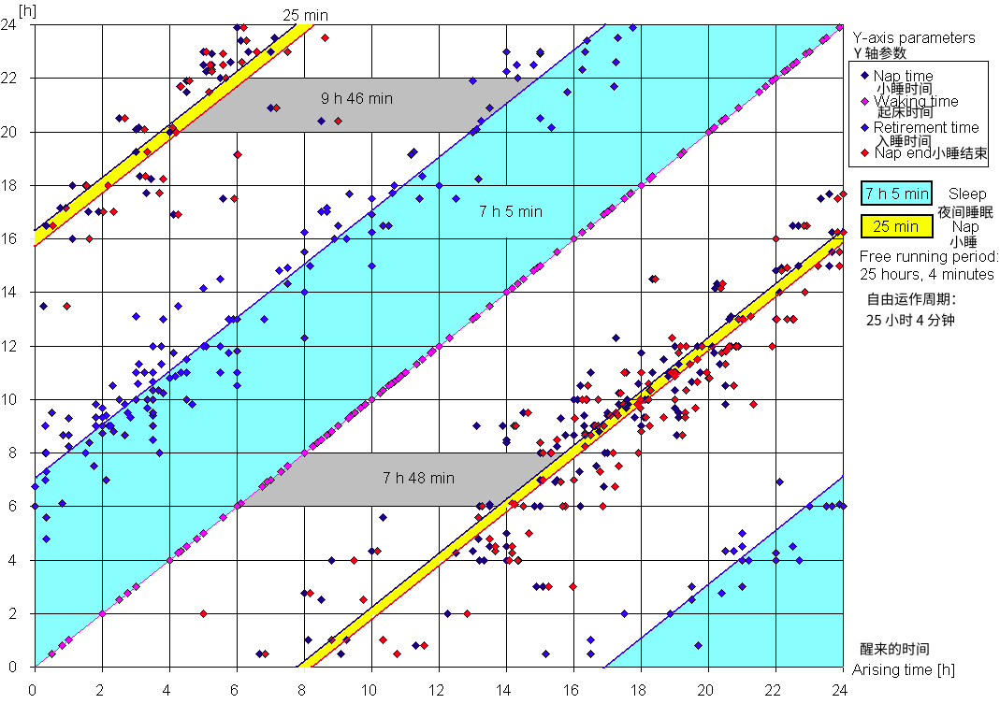

<!DOCTYPE html><html><head>
      <title>&#x7FFB;&#x8BD1;-&#x7761;&#x7720;&#x597D;&#xFF0C;&#x5B66;&#x4E60;&#x597D;&#xFF0C;&#x751F;&#x6D3B;&#x597D;</title>
      <meta charset="utf-8">
      <meta name="viewport" content="width=device-width, initial-scale=1.0">
      
      <link rel="stylesheet" href="file:////Users/hbj/.vscode/extensions/shd101wyy.markdown-preview-enhanced-0.5.22/node_modules/@shd101wyy/mume/dependencies/katex/katex.min.css">
      
      
      
      
      
      
      
      
      
      <style>
      /**
 * prism.js Github theme based on GitHub's theme.
 * @author Sam Clarke
 */
code[class*="language-"],
pre[class*="language-"] {
  color: #333;
  background: none;
  font-family: Consolas, "Liberation Mono", Menlo, Courier, monospace;
  text-align: left;
  white-space: pre;
  word-spacing: normal;
  word-break: normal;
  word-wrap: normal;
  line-height: 1.4;

  -moz-tab-size: 8;
  -o-tab-size: 8;
  tab-size: 8;

  -webkit-hyphens: none;
  -moz-hyphens: none;
  -ms-hyphens: none;
  hyphens: none;
}

/* Code blocks */
pre[class*="language-"] {
  padding: .8em;
  overflow: auto;
  /* border: 1px solid #ddd; */
  border-radius: 3px;
  /* background: #fff; */
  background: #f5f5f5;
}

/* Inline code */
:not(pre) > code[class*="language-"] {
  padding: .1em;
  border-radius: .3em;
  white-space: normal;
  background: #f5f5f5;
}

.token.comment,
.token.blockquote {
  color: #969896;
}

.token.cdata {
  color: #183691;
}

.token.doctype,
.token.punctuation,
.token.variable,
.token.macro.property {
  color: #333;
}

.token.operator,
.token.important,
.token.keyword,
.token.rule,
.token.builtin {
  color: #a71d5d;
}

.token.string,
.token.url,
.token.regex,
.token.attr-value {
  color: #183691;
}

.token.property,
.token.number,
.token.boolean,
.token.entity,
.token.atrule,
.token.constant,
.token.symbol,
.token.command,
.token.code {
  color: #0086b3;
}

.token.tag,
.token.selector,
.token.prolog {
  color: #63a35c;
}

.token.function,
.token.namespace,
.token.pseudo-element,
.token.class,
.token.class-name,
.token.pseudo-class,
.token.id,
.token.url-reference .token.variable,
.token.attr-name {
  color: #795da3;
}

.token.entity {
  cursor: help;
}

.token.title,
.token.title .token.punctuation {
  font-weight: bold;
  color: #1d3e81;
}

.token.list {
  color: #ed6a43;
}

.token.inserted {
  background-color: #eaffea;
  color: #55a532;
}

.token.deleted {
  background-color: #ffecec;
  color: #bd2c00;
}

.token.bold {
  font-weight: bold;
}

.token.italic {
  font-style: italic;
}


/* JSON */
.language-json .token.property {
  color: #183691;
}

.language-markup .token.tag .token.punctuation {
  color: #333;
}

/* CSS */
code.language-css,
.language-css .token.function {
  color: #0086b3;
}

/* YAML */
.language-yaml .token.atrule {
  color: #63a35c;
}

code.language-yaml {
  color: #183691;
}

/* Ruby */
.language-ruby .token.function {
  color: #333;
}

/* Markdown */
.language-markdown .token.url {
  color: #795da3;
}

/* Makefile */
.language-makefile .token.symbol {
  color: #795da3;
}

.language-makefile .token.variable {
  color: #183691;
}

.language-makefile .token.builtin {
  color: #0086b3;
}

/* Bash */
.language-bash .token.keyword {
  color: #0086b3;
}

/* highlight */
pre[data-line] {
  position: relative;
  padding: 1em 0 1em 3em;
}
pre[data-line] .line-highlight-wrapper {
  position: absolute;
  top: 0;
  left: 0;
  background-color: transparent;
  display: block;
  width: 100%;
}

pre[data-line] .line-highlight {
  position: absolute;
  left: 0;
  right: 0;
  padding: inherit 0;
  margin-top: 1em;
  background: hsla(24, 20%, 50%,.08);
  background: linear-gradient(to right, hsla(24, 20%, 50%,.1) 70%, hsla(24, 20%, 50%,0));
  pointer-events: none;
  line-height: inherit;
  white-space: pre;
}

pre[data-line] .line-highlight:before, 
pre[data-line] .line-highlight[data-end]:after {
  content: attr(data-start);
  position: absolute;
  top: .4em;
  left: .6em;
  min-width: 1em;
  padding: 0 .5em;
  background-color: hsla(24, 20%, 50%,.4);
  color: hsl(24, 20%, 95%);
  font: bold 65%/1.5 sans-serif;
  text-align: center;
  vertical-align: .3em;
  border-radius: 999px;
  text-shadow: none;
  box-shadow: 0 1px white;
}

pre[data-line] .line-highlight[data-end]:after {
  content: attr(data-end);
  top: auto;
  bottom: .4em;
}html body{font-family:"Helvetica Neue",Helvetica,"Segoe UI",Arial,freesans,sans-serif;font-size:16px;line-height:1.6;color:#333;background-color:#fff;overflow:initial;box-sizing:border-box;word-wrap:break-word}html body>:first-child{margin-top:0}html body h1,html body h2,html body h3,html body h4,html body h5,html body h6{line-height:1.2;margin-top:1em;margin-bottom:16px;color:#000}html body h1{font-size:2.25em;font-weight:300;padding-bottom:.3em}html body h2{font-size:1.75em;font-weight:400;padding-bottom:.3em}html body h3{font-size:1.5em;font-weight:500}html body h4{font-size:1.25em;font-weight:600}html body h5{font-size:1.1em;font-weight:600}html body h6{font-size:1em;font-weight:600}html body h1,html body h2,html body h3,html body h4,html body h5{font-weight:600}html body h5{font-size:1em}html body h6{color:#5c5c5c}html body strong{color:#000}html body del{color:#5c5c5c}html body a:not([href]){color:inherit;text-decoration:none}html body a{color:#08c;text-decoration:none}html body a:hover{color:#00a3f5;text-decoration:none}html body img{max-width:100%}html body>p{margin-top:0;margin-bottom:16px;word-wrap:break-word}html body>ul,html body>ol{margin-bottom:16px}html body ul,html body ol{padding-left:2em}html body ul.no-list,html body ol.no-list{padding:0;list-style-type:none}html body ul ul,html body ul ol,html body ol ol,html body ol ul{margin-top:0;margin-bottom:0}html body li{margin-bottom:0}html body li.task-list-item{list-style:none}html body li>p{margin-top:0;margin-bottom:0}html body .task-list-item-checkbox{margin:0 .2em .25em -1.8em;vertical-align:middle}html body .task-list-item-checkbox:hover{cursor:pointer}html body blockquote{margin:16px 0;font-size:inherit;padding:0 15px;color:#5c5c5c;background-color:#f0f0f0;border-left:4px solid #d6d6d6}html body blockquote>:first-child{margin-top:0}html body blockquote>:last-child{margin-bottom:0}html body hr{height:4px;margin:32px 0;background-color:#d6d6d6;border:0 none}html body table{margin:10px 0 15px 0;border-collapse:collapse;border-spacing:0;display:block;width:100%;overflow:auto;word-break:normal;word-break:keep-all}html body table th{font-weight:bold;color:#000}html body table td,html body table th{border:1px solid #d6d6d6;padding:6px 13px}html body dl{padding:0}html body dl dt{padding:0;margin-top:16px;font-size:1em;font-style:italic;font-weight:bold}html body dl dd{padding:0 16px;margin-bottom:16px}html body code{font-family:Menlo,Monaco,Consolas,'Courier New',monospace;font-size:.85em !important;color:#000;background-color:#f0f0f0;border-radius:3px;padding:.2em 0}html body code::before,html body code::after{letter-spacing:-0.2em;content:"\00a0"}html body pre>code{padding:0;margin:0;font-size:.85em !important;word-break:normal;white-space:pre;background:transparent;border:0}html body .highlight{margin-bottom:16px}html body .highlight pre,html body pre{padding:1em;overflow:auto;font-size:.85em !important;line-height:1.45;border:#d6d6d6;border-radius:3px}html body .highlight pre{margin-bottom:0;word-break:normal}html body pre code,html body pre tt{display:inline;max-width:initial;padding:0;margin:0;overflow:initial;line-height:inherit;word-wrap:normal;background-color:transparent;border:0}html body pre code:before,html body pre tt:before,html body pre code:after,html body pre tt:after{content:normal}html body p,html body blockquote,html body ul,html body ol,html body dl,html body pre{margin-top:0;margin-bottom:16px}html body kbd{color:#000;border:1px solid #d6d6d6;border-bottom:2px solid #c7c7c7;padding:2px 4px;background-color:#f0f0f0;border-radius:3px}@media print{html body{background-color:#fff}html body h1,html body h2,html body h3,html body h4,html body h5,html body h6{color:#000;page-break-after:avoid}html body blockquote{color:#5c5c5c}html body pre{page-break-inside:avoid}html body table{display:table}html body img{display:block;max-width:100%;max-height:100%}html body pre,html body code{word-wrap:break-word;white-space:pre}}.markdown-preview{width:100%;height:100%;box-sizing:border-box}.markdown-preview .pagebreak,.markdown-preview .newpage{page-break-before:always}.markdown-preview pre.line-numbers{position:relative;padding-left:3.8em;counter-reset:linenumber}.markdown-preview pre.line-numbers>code{position:relative}.markdown-preview pre.line-numbers .line-numbers-rows{position:absolute;pointer-events:none;top:1em;font-size:100%;left:0;width:3em;letter-spacing:-1px;border-right:1px solid #999;-webkit-user-select:none;-moz-user-select:none;-ms-user-select:none;user-select:none}.markdown-preview pre.line-numbers .line-numbers-rows>span{pointer-events:none;display:block;counter-increment:linenumber}.markdown-preview pre.line-numbers .line-numbers-rows>span:before{content:counter(linenumber);color:#999;display:block;padding-right:.8em;text-align:right}.markdown-preview .mathjax-exps .MathJax_Display{text-align:center !important}.markdown-preview:not([for="preview"]) .code-chunk .btn-group{display:none}.markdown-preview:not([for="preview"]) .code-chunk .status{display:none}.markdown-preview:not([for="preview"]) .code-chunk .output-div{margin-bottom:16px}.scrollbar-style::-webkit-scrollbar{width:8px}.scrollbar-style::-webkit-scrollbar-track{border-radius:10px;background-color:transparent}.scrollbar-style::-webkit-scrollbar-thumb{border-radius:5px;background-color:rgba(150,150,150,0.66);border:4px solid rgba(150,150,150,0.66);background-clip:content-box}html body[for="html-export"]:not([data-presentation-mode]){position:relative;width:100%;height:100%;top:0;left:0;margin:0;padding:0;overflow:auto}html body[for="html-export"]:not([data-presentation-mode]) .markdown-preview{position:relative;top:0}@media screen and (min-width:914px){html body[for="html-export"]:not([data-presentation-mode]) .markdown-preview{padding:2em calc(50% - 457px + 2em)}}@media screen and (max-width:914px){html body[for="html-export"]:not([data-presentation-mode]) .markdown-preview{padding:2em}}@media screen and (max-width:450px){html body[for="html-export"]:not([data-presentation-mode]) .markdown-preview{font-size:14px !important;padding:1em}}@media print{html body[for="html-export"]:not([data-presentation-mode]) #sidebar-toc-btn{display:none}}html body[for="html-export"]:not([data-presentation-mode]) #sidebar-toc-btn{position:fixed;bottom:8px;left:8px;font-size:28px;cursor:pointer;color:inherit;z-index:99;width:32px;text-align:center;opacity:.4}html body[for="html-export"]:not([data-presentation-mode])[html-show-sidebar-toc] #sidebar-toc-btn{opacity:1}html body[for="html-export"]:not([data-presentation-mode])[html-show-sidebar-toc] .md-sidebar-toc{position:fixed;top:0;left:0;width:300px;height:100%;padding:32px 0 48px 0;font-size:14px;box-shadow:0 0 4px rgba(150,150,150,0.33);box-sizing:border-box;overflow:auto;background-color:inherit}html body[for="html-export"]:not([data-presentation-mode])[html-show-sidebar-toc] .md-sidebar-toc::-webkit-scrollbar{width:8px}html body[for="html-export"]:not([data-presentation-mode])[html-show-sidebar-toc] .md-sidebar-toc::-webkit-scrollbar-track{border-radius:10px;background-color:transparent}html body[for="html-export"]:not([data-presentation-mode])[html-show-sidebar-toc] .md-sidebar-toc::-webkit-scrollbar-thumb{border-radius:5px;background-color:rgba(150,150,150,0.66);border:4px solid rgba(150,150,150,0.66);background-clip:content-box}html body[for="html-export"]:not([data-presentation-mode])[html-show-sidebar-toc] .md-sidebar-toc a{text-decoration:none}html body[for="html-export"]:not([data-presentation-mode])[html-show-sidebar-toc] .md-sidebar-toc ul{padding:0 1.6em;margin-top:.8em}html body[for="html-export"]:not([data-presentation-mode])[html-show-sidebar-toc] .md-sidebar-toc li{margin-bottom:.8em}html body[for="html-export"]:not([data-presentation-mode])[html-show-sidebar-toc] .md-sidebar-toc ul{list-style-type:none}html body[for="html-export"]:not([data-presentation-mode])[html-show-sidebar-toc] .markdown-preview{left:300px;width:calc(100% -  300px);padding:2em calc(50% - 457px -  150px);margin:0;box-sizing:border-box}@media screen and (max-width:1274px){html body[for="html-export"]:not([data-presentation-mode])[html-show-sidebar-toc] .markdown-preview{padding:2em}}@media screen and (max-width:450px){html body[for="html-export"]:not([data-presentation-mode])[html-show-sidebar-toc] .markdown-preview{width:100%}}html body[for="html-export"]:not([data-presentation-mode]):not([html-show-sidebar-toc]) .markdown-preview{left:50%;transform:translateX(-50%)}html body[for="html-export"]:not([data-presentation-mode]):not([html-show-sidebar-toc]) .md-sidebar-toc{display:none}
/* 
 * 本代码用于生成 HTML 样式，
 * 你可以在 VS Code 或者 Atom 中安装 Markdown 预览增强插件使其生效。
 *
 * This file is writen for generating HTML format. 
 * You can install the plugin called Markdown Preview Enhanced 
 * in VS Code or Atom to make it.
 *
 * 插件主页: https://shd101wyy.github.io/markdown-preview-enhanced/#/ 
 * Plugin Guide: https://shd101wyy.github.io/markdown-preview-enhanced/#/ 
 */
@font-face {
  font-family: 'Noto Sans SC', sans-serif;
  src: url("https://fonts.googleapis.com/css2?family=Noto+Sans+SC:wght@300");
}
.markdown-preview.markdown-preview {
  font-family: 'Noto Sans SC', sans-serif;
}
.markdown-preview.markdown-preview h1,
.markdown-preview.markdown-preview h2,
.markdown-preview.markdown-preview h3,
.markdown-preview.markdown-preview h4,
.markdown-preview.markdown-preview h5,
.markdown-preview.markdown-preview h6,
.markdown-preview.markdown-preview pre,
.markdown-preview.markdown-preview code {
  font-family: 'Noto Sans SC', sans-serif;
}
.figure {
  color: #C0C0C0;
  text-align: center;
}
/*
 * 以下代码源自: https://supermemo.guru/wiki/Good_sleep,_good_learning,_good_life
 * The code below is copied from:  https://supermemo.guru/wiki/Good_sleep,_good_learning,_good_life
 */
.bs-callout {
  margin: 20px 0;
  padding: 20px;
  border: 1px solid #eee;
  border-left-width: 5px;
  border-radius: 3px;
}
.bs-callout a {
  text-decoration: underline;
}
.bs-callout-highlight {
  border-color: #FFBF00;
  background-color: #FF0;
}
.bs-callout-personal {
  border-left-color: #ff2893;
  background-color: #ffc1e0;
}
.bs-callout-anecdote {
  border-left-color: #006600;
  background-color: #99ff99;
}
.bs-callout-supermemo {
  border-left-color: #8000ff;
  background-color: #d9d9ff;
}
.bs-callout-metaphor {
  border-left-color: #9bb79b;
  background-color: #d1ded1;
}
.bs-callout-archive {
  border-color: #ccc;
  background-color: #e5e5e5;
}
.bs-callout-note {
  position: relative;
  float: right;
  display: inline-block;
  white-space: nowrap;
}
.btn-callout-note {
  position: absolute;
  top: 0;
  right: 0;
  z-index: 10;
  display: block;
  padding: 5px 8px;
  font-size: 12px;
  color: #767676;
  background-color: #fff;
  border-radius: 0 2px 0 2px;
}
.bs-callout + .bs-callout-note > .btn-callout-note,
.faq-q + .bs-callout-note > .btn-callout-note,
.excerpt + .bs-callout-note > .btn-callout-note,
.motto + .bs-callout-note > .btn-callout-note {
  top: -13px;
}
.text-center {
  text-align: center;
}
.motto {
  margin: 20px 5em;
  padding: 20px;
  border-radius: 3px;
  background-color: #F8FAAD;
}
.inline-highlight {
  color: #e10071;
  background-color: #ffffae;
  font-weight: bold;
}
.excerpt {
  margin: 20px 0;
  padding: 0;
  border-radius: 3px;
  color: #0A2C5D;
  background: #E8FFFF url(https://supermemo.guru/images/top.gif) no-repeat top left;
}
.excerpt > p.bd {
  margin: 0;
  padding: 1em;
  background: url(https://supermemo.guru/images/end_quote.gif) no-repeat right bottom;
}
blockquote#locke-quote {
  margin: 0;
  padding: 0;
  width: 270px;
  line-height: 1em;
  color: #555;
  background: #eee url(https://supermemo.guru/images/top.gif) no-repeat top left;
  font-family: georgia,serif;
  font-size: 150%;
  text-align: center;
  letter-spacing: -1px;
}
#quote {
  margin: 0 10px 0 0;
  padding: 20px 20px 10px 20px;
  background: url(https://supermemo.guru/images/end_quote.gif) no-repeat right bottom;
}
#author {
  padding: 0 0 10px 0;
  color: #999;
  background: url(https://supermemo.guru//images/bottom.gif) no-repeat left bottom;
  font-size: 60%;
}
.brown {
  background-color: #FFCE9D;
}
.silver {
  background-color: silver;
}
.yellow {
  background-color: yellow;
}
.faq-q {
  border: 6px solid #6A6AFF;
  border-top-width: 1px;
  border-right-width: 3px;
  border-bottom-width: 2px;
  margin: 20px 0;
  padding: 20px 20px 20px 20px;
  background-color: #c1f0ff;
  border-radius: 15px;
}
div.more {
  margin: 3em 0;
  text-align: center;
}
div.more > span {
  padding: 1em;
  border: 5px solid #0000a0;
  border-radius: 15px;
  color: #0000a0;
  background-color: #E8FFE8;
  font-size: smaller;
}
div.reference {
  color: #C40000;
  font-style: italic;
  font-size: 12pt;
}
div.reference > p {
  margin-top: 0;
  margin-bottom: -5px;
}
div.reference > p,
div.reference > p.ref-itm > span {
  background-color: #FFA6FF;
}
div.reference > p.ref-itm {
  background-color: transparent;
}
p.mail-header {
  margin: 0;
  padding: 0;
}
.mail-header {
  display: inline;
  background: #FFFF80;
}
.mail-header .mail-subject {
  color: #FFF;
  background: #00F;
  font-weight: bold;
}

      </style>
    </head>
    <body for="html-export">
      <div class="mume markdown-preview  ">
      <h1 class="mume-header" id="%E7%9D%A1%E7%9C%A0%E5%A5%BD%E5%AD%A6%E4%B9%A0%E5%A5%BD%E7%94%9F%E6%B4%BB%E5%A5%BD">&#x7761;&#x7720;&#x597D;&#xFF0C;&#x5B66;&#x4E60;&#x597D;&#xFF0C;&#x751F;&#x6D3B;&#x597D;</h1>

<p>&#x4F5C;&#x8005;&#xFF1A;<a href="http://super-memory.com/english/company/wozniak.htm">Piotr Wo&#x17A;niak</a><br>
&#x65E5;&#x671F;&#xFF1A;2000 &#x5E74; - 2018 &#x5E74;<br>
&#x6765;&#x6E90;&#xFF1A;<a href="https://supermemo.guru/wiki/Good_sleep,_good_learning,_good_life">Good sleep, good learning, good life</a><br>
&#x7FFB;&#x8BD1;&#x65F6;&#x95F4;&#xFF1A;2021 &#x5E74; 6 - 7 &#x6708;</p>
<h2 class="mume-header undefined" id="translator_s_words">&#x7FFB;&#x8BD1;&#x7684;&#x8BDD;</h2>

<p>&#x672C;&#x7FFB;&#x8BD1;&#x4EE5; Markdown &#x8BED;&#x8A00;&#x5199;&#x6210;&#xFF0C;&#x5E76;&#x5BFC;&#x51FA;&#x6210; HTML PDF PNG &#x7B49;&#x683C;&#x5F0F;&#x3002;&#x63A8;&#x8350;&#x60A8;&#x4F7F;&#x7528; HTML &#x683C;&#x5F0F;&#x4EE5;&#x83B7;&#x5F97;&#x6700;&#x4F73;&#x4F53;&#x9A8C;&#x3002;</p>
<p>&#x7FFB;&#x8BD1;&#x5E76;&#x975E; 100% &#x51C6;&#x786E;&#x3002;&#x4F46;&#x6211;&#x4FDD;&#x8BC1;&#x5728;&#x6211;&#x80FD;&#x529B;&#x8303;&#x56F4;&#x4E4B;&#x5185;&#x63D0;&#x4F9B;&#x6700;&#x597D;&#x7684;&#x7FFB;&#x8BD1;&#x3002;&#x5982;&#x679C;&#x60A8;&#x89C9;&#x5F97;&#x6709;&#x6240;&#x8BB9;&#x8BEF;&#xFF0C;&#x53EF;&#x4EE5;&#x63D0;&#x4EA4; Issue&#xFF0C;&#x6216;&#x8005;&#x76F4;&#x63A5;&#x63D0;&#x4EA4; PR&#x3002;</p>
<p>&#x5BF9;&#x4E8E;&#x82F1;&#x6587; Wikipedia &#x94FE;&#x63A5;&#xFF0C;&#x5C06;&#x66FF;&#x6362;&#x6216;&#x6DFB;&#x52A0;&#x4E3A;&#x5BF9;&#x5E94;&#x4E2D;&#x6587; Wikipedia &#x94FE;&#x63A5;&#xFF08;&#x82E5;&#x6709;&#xFF09;&#xFF0C;&#x5E76;&#x9002;&#x5F53;&#x65B0;&#x589E;&#x4E86;&#x5916;&#x94FE;&#x3002;&#x5173;&#x4E8E;&#x672F;&#x8BED;&#xFF0C;&#x8BF7;&#x53C2;&#x89C1;<a href="#glossary">&#x672F;&#x8BED;</a>&#x4E00;&#x8282;&#x3002;</p>
<p>&#x8BD1;&#x8005;&#x63A8;&#x8350;&#x60A8;&#x5148;&#x9605;&#x8BFB;<a href="#incremental_writing">&#x589E;&#x91CF;&#x5199;&#x4F5C;</a>&#x4E00;&#x8282;&#xFF0C;&#x518D;&#x770B;&#x4E00;&#x4E0B;<a href="#references">&#x53C2;&#x8003;</a>&#x548C;<a href="#glossary">&#x672F;&#x8BED;</a>&#x524D;&#x7684;&#x58F0;&#x660E;&#x3002;&#x6D4F;&#x89C8;<a href="#content">&#x76EE;&#x5F55;</a>&#x540E;&#xFF0C;&#x6839;&#x636E;&#x60A8;&#x7684;&#x559C;&#x597D;&#xFF0C;&#x9009;&#x8BFB;<a href="#summary">&#x6982;&#x8981;</a>&#x548C;<a href="#introduction">&#x6B63;&#x6587;</a>&#x3002;&#x60A8;&#x4E0D;&#x5FC5;&#x4E00;&#x5929;&#x5168;&#x90E8;&#x8BFB;&#x5B8C;&#xFF0C;&#x4E5F;&#x4E0D;&#x5FC5;&#x6309;&#x987A;&#x5E8F;&#x8BFB;&#xFF0C;&#x6709;&#x5174;&#x8DA3;&#x7684;&#x65F6;&#x5019;&#x518D;&#x8BFB;&#x4E5F;&#x65E0;&#x59A8;&#x3002;</p>
<p>&#x6700;&#x540E;&#xFF0C;&#x611F;&#x8C22; Piotr Wo&#x17A;niak &#x535A;&#x58EB;&#x5728;&#x5B66;&#x4E60;&#x3001;&#x8BB0;&#x5FC6;&#x3001;&#x7761;&#x7720;&#x65B9;&#x9762;&#x7684;&#x8D21;&#x732E;&#x3002;&#x8C22;&#x8C22;&#x4F60;&#xFF01;</p>
<hr>
<h2 class="mume-header undefined" id="content">&#x76EE;&#x5F55;</h2>

<ul>
<li><a href="#%E7%9D%A1%E7%9C%A0%E5%A5%BD%E5%AD%A6%E4%B9%A0%E5%A5%BD%E7%94%9F%E6%B4%BB%E5%A5%BD">&#x7761;&#x7720;&#x597D;&#xFF0C;&#x5B66;&#x4E60;&#x597D;&#xFF0C;&#x751F;&#x6D3B;&#x597D;</a>
<ul>
<li><a href="#translator_s_words">&#x7FFB;&#x8BD1;&#x7684;&#x8BDD;</a></li>
<li><a href="#content">&#x76EE;&#x5F55;</a></li>
<li><a href="#introduction">1. &#x4ECB;&#x7ECD;</a></li>
<li><a href="#the_importance_of_sleeping">2. &#x7761;&#x7720;&#x7684;&#x91CD;&#x8981;&#x6027;</a>
<ul>
<li><a href="#dreams_of_good_sleep">2.1 &#x4F18;&#x8D28;&#x7761;&#x7720;&#x7684;&#x68A6;&#x60F3;</a></li>
<li><a href="#understanding_sleep">2.2 &#x7406;&#x89E3;&#x7761;&#x7720;</a></li>
</ul>
</li>
<li><a href="#why_do_we_sleep">3. &#x4E3A;&#x4EC0;&#x4E48;&#x8981;&#x7761;&#x89C9;&#xFF1F;</a>
<ul>
<li><a href="#role_of_sleep">3.1 &#x7761;&#x7720;&#x7684;&#x4F5C;&#x7528;</a></li>
<li><a href="#disk_and_ram_metaphor">3.2 &#x78C1;&#x76D8;&#x548C;&#x5185;&#x5B58;&#x6BD4;&#x55BB;</a></li>
<li><a href="#bad_sleep_kills_and_costs_billions">3.3 &#x4E0D;&#x826F;&#x7761;&#x7720;&#x4F1A;&#x5BFC;&#x81F4;&#x4E8B;&#x6545;&#x5E76;&#x9020;&#x6210;&#x4E25;&#x91CD;&#x635F;&#x5931;</a></li>
</ul>
</li>
<li><a href="#sleep_deprivation_is_lethal">4. &#x7761;&#x7720;&#x5265;&#x593A;&#x662F;&#x81F4;&#x547D;&#x7684;</a>
<ul>
<li><a href="#if_you_do_not_sleep_you_die">4.1 &#x4E0D;&#x7761;&#x89C9;&#x5C31;&#x4F1A;&#x6B7B;</a></li>
<li><a href="#brain_s_garbage_collection">4.2 &#x5927;&#x8111;&#x5783;&#x573E;&#x6536;&#x96C6;&#x7406;&#x8BBA;</a></li>
<li><a href="#sleep_protection">4.3 &#x7761;&#x7720;&#x4FDD;&#x62A4;</a></li>
<li><a href="#anabolic_sleep">4.4 &#x7761;&#x7720;&#x4E2D;&#x7684;&#x65B0;&#x9648;&#x4EE3;&#x8C22;</a></li>
<li><a href="#why_do_we_die_without_sleep">4.5 &#x4E3A;&#x4F55;&#x4E0D;&#x7761;&#x89C9;&#x5C31;&#x4F1A;&#x6B7B;&#xFF1F;</a></li>
</ul>
</li>
<li><a href="#circadian_and_homeostatic_sleepiness">5. &#x751F;&#x7269;&#x949F;&#x548C;&#x6052;&#x5E38;&#x6027;&#x7761;&#x610F;</a>
<ul>
<li><a href="#two_components_of_sleep">5.1 &#x7761;&#x7720;&#x7684;&#x4E24;&#x5927;&#x6784;&#x6210;</a></li>
<li><a href="#circadian_component">5.2 &#x751F;&#x7269;&#x949F;&#x7EC4;&#x6210;</a></li>
<li><a href="#homeostatic_component">5.3 &#x6052;&#x5E38;&#x6027;&#x7EC4;&#x6210;</a></li>
<li><a href="#clock_and_hourglass_metaphor">5.4 &#x65F6;&#x949F;&#x548C;&#x6C99;&#x6F0F;&#x6BD4;&#x55BB;</a></li>
<li><a href="#the_fundamental_theorem_of_good_sleep">5.5 &#x4F18;&#x8D28;&#x7761;&#x7720;&#x7684;&#x57FA;&#x672C;&#x5B9A;&#x7406;</a>
<ul>
<li><a href="#when_good_sleep_might_not_come">5.5.1 &#x4EC0;&#x4E48;&#x65F6;&#x5019;&#x53EF;&#x80FD;&#x4E0D;&#x4F1A;&#x6709;&#x4F18;&#x8D28;&#x7761;&#x7720;&#xFF1F;</a></li>
</ul>
</li>
</ul>
</li>
<li><a href="#formula_for_good_sleep">6. &#x4F18;&#x8D28;&#x7761;&#x7720;&#x516C;&#x5F0F;</a>
<ul>
<li><a href="#free_sleep_is_good_sleep">6.1 &#x81EA;&#x7531;&#x7761;&#x7720;&#x662F;&#x4F18;&#x8D28;&#x7761;&#x7720;</a></li>
<li><a href="#free_running_sleep">6.2 &#x81EA;&#x7531;&#x8FD0;&#x4F5C;&#x7684;&#x7761;&#x7720;</a></li>
<li><a href="#should_we_free_run_our_sleep">6.3 &#x6211;&#x4EEC;&#x5E94;&#x8BE5;&#x8BA9;&#x7761;&#x7720;&#x81EA;&#x7531;&#x8FD0;&#x4F5C;&#x5417;&#xFF1F;</a>
<ul>
<li><a href="#argument_1_phase_shifts">6.3.1 &#x4E89;&#x5435;1&#xFF1A;&#x76F8;&#x4F4D;&#x504F;&#x79FB;</a></li>
<li><a href="#argument_2_excessive_sleeping">6.3.2 &#x4E89;&#x5435;2&#xFF1A;&#x7761;&#x7720;&#x8FC7;&#x5269;</a></li>
<li><a href="#633-%E8%87%AA%E7%94%B1%E8%BF%90%E4%BD%9C%E7%9A%84%E7%9D%A1%E7%9C%A0%E6%AF%AB%E6%97%A0%E5%8E%8B%E5%8A%9B">6.3.3 &#x81EA;&#x7531;&#x8FD0;&#x4F5C;&#x7684;&#x7761;&#x7720;&#x6BEB;&#x65E0;&#x538B;&#x529B;</a></li>
</ul>
</li>
<li><a href="#free_running_sleep_algorithm">6.4 &#x81EA;&#x7531;&#x8FD0;&#x4F5C;&#x7761;&#x7720;&#x7684;&#x7B97;&#x6CD5;</a>
<ul>
<li><a href="#cardinal_mistakes_in_free_running_sleep">6.4.1 &#x81EA;&#x7531;&#x8FD0;&#x884C;&#x7761;&#x7720;&#x4E2D;&#x5BB9;&#x6613;&#x72AF;&#x7684;&#x9519;&#x8BEF;</a></li>
<li><a href="#sleep_logging_tips">6.4.2 &#x7761;&#x7720;&#x8BB0;&#x5F55;&#x7684;&#x63D0;&#x793A;</a></li>
</ul>
</li>
</ul>
</li>
<li><a href="#sleep_habits">7. &#x7761;&#x7720;&#x4E60;&#x60EF;</a>
<ul>
<li><a href="#constellation_of_sleep_habits">7.1 &#x4F17;&#x591A;&#x7761;&#x7720;&#x4E60;&#x60EF;</a></li>
<li><a href="#habits_body_clock">7.2 &#x751F;&#x7269;&#x949F;</a></li>
<li><a href="#components_of_sleep_in_phase_discords">7.3 &#x76F8;&#x4F4D;&#x969C;&#x788D;&#x4E2D;&#x7684;&#x7761;&#x7720;&#x7EC4;&#x6210;</a></li>
<li><a href="#lark_owl_misconception">7.4 &#x5BF9;&#x767E;&#x7075;&#x9E1F;-&#x732B;&#x5934;&#x9E70;&#x65F6;&#x95F4;&#x578B;&#x7684;&#x8BEF;&#x89E3;</a></li>
<li><a href="#charting_sleep">7.5 &#x8BB0;&#x5F55;&#x5E76;&#x6D4B;&#x91CF;&#x7761;&#x7720;</a>
<ul>
<li><a href="#sleepchart_in_supermemo">7.5.1 SuperMemo &#x4E2D;&#x7684; SleepChart</a></li>
<li><a href="#752-%E7%9D%A1%E7%9C%A0%E8%AE%B0%E5%BD%95">7.5.2 &#x7761;&#x7720;&#x8BB0;&#x5F55;</a></li>
</ul>
</li>
</ul>
</li>
<li><a href="#biphasic_life">8. &#x53CC;&#x76F8;&#x7761;&#x7720;&#x751F;&#x6D3B;</a></li>
<li><a href="#optimum_time_for_brainwork">9. &#x4F18;&#x5316;&#x8111;&#x529B;&#x5DE5;&#x4F5C;&#x65F6;&#x95F4;</a></li>
<li><a href="#alarm_clock">10. &#x95F9;&#x949F;</a></li>
<li><a href="#healthy_siesta">11. &#x5065;&#x5EB7;&#x5348;&#x7761;</a></li>
<li><a href="#best_time_for_siesta">12. &#x5348;&#x7761;&#x7684;&#x6700;&#x4F73;&#x65F6;&#x95F4;</a></li>
<li><a href="#napping_myths">13. &#x6709;&#x5173;&#x5C0F;&#x7761;&#x7684;&#x4F20;&#x95FB;</a></li>
<li><a href="#factors_that_affect_sleep">14. &#x5F71;&#x54CD;&#x7761;&#x7720;&#x7684;&#x56E0;&#x7D20;</a></li>
<li><a href="#how_long_should_we_sleep">15. &#x8BE5;&#x7761;&#x591A;&#x4E45;&#xFF1F;</a></li>
<li><a href="#baby_sleep">16. &#x5A74;&#x513F;&#x7684;&#x7761;&#x7720;</a></li>
<li><a href="#insomnia">17. &#x5931;&#x7720;</a></li>
<li><a href="#sleep_inertia">18. &#x8D77;&#x5E8A;&#x6C14;&#xFF08;&#x7761;&#x7720;&#x60EF;&#x6027;/&#x60F0;&#x6027;&#xFF09;</a></li>
<li><a href="#shift_work_and_jet_lag">19. &#x8F6E;&#x73ED;&#x5236;&#x548C;&#x65F6;&#x5DEE;</a></li>
<li><a href="#20-%E7%9D%A1%E7%9C%A0%E5%91%BC%E5%90%B8%E9%9A%9C%E7%A2%8D">20. &#x7761;&#x7720;&#x547C;&#x5438;&#x969C;&#x788D;</a></li>
<li><a href="#hypersomnia">21. &#x55DC;&#x7761;&#x75C7;</a></li>
<li><a href="#delayed_sleep_phase_syndrome">22. &#x7761;&#x7720;&#x76F8;&#x4F4D;&#x540E;&#x79FB;&#x75C7;&#x5019;&#x7FA4;&#xFF08;DSPS&#xFF09;</a></li>
<li><a href="#advanced_sleep_phase_syndrome">23. ASPS</a></li>
<li><a href="#curing_dsps_and_insomnia">24. &#x6CBB;&#x7597; DSPS &#x548C;&#x55DC;&#x7761;&#x75C7;</a></li>
<li><a href="#charting_phase_shifts">25. &#x6D4B;&#x91CF;&#x7761;&#x7720;&#x9636;&#x6BB5;</a></li>
<li><a href="#segmented_sleep">26. &#x5206;&#x6BB5;&#x5F0F;&#x7761;&#x7720;</a></li>
<li><a href="#function_of_sleep">27. &#x7761;&#x7720;&#x7684;&#x529F;&#x80FD;</a></li>
<li><a href="#sleep_and_learning">28. &#x7761;&#x7720;&#x548C;&#x5B66;&#x4E60;</a></li>
<li><a href="#how_do_we_fall_asleep">29. &#x5982;&#x4F55;&#x5165;&#x7761;</a></li>
<li><a href="#nrem_and_rem_sleep">30. NREM &#x548C; REM &#x7761;&#x7720;</a></li>
<li><a href="#neural_optimization_in_sleep">31. &#x7761;&#x7720;&#x4E2D;&#x7684;&#x795E;&#x7ECF;&#x4F18;&#x5316;</a></li>
<li><a href="#scientists_who_contest_memory_optimization">32. &#x4E89;&#x8BBA;&#x8BB0;&#x5FC6;&#x4F18;&#x5316;&#x7684;&#x79D1;&#x5B66;&#x5BB6;&#x4EEC;</a></li>
<li><a href="#circadian_oscillator_genes">33. &#x751F;&#x7269;&#x949F;&#x632F;&#x8361;&#x5668;&#x57FA;&#x56E0;</a></li>
<li><a href="#myth_and_facts">34. &#x4F20;&#x95FB;&#x548C;&#x4E8B;&#x5B9E;</a>
<ul>
<li><a href="#myth_length_of_sleep">34.1 &#x7761;&#x7720;&#x65F6;&#x957F;</a></li>
<li><a href="#342-%E5%B0%8F%E7%9D%A1">34.2 &#x5C0F;&#x7761;</a></li>
<li><a href="#myth_sleep_inertia">34.3 &#x8D77;&#x5E8A;&#x6C14; &#xFF08;&#x7761;&#x7720;&#x60F0;&#x6027;/&#x60EF;&#x6027;&#xFF09;</a></li>
<li><a href="#myth_insomnia">34.4 &#x5931;&#x7720;</a></li>
<li><a href="#myth_bedtime">34.5 &#x4E0A;&#x5E8A;&#x65F6;&#x95F4;</a></li>
<li><a href="#myth_body_clock">34.6 &#x751F;&#x7269;&#x949F;</a></li>
<li><a href="#myth_sleep_in_children">34.7 &#x513F;&#x7AE5;&#x7684;&#x7761;&#x7720;</a></li>
<li><a href="#myth_learning_and_creativity">34.8 &#x5B66;&#x4E60;&#x548C;&#x521B;&#x9020;&#x529B;</a></li>
<li><a href="#myth_alertness">34.9 &#x6CE8;&#x610F;&#x529B;</a></li>
<li><a href="#myth_alram_clock">34.10 &#x95F9;&#x949F;</a></li>
<li><a href="#myth_sleeping_pills">34.11 &#x5B89;&#x7720;&#x836F;</a></li>
<li><a href="#myth_polyphasic_sleep">34.12 &#x591A;&#x76F8;&#x7761;&#x7720;</a></li>
</ul>
</li>
<li><a href="#summary">35. &#x6982;&#x8981;</a>
<ul>
<li><a href="#s_abc_of_sleep">35.1 &#x7761;&#x7720;&#x7684;&#x7B2C;&#x4E00;&#x6B65;</a></li>
<li><a href="#s_optimizing_sleep">35.2 &#x4F18;&#x5316;&#x7761;&#x7720;</a></li>
<li><a href="#s_sleep_and_learning">35.3 &#x7761;&#x7720;&#x548C;&#x5B66;&#x4E60;</a></li>
<li><a href="#s_general">35.4 &#x901A;&#x8BC6;</a></li>
<li><a href="#s_children">35.5 &#x5B69;&#x7AE5;</a></li>
<li><a href="#s_napping">35.6 &#x5C0F;&#x7761;</a></li>
<li><a href="#s_substances">35.7 &#x7269;&#x8D28;</a></li>
<li><a href="#s_role_of_sleep">35.8 &#x7761;&#x7720;&#x7684;&#x804C;&#x8D23;</a></li>
<li><a href="#s_dsps">35.9 DSPS</a></li>
<li><a href="#s_polyphasic_sleep">35.10 &#x591A;&#x76F8;&#x7761;&#x7720;</a></li>
<li><a href="#s_physiology_of_sleep">35.11 &#x7761;&#x7720;&#x751F;&#x7406;&#x5B66;</a></li>
</ul>
</li>
<li><a href="#glossary">36. &#x672F;&#x8BED;</a>
<ul>
<li><a href="#g_acrophase"><em>acrophase &#x5CF0;&#x503C;&#x76F8;&#x4F4D;</em></a></li>
<li><a href="#g_adenosine"><em>adenosine &#x817A;&#x82F7;</em></a></li>
<li><a href="#g_ambien"><em>Ambien &#x5B89;&#x7720;&#x836F;</em></a></li>
<li><a href="#g_apnea"><em>apnea &#x547C;&#x5438;&#x505C;&#x6B62;</em></a></li>
<li><a href="#g_asps"><em>ASPS</em></a></li>
<li><a href="#g_bdnf"><em>BDNF</em></a></li>
<li><a href="#g_bf"><em>BF</em></a></li>
<li><a href="#g_borbely"><em>Borbely</em></a></li>
<li><a href="#g_buzsaki"><em>Buzsaki</em></a></li>
<li><a href="#g_benzodiazepines"><em>benzodiazepines &#x82EF;&#x4E8C;&#x6C2E;&#x5353;&#x7C7B;&#x836F;&#x7269;</em></a></li>
<li><a href="#g_biphasic_sleep"><em>biphasic sleep &#x53CC;&#x76F8;&#x7761;&#x7720;</em></a></li>
<li><a href="#g_caffeine"><em>caffeine &#x5496;&#x5561;&#x56E0;</em></a></li>
<li><a href="#g_catastrophic_forgetting"><em>catastrophic forgetting &#x707E;&#x96BE;&#x6027;&#x9057;&#x5FD8;</em></a></li>
<li><a href="#g_chronotype"><em>chronotype &#x65F6;&#x95F4;&#x578B;</em></a></li>
<li><a href="#g_circadian_sleep_component"><em>circadian sleep component &#x751F;&#x7269;&#x949F;&#x7761;&#x7720;&#x90E8;&#x5206;</em></a></li>
<li><a href="#g_complementary_encoding_theory"><em>complementary encoding theory &#x8865;&#x5145;&#x6027;&#x7F16;&#x7801;&#x7406;&#x8BBA;</em></a></li>
<li><a href="#g_consolidation"><em>consolidation &#x56FA;&#x5316;/&#x5408;&#x5E76;</em></a></li>
<li><a href="#g_cry_it_out_method"><em>cry it out method &#x8BA9;&#x5B69;&#x5B50;&#x54ED;</em></a></li>
<li><a href="#g_dmh"><em>DMH</em></a></li>
<li><a href="#g_dr"><em>DR</em></a></li>
<li><a href="#g_dsps"><em>DSPS</em></a></li>
<li><a href="#g_dual_network_theory"><em>dual network theory &#x53CC;&#x7F51;&#x7EDC;&#x7406;&#x8BBA;</em></a></li>
<li><a href="#g_entrainment"><em>entrainment) &#x9002;&#x5E94;</em></a></li>
<li><a href="#g_farmer_s_lifestyle"><em>farmer&apos;s lifestyle &#x519C;&#x592B;&#x7684;&#x751F;&#x6D3B;&#x65B9;&#x5F0F;</em></a></li>
<li><a href="#g_free_running_sleep"><em>free running sleep &#x81EA;&#x7531;&#x8FD0;&#x4F5C;&#x7684;&#x7761;&#x7720;</em></a></li>
<li><a href="#g_garbage_collection_theory"><em>garbage collection theory &#x5783;&#x573E;&#x6E05;&#x7406;&#x7406;&#x8BBA;</em></a></li>
<li><a href="#g_habitual_napper"><em>habitual napper &#x4E60;&#x60EF;&#x5C0F;&#x7761;&#x7684;&#x4EBA;</em></a></li>
<li><a href="#g_hippocampus"><em>hippocampus &#x6D77;&#x9A6C;&#x4F53;</em></a></li>
<li><a href="#g_hypocretins"><em>hypocretins &#x4E0B;&#x4E18;&#x8111;&#x6CCC;&#x7D20;</em></a></li>
<li><a href="#g_homeostatic_sleep_component"><em>homeostatic sleep component &#x6052;&#x5E38;&#x6027;&#x7761;&#x610F;&#x7EC4;&#x6210;</em></a></li>
<li><a href="#g_hypnogram"><em>hypnogram &#x7761;&#x7720;&#x56FE;</em></a></li>
<li><a href="#g_insomnia"><em>insomnia &#x5931;&#x7720;</em></a></li>
<li><a href="#g_lc"><em>LC</em></a></li>
<li><a href="#g_melatonin"><em>melatonin &#x892A;&#x9ED1;&#x7D20;</em></a></li>
<li><a href="#g_monohasic_sleep"><em>monohasic sleep &#x5355;&#x76F8;&#x7761;&#x7720;</em></a></li>
<li><a href="#g_mpo%7D"><em>MPO</em></a></li>
<li><a href="#g_nrem"><em>NREM</em></a></li>
<li><a href="#g_orexins"><em>orexins &#x98DF;&#x6B32;&#x80BD;</em></a></li>
<li><a href="#g_orexin_receptor"><em>orexin receptor &#x98DF;&#x6B32;&#x80BD;&#x53D7;&#x4F53;</em></a></li>
<li><a href="#g_phase_shift"><em>phase shift &#x76F8;&#x4F4D;&#x504F;&#x79FB;</em></a></li>
<li><a href="#g_pineal_gland"><em>pineal gland &#x677E;&#x679C;&#x4F53;</em></a></li>
<li><a href="#g_polyphasic_sleep"><em>polyphasic sleep &#x591A;&#x76F8;&#x7761;&#x7720;</em></a></li>
<li><a href="#g_prc"><em>PRC</em></a></li>
<li><a href="#g_pvn%7D"><em>PVN</em></a></li>
<li><a href="#g_ras"><em>RAS</em></a></li>
<li><a href="#g_recall"><em>recall &#x56DE;&#x5FC6;&#x7387;</em></a></li>
<li><a href="#g_rem"><em>REM</em></a></li>
<li><a href="#g_rem_deficit"><em>REM deficit REM &#x7F3A;&#x5931;</em></a></li>
<li><a href="#g_reverse_learning_theory"><em>reverse learning theory &#x9006;&#x5411;&#x5B66;&#x4E60;&#x7406;&#x8BBA;</em></a></li>
<li><a href="#g_siesta"><em>siesta &#x5348;&#x7761;</em></a></li>
<li><a href="#g_sleep_apnea"><em>sleep apnea &#x7761;&#x7720;&#x547C;&#x5438;&#x6682;&#x505C;</em></a></li>
<li><a href="#g_sleepchart"><em>SleepChart</em></a></li>
<li><a href="#g_sleep_deprivation"><em>sleep deprivation &#x7761;&#x7720;&#x5265;&#x593A;</em></a></li>
<li><a href="#g_sleep"><em>sleep latency &#x7761;&#x7720;&#x915D;&#x917F;&#x671F;</em></a></li>
<li><a href="#g_spw"><em>SPW</em></a></li>
<li><a href="#g_sws"><em>SWS</em></a></li>
<li><a href="#g_subjective_night"><em>subjective night &#x4EBA;&#x5404;&#x4E0D;&#x540C;&#x7684;&#x591C;&#x95F4;</em></a></li>
<li><a href="#g_supermemo"><em>SuperMemo</em></a></li>
<li><a href="#g_thc"><em>THC</em></a></li>
<li><a href="#g_tmn"><em>TMN</em></a></li>
<li><a href="#g_tms"><em>TMS</em></a></li>
<li><a href="#g_vlpo"><em>VLPO</em></a></li>
</ul>
</li>
<li><a href="#incremental_writing">37. &#x589E;&#x91CF;&#x5199;&#x4F5C;</a></li>
<li><a href="#references">38. &#x53C2;&#x8003;</a></li>
</ul>
</li>
</ul>
<h2 class="mume-header undefined" id="introduction">1. &#x4ECB;&#x7ECD;</h2>

<p>&#x4E8C;&#x5341;&#x591A;&#x5E74;&#x6765;&#xFF0C;&#x6211;&#x5728;<a href="https://www.supermemo.com/">&#x8BB0;&#x5FC6;&#x548C;&#x5B66;&#x4E60;&#x9886;&#x57DF;</a>&#x6DF1;&#x8015;&#x5DF2;&#x4E45;&#xFF0C;&#x56E0;&#x6B64;&#x6211;&#x4E5F;&#x5BF9;&#x7761;&#x7720;&#x7814;&#x7A76;&#x9887;&#x611F;&#x5174;&#x8DA3;&#x3002;&#x8FD9;&#x7BC7;&#x6587;&#x7AE0;&#x81F4;&#x529B;&#x4E8E;&#x5BF9;&#x5DF2;&#x77E5;&#x7684;&#x7761;&#x7720;&#x77E5;&#x8BC6;&#x8FDB;&#x884C;&#x7EFC;&#x5408;&#x5206;&#x6790;&#xFF0C;&#x4EE5;&#x4FBF;&#x4E8E;&#x5B9E;&#x9645;&#x5E94;&#x7528;&#xFF0C;&#x7279;&#x522B;&#x662F;&#x9488;&#x5BF9;&#x4E8E;&#x90A3;&#x4E9B;&#x9700;&#x8981;&#x9AD8;&#x8D28;&#x91CF;&#x7761;&#x7720;&#xFF0C;&#x4EE5;&#x9AD8;&#x6548;&#x5B66;&#x4E60;&#x6216;&#x83B7;&#x5F97;&#x521B;&#x9020;&#x6027;&#x6210;&#x5C31;&#x7684;&#x4EBA;&#x3002;&#x7761;&#x7720;&#x795E;&#x7ECF;&#x751F;&#x7406;&#x5B66;&#x662F;&#x4E00;&#x95E8;&#x6B63;&#x84EC;&#x52C3;&#x53D1;&#x5C55;&#x7684;&#x79D1;&#x5B66;&#x3002;&#x57FA;&#x4E8E;&#x65B0;&#x7684;&#x53D1;&#x73B0;&#xFF0C;&#x8BB8;&#x591A;&#x4E89;&#x8BAE;&#x6027;&#x7406;&#x8BBA;&#x5C06;&#x88AB;&#x5E9F;&#x5F03;&#x3002;&#x5C4A;&#x65F6;&#xFF0C;&#x8FD9;&#x7BC7;&#x6587;&#x7AE0;&#x7684;&#x67D0;&#x4E9B;&#x7406;&#x8BBA;&#x5C06;&#x4F1A;&#x8FC7;&#x65F6;&#xFF08;&#x76F8;&#x8F83;&#x4E8E;&#x672C;&#x6587; <a href="http://super-memory.com/articles/sleep2000.htm">2000 &#x5E74;</a>&#x548C; <a href="http://super-memory.com/articles/sleep.htm">2012 &#x5E74;</a>&#x7684;&#x65E7;&#x7248;&#x672C;&#xFF09;&#x3002;&#x4E0D;&#x8FC7;&#xFF0C;&#x57FA;&#x672C;&#x4E8B;&#x5B9E;&#x90FD;&#x53D7;&#x5230;&#x4E86;&#x5E7F;&#x6CDB;&#x8BA4;&#x53EF;&#xFF0C;&#x5E76;&#x5F97;&#x51FA;&#x4E86;&#x5BF9;&#x521B;&#x9020;&#x529B;&#x53CA;&#x667A;&#x529B;&#x6709;&#x53C2;&#x8003;&#x4EF7;&#x503C;&#x7684;&#x7ED3;&#x8BBA;&#x3002;&#x672C;&#x6587;&#x4E2D;&#x6211;&#x63D0;&#x4F9B;&#x4E86;&#x8BB8;&#x591A;&#x8BBA;&#x6587;&#x548C;&#x6D41;&#x884C;&#x7684;&#x79D1;&#x5B66;&#x6587;&#x7AE0;&#x3002;&#x5B83;&#x4EEC;&#x53EF;&#x80FD;&#x4F1A;&#x63D0;&#x51FA;&#x4E0D;&#x540C;&#x4E3B;&#x5F20;&#xFF0C;&#x751A;&#x81F3;&#x5F97;&#x51FA;&#x80CC;&#x9053;&#x800C;&#x9A70;&#x7684;&#x7ED3;&#x8BBA;&#x3002;&#x5EFA;&#x8BAE;&#x5E7F;&#x6CDB;&#x53C2;&#x8003;&#x6765;&#x6E90;&#xFF0C;&#x4FDD;&#x969C;&#x8BA4;&#x77E5;&#x5168;&#x9762;&#x3002;&#x4E0B;&#x6587;&#x5305;&#x62EC;&#xFF1A;&#x4F7F;&#x7528;&#x81EA;&#x7531;&#x8FD0;&#x4F5C;&#x7684;&#x7761;&#x7720;&#x6CBB;&#x7597;&#x5931;&#x7720;&#x75C7;&#x7684;&#x65B9;&#x6CD5;&#x3001;&#x8FDB;&#x9636;&#x578B;&#x7761;&#x7720;&#x5468;&#x671F;&#x969C;&#x788D;&#x548C;&#x7761;&#x7720;&#x76F8;&#x4F4D;&#x540E;&#x79FB;&#x75C7;&#x5019;&#x7FA4;&#x4EE5;&#x53CA;&#x5176;&#x4ED6;&#x4E00;&#x4E9B;&#x7761;&#x7720;&#x969C;&#x788D;&#x7684;&#x7279;&#x5F81;&#x3002;&#x6B64;&#x5916;&#xFF0C;&#x5982;&#x679C;&#x8BFB;&#x8005;&#x80FD;&#x5BF9;&#x8FD9;&#x7BC7;&#x6587;&#x7AE0;&#x63D0;&#x51FA;&#x5EFA;&#x8BBE;&#x6027;&#x610F;&#x89C1;&#xFF08;&#x5C24;&#x5176;&#x662F;&#x5B66;&#x4E60;&#x548C;&#x521B;&#x9020;&#x529B;&#x65B9;&#x9762;&#xFF09;&#xFF0C;&#x5F88;&#x9AD8;&#x5174;&#x6536;&#x5230;&#x60A8;&#x7684;&#x6765;&#x4FE1;&#x3002;</p>
<h2 class="mume-header undefined" id="the_importance_of_sleeping">2. &#x7761;&#x7720;&#x7684;&#x91CD;&#x8981;&#x6027;</h2>

<h3 class="mume-header undefined" id="dreams_of_good_sleep">2.1 &#x4F18;&#x8D28;&#x7761;&#x7720;&#x7684;&#x68A6;&#x60F3;</h3>

<p>&#x6E05;&#x723D;&#x8D77;&#x5E8A;&#xFF0C;&#x6109;&#x60A6;&#x5730;&#x8FCE;&#x63A5;&#x65B0;&#x7684;&#x4E00;&#x5929;&#xFF0C;&#x8FD9;&#x662F;&#x6BCF;&#x4E2A;&#x4EBA;&#x7684;&#x68A6;&#x60F3;&#x3002;&#x53EF;&#x60B2;&#x7684;&#x662F;&#xFF0C;&#x5728;&#x5F53;&#x4ECA;&#x793E;&#x4F1A;&#x53EA;&#x6709;&#x5C11;&#x6570;&#x4EBA;&#x5DF2;&#x7ECF;&#x5B9E;&#x73B0;&#x3002;&#x4F46;&#x8FD9;&#x5E76;&#x975E;&#x8BF4;&#x8FD9;&#x4E0D;&#x80FD;&#x5B9E;&#x73B0;&#xFF0C;&#x4EE5;&#x4E0B;&#x662F;&#x5B9E;&#x73B0;&#x7684;&#x6761;&#x4EF6;&#xFF1A;</p>
<ol>
<li>&#x4E9B;&#x8BB8;&#x5B66;&#x8BC6;</li>
<li>&#x613F;&#x610F;&#x6539;&#x53D8;&#x751F;&#x6D3B;&#x65B9;&#x5F0F;</li>
</ol>
<p>&#x5BF9;&#x4E8E;&#x7B2C;&#x4E00;&#x70B9;&#xFF0C;&#x4F46;&#x613F;&#x672C;&#x6587;&#x5199;&#x5C3D;&#x4E86;&#x6240;&#x9700;&#x77E5;&#x8BC6;&#x3002;&#x81F3;&#x4E8E;&#x7B2C;&#x4E8C;&#x70B9;&#xFF0C;&#x4FD7;&#x8BDD;&#x8BF4;&#xFF0C;&#x4E07;&#x4E8B;&#x5E76;&#x975E;&#x603B;&#x80FD;&#x5706;&#x6EE1;&#x5982;&#x610F;&#xFF0C;&#x6539;&#x53D8;&#x4E0D;&#x662F;&#x4E00;&#x8E74;&#x800C;&#x5C31;&#x7684;&#x3002;&#x5065;&#x5EB7;&#x7761;&#x7720;&#x751A;&#x81F3;&#x4F1A;&#x4E0E;&#x73B0;&#x4EE3;&#x751F;&#x6D3B;&#x4E60;&#x60EF;&#x3001;&#x6E34;&#x6C42;&#x3001;&#x751F;&#x6D3B;&#x65B9;&#x5F0F;&#x76F8;&#x65A5;&#x3002;&#x8FDB;&#x4E00;&#x6B65;&#x8BF4;&#xFF0C;&#x6E05;&#x723D;&#x7761;&#x7720;&#x53EF;&#x80FD;&#x4F1A;&#x727A;&#x7272;&#x5DE5;&#x4F5C;&#x6216;&#x957F;&#x671F;&#x76EE;&#x6807;&#x3002;&#x57FA;&#x4E8E;&#x6B64;&#xFF0C;&#x672C;&#x6587;&#x5E76;&#x975E;&#x662F;&#x89E3;&#x51B3;&#x6240;&#x6709;&#x4EBA;&#x95EE;&#x9898;&#x7684;&#x7075;&#x4E39;&#x5999;&#x836F;&#x3002;&#x518D;&#x8FDB;&#x4E00;&#x6B65;&#xFF0C;&#x5373;&#x4F7F;&#x4EE5;&#x4E0A;&#x4E24;&#x70B9;&#x5907;&#x9F50;&#xFF0C;&#x6BCF;&#x4E00;&#x5929;&#x90FD;&#x4FDD;&#x6301;&#x5FEB;&#x4E50;&#x548C;&#x6E05;&#x9192;&#x7684;&#x7CBE;&#x795E;&#x72B6;&#x6001;&#x4ECD;&#x7136;&#x662F;&#x5F88;&#x96BE;&#x7684;&#x3002;&#x4F46;&#x8BA9;&#x6211;&#x5F3A;&#x8C03;&#x4E00;&#x4E0B;&#xFF1A;</p>
<center class="bs-callout bs-callout-highlight" ""><b>
&#x5BF9;&#x5927;&#x591A;&#x6570;&#x4EBA;&#x6765;&#x8BF4;&#x7684;&#x5927;&#x591A;&#x6570;&#x665A;&#x4E0A;&#xFF0C;&#x90FD;&#x80FD;&#x591F;&#x5B89;&#x7720;&#x597D;&#x68A6;&#x3002;
</b></center>
<p>&#x8FD9;&#x7BC7;&#x6587;&#x7AE0;&#x6700;&#x521D;&#x5199;&#x4E8E;<a href="https://www.supermemo.com/archives1990-2015/articles/sleep2000">&#x5341;&#x5E74;&#x524D;</a>&#x3002;&#x6211;&#x4E00;&#x76F4;&#x5BF9;&#x8BB0;&#x5FC6;&#x3001;&#x5B66;&#x4E60;&#x548C;&#x7761;&#x7720;&#x611F;&#x5174;&#x8DA3;&#x3002;&#x6B64;&#x5916;&#xFF0C;&#x5728;&#x6211;&#x7684;&#x5DE5;&#x4F5C;&#x4E2D;&#xFF0C;&#x7761;&#x7720;&#x5C31;&#x50CF;&#x6C27;&#x6C14;&#x4E00;&#x6837;&#x91CD;&#x8981;&#x3002;&#x968F;&#x7740;&#x6211;&#x4EEC;&#x6DF1;&#x5165;&#x5230;<a href="http://en.wikipedia.org/wiki/Information_Age">&#x4FE1;&#x606F;&#x65F6;&#x4EE3;</a>&#x548C;<a href="http://en.wikipedia.org/wiki/Knowledge_economy">&#x77E5;&#x8BC6;&#x7ECF;&#x6D4E;</a>&#xFF0C;&#x8FD9;&#x4E9B;&#x95EE;&#x9898;&#x5BF9;&#x6211;&#x4EEC;&#x6BCF;&#x4E2A;&#x4EBA;&#x6765;&#x8BF4;&#x90FD;&#x6108;&#x53D1;&#x91CD;&#x8981;&#x3002;&#x5199;&#x5B8C;&#x6700;&#x521D;&#x7684;&#x6587;&#x7AE0;&#x540E;&#xFF0C;&#x6211;&#x9047;&#x5230;&#x4E86;&#x5F88;&#x591A;&#x62E5;&#x6709;&#x7761;&#x7720;&#x95EE;&#x9898;&#x7684;&#x4EBA;&#x3002;&#x6211;&#x4EB2;&#x773C;&#x76EE;&#x7779;&#x4E86;&#x8FD9;&#x4E9B;&#x7761;&#x7720;&#x77E5;&#x8BC6;&#x5BF9;&#x4ED6;&#x4EEC;&#x7684;&#x5E2E;&#x52A9;&#x3002;&#x4EE5;&#x53CA;&#x4EBA;&#x4EEC;&#x5728;&#x4F18;&#x8D28;&#x7761;&#x7720;&#x548C;&#x8FFD;&#x6C42;&#x9AD8;&#x751F;&#x4EA7;&#x529B;&#x8DEF;&#x4E0A;&#x9047;&#x5230;&#x7684;&#x79CD;&#x79CD;&#x969C;&#x788D;&#x3002;&#x6211;&#x66F4;&#x89C1;&#x5230;&#x4E86;&#x7761;&#x7720;&#x76F8;&#x4F4D;&#x7D0A;&#x4E71;&#x7684;&#x75C5;&#x75C7;&#xFF0C;&#x7531;&#x6B64;&#x6211;&#x5BF9;&#x591A;&#x76F8;&#x7761;&#x7720;&#x548C;&#x4E00;&#x822C;&#x7761;&#x7720;&#x95EE;&#x9898;&#x7684;&#x7814;&#x7A76;&#x5174;&#x8DA3;&#x5927;&#x589E;&#x3002;&#x5C3D;&#x7BA1;&#x6211;&#x6073;&#x6C42;&#x4EBA;&#x4EEC;&#x5173;&#x95ED;&#x95F9;&#x949F;&#xFF0C;&#x4F46;&#x5BF9;&#x5F88;&#x591A;&#x4EBA;&#x6765;&#x8BF4;&#x8FD9;&#x662F;&#x4E0D;&#x53EF;&#x907F;&#x514D;&#x7684;&#x3002;&#x5728;&#x8003;&#x8BD5;&#x524D;&#x901A;&#x5BB5;&#x3001;&#x628A;&#x5B69;&#x5B50;<a href="#g_cry_it_out_method">&#x5435;&#x9192;</a>&#x53BB;&#x4E0A;&#x5B66;&#x3001;&#x7761;&#x89C9;&#x524D;&#x5403;&#x5B89;&#x7720;&#x836F;&#x3001;&#x628A;&#x5A74;&#x513F;&#x4E22;&#x5230;&#x5E8A;&#x4E0A;&#x54ED;&#x7740;&#x7761;&#x89C9;&#x2026;&#x2026;&#x5982;&#x679C;&#x4E0D;&#x662F;&#x77E5;&#x8BC6;&#x7ED9;&#x6211;&#x5E26;&#x6765;&#x4E86;&#x5E0C;&#x671B;&#xFF0C;&#x8FD9;&#x5E45;&#x5149;&#x666F;&#x662F;&#x76F8;&#x5F53;&#x9707;&#x64BC;&#x4E14;&#x53EF;&#x60B2;&#x7684;&#x3002;&#x6211;&#x76F8;&#x4FE1;&#xFF0C;&#x53EA;&#x8981;&#x6709;&#x51B3;&#x5B9A;&#xFF0C;&#x6BCF;&#x4E2A;&#x4EBA;&#x90FD;&#x53EF;&#x4EE5;&#x6539;&#x5584;&#x81EA;&#x5DF1;&#xFF0C;&#x548C;&#x4ED6;&#x4EEC;&#x5B69;&#x5B50;&#x7684;&#x7761;&#x7720;&#x3002;</p>
<p>&#x6B64;&#x6587;&#x6C47;&#x7F16;&#x4E86;&#x6700;&#x91CD;&#x8981;&#x548C;&#x6700;&#x6709;&#x8DA3;&#x7684;&#x7761;&#x7720;&#x751F;&#x7269;&#x5B66;&#x7406;&#x8BBA;&#xFF0C;&#x4EE5;&#x5E2E;&#x52A9;&#x4F60;&#x5F97;&#x5230;&#x6240;&#x9700;&#x7684;&#x77E5;&#x8BC6;&#xFF0C;&#x5B9E;&#x73B0;&#x9AD8;&#x8D28;&#x91CF;&#x7684;&#x6E05;&#x723D;&#x7761;&#x7720;&#xFF0C;&#x63D0;&#x9AD8;&#x7CBE;&#x795E;&#x529B;&#x91CF;&#x3002;&#x8FD9;&#x7BC7;&#x6587;&#x7AE0;&#x89E3;&#x91CA;&#x4E86;&#x4E3A;&#x4EC0;&#x4E48;&#x7761;&#x7720;&#x5BF9;&#x5065;&#x5EB7;&#x548C;&#x5927;&#x8111;&#x6781;&#x4E3A;&#x91CD;&#x8981;&#x3002;&#x7761;&#x7720;&#x5E94;&#x8BE5;&#x5F97;&#x5230;&#x6700;&#x9AD8;&#x7684;&#x5C0A;&#x91CD;&#xFF0C;&#x5982;&#x679C;&#x5927;&#x591A;&#x6570;&#x4EBA;&#x53EA;&#x9075;&#x5FAA;&#x89C4;&#x5B9A;&#x7684;&#x89C4;&#x5219;&#xFF0C;&#x5C31;&#x80FD;&#x83B7;&#x5F97;&#x826F;&#x597D;&#x7684;&#x7761;&#x7720;&#x3002;</p>
<p>&#x81EA;&#x4ECE;&#x5199;&#x4E86;&#x300A;<a href="https://www.supermemo.com/archives1990-2015/articles/sleep2000">&#x7761;&#x7720;&#x597D;&#xFF0C;&#x5B66;&#x4E60;&#x597D;&#xFF0C;&#x751F;&#x6D3B;&#x597D;</a>&#x300B;&#xFF08;&#x8BD1;&#x6CE8;&#xFF1A;2000 &#x5E74;&#x7248;&#xFF09;&#x4E00;&#x6587;&#x540E;&#xFF0C;&#x7761;&#x7720;&#x79D1;&#x5B66;&#x8FC5;&#x731B;&#x53D1;&#x5C55;&#x3002;&#x6211;&#x5728; <a href="https://www.supermemo.com/archives1990-2015/articles/sleepchart">SleepChart</a> &#x548C; <a href="http://help.supermemo.org/wiki/SuperMemo">Supermemo</a> &#x7B49;&#x5DE5;&#x5177;&#x4E0A;&#x7684;&#x52AA;&#x529B;&#xFF0C;&#x4E3A;&#x7761;&#x7720;&#x548C;&#x5B66;&#x4E60;&#x5E26;&#x6765;&#x4E86;&#x6709;&#x8DA3;&#x7684;&#x542F;&#x793A;&#x3002;&#x6211;&#x6B64;&#x524D;&#x5728;&#x4E00;&#x4E9B;&#x7410;&#x788E;&#x6587;&#x7AE0;&#x548C;&#x5E38;&#x89C1;&#x95EE;&#x7B54; (FAQ) &#x4E2D;&#x8BA8;&#x8BBA;&#x7761;&#x7720;&#x79D1;&#x5B66;&#x7684;&#x53D1;&#x5C55;&#xFF0C;&#x4E00;&#x4E9B; <a href="http://Supermemo.com">Supermemo.com</a> &#x7684;&#x8BFB;&#x8005;&#x62B1;&#x6028;&#x4FE1;&#x606F;&#x592A;&#x788E;&#x7247;&#x5316;&#x4E86;&#xFF0C;&#x800C;&#x4E0D;&#x662F;&#x5728;&#x4E00;&#x7BC7;&#x6587;&#x7AE0;&#x91CC;&#x5199;&#x6E05;&#x695A;&#x3002;&#x73B0;&#x5728;&#xFF0C;&#x6211;&#x5C06;&#x5176;&#x6C47;&#x603B;&#x4E8E;&#x6B64;&#x3002;&#x6211;&#x60F3;&#x5199;&#x4E00;&#x4E9B;&#x4F7F;&#x7528;&#x7684;&#x7761;&#x7720;&#x77E5;&#x8BC6;&#xFF0C;&#x4F46;&#x662F;&#x540C;&#x65F6;&#xFF0C;&#x6211;&#x4E5F;&#x60F3;&#x63A2;&#x6C42;&#x9C9C;&#x4E3A;&#x4EBA;&#x77E5;&#x7684;&#x7814;&#x7A76;&#x6210;&#x679C;&#x3002;&#x8FD9;&#x4E9B;&#x6210;&#x679C;&#x6216;&#x8BB8;&#x53EF;&#x4EE5;&#x5BF9;&#x666E;&#x901A;&#x8BFB;&#x8005;&#x6291;&#x6216;&#x662F;&#x5728;&#x7761;&#x7720;&#x3001;&#x8BB0;&#x5FC6;&#x3001;&#x5B66;&#x4E60;&#x9886;&#x57DF;&#x5DE5;&#x4F5C;&#x7684;&#x79D1;&#x5B66;&#x5BB6;<a href="http://super-memory.com/articles/sleepchart.htm">&#x6709;&#x6240;&#x542F;&#x53D1;</a>&#x3002;&#x5982;&#x679C;&#x4F60;&#x89C9;&#x5F97;&#x6211;&#x9057;&#x6F0F;&#x4E86;&#x91CD;&#x8981;&#x5185;&#x5BB9;&#xFF0C;<a href="http://super-memory.com/english/company/wozniak.htm">&#x8BF7;&#x544A;&#x8BC9;&#x6211;</a>&#x3002;</p>
<p>&#x56E0;&#x4E3A;&#x6211;&#x5199;&#x5F97;&#x957F;&#x5F97;&#x79BB;&#x8C31;&#xFF0C;&#x4F60;&#x53EF;&#x4EE5;&#x4ECE;<a href="#summary">&#x5E95;&#x90E8;&#x7684;&#x6982;&#x8981;</a>&#x5F00;&#x59CB;&#x8BFB;&#x3002;&#x5982;&#x679C;&#x4F60;&#x89C9;&#x5F97;&#x6458;&#x8981;&#x4E5F;&#x5F88;&#x957F;&#xFF0C;&#x8FD9;&#x91CC;&#x662F;&#x8981;&#x70B9;&#xFF1A;</p>
<ul>
<li>&#x5C0A;&#x91CD;&#x7761;&#x7720;&#x662F;&#x83B7;&#x5F97;&#x9AD8;&#x667A;&#x5546;&#x3001;&#x826F;&#x597D;&#x5B66;&#x4E60;&#x7684;&#x5DE5;&#x5177;</li>
<li>&#x81EA;&#x7531;&#x7684;&#x7761;&#x7720;&#x65F6;&#x95F4;&#x53EF;&#x4EE5;&#x89E3;&#x51B3;&#x7EDD;&#x5927;&#x90E8;&#x5206;&#x95EE;&#x9898;</li>
<li>&#x5BF9;&#x521B;&#x610F;&#x5DE5;&#x4F5C;&#x8005;&#x800C;&#x8A00;&#xFF0C;<a href="#g_biphasic_sleep">&#x53CC;&#x76F8;&#x7761;&#x7720;</a>&#x662F;&#x6700;&#x5065;&#x5EB7;&#x7684;</li>
<li>&#x4E0D;&#x8981;&#x53EB;&#x9192;&#x5B69;&#x5B50;&#x7136;&#x540E;&#x62C9;&#x53BB;&#x4E0A;&#x5B66;&#xFF1B;&#x5982;&#x679C;&#x4E0D;&#x80FD;&#x53CA;&#x65F6;&#x8D77;&#x5E8A;&#x90A3;&#x5C31;&#x9003;&#x8BFE;&#x6216;&#x8005;&#x8003;&#x8651;&#x5728;&#x5BB6;&#x6559;&#x80B2;</li>
<li>&#x8BA9;&#x5A74;&#x5E7C;&#x513F;&#x6309;&#x9700;&#x7761;&#x89C9;&#xFF0C;&#x53EF;&#x4EE5;&#x8003;&#x8651;&#x540C;&#x5E8A;&#xFF08;&#x5C3D;&#x7BA1;&#x5F88;&#x591A;&#x513F;&#x79D1;&#x533B;&#x751F;&#x6709;&#x5176;&#x4ED6;&#x610F;&#x89C1;&#xFF09;</li>
<li>&#x953B;&#x70BC;&#x3001;&#x5B66;&#x4E60;&#x3001;&#x7761;&#x7720;&#x662F;&#x4FC3;&#x8FDB;&#x5927;&#x8111;&#x6210;&#x957F;&#x7684;&#x6700;&#x4F73;&#x5DE5;&#x5177;</li>
<li>&#x907F;&#x514D;&#x4F7F;&#x7528;&#x836F;&#x7269;&#x8C03;&#x8282;&#x7761;&#x7720;&#x6216;&#x63D0;&#x9AD8;&#x6CE8;&#x610F;&#x529B;&#xFF0C;&#x6BD4;&#x5982;&#x5B89;&#x7720;&#x836F;&#x3001;&#x9152;&#x7CBE;&#x3001;&#x975E;&#x6CD5;&#x836F;&#x7269;&#x3001;&#x5C3C;&#x53E4;&#x4E01;&#x3001;<a href="#g_biphasic_sleep">&#x5496;&#x5561;&#x56E0;</a>&#x3002;</li>
</ul>
<h3 class="mume-header undefined" id="understanding_sleep">2.2 &#x7406;&#x89E3;&#x7761;&#x7720;</h3>

<p>&#x592A;&#x591A;&#x4EBA;&#x5FFD;&#x89C6;&#x4E86;&#x7761;&#x7720;&#x7684;&#x91CD;&#x8981;&#x6027;&#xFF01;&#x5728;&#x73B0;&#x4EE3;&#x793E;&#x4F1A;&#x7684;&#x5BB6;&#x5EAD;&#x4E2D;&#xFF0C;&#x95F9;&#x949F;&#x592A;&#x5E38;&#x89C1;&#x4E86;&#x3002;&#x7531;&#x4E8E;&#x7535;&#x706F;&#x3001;&#x95F9;&#x949F;&#x3001;&#x5B89;&#x7720;&#x836F;&#x3001;&#x8F6E;&#x73ED;&#x5236;&#x7B49;&#xFF0C;&#x73B0;&#x4EE3;&#x4EBA;&#x7684;&#x7761;&#x7720;&#x5F80;&#x5F80;&#x662F;&#x7D0A;&#x4E71;&#x7684;&#x3002;</p>
<p></p>
<p class="figure"><b style="color:#000">&#x56FE;&#xFF1A;</b>4 &#x4F8B;&#x7761;&#x7720;&#x8BB0;&#x5F55;&#xFF0C;&#x53EF;&#x89C1;&#x73B0;&#x4EE3;&#x4EBA;&#x7684;&#x7761;&#x7720;&#x6A21;&#x5F0F;&#x5982;&#x96EA;&#x82B1;&#x822C;&#x4E30;&#x5BCC;&#x591A;&#x5F69;</p> 
<p>&#x5728;&#x8FC7;&#x53BB;&#x4E8C;&#x5341;&#x4E16;&#x7EAA;&#x7684;&#x4E00;&#x767E;&#x5E74;&#x91CC;&#xFF0C;&#x6211;&#x4EEC;&#x4FB5;&#x5165;&#x4E86;&#x4E00;&#x4E2A;&#x7ECF;&#x8FC7;&#x6570;&#x4EBF;&#x5E74;&#x6F14;&#x53D8;&#xFF0C;&#x6700;&#x7EC8;&#x53D8;&#x5F97;&#x5B8C;&#x7F8E;&#x4E14;&#x7CBE;&#x7EC6;&#x7684;&#x751F;&#x7406;&#x6D3B;&#x52A8;&#x3002;&#x7136;&#x800C;&#xFF0C;&#x76F4;&#x5230;&#x6700;&#x8FD1;&#x6211;&#x4EEC;&#x624D;&#x53D1;&#x73B0;&#x3002;&#x8FD9;&#x79CD;&#x4FB5;&#x5165;&#x53EF;&#x80FD;&#x662F;&#x51CF;&#x7F13;&#x5DE5;&#x4E1A;&#x5316;&#x56FD;&#x5BB6;&#x53D1;&#x5C55;&#x7684;&#x91CD;&#x8981;&#x7684;&#x53EF;&#x9884;&#x9632;&#x56E0;&#x7D20;&#x3002;&#x51E0;&#x5E74;&#x540E;&#xFF0C;&#x6211;&#x4EEC;&#x770B;&#x5230;&#x95F9;&#x949F;&#x548C;&#x300C;&#x7761;&#x7720;&#x8C03;&#x8282;&#x300D;&#x7684;&#x60F3;&#x6CD5;&#x53EF;&#x80FD;&#x4E0E;&#x6211;&#x4EEC;&#x770B;&#x5230;&#x9999;&#x70DF;&#x3001;&#x5931;&#x7720;&#x6750;&#x6599;&#x3001;&#x653E;&#x5C04;&#x6027;&#x5316;&#x5986;&#x54C1;&#x7B49;&#x5176;&#x4ED6;&#x300C;&#x4F1F;&#x5927;&#x300D;&#x7684;&#x4EBA;&#x7C7B;&#x53D1;&#x660E;&#x522B;&#x65E0;&#x4E8C;&#x81F4;&#x4E86;&#x3002;</p>
<p>&#x68C0;&#x67E5;&#x4E00;&#x4E0B;&#x8FD9;&#x5F20;&#x6E05;&#x5355;&#xFF0C;&#x91CC;&#x9762;&#x54EA;&#x4E9B;&#x7B26;&#x5408;&#x4F60;&#x7684;&#x60C5;&#x51B5;&#xFF1A;</p>
<ul>
<li>&#x96BE;&#x4EE5;&#x5728;&#x6B63;&#x786E;&#x7684;&#x65F6;&#x95F4;&#x5165;&#x7761;</li>
<li>&#x65E9;&#x4E0A;&#x592A;&#x56F0;&#xFF0C;&#x8D77;&#x5E8A;&#x5F88;&#x75DB;&#x82E6;</li>
<li>&#x5728;&#x5B66;&#x4E60;&#x6216;&#x5DE5;&#x4F5C;&#x65F6;&#xFF0C;&#x611F;&#x5230;&#x56F0;&#x5026;</li>
<li>&#x548C;&#x8EAB;&#x4F53;&#x6240;&#x9700;&#x76F8;&#x6BD4;&#xFF0C;&#x65F6;&#x5E38;&#x7F3A;&#x5C11;&#x4E24;&#x5230;&#x4E09;&#x5C0F;&#x65F6;&#x7761;&#x7720;</li>
<li>&#x867D;&#x7136;&#x7528;&#x95F9;&#x949F;&#xFF0C;&#x4F46;&#x771F;&#x7684;&#x5F88;&#x8BA8;&#x538C;&#x95F9;&#x949F;</li>
<li>&#x559D;&#x5496;&#x5561;&#x6216;&#x8005;&#x53EF;&#x4E50;</li>
<li>&#x7ECF;&#x5E38;&#x5728;&#x65E9;&#x4E0A;&#x7761;&#x4E24;&#x5230;&#x56DB;&#x4E2A;&#x5C0F;&#x65F6;&#x61D2;&#x89C9;</li>
<li>&#x4EE5;&#x4E0A;&#x81F3;&#x5C11;&#x6709;&#x4E00;&#x9879;&#x662F;&#x4EA7;&#x751F;&#x538B;&#x529B;&#x6216;&#x8005;&#x751F;&#x4EA7;&#x529B;&#x4E0B;&#x964D;&#x7684;&#x539F;&#x56E0;</li>
</ul>
<p>&#x6211;&#x6562;&#x6253;&#x8D4C;&#xFF0C;90% &#x7684;&#x60C5;&#x51B5;&#x4E0B;&#xFF0C;&#x4F60;&#x81F3;&#x5C11;&#x6709;&#x4E0A;&#x8FF0;&#x60C5;&#x51B5;&#x4E4B;&#x4E00;&#x3002;&#x53EF;&#x80FD;&#x8FD9;&#x662F;&#x4F60;&#x8BFB;&#x8FD9;&#x7BC7;&#x6587;&#x7AE0;&#x7684;&#x539F;&#x56E0;&#x3002;&#x4F60;&#x6216;&#x8BB8;&#x5DF2;&#x7ECF;&#x4E60;&#x60EF;&#x4E86;&#xFF0C;&#x800C;&#x4E14;&#x89C9;&#x5F97;&#x65E0;&#x836F;&#x53EF;&#x6551;&#x3002;&#x6211;&#x4F1A;&#x7ED9;&#x51FA;&#x8865;&#x6551;&#x5EFA;&#x8BAE;&#xFF0C;&#x4F46;&#x662F;&#xFF0C;&#x8FD9;&#x9700;&#x8981;&#x4F60;&#x6539;&#x53D8;&#x4F60;&#x7684;&#x5BB6;&#x5EAD;&#x751F;&#x6D3B;&#x3001;&#x5DE5;&#x4F5C;&#x3001;&#x8001;&#x677F;&#x6216;&#x4E00;&#x4E9B;&#x793E;&#x4F1A;&#x89C4;&#x5219;&#x3002;</p>
<p><strong>&#x7761;&#x7720;&#xFF0C;&#x4E0D;&#x4EC5;&#x4EC5;&#x662F;&#x4E00;&#x79CD;&#x4F11;&#x606F;&#x65B9;&#x5F0F;&#x3002;</strong> &#x7761;&#x7720;&#x662F;&#x5173;&#x952E;&#x7684;&#x751F;&#x7406;&#x529F;&#x80FD;&#xFF0C;&#x4E0E;&#x667A;&#x529B;&#x53D1;&#x5C55;&#x5BC6;&#x4E0D;&#x53EF;&#x5206;&#x3002;&#x4E0D;&#x5C0A;&#x91CD;&#x7761;&#x7720;&#x8005;&#x96BE;&#x4EE5;&#x7115;&#x53D1;&#x5168;&#x90E8;&#x7CBE;&#x795E;&#x6F5C;&#x529B;&#x3002;</p>
<p>&#x73B0;&#x4EE3;&#x793E;&#x4F1A;&#x7684;&#x89C4;&#x5219;&#x6839;&#x6DF1;&#x8482;&#x56FA;&#x3002;&#x7761;&#x7720;&#x88AB;&#x4E25;&#x91CD;&#x6F20;&#x89C6;&#x3002;&#x5728;&#x7F8E;&#x56FD;&#xFF0C;&#x8FD9;&#x5DF2;&#x7ECF;&#x8FD1;&#x4E4E;&#x75C5;&#x6001;&#x3002;&#x4EE5;&#x4E0B;&#xFF0C;&#x662F;&#x4E00;&#x4E9B;&#x7834;&#x574F;&#x7761;&#x7720;&#x7684;&#x505A;&#x6CD5;&#xFF1A;</p>
<ul>
<li>&#x7528;&#x95F9;&#x949F;&#x7F29;&#x51CF;&#x7761;&#x7720;&#xFF0C;&#x53EF;&#x884C;&#x3002;</li>
<li>&#x8F6E;&#x6362;&#x5236;&#x5DE5;&#x4F5C;&#xFF0C;&#x53EF;&#x884C;&#x3002;</li>
<li>&#x8DE8;&#x56FD;&#x65F6;&#x4E0D;&#x6CE8;&#x610F;&#x65F6;&#x5DEE;&#xFF0C;&#x53EF;&#x884C;&#x3002;</li>
<li>&#x5C11;&#x7761;&#x591A;&#x505A;&#x8282;&#x7701;&#x65F6;&#x95F4;&#xFF0C;&#x53EF;&#x884C;&#x3002;</li>
<li>&#x65E9;&#x65E9;&#x5730;&#x628A;&#x5B69;&#x5B50;&#x62C9;&#x8D77;&#x6765;&#x4E0A;&#x5B66;&#xFF0C;&#x53EF;&#x884C;&#x3002;</li>
<li>&#x5927;&#x8003;&#x524D;&#x71AC;&#x591C;&#xFF0C;&#x53EF;&#x884C;&#x3002;</li>
</ul>
<p>&#x5C11;&#x7761;&#x4E0D;&#x4F1A;&#x81F4;&#x4EBA;&#x6B7B;&#x4EA1;&#xFF08;<a href="http://super-memory.com/articles/sleep.htm#If_you_do_not_sleep.2C_you_die.21">&#x81F3;&#x5C11;&#x4E0D;&#x4F1A;&#x7ACB;&#x523B;&#x6B7B;&#x4EA1;</a>&#xFF09;&#x3002;&#x5C11;&#x7761;&#x4F7F;&#x4EBA;&#x75DB;&#x82E6;&#xFF0C;&#x4F46;&#x518D;&#x7761;&#x4E2A;&#x597D;&#x89C9;&#x4F3C;&#x4E4E;&#x5C31;&#x80FD;&#x8F7B;&#x677E;&#x6062;&#x590D;&#x3002;&#x7761;&#x7720;&#xFF0C;&#x597D;&#x50CF;&#x5F88;&#x5EC9;&#x4EF7;&#x3002;&#x751A;&#x81F3;&#xFF0C;&#x5409;&#x5C3C;&#x65AF;&#x4E16;&#x754C;&#x7EAA;&#x5F55;&#x4E5F;&#x5C06;&#x4E0D;&#x7761;&#x89C9;&#x7684;&#x5C1D;&#x8BD5;&#xFF08;1964&#x5E74;&#xFF0C;<a href="http://en.wikipedia.org/wiki/Randy_Gardner_(record_holder)">Randy Gardner</a> &#x6301;&#x7EED; 14 &#x5929;&#x6CA1;&#x6709;&#x7761;&#x89C9;&#xFF09;&#xFF0C;&#x62A5;&#x544A;&#x5F97;&#x8F7B;&#x63CF;&#x6DE1;&#x5199;&#x3002;&#x6709;&#x4E9B;&#x5173;&#x4E8E;&#x7CBE;&#x795E;&#x75C5;&#x5B66;&#x548C;&#x5FC3;&#x7406;&#x5B66;&#x7684;&#x4E66;&#x7C4D;&#x751A;&#x81F3;&#x8868;&#x793A;&#xFF0C;&#x957F;&#x671F;&#x5931;&#x7720;&#x6CA1;&#x6709;&#x4EFB;&#x4F55;&#x660E;&#x663E;&#x526F;&#x4F5C;&#x7528;&#x3002;&#x663E;&#x7136;&#xFF0C;&#x8FD9;&#x662F;&#x9519;&#x8BEF;&#x7684;&#x3002;&#x56E0;&#x4E3A;&#x5065;&#x5EB7;&#x98CE;&#x9669;&#xFF0C;&#x5409;&#x5C3C;&#x65AF;&#x4E16;&#x754C;&#x7EAA;&#x5F55;&#x540E;&#x6765;&#x53D6;&#x6D88;&#x4E86;<a href="#g_sleep_deprivation">&#x7761;&#x7720;&#x5265;&#x593A;&#x9879;&#x76EE;</a>&#x3002;</p>
<p>1992 &#x5E74;&#xFF0C;Bill Clinton &#x7ADE;&#x9009;&#x7F8E;&#x56FD;&#x603B;&#x7EDF;&#x3002;&#x4ED6;&#x9A84;&#x50B2;&#x5730;&#x627F;&#x8BA4;&#xFF0C;&#x4ED6; 48 &#x5C0F;&#x65F6;&#x6CA1;&#x6709;&#x7761;&#x89C9;&#xFF0C;&#x56E0;&#x4E3A;&#x4ED6;&#x771F;&#x5FC3;&#x60F3;&#x8981;&#x6210;&#x4E3A;&#x603B;&#x7EDF;&#x3002;&#x524D;&#x53C2;&#x8BAE;&#x5458; Bob Dole &#x6253;&#x7834;&#x4E86;&#x7EAA;&#x5F55;&#xFF1A;&#x300C;&#x6211;&#x5DF2;&#x7ECF;&#x575A;&#x6301; 78 &#x5C0F;&#x65F6;&#x6CA1;&#x6709;&#x7761;&#x89C9;&#x4E86;&#xFF0C;&#x5FC5;&#x987B;&#x575A;&#x6301;&#x5230; 96 &#x5C0F;&#x65F6;&#x3002;&#x6211;&#x4E3A;&#x7F8E;&#x56FD;&#x663C;&#x591C;&#x4E0D;&#x505C;&#x5730;&#x5DE5;&#x4F5C;&#x3002;&#x300D;Dole &#x7684;&#x58EE;&#x4E3E;&#x5E38;&#x548C;&#x526F;&#x603B;&#x7EDF; Albert Gore Jr. &#x76F8;&#x63D0;&#x5E76;&#x8BBA;&#x3002;Gore &#x5728; 2000 &#x5E74; 11 &#x6708; 7 &#x65E5;&#x7684;&#x9009;&#x4E3E;&#x65E5;&#x524D;&#x575A;&#x6301;&#x7ADE;&#x9009;&#x4E09;&#x5929;&#x3002;&#x5927;&#x9009;&#x7ED3;&#x675F;&#x540E;&#xFF0C;Gore &#x4F9D;&#x7136;&#x6CA1;&#x6709;&#x505C;&#x606F;&#x3002;&#x5728;&#x4E0E; Texas &#x5DDE;&#x957F; George W. Bush &#x767D;&#x70ED;&#x5316;&#x7ADE;&#x8D5B;&#x7684;&#x8BA9;&#x6B65;&#x5FAA;&#x73AF;&#x4E2D;&#x52A0;&#x73ED;&#x52A0;&#x70B9;&#x3002;Obama &#x88AB;&#x95EE;&#x53CA;&#x5F53;&#x9009;&#x603B;&#x7EDF;&#x4E00;&#x5E74;&#x591A;&#x540E;&#xFF0C;&#x6700;&#x60F3;&#x8981;&#x7684;&#x5723;&#x8BDE;&#x793C;&#x7269;&#x65F6;&#xFF0C;&#x4ED6;&#x6BEB;&#x4E0D;&#x72B9;&#x8C6B;&#x5730;&#x56DE;&#x7B54;&#xFF1A;8 &#x5C0F;&#x65F6;&#x7684;&#x7761;&#x7720;&#x3002;</p>
<p>&#x4E0D;&#x5C0A;&#x91CD;&#x7761;&#x7720;&#x7684;&#x574F;&#x699C;&#x6837;&#x5C45;&#x7136;&#x662F;&#x5BF9;&#x4E00;&#x4E2A;&#x56FD;&#x5BB6;&#x800C;&#x8A00;&#x6700;&#x91CD;&#x8981;&#x7684;&#x4EBA;&#x3002;</p>
<p>&#x6709;&#x4E9B;&#x4E0E;<a href="#g_sleep_deprivation">&#x7761;&#x7720;&#x5265;&#x593A;</a>&#x76F8;&#x5173;&#x7684;&#x620F;&#x5267;&#x6027;&#x4E8B;&#x5B9E;&#x9010;&#x6E10;&#x4E3A;&#x4EBA;&#x77E5;&#x6653;&#x3002;&#x6BCF;&#x5E74;&#xFF0C;&#x7761;&#x7720;&#x969C;&#x788D;&#x4E3A;&#x7F8E;&#x56FD;&#x56FD;&#x5BB6;&#x533B;&#x7597;&#x8D39;&#x7528;&#x589E;&#x6DFB;&#x4E86; 160 &#x4EBF;&#x7F8E;&#x5143;&#x8D1F;&#x62C5;&#xFF08;&#x4F8B;&#x5982;&#xFF0C;&#x52A0;&#x5267;&#x9AD8;&#x8840;&#x538B;&#x6216;&#x5FC3;&#x810F;&#x75C5;&#xFF09;&#x3002;&#x8FD9;&#x8FD8;&#x4E0D;&#x5305;&#x62EC;&#x5DE5;&#x4F5C;&#x4E2D;&#x7684;&#x4E8B;&#x6545;&#x548C;&#x751F;&#x4EA7;&#x529B;&#x635F;&#x5931;&#x3002;&#x4E3A;&#x6B64;&#xFF0C;&#x7F8E;&#x56FD;&#x56FD;&#x5BB6;&#x7761;&#x7720;&#x969C;&#x788D;&#x59D4;&#x5458;&#x4F1A;&#xFF08;the National Commission on Sleep Disorders&#xFF09;&#x4F30;&#x8BA1;&#xFF0C;<a href="g_sleep_deprivation">&#x7761;&#x7720;&#x5265;&#x593A;</a>&#x4F1A;&#x5BFC;&#x81F4;&#x538B;&#x529B;&#x589E;&#x5927;&#x3001;&#x5DE5;&#x4F5C;&#x751F;&#x4EA7;&#x529B;&#x4E0B;&#x964D;&#xFF0C;&#x6700;&#x7EC8;&#x635F;&#x5931;&#x53EF;&#x8FBE;1500&#x4EBF;&#x7F8E;&#x5143;&#x3002;<sup class="footnote-ref"><a href="#fn1" id="fnref1">[1]</a></sup>40% &#x7684;&#x5361;&#x8F66;&#x4E8B;&#x6545;&#x6E90;&#x4E8E;&#x75B2;&#x52B3;&#x9A7E;&#x9A76;&#xFF0C;&#x5348;&#x591C;&#x81F3;&#x65E9;&#x4E0A; 8 &#x70B9;&#x7684;&#x4E8B;&#x6545;&#x7387;&#x589E;&#x52A0;&#x4E86; 800%&#x3002;&#x5DE5;&#x4E1A;&#x707E;&#x5BB3;&#x4E5F;&#x5927;&#x591A;&#x6765;&#x81EA;<a href="#g_sleep_deprivation">&#x7761;&#x7720;&#x5265;&#x593A;</a>&#xFF08;Mitler &#x7B49;&#x4EBA;&#xFF0C;1988<sup class="footnote-ref"><a href="#fn2" id="fnref2">[2]</a></sup>&#xFF09;&#xFF0C;&#x5305;&#x62EC; Mile &#x5C9B;&#x3001; Chernbobyl&#x3001;Bhopal &#x7684;&#x6C14;&#x4F53;&#x6CC4;&#x6F0F;&#x3001;Zeebrugge &#x707E;&#x96BE;&#x3001;Exxon Valdez &#x6F0F;&#x6CB9;&#x4E8B;&#x4EF6;&#x3002;</p>
<p>&#x81EA; 20 &#x4E16;&#x7EAA; 20  &#x5E74;&#x4EE3;&#x4EE5;&#x6765;&#xFF0C;&#x4EBA;&#x4EEC;&#x5C31;&#x77E5;&#x9053;&#x7761;&#x7720;&#x80FD;&#x591F;&#x6539;&#x5584;&#x5B66;&#x4E60;&#x4E2D;&#x7684;<a href="#g_recall">&#x8BB0;&#x5FC6;</a>&#xFF08;recall&#xFF09;&#x3002;&#x7136;&#x800C;&#xFF0C;&#x76F4;&#x5230;&#x5343;&#x79A7;&#x5E74;&#xFF0C;Harvard &#x533B;&#x5B66;&#x9662;&#x7684;&#x7CBE;&#x795E;&#x75C5;&#x5B66;&#x526F;&#x6559;&#x6388; <a href="https://sleep.med.harvard.edu/people/faculty/220/Robert+Stickgold+PhD">Robert Stickgold</a> &#x7684;&#x7814;&#x7A76;&#x624D;&#x6210;&#x4E3A;&#x56FD;&#x9645;&#x5934;&#x6761;&#x3002;&#x4ED6;&#x7684;&#x7814;&#x7A76;&#x8BC1;&#x660E;&#x4E86;&#x957F;&#x671F;&#x4E3A;&#x4EBA;&#x6240;&#x77E5;&#x4F46;&#x9C9C;&#x6709;&#x4EBA;&#x91CD;&#x89C6;&#x7684;&#x4E8B;&#x5B9E;&#xFF1A;&#x7761;&#x7720;&#x662F;&#x5B66;&#x4E60;&#x7684;&#x5FC5;&#x8981;&#x6761;&#x4EF6;&#xFF08;Robert Stickgold 2005<sup class="footnote-ref"><a href="#fn3" id="fnref3">[3]</a></sup>&#xFF09;&#x3002;&#x7761;&#x7720;&#x51CF;&#x5C11;&#xFF0C;&#x8BB0;&#x5FC6;&#x529B;&#x968F;&#x4E4B;&#x4E0B;&#x964D;&#x3002;&#x5BF9;&#x4E8E;&#x5728;&#x672C;&#x8BE5;&#x7761;&#x89C9;&#x7684;&#x65F6;&#x95F4;&#x5B66;&#x5230;&#x7684;&#x77E5;&#x8BC6;&#xFF0C;&#x8BB0;&#x5FC6;&#x7559;&#x5B58;&#x7387;&#xFF08;recall&#xFF09;&#x53CD;&#x800C;&#x4F1A;&#x5927;&#x5927;&#x964D;&#x4F4E;&#x3002;&#x8003;&#x8BD5;&#x524D;&#x71AC;&#x591C;&#x786E;&#x5B9E;&#x6709;&#x7528;&#xFF0C;&#x4F46;&#x5728;&#x957F;&#x671F;&#x8BB0;&#x5FC6;&#xFF08;long-term memory&#xFF09;&#x4E2D;&#x7559;&#x4E0B;&#x7684;&#x8DB3;&#x8FF9;&#x5374;&#x53D8;&#x5F97;&#x6A21;&#x7CCA;&#x3002;&#x8003;&#x8BD5;&#x4F3C;&#x4E4E;&#x5DF2;&#x7ECF;&#x53D6;&#x4EE3;&#x4E86;&#x77E5;&#x8BC6;&#xFF0C;&#x6210;&#x4E3A;&#x4E86;&#x5B66;&#x4E60;&#x7684;&#x4E3B;&#x8981;&#x76EE;&#x7684;&#x3002;</p>
<center class="bs-callout bs-callout-highlight" ">
&#x51CF;&#x5C11;&#x7761;&#x7720;&#x540E;&#xFF0C;&#x5B66;&#x5230;&#x5F97;&#x66F4;&#x5C11;&#x4E86;&#xFF0C;&#x53D1;&#x5C55;&#x5F97;&#x66F4;&#x5C11;&#x4E86;&#xFF0C;&#x5934;&#x8111;&#x66F4;&#x4E0D;&#x7075;&#x5149;&#x4E86;&#xFF0C;&#x51B3;&#x65AD;&#x6108;&#x53D1;&#x9519;&#x8BEF;&#x4E86;&#xFF0C;&#x6267;&#x884C;&#x529B;&#x6108;&#x53D1;&#x4F4E;&#x4E0B;&#x4E86;&#xFF0C;&#x521B;&#x9020;&#x529B;&#x6108;&#x53D1;&#x6697;&#x6DE1;&#x4E86;&#xFF0C;&#x4F3C;&#x4E4E;&#x505A;&#x4EC0;&#x4E48;&#x9519;&#x4EC0;&#x4E48;&#xFF0C;&#x5E76;&#x4E14;&#x7834;&#x574F;&#x4E86;&#x667A;&#x529B;&#x7684;&#x771F;&#x6B63;&#x6F5C;&#x80FD;&#x3002;
</center>
<p>&#x793E;&#x4F1A;&#x7761;&#x7720;&#x4E60;&#x60EF;&#x7684;&#x6539;&#x53D8;&#x53EF;&#x4EE5;&#x5728;&#x5B66;&#x4E60;&#x3001;&#x5065;&#x5EB7;&#x548C;&#x751F;&#x4EA7;&#x529B;&#x65B9;&#x9762;&#x5E26;&#x6765;&#x4E00;&#x573A;&#x793E;&#x4F1A;&#x9769;&#x547D;&#xFF0C;&#x5176;&#x89C4;&#x6A21;&#x6050;&#x6015;&#x96BE;&#x4EE5;&#x60F3;&#x8C61;&#x3002;&#x300C;&#x4ECE;&#x5386;&#x53F2;&#x89D2;&#x5EA6;&#x6765;&#x770B;&#xFF0C;&#x4F3C;&#x4E4E;&#x8981;&#x4ECE;&#x6839;&#x672C;&#x4E0A;&#x6539;&#x53D8;&#x6211;&#x4EEC;&#x5BF9;&#x7761;&#x7720;&#x7684;&#x601D;&#x8003;&#x65B9;&#x5F0F;&#xFF0C;&#x7528;&#x653F;&#x7B56;&#x6539;&#x9769;&#x6765;&#x4FDD;&#x62A4;&#x793E;&#x4F1A;&#xFF0C;&#x907F;&#x514D;&#x5728;&#x5DE5;&#x4E1A;&#x548C;&#x4EA4;&#x901A;&#x9886;&#x57DF;&#x7684;&#x707E;&#x96BE;&#x6027;&#x9519;&#x8BEF;&#x3002;&#x300D;&#xFF08;<a href="http://www.ninds.nih.gov/find_people/ninds/pdbio_merrill_mitler.htm">Merrill Mitler</a> &#x535A;&#x58EB;&#xFF09;</p>
<p>&#x6211;&#x7814;&#x7A76; SuperMemo &#x7684;&#x7528;&#x6237;&#x6570;&#x636E;&#x5DF2;&#x7ECF; 20 &#x4F59;&#x5E74;&#x4E86;&#x3002;&#x6709;&#x51E0;&#x4E2A;&#x51B3;&#x5B9A;&#x6027;&#x56E0;&#x7D20;&#x53EF;&#x4EE5;&#x6210;&#x4E3A;&#x4E00;&#x4E2A;&#x6B63;&#x9762;&#x7684;&#x3001;&#x9AD8;&#x6548;&#x7684;&#x3001;&#x575A;&#x6301;&#x4E0D;&#x61C8;&#x7684;&#x5B66;&#x4E60;&#x8005;&#x3002;&#x4EE5;&#x4E0B;&#x7279;&#x5F81;&#x662F;&#x9AD8;&#x7EA7;&#x5B66;&#x4E60;&#x8005;&#x53EF;&#x80FD;&#x5177;&#x6709;&#x7684;&#xFF1A;</p>
<ul>
<li>&#x975E;&#x5E38;&#x4E50;&#x89C2;</li>
<li>&#x7761;&#x5F97;&#x597D;</li>
<li>&#x6C42;&#x77E5;&#x82E5;&#x6E34;</li>
<li>&#x6297;&#x538B;&#x80FD;&#x529B;&#x5F3A;</li>
<li>&#x7CBE;&#x529B;&#x5145;&#x6C9B;&#xFF0C;&#x4F46;&#x5728;&#x5B66;&#x4E60;&#x7684;&#x65F6;&#x5019;&#x80FD;&#x591F;&#x653E;&#x6162;&#x901F;&#x5EA6;</li>
</ul>
<p>&#x5F88;&#x9057;&#x61BE;&#x7684;&#x662F;&#x5982;&#x679C;&#x4F60;&#x6709;&#x4EE5;&#x4E0B;&#x7279;&#x5F81;&#xFF0C;&#x90A3;&#x4E48;&#x548C;&#x6709;&#x6548;&#x7684;&#x5B66;&#x4E60;&#x80FD;&#x529B;&#x53EF;&#x80FD;&#x516B;&#x7AFF;&#x5B50;&#x6253;&#x4E0D;&#x7740;&#x4E86;&#xFF1A;</p>
<ul>
<li>&#x65F6;&#x5E38;&#x6709;&#x6291;&#x90C1;&#x60C5;&#x7EEA;&#x3001;&#x60C5;&#x7EEA;&#x6CE2;&#x52A8;&#x5927;</li>
<li>&#x7761;&#x7720;&#x95EE;&#x9898;&#xFF08;&#x5C24;&#x5176;&#x662F;<a href="#g_insomnia">&#x5931;&#x7720;</a>&#xFF09;</li>
<li>&#x538B;&#x529B;&#x5927;</li>
<li>&#x591A;&#x52A8;&#x3001;&#x6CE8;&#x610F;&#x529B;&#x4E0D;&#x96C6;&#x4E2D;</li>
<li>&#x6297;&#x538B;&#x80FD;&#x529B;&#x4F4E;&#xFF08;&#x5438;&#x70DF;&#x3001;&#x996E;&#x9152;&#x3001;&#x8BD5;&#x56FE;&#x7528;&#x7269;&#x8D28;&#x6539;&#x53D8;&#x60C5;&#x7EEA;&#x7B49;&#xFF09;</li>
</ul>
<center class="bs-callout bs-callout-highlight" ">&#x7761;&#x5F97;&#x597D;&#x4F3C;&#x4E4E;&#x662F;&#x5B66;&#x4E60;&#x6210;&#x529F;&#x7684;&#x6700;&#x91CD;&#x8981;&#x56E0;&#x7D20;&#x4E4B;&#x4E00;!</center>
<h2 class="mume-header undefined" id="why_do_we_sleep">3. &#x4E3A;&#x4EC0;&#x4E48;&#x8981;&#x7761;&#x89C9;&#xFF1F;</h2>

<h3 class="mume-header undefined" id="role_of_sleep">3.1 &#x7761;&#x7720;&#x7684;&#x4F5C;&#x7528;</h3>

<p>&#x591A;&#x5E74;&#x4EE5;&#x6765;&#xFF0C;&#x7761;&#x7720;&#x7684;&#x751F;&#x7406;&#x529F;&#x80FD;&#x5C1A;&#x4E0D;&#x660E;&#x786E;&#x3002;&#x5F88;&#x591A;&#x4EBA;&#x8BA4;&#x4E3A;&#xFF0C;&#x7761;&#x7720;&#x662F;&#x7528;&#x6765;&#x4F11;&#x606F;&#x3001;&#x6062;&#x590D;&#x7CBE;&#x795E;&#x7684;&#x3002;&#x7761;&#x7720;&#x7684;&#x6062;&#x590D;&#x6027;&#x3001;&#x4FDD;&#x62A4;&#x6027;&#x3001;&#x80FD;&#x91CF;&#x4FDD;&#x5B58;&#x7406;&#x8BBA;&#x4E00;&#x76F4;&#x76F8;&#x5F53;&#x6D41;&#x884C;&#x3002;&#x6700;&#x8FD1;&#xFF0C;&#x4EBA;&#x4EEC;&#x53D1;&#x73B0;&#xFF0C;&#x957F;&#x65F6;&#x95F4;&#x7761;&#x7720;&#x548C;&#x610F;&#x8BC6;&#x6291;&#x5236;&#x4F3C;&#x4E4E;&#x5E76;&#x4E0D;&#x662F;&#x8FDB;&#x5316;&#x4E2D;&#x89E3;&#x51B3;&#x8D44;&#x6E90;&#x67AF;&#x7AED;&#x3001;&#x5E9F;&#x7269;&#x6392;&#x9664;&#x6216;&#x4FDD;&#x5B58;&#x80FD;&#x91CF;&#x7684;&#x6700;&#x4F73;&#x65B9;&#x5F0F;&#x3002;&#x4F8B;&#x5982;&#xFF0C;&#x808C;&#x8089;&#x4E0D;&#x9700;&#x8981;&#x5B8C;&#x5168;&#x5173;&#x95ED;&#x6765;&#x4F11;&#x606F;&#x3002;&#x7761;&#x7720;&#x7684;&#x5173;&#x952E;&#x529F;&#x80FD;&#x5728;&#x5B9E;&#x9A8C;&#x4E2D;&#x5F97;&#x5230;&#x4E86;&#x663E;&#x8457;&#x8BF4;&#x660E;&#xFF0C;&#x957F;&#x65F6;&#x95F4;&#x88AB;&#x5265;&#x593A;&#x7761;&#x7720;&#x7684;&#x8001;&#x9F20;&#x6700;&#x7EC8;&#x4F1A;&#x5728; 2.5 &#x5468;&#x5185;&#x6B7B;&#x4EA1;&#xFF08;&#x53C2;&#x89C1;&#xFF1A;<a href="https://super-memory.com/articles/sleep.htm#If_you_do_not_sleep.2C_you_die.21">&#x4E0D;&#x7761;&#x89C9;&#x5C31;&#x4F1A;&#x6B7B;&#x3002;</a>&#xFF09;&#x3002;</p>
<p>&#x4EE5;&#x8FDB;&#x5316;&#x89D2;&#x5EA6;&#x770B;&#xFF0C;&#x7761;&#x7720;&#x662F;&#x4E00;&#x4E2A;&#x975E;&#x5E38;&#x539F;&#x59CB;&#x7684;&#x73B0;&#x8C61;&#xFF0C;&#x8FD9;&#x8BF4;&#x660E;&#x7761;&#x7720;&#x5BF9;&#x751F;&#x5B58;&#x81F3;&#x5173;&#x91CD;&#x8981;&#x3002;&#x53EA;&#x662F;&#x5728;&#x6700;&#x8FD1;&#xFF0C;&#x4EBA;&#x4EEC;&#x624D;&#x6BEB;&#x65E0;&#x7591;&#x95EE;&#x7684;&#x8BC1;&#x660E;&#x4E86;&#xFF0C;&#x7761;&#x7720;&#x673A;&#x80FD;&#x4E0E;&#x5B66;&#x4E60;&#x6709;&#x5173;&#xFF08;<a href="https://super-memory.com/articles/sleep.htm#Not_all_scientists_agree">&#x5E76;&#x975E;&#x6240;&#x6709;&#x79D1;&#x5B66;&#x5BB6;&#x90FD;&#x540C;&#x610F;</a>&#xFF09;</p>
<p>&#x5F88;&#x4E45;&#x4E4B;&#x524D;&#xFF0C;&#x7814;&#x7A76;&#x8005;&#x5C31;&#x8BA4;&#x8BC6;&#x5230;&#xFF0C;&#x5C0F;&#x8111;&#x4E2D;&#x7684;&#x6D77;&#x9A6C;&#x4F53;&#x5BF9;&#x8BB0;&#x5FC6;&#x5F62;&#x6210;&#x7684;&#x91CD;&#x8981;&#x6027;&#x3002;&#x4F46;&#x662F;&#xFF0C;&#x4E00;&#x76F4;&#x90FD;&#x6CA1;&#x6709;&#x4EBA;&#x9610;&#x660E;&#xFF0C;&#x5B83;&#x6709;&#x522B;&#x4E8E;&#x5927;&#x8111;&#x76AE;&#x5C42;&#x5176;&#x4ED6;&#x533A;&#x57DF;&#x7684;&#x7279;&#x6B8A;&#x4E4B;&#x5904;&#x3002;&#x540E;&#x8005;&#x540C;&#x6837;&#x663E;&#x793A;&#x51FA;&#x7A81;&#x89E6;&#x53EF;&#x5851;&#x6027;&#xFF0C;&#x5373;&#x5B58;&#x50A8;&#x8BB0;&#x5FC6;&#x7684;&#x80FD;&#x529B;&#x3002;</p>
<p>&#x5728;&#x7814;&#x7A76;&#x8005;&#x7684;&#x96C6;&#x4F53;&#x52AA;&#x529B;&#x4E0B;&#xFF0C;&#x6700;&#x7EC8;&#x63D0;&#x51FA;&#x4E86;&#x7761;&#x7720;&#x4E2D;&#x795E;&#x7ECF;&#x4F18;&#x5316;&#x7684;&#x7406;&#x5FF5;&#xFF08;&#x53C2;&#x89C1;&#x4E0B;&#x4E00;&#x5C0F;&#x8282;&#x7684;&#x6BD4;&#x55BB;&#xFF1A;<a href="#disk_and_ram_metaphor">&#x78C1;&#x76D8;&#x548C;&#x5185;&#x5B58;</a>&#xFF09;&#x3002;Gy&#xF6;rgy Buzs&#xE1;ki &#x535A;&#x58EB;&#x63D0;&#x51FA;&#x7684;&#x7A81;&#x7834;&#x6027;&#x7406;&#x8BBA;&#xFF0C;&#x8BB0;&#x5FC6;&#x75D5;&#x8FF9;&#xFF08;memory trace&#xFF09;&#x5F62;&#x6210;&#x7684;&#x4E24;&#x9636;&#x6BB5;&#x6A21;&#x578B;&#xFF0C;&#x4E3A;&#x6211;&#x4EEC;&#x89E3;&#x91CA;&#x4E86;&#xFF0C;&#x7761;&#x7720;&#x4E2D;&#x53EF;&#x80FD;&#x53D1;&#x751F;&#x7684;&#x4E8B;&#x60C5;&#xFF08;Buzs&#xE1;ki 1989<sup class="footnote-ref"><a href="#fn4" id="fnref4">[4]</a></sup>&#xFF09;&#xFF08;&#x6CE8;&#x610F;&#x4E0D;&#x8981;&#x4E0E;&#x540E;&#x6587;&#x7684;&#x8BB0;&#x5FC6;&#x4E24;&#x6784;&#x6210;&#x6A21;&#x578B;&#xFF08;Wo&#x17A;niak &#x7B49;&#xFF0C;1995<sup class="footnote-ref"><a href="#fn5" id="fnref5">[5]</a></sup>&#xFF09;&#x548C;&#x7761;&#x7720;&#x4E24;&#x6784;&#x6210;&#x6A21;&#x578B;&#x4E92;&#x76F8;&#x6DF7;&#x6DC6;<sup class="footnote-ref"><a href="#fn6" id="fnref6">[6]</a></sup>&#xFF09;&#x3002;Buzs&#xE1;ki &#x5229;&#x7528;&#x4ED6;&#x7684;&#x795E;&#x7ECF;&#x7F51;&#x7EDC;&#x77E5;&#x8BC6;&#xFF08;&#x8BD1;&#x6CE8;&#xFF1A;&#x6B64;&#x4E3A;&#x751F;&#x7269;&#x5B66;&#x7528;&#x8BED;&#xFF0C;&#x8BF7;&#x52FF;&#x4E0E;&#x8BA1;&#x7B97;&#x673A;&#x7528;&#x8BED;&#x6DF7;&#x6DC6;&#xFF09;&#x3001;&#x5BF9;&#x6FC0;&#x53D1;&#x795E;&#x7ECF;&#x5143;&#x7684;&#x5DE7;&#x5999;&#x5B9E;&#x9A8C;&#x3001;&#x5BF9;&#x795E;&#x7ECF;&#x5143;&#x5728;&#x65F6;&#x95F4;&#x548C;&#x7A7A;&#x95F4;&#x4E0A;&#x6FC0;&#x53D1;&#x7279;&#x5F81;&#x7684;&#x590D;&#x6742;&#x6570;&#x5B66;&#x5206;&#x6790;&#xFF0C;&#x63D0;&#x4F9B;&#x4E86;&#x4E00;&#x4E2A;&#x5F88;&#x597D;&#x7684;&#x6A21;&#x578B;&#xFF0C;&#x89E3;&#x91CA;&#x4E86;&#x4E24;&#x5927;&#x7761;&#x7720;&#x7EC4;&#x6210;&#x90E8;&#x5206;&#xFF0C;&#x5373; <a href="#g_rem">REM</a> &#xFF08;&#x5FEB;&#x901F;&#x773C;&#x52A8;&#x7761;&#x7720;&#xFF09;&#x548C; <a href="#g_nrem">NREM</a>&#xFF08;&#x975E;&#x5FEB;&#x901F;&#x773C;&#x52A8;&#x7761;&#x7720;&#xFF09;&#xFF0C;&#x5982;&#x4F55;&#x5171;&#x540C;&#x4F18;&#x5316;&#x8BB0;&#x5FC6;&#x3002;&#x6D77;&#x9A6C;&#x4F53;&#x4F5C;&#x4E3A;&#x5927;&#x8111;&#x7684;&#x4E2D;&#x592E;&#x914D;&#x7535;&#x76D8;&#xFF0C;&#x53EF;&#x4EE5;&#x8F7B;&#x6613;&#x5B58;&#x50A8;&#x77ED;&#x671F;&#x8BB0;&#x5FC6;&#xFF08;short-term memory&#xFF09;&#x7279;&#x5F81;&#x3002;&#x7136;&#x800C;&#xFF0C;&#x8FD9;&#x4E9B;&#x7279;&#x5F81;&#x5FC5;&#x987B;&#x5728;&#x65B0;&#x76AE;&#x5C42;&#x8FDB;&#x884C;&#x7F16;&#x7801;&#xFF0C;&#x4EE5;&#x4FBF;&#x4E3A;&#x7F16;&#x7801;&#x7684;&#x65B0;&#x77ED;&#x671F;&#x8BB0;&#x5FC6;&#x63D0;&#x4F9B;&#x7A7A;&#x95F4;&#xFF0C;&#x8FD9;&#x79CD;&#x91CD;&#x5EFA;&#x5927;&#x8111;&#x795E;&#x7ECF;&#x7F51;&#x7EDC;&#x7684;&#x590D;&#x6742;&#x8FC7;&#x7A0B;&#x662F;&#x5728;&#x7761;&#x7720;&#x4E2D;&#x8FDB;&#x884C;&#x7684;&#x3002;&#x4E0E;&#x4F11;&#x606F;&#x6216;&#x4FDD;&#x5B58;&#x80FD;&#x91CF;&#x4E0D;&#x540C;&#xFF0C;&#x8FD9;&#x4E00;&#x8FDB;&#x5316;&#x795E;&#x7ECF;&#x6570;&#x5B66;&#x7684;&#x6700;&#x5927;&#x58EE;&#x4E3E;&#x8981;&#x6C42;&#x5927;&#x8111;&#x5B8C;&#x5168;&#x5173;&#x95ED;&#xFF0C;&#x4E0D;&#x53D7;&#x73AF;&#x5883;&#x8F93;&#x5165;&#x7684;&#x5F71;&#x54CD;&#xFF08;&#x5728;&#x5927;&#x591A;&#x6570;&#x52A8;&#x7269;&#x4E2D;&#xFF09;&#x3002;&#x8FD9;&#x79CD;&#x673A;&#x80FD;&#xFF0C;&#x662F;&#x7761;&#x89C9;&#x7684;&#x4E3B;&#x8981;&#x539F;&#x56E0;&#x548C;&#x76EE;&#x7684;&#xFF0C;&#x6240;&#x4EE5;&#x7761;&#x7720;&#x8FC7;&#x7A0B;&#x4E2D;&#xFF0C;&#x6211;&#x4EEC;&#x6CA1;&#x6709;&#x6E05;&#x6670;&#x7684;&#x610F;&#x8BC6;&#x3002;&#x5728;&#x7761;&#x7720;&#x65F6;&#xFF0C;&#x5927;&#x8111;&#x7684;&#x5DE5;&#x4F5C;&#x5F3A;&#x5EA6;&#x5E76;&#x4E0D;&#x4E9A;&#x4E8E; SAT &#x6216; GRE &#x8003;&#x8BD5;&#x65F6;&#x7684;&#x8868;&#x73B0;&#x3002;&#x5927;&#x8111;&#x91CD;&#x65B0;&#x6392;&#x5217;&#x8BB0;&#x5FC6;&#xFF0C;&#x4EE5;&#x786E;&#x4FDD;&#x6240;&#x6709;&#x65B0;&#x77E5;&#x8BC6;&#x90FD;&#x4EE5;&#x6700;&#x4F73;&#x65B9;&#x5F0F;&#x5B58;&#x50A8;&#x4EE5;&#x4F9B;&#x4F7F;&#x7528;&#x3002;</p>
<center class="bs-callout bs-callout-highlight" "><b>
&#x6211;&#x4EEC;&#x7761;&#x89C9;&#x662F;&#x4E3A;&#x4E86;&#x8BA9;&#x5927;&#x8111;&#x80FD;&#x591F;&#x6574;&#x5408;&#x65B0;&#x77E5;&#x8BC6;&#x5E76;&#x5F62;&#x6210;&#x65B0;&#x8054;&#x60F3;&#x3002;&#x7531;&#x4E8E;&#x6211;&#x4EEC;&#x5FC5;&#x987B;&#x901A;&#x8FC7;&#x7761;&#x7720;&#x4F7F;&#x5F97;&#x5927;&#x8111;&#x7EE7;&#x7EED;&#x53D1;&#x6325;&#x5176;&#x4F5C;&#x7528;&#xFF0C;&#x6211;&#x4EEC;&#x7684;&#x8EAB;&#x4F53;&#x5728;&#x7761;&#x7720;&#x4E2D;&#x4E5F;&#x9644;&#x52A0;&#x4E86;&#x51E0;&#x5341;&#x4E2A;&#x91CD;&#x8981;&#x8FC7;&#x7A0B;&#x3002;&#x7B80;&#x800C;&#x8A00;&#x4E4B;&#xFF0C;&#x6E05;&#x9192;&#x65F6;&#xFF0C;&#x4F7F;&#x7528;&#x4E14;&#x71C3;&#x70E7;&#xFF1B;&#x7761;&#x89C9;&#x65F6;&#xFF0C;&#x6062;&#x590D;&#x4E14;&#x5408;&#x6210;&#x3002;&#x7761;&#x7720;&#x5F71;&#x54CD;&#x5230;&#x6574;&#x4E2A;&#x8EAB;&#x4F53;&#x7684;&#x529F;&#x80FD;&#x548C;&#x5065;&#x5EB7;&#x3002;
</b></center>
<p></p>
<p class="figure">
&#x7761;&#x7720;&#x662F;&#x7531;&#x4E00;&#x7EC4;&#x590D;&#x6742;&#x7684;&#x5927;&#x8111;&#x6838;&#x56E2;&#x63A7;&#x5236;&#x7684;&#x3002;&#x5BF9;&#x8FD9;&#x4E2A;&#x7CFB;&#x7EDF;&#x7684;&#x5E72;&#x6270;&#x4F1A;&#x7834;&#x574F;&#x7761;&#x7720;&#x529F;&#x80FD;&#x3002;&#x53C2;&#x89C1;&#xFF1A;<a href="https://super-memory.com/articles/sleep.htm#Integrating_homeostatic_and_circadian_signals">&#x7761;&#x7720;&#x63A7;&#x5236;&#x7CFB;&#x7EDF;</a>
</p>
<p>&#x53C2;&#x89C1;&#xFF1A;</p>
<ul>
<li><a href="https://super-memory.com/articles/sleep.htm#Neural_optimization_in_sleep">&#x5728;&#x7761;&#x7720;&#x4E2D;&#x7684;&#x795E;&#x7ECF;&#x4F18;&#x5316;</a></li>
<li><a href="https://super-memory.com/articles/sleep.htm#Not_all_scientists_agree">&#x4E0D;&#x662F;&#x6240;&#x6709;&#x79D1;&#x5B66;&#x5BB6;&#x90FD;&#x540C;&#x610F;</a></li>
</ul>
<h3 class="mume-header undefined" id="disk_and_ram_metaphor">3.2 &#x78C1;&#x76D8;&#x548C;&#x5185;&#x5B58;&#x6BD4;&#x55BB;</h3>

<p>&#x8BE5;&#x6BD4;&#x55BB;&#x53EF;&#x4EE5;&#x5E2E;&#x52A9;&#x7406;&#x89E3;&#x7761;&#x7720;&#x7684;&#x804C;&#x8D23;&#xFF0C;&#x4EE5;&#x53CA;&#x4E3A;&#x4EC0;&#x4E48;&#x95F9;&#x949F;&#x662F;&#x6709;&#x5BB3;&#x7684;&#xFF1A;</p>
<div class="bs-callout-note"><span class="btn-callout-note">&#x6BD4;&#x55BB;. <a href="https://supermemo.guru/wiki/Why_use_metaphors%3F" title="Why use metaphors?">&#x4E3A;&#x4EC0;&#x4E48;&#x4F7F;&#x7528;&#x6BD4;&#x55BB;?</a></span></div>
<p class="bs-callout bs-callout-metaphor">
&#x6211;&#x4EEC;&#x53EF;&#x4EE5;&#x628A;&#x5927;&#x8111;&#x548C; NREM-REM &#x7761;&#x7720;&#x5468;&#x671F;&#x548C;&#x4E00;&#x53F0;&#x7535;&#x8111;&#x76F8;&#x6BD4;&#x3002;&#x5728;&#x767D;&#x5929;&#xFF0C;&#x6211;&#x4EEC;&#x5B66;&#x4E60;&#x3001;&#x906D;&#x9047;&#x65B0;&#x7684;&#x4E8B;&#x7269;&#xFF0C;&#x628A;&#x65B0;&#x6570;&#x636E;&#x5B58;&#x5728;&#x5185;&#x5B58;&#x91CC;&#x3002;&#x5728;&#x665A;&#x4E0A;&#xFF0C;&#x5148;&#x662F; NREM&#xFF0C;&#x628A;&#x6570;&#x636E;&#x4ECE;&#x5185;&#x5B58;&#x5199;&#x5165;&#x78C1;&#x76D8;&#xFF08;&#x8BD1;&#x6CE8;&#xFF1A;&#x8FD9;&#x91CC;&#x662F;&#x78C1;&#x76D8;&#xFF0C;&#x4E5F;&#x5C31;&#x662F; HDD &#x673A;&#x68B0;&#x786C;&#x76D8;&#xFF09;&#x3002;<a href="#g_nrem">NREM</a> &#x4E4B;&#x540E;&#x662F; <a href="g_rem">REM</a>&#xFF0C;&#x7528;&#x4E8E;<b>&#x6574;&#x7406;&#x78C1;&#x76D8;&#x788E;&#x7247;</b>&#xFF0C;&#x4E5F;&#x5C31;&#x662F;&#x7EC4;&#x7EC7;&#x6570;&#x636E;&#xFF0C;&#x7136;&#x540E;&#x6392;&#x5E8F;&#xFF0C;&#x5EFA;&#x7ACB;&#x65B0;&#x7684;&#x8FDE;&#x63A5;&#x7B49;&#x3002;&#x4E8E;&#x662F;&#x665A;&#x4E0A;&#x5C31;&#x4F1A;&#x4E00;&#x76F4;&#x91CD;&#x590D;&#x8FD9;&#x4E2A;&#x6D41;&#x7A0B;&#xFF0C;&#x76F4;&#x5230;&#x5185;&#x5B58;&#x6570;&#x636E;&#x5168;&#x90E8;&#x88AB;&#x5199;&#x5165;&#x78C1;&#x76D8;&#xFF08;&#x4FDD;&#x8BC1;&#x957F;&#x671F;&#x4F7F;&#x7528;&#xFF09;&#xFF0C;&#x5185;&#x5B58;&#x88AB;&#x6E05;&#x7406;&#xFF0C;&#x5E76;&#x4E3A;&#x65B0;&#x7684;&#x4E00;&#x5929;&#x7684;&#x5B66;&#x4E60;&#x51C6;&#x5907;&#x5C31;&#x7EEA;&#x3002;&#x9192;&#x6765;&#x65F6;&#x76F8;&#x5F53;&#x4E8E;&#x7535;&#x8111;&#x91CD;&#x542F;&#x3002;&#x5982;&#x679C;&#x95F9;&#x949F;&#x5728;&#x91CD;&#x542F;&#x4E4B;&#x524D;&#x54CD;&#x4E86;&#xFF0C;&#x5F80;&#x5F80;&#x4F1A;&#x8BA9;&#x78C1;&#x76D8;&#x652F;&#x79BB;&#x7834;&#x788E;&#xFF08;&#x8BD1;&#x6CE8;&#xFF1A;&#x53EF;&#x4EE5;&#x7C7B;&#x6BD4;&#x6210;&#x5199;&#x5165;&#x6570;&#x636E;&#x65F6;&#x65AD;&#x7535;&#xFF09;&#x3002;&#x8BFB;&#x53D6;&#x901F;&#x5EA6;&#x5F88;&#x6162;&#xFF0C;&#x601D;&#x7EF4;&#x4E00;&#x56E2;&#x4E71;&#x9EBB;&#x3002;&#x751A;&#x81F3;&#xFF0C;&#x6709;&#x4E9B;&#x6570;&#x636E;&#x6839;&#x672C;&#x6CA1;&#x6709;&#x5199;&#x5165;&#x786C;&#x76D8;&#xFF0C;&#x548C;&#x4E00;&#x5F00;&#x59CB;&#x5C31;&#x6CA1;&#x6709;&#x5199;&#x5165;&#x5185;&#x5B58;&#x7684;&#x7ED3;&#x679C;&#x662F;&#x4E00;&#x6837;&#x7684;&#x3002;&#x603B;&#x4E4B;&#xFF0C;<b>&#x7528;&#x4E86;&#x95F9;&#x949F;&#xFF0C;&#x5C31;&#x4F1A;&#x5371;&#x53CA;&#x6570;&#x636E;&#x3002;</b>
</p>
<p>&#x4F60;&#x53EF;&#x80FD;&#x4E0D;&#x5173;&#x5FC3;&#x667A;&#x529B;&#x8868;&#x73B0;&#xFF0C;&#x4F46;&#x4ECD;&#x7136;&#x6709;&#x5176;&#x4ED6;&#x751F;&#x7269;&#x56E0;&#x7D20;&#x8868;&#x660E;&#xFF0C;&#x4F7F;&#x7528;&#x95F9;&#x949F;&#x5E76;&#x4E0D;&#x5065;&#x5EB7;&#x3002;&#x867D;&#x7136;&#x4F7F;&#x7528;&#x95F9;&#x949F;&#x5E76;&#x4E0D;&#x4F1A;&#x6B7B;&#x3002;&#x4F46;&#x8FD9;&#x548C;&#x5438;&#x70DF;&#x3001;&#x6EE5;&#x7528;&#x836F;&#x7269;&#x3001;&#x6444;&#x5165;&#x8FC7;&#x91CF;&#x80A5;&#x8089;&#x7684;&#x505A;&#x6CD5;&#x6CA1;&#x6709;&#x672C;&#x8D28;&#x533A;&#x522B;&#x3002;&#x8BB8;&#x591A;&#x53D1;&#x660E;&#x6E90;&#x4E8E;&#x660F;&#x660F;&#x6C89;&#x6C89;&#x7684;&#x5927;&#x8111;&#x3002;&#x4F46;&#x662F;&#xFF0C;&#x6CA1;&#x6709;&#x4EC0;&#x4E48;&#x80FD;&#x591F;&#x6BD4;&#x8DB3;&#x591F;&#x7761;&#x7720;&#x540E;&#xFF0C;&#x7115;&#x7136;&#x4E00;&#x65B0;&#x7684;&#x5927;&#x8111;&#x66F4;&#x80FD;&#x6539;&#x53D8;&#x672A;&#x6765;&#x3002;</p>
<h3 class="mume-header undefined" id="bad_sleep_kills_and_costs_billions">3.3 &#x4E0D;&#x826F;&#x7761;&#x7720;&#x4F1A;&#x5BFC;&#x81F4;&#x4E8B;&#x6545;&#x5E76;&#x9020;&#x6210;&#x4E25;&#x91CD;&#x635F;&#x5931;</h3>

<p>&#x7761;&#x7720;&#x5265;&#x593A;&#x662F;&#x6740;&#x624B;&#x3002;&#x5B83;&#x5BFC;&#x81F4;&#x98DE;&#x673A;&#x5931;&#x4E8B;&#x3001;&#x6838;&#x7535;&#x7AD9;&#x6545;&#x969C;&#x3001;&#x6C7D;&#x8F66;&#x5931;&#x4E8B;&#x3001;&#x77F3;&#x6CB9;&#x6CC4;&#x6F0F;&#x7B49;&#xFF0C;&#x6740;&#x6B7B;&#x4E86;&#x5B9D;&#x8D35;&#x7684;&#x751F;&#x547D;&#x3002;<a href="#g_sleep_deprivation">&#x7761;&#x7720;&#x5265;&#x593A;</a>&#x53EF;&#x4EE5;&#x6539;&#x53D8;&#x5386;&#x53F2;&#x8FDB;&#x7A0B;&#x3002;&#x5982;&#x679C; Charles Lindbergh &#x672A;&#x80FD;&#x4ECE;&#x7531;&#x7761;&#x7720;&#x4E0D;&#x8DB3;&#x9020;&#x6210;&#x7684;&#x4E0B;&#x6C89;&#x4E2D;&#x6062;&#x590D; St. Louis &#x610F;&#x5FD7;&#x53F7;&#xFF0C;&#x4ED6;&#x5C06;&#x53EA;&#x662F;&#x5386;&#x53F2;&#x7684;&#x4E00;&#x4E2A;&#x811A;&#x6CE8;&#x3002;&#x7761;&#x7720;&#x4E0D;&#x8DB3;&#x6539;&#x53D8;&#x4E86;&#x6838;&#x88C2;&#x53D8;&#x7684;&#x672A;&#x6765;&#x548C;&#x77F3;&#x6CB9;&#x52D8;&#x63A2;&#x7684;&#x672A;&#x6765;&#x3002;&#x7761;&#x7720;&#x4E0D;&#x8DB3;&#x5728;&#x516C;&#x8DEF;&#x4E0A;&#x9020;&#x6210;&#x7684;&#x6B7B;&#x4EA1;&#x4EBA;&#x6570;&#x4E0E;&#x9152;&#x9A7E;&#x4E00;&#x6837;&#x591A;&#x3002;&#x7F8E;&#x56FD;&#x6BCF;&#x5E74;&#x6709; <a href="http://drowsydriving.org/about/facts-and-stats/">1550 &#x8D77;&#x6B7B;&#x4EA1;&#x4E8B;&#x6545;</a>&#x53EF;&#x5F52;&#x56E0;&#x4E8E;&#x75B2;&#x52B3;&#x9A7E;&#x9A76;&#x3002;&#x8FD9;&#x76F8;&#x5F53;&#x4E8E;&#x5341;&#x5E74;&#x5185;&#x53D1;&#x751F;&#x7684;&#x516D;&#x8D77;&#x4E16;&#x8D38;&#x4E2D;&#x5FC3;&#x5927;&#x697C;&#xFF08;&#x8BD1;&#x6CE8;&#xFF1A;911 &#x4E8B;&#x4EF6;&#xFF09;&#x5012;&#x584C;&#x7684;&#x60B2;&#x5267;! &#x4EE4;&#x4EBA;&#x60CA;&#x8BB6;&#x7684;&#x662F;&#xFF0C;&#x7531;&#x4E8E;&#x75DB;&#x82E6;&#x548C;&#x6298;&#x78E8;&#x5728;&#x4EBA;&#x7FA4;&#x4E2D;&#x88AB;&#x7A00;&#x91CA;&#xFF0C;&#x75B2;&#x52B3;&#x9A7E;&#x9A76;&#x4ECE;&#x6765;&#x6CA1;&#x6709;&#x50CF;&#x6050;&#x6016;&#x88AD;&#x51FB;&#x90A3;&#x6837;&#x6210;&#x4E3A;&#x5934;&#x6761;&#x65B0;&#x95FB;&#x3002;&#x6709;&#x4E09;&#x5206;&#x4E4B;&#x4E00;&#x7684;&#x7F8E;&#x56FD;&#x4EBA;&#x81F3;&#x5C11;&#x6709;&#x4E00;&#x6B21;&#x5728;&#x65B9;&#x5411;&#x76D8;&#x540E;&#x9762;&#x7761;&#x7740;&#x4E86;&#xFF01;&#x5F53;&#x590F;&#x4EE4;&#x65F6;&#x5207;&#x6362;&#x65F6;&#xFF0C;&#x6C7D;&#x8F66;&#x4E8B;&#x6545;&#x589E;&#x52A0;&#x4E86; 9%&#x3002;<a href="#g_sleep_deprivation">&#x7761;&#x7720;&#x5265;&#x593A;</a>&#x7ED9;&#x5DE5;&#x4E1A;&#x5316;&#x793E;&#x4F1A;&#x9020;&#x6210;&#x4E86;&#x5929;&#x6587;&#x6570;&#x5B57;&#x822C;&#x7684;&#x635F;&#x5931;&#x3002;&#x5728;&#x5B66;&#x6821;&#x91CC;&#xFF0C;&#x6709;&#x6570;&#x4EE5;&#x767E;&#x4E07;&#x8BA1;&#x7684;&#x65F6;&#x95F4;&#x6D6A;&#x8D39;&#x5728;&#x975E;&#x751F;&#x4EA7;&#x6027;&#x7684;&#x5B66;&#x4E60;&#x4E0A;&#xFF0C;&#x6709;&#x6570;&#x4EE5;&#x767E;&#x4E07;&#x8BA1;&#x7684;&#x4EBA;&#x529B;&#x65F6;&#x95F4;&#x6D6A;&#x8D39;&#x4E8E;&#x5F92;&#x52B3;&#x5730;&#x5728;&#x5E8A;&#x4E0A;&#x8F97;&#x8F6C;&#x53CD;&#x4FA7;&#x3002;&#x66B4;&#x8E81;&#x884C;&#x4E3A;&#x548C;&#x60C5;&#x7EEA;&#x7206;&#x53D1;&#x4E5F;&#x662F;&#x6709;&#x4EE3;&#x4EF7;&#x7684;&#x3002;&#x5BF9;&#x4E8E;&#x66F4;&#x597D;&#x7761;&#x7720;&#x7684;&#x8FFD;&#x6C42;&#x6FC0;&#x8D77;&#x4E86;&#x7EDD;&#x671B;&#x7684;&#x89E3;&#x51B3;&#x65B9;&#x6848;&#xFF0C;&#x5982; <a href="https://super-memory.com/articles/sleep.htm#The_Uberman.27s_Sleep_Schedule">&#x8FBE;&#xB7;&#x82AC;&#x5947;&#x7761;&#x7720;</a>&#xFF08;Uberman &#x7761;&#x7720;&#xFF09;&#xFF0C;&#x300C;&#x5B89;&#x5168;&#x95F9;&#x949F;&#x300D;&#x88C5;&#x7F6E;&#xFF0C;&#x6570;&#x767E;&#x672C;&#x4E66;&#x548C;&#x6210;&#x5343;&#x4E0A;&#x4E07;&#x7684;&#x535A;&#x5BA2;&#xFF0C;&#x5176;&#x4E2D;&#x6709;&#x5173;&#x4E8E;<a href="https://super-memory.com/articles/sleep.htm#Insomnia">&#x5FEB;&#x901F;&#x5165;&#x7761;</a>&#x3001;&#x65E9;&#x8D77;&#x6216;&#x5C11;&#x7761;&#x7684;&#x597D;&#x5EFA;&#x8BAE;&#x3002;&#x540C;&#x65F6;&#xFF0C;&#x771F;&#x6B63;&#x7684;&#x89E3;&#x51B3;&#x65B9;&#x6848;&#x662F;&#x7B80;&#x5355;&#x800C;&#x660E;&#x663E;&#x7684;&#xFF01;&#x9605;&#x8BFB;&#x672C;&#x6587;&#x7684;&#x90E8;&#x5206;&#x5185;&#x5BB9;&#xFF0C;&#x5E76;&#x5C1D;&#x8BD5;&#x4E00;&#x4E2A;&#x6708;<a href="https://super-memory.com/articles/sleep.htm#Free_running_sleep">&#x81EA;&#x7531;&#x8FD0;&#x4F5C;&#x7684;&#x7761;&#x7720;</a>&#x3002;&#x8FD9;&#x80FD;&#x8BA9;&#x4F60;&#x5BF9;&#x7761;&#x7720;&#x7684;&#x77E5;&#x8BC6;&#x548C;&#x751F;&#x6D3B;&#x6F5C;&#x529B;&#x7FFB;&#x4E24;&#x500D;&#x3002;</p>
<p>&#x6211;&#x4EEC;&#x9700;&#x8981;&#x5C0A;&#x91CD;&#x7761;&#x7720;&#xFF0C;&#x8BA9;&#x5B69;&#x5B50;&#x4EEC;&#x7761;&#x89C9;&#xFF0C;&#x8BBE;&#x8BA1;&#x66F4;&#x660E;&#x667A;&#x7684;&#x591C;&#x73ED;&#x65F6;&#x95F4;&#x8868;&#xFF0C;&#x5E76;&#x5C3D;&#x91CF;&#x51CF;&#x5C11;&#x548C;&#x6B7B;&#x795E;&#x6253;&#x4EA4;&#x9053;&#x7684;&#x884C;&#x4E1A;&#xFF08;&#x5982;&#xFF0C;&#x533B;&#x7597;&#x884C;&#x4E1A;&#xFF09;&#x7684;<a href="#g_sleep_deprivation">&#x7761;&#x7720;&#x5265;&#x593A;</a>&#x3002;</p>
<p>&#x5728;&#x300A;&#x7ECF;&#x6D4E;&#x5B66;&#x4EBA;&#x300B;&#x7EC4;&#x7EC7;&#x7684;&#x7761;&#x7720;&#x5265;&#x593A;&#x8FA9;&#x8BBA;&#x4E2D;&#xFF0C;Karen M. &#x5BF9;&#x7ED3;&#x8BBA;&#x8FD9;&#x6837;&#x8BC4;&#x4EF7;&#xFF1A;&#x300C;&#x6211;&#x4EEC;&#x6CA1;&#x6709;&#x8DB3;&#x591F;&#x7684;&#x7761;&#x7720;&#xFF0C;&#x6211;&#x4EEC;&#x4E5F;&#x4E0D;&#x4F1A;&#x300E;&#x505A;&#x4EFB;&#x4F55;&#x6539;&#x53D8;&#x300F;&#x3002;&#x56E0;&#x4E3A;&#x5927;&#x591A;&#x6570;&#x4EBA;&#x8FDE;&#x7EF4;&#x6301;&#x7231;&#x597D;&#x7684;&#x65F6;&#x95F4;&#x90FD;&#x6240;&#x5269;&#x65E0;&#x51E0;&#x3002;&#x8FD9;&#x662F;&#x4E00;&#x4E2A;&#x53EF;&#x60B2;&#x7684;&#x4E8B;&#x5B9E;&#xFF0C;&#x4F46;&#x5B83;&#x771F;&#x5B9E;&#x5B58;&#x5728;&#x3002;&#x300D;&#x5C3D;&#x7BA1; Karen &#x8BD5;&#x56FE;&#x4EE3;&#x8868;&#x6240;&#x6709;&#x4EBA;&#x8BF4;&#x300C;&#x6211;&#x4EEC;&#x300D;&#xFF0C;&#x4F46;&#x8FD9;&#x7BC7;&#x6587;&#x7AE0;&#x7684;&#x8BFB;&#x8005;&#x591A;&#x534A;&#x4E0D;&#x80FD;&#x88AB;&#x4EE3;&#x8868;&#x3002;&#x5426;&#x5219;&#xFF0C;&#x6211;&#x5C31;&#x4E0D;&#x4F1A;&#x5728;&#x8FD9;&#x91CC;&#x5199;&#x4F5C;&#x4E86;&#x3002;&#x4F18;&#x8D28;&#x7761;&#x7720;&#x4F7F;&#x6211;&#x4EEC;&#x66F4;&#x5B8C;&#x7F8E;&#x3001;&#x66F4;&#x806A;&#x660E;&#x5E76;&#x4E14;&#x62EF;&#x6551;&#x751F;&#x547D;&#x3002;</p>
<p>&#x53C2;&#x89C1;&#xFF1A;<a href="http://www.webmd.com/sleep-disorders/excessive-sleepiness-10/10-surprising-results">&#x4E4B;&#x6240;&#x4EE5;&#x538C;&#x6076;&#x7761;&#x7720;&#x4E0D;&#x8DB3;&#x7684; 10 &#x5927;&#x539F;&#x56E0;</a> &#x6765;&#x81EA; WebMD</p>
<h2 class="mume-header undefined" id="sleep_deprivation_is_lethal">4. &#x7761;&#x7720;&#x5265;&#x593A;&#x662F;&#x81F4;&#x547D;&#x7684;</h2>

<h3 class="mume-header undefined" id="if_you_do_not_sleep_you_die">4.1 &#x4E0D;&#x7761;&#x89C9;&#x5C31;&#x4F1A;&#x6B7B;</h3>

<p>&#x51E0;&#x4E4E;&#x6BCF;&#x4E2A;&#x4EBA;&#x90FD;&#x901A;&#x5BB5;&#x8FC7;&#x3002;&#x5C3D;&#x7BA1;&#x8FD9;&#x662F;&#x4E2A;&#x4E0D;&#x600E;&#x4E48;&#x6109;&#x60A6;&#x7684;&#x7ECF;&#x5386;&#x3002;&#x4F46;&#x8FD9;&#x79CD;&#x611F;&#x89C9;&#x603B;&#x4F1A;&#x5728;&#x4E00;&#x665A;&#x7A33;&#x56FA;&#x7761;&#x7720;&#x540E;&#x6D88;&#x901D;&#x3002;&#x56E0;&#x6B64;&#xFF0C;&#x5F97;&#x77E5;&#x4E00;&#x4E24;&#x4E2A;&#x661F;&#x671F;&#x7684;&#x7761;&#x7720;&#x5265;&#x593A;&#x53EF;&#x80FD;&#x5BFC;&#x81F4;&#x6B7B;&#x4EA1;&#xFF0C;&#x5F80;&#x5F80;&#x662F;&#x4EE4;&#x4EBA;&#x9707;&#x60CA;&#x7684;&#x3002;&#x7761;&#x7720;&#x7814;&#x7A76;&#x8005;&#x642D;&#x5EFA;&#x4E86;&#x4E00;&#x4E2A;&#x6B8B;&#x9177;&#x7684;&#x88C5;&#x7F6E;&#xFF0C;&#x8BA9;&#x5C0F;&#x767D;&#x9F20;&#x521A;&#x5165;&#x7761;&#x5C31;&#x5435;&#x9192;&#x5B83;&#x4EEC;&#x3002;&#x8FD9;&#x4E2A;&#x88C5;&#x7F6E;&#x8868;&#x660E;&#xFF0C;&#x901A;&#x8FC7;&#x7761;&#x7720;&#x5265;&#x593A;&#xFF0C;&#x53EA;&#x9700;&#x8981;&#x5E73;&#x5747;&#x4E09;&#x5468;&#x7684;&#x65F6;&#x95F4;&#x5C31;&#x53EF;&#x4EE5;&#x6740;&#x6B7B;&#x4E00;&#x53EA;&#x5C0F;&#x767D;&#x9F20;&#xFF08;&#x6216;&#x8005;&#x901A;&#x8FC7; 5 &#x4E2A;&#x6708;&#x7684; REM &#x7761;&#x7720;&#x5265;&#x593A;&#xFF09;&#xFF08;Rechtschaffen 1998<sup class="footnote-ref"><a href="#fn7" id="fnref7">[7]</a></sup>&#xFF09;&#x3002;Siegel &#x535A;&#x58EB;&#x8BC1;&#x660E;&#x4E86;&#x88AB;&#x7761;&#x7720;&#x5265;&#x593A;&#x7684;&#x5C0F;&#x767D;&#x9F20;&#x7684;&#x5927;&#x8111;&#x635F;&#x4F24;&#x3002;&#xFF08;Siegel &#x535A;&#x58EB;&#xFF0C;2003<sup class="footnote-ref"><a href="#fn8" id="fnref8">[8]</a></sup>&#xFF09;&#x7531;&#x4E8E;&#x7CD6;&#x76AE;&#x8D28;&#x6FC0;&#x7D20;&#xFF08;glucocorticoids&#xFF09;&#x7684;&#x589E;&#x52A0;&#xFF0C;&#x5927;&#x8111;&#x7684;&#x67D0;&#x4E9B;&#x90E8;&#x5206;&#x7684;&#x795E;&#x7ECF;&#x751F;&#x6210;&#xFF08;neurogenesis&#xFF09;&#xFF0C;&#x56E0;&#x4E3A;&#x7761;&#x7720;&#x5265;&#x593A;&#x800C;&#x6291;&#x5236;&#x3002;<sup class="footnote-ref"><a href="#fn9" id="fnref9">[9]</a></sup>&#x7B80;&#x800C;&#x8A00;&#x4E4B;&#xFF0C;&#x7761;&#x7720;&#x5265;&#x593A;&#x5BF9;&#x5927;&#x8111;&#x5065;&#x5EB7;&#x975E;&#x5E38;&#x4E0D;&#x5229;&#x3002;</p>
<p>&#x7761;&#x7720;&#x5265;&#x593A;&#x662F;&#x4E00;&#x79CD;&#x5E7F;&#x4E3A;&#x4EBA;&#x77E5;&#x7684;&#x9177;&#x5211;&#x3002;&#x7531;&#x4E8E;&#x4F26;&#x7406;&#x539F;&#x56E0;&#xFF0C;&#x5C0F;&#x767D;&#x9F20;&#x5B9E;&#x9A8C;&#x65E0;&#x6CD5;&#x5728;&#x4EBA;&#x7C7B;&#x8EAB;&#x4E0A;&#x590D;&#x5236;&#xFF08;&#x6700;&#x7EC8;&#x4F1A;&#x5BFC;&#x81F4;&#x6B7B;&#x4EA1;&#xFF09;&#x3002;&#x603B;&#x4E4B;&#xFF0C;&#x901A;&#x8FC7;&#x5BF9;&#x7761;&#x7720;&#x969C;&#x788D;&#x5F71;&#x54CD;&#x7684;&#x7814;&#x7A76;&#xFF0C;&#x6211;&#x4EEC;&#x5BF9;&#x4EBA;&#x7C7B;&#x5728;&#x7761;&#x7720;&#x5265;&#x593A;&#x72B6;&#x6001;&#x4E0B;&#x7684;&#x6700;&#x5927;&#x9650;&#x5EA6;&#x6709;&#x4E86;&#x4E00;&#x4E2A;&#x5927;&#x81F4;&#x7684;&#x4E86;&#x89E3;&#x3002;&#x5176;&#x4E2D;&#x4E00;&#x4E2A;&#x4F8B;&#x5B50;&#x662F;&#x9057;&#x4F20;&#x6027;&#x5931;&#x7720;&#x75C7;&#xFF0C;&#x5728;&#x8FD9;&#x79CD;&#x60C5;&#x51B5;&#x4E0B;&#xFF0C;&#x57FA;&#x56E0;&#x53D8;&#x5F02;&#x4F7F;&#x5F97;&#x53D7;&#x5F71;&#x54CD;&#x7684;&#x4EBA;&#x60A3;&#x6709;&#x9010;&#x6E10;&#x6076;&#x5316;&#x7684;&#x5931;&#x7720;&#x75C7;&#xFF0C;&#x6700;&#x7EC8;&#x4F1A;&#x5728;&#x51E0;&#x4E2A;&#x6708;&#x5185;&#x6B7B;&#x4EA1;&#x3002;&#x53E6;&#x4E00;&#x4E2A;&#x4F8B;&#x5B50;&#x662F; Movan &#x7EFC;&#x5408;&#x75C7;&#xFF0C;&#x514D;&#x75AB;&#x7CFB;&#x7EDF;&#x75BE;&#x75C5;&#x7834;&#x574F;&#x4E86;&#x795E;&#x7ECF;&#x5143;&#x7684;&#x94BE;&#x79BB;&#x5B50;&#x901A;&#x9053;&#xFF0C;&#x5BFC;&#x81F4;&#x4E86;&#x4E25;&#x91CD;&#x7684;&#x5931;&#x7720;&#x548C;&#x6B7B;&#x4EA1;&#xFF08;&#x9664;&#x975E;&#x75BE;&#x75C5;&#x5F97;&#x5230;&#x7F13;&#x89E3;&#xFF09;&#x3002;</p>
<p>&#x4F60;&#x53EF;&#x80FD;&#x542C;&#x5230;&#x8FC7;&#x5BF9;&#x4ECE;&#x4E0D;&#x7761;&#x89C9;&#x7684;&#x4EBA;&#x7684;&#x62A5;&#x9053;&#x3002;&#x8FD9;&#x4E9B;&#x62A5;&#x9053;&#x80AF;&#x5B9A;&#x6709;&#x6240;&#x8BB9;&#x8BEF;&#x3002;&#x8BF4;&#x81EA;&#x5DF1;&#x4E0D;&#x7761;&#x89C9;&#x7684;&#x4EBA;&#xFF0C;&#x8981;&#x4E48;&#x662F;&#x5728;&#x5439;&#x5618;&#xFF0C;&#x8981;&#x4E48;&#x662F;&#x5BF9;&#x7761;&#x7720;&#x72B6;&#x6001;&#x4EA7;&#x751F;&#x4E86;&#x5E7B;&#x89C9;&#xFF0C;&#x4ECE;&#x800C;&#x4EE5;&#x4E3A;&#x5728;&#x7761;&#x89C9;&#x7684;&#x65F6;&#x5019;&#x5E76;&#x6CA1;&#x6709;&#x7761;&#x89C9;&#x3002;</p>
<h3 class="mume-header undefined" id="brain_s_garbage_collection">4.2 &#x5927;&#x8111;&#x5783;&#x573E;&#x6536;&#x96C6;&#x7406;&#x8BBA;</h3>

<p>&#x4E3A;&#x4EC0;&#x4E48;&#x7761;&#x7720;&#x5265;&#x593A;&#x6700;&#x7EC8;&#x662F;&#x81F4;&#x547D;&#x7684;&#xFF1F;&#x7761;&#x7720;&#x4E0D;&#x8DB3;&#x5BFC;&#x81F4;&#x7684;&#x6B7B;&#x4EA1;&#x548C;&#x8001;&#x5E74;&#x6B63;&#x5E38;&#x6B7B;&#x4EA1;&#x4E00;&#x6837;&#x3002;&#x5F88;&#x591A;&#x65F6;&#x5019;&#xFF0C;&#x591A;&#x91CD;&#x56E0;&#x7D20;&#x5171;&#x540C;&#x5BFC;&#x81F4;&#x4E86;&#x6700;&#x540E;&#x7684;&#x5FC5;&#x7136;&#x7ED3;&#x679C;&#x3002;&#x6216;&#x8BB8;&#x6CA1;&#x6709;&#x4EBA;&#x77E5;&#x9053;&#x4ED6;&#x7684;&#x786E;&#x5207;&#x7B54;&#x6848;&#x3002;&#x4F46;&#x5BF9;&#x7761;&#x7720;&#x7684;&#x7814;&#x7A76;&#x7ED9;&#x4E86;&#x6211;&#x4EEC;&#x76F8;&#x5F53;&#x591A;&#x7684;&#x601D;&#x8DEF;&#x3002;</p>
<p class="bs-callout bs-callout-highlight" ">
&#x7761;&#x7720;&#x6700;&#x91CD;&#x8981;&#x7684;&#x673A;&#x80FD;&#x662F;&#x91CD;&#x65B0;&#x7EC4;&#x7EC7;&#x6B63;&#x5728;&#x4F11;&#x7720;&#x7684;&#x5927;&#x8111;&#x795E;&#x7ECF;&#x7F51;&#x7EDC;&#x3002;&#xFF08;&#x53C2;&#x89C1;&#xFF1A;&#x7761;&#x7720;&#x4E2D;&#x7684;&#x795E;&#x7ECF;&#x4F18;&#x5316;&#xFF09;
</p>
<p>&#x5728;&#x767D;&#x5929;&#xFF0C;&#x6211;&#x4EEC;&#x5B66;&#x4E60;&#x65B0;&#x77E5;&#xFF0C;&#x8BB0;&#x5FC6;&#xFF0C;&#x638C;&#x63E1;&#x673A;&#x80FD;&#xFF0C;&#x660E;&#x6670;&#x4E8B;&#x5B9E;&#xFF0C;&#x901A;&#x8FC7;&#x521B;&#x9020;&#x6027;&#x8054;&#x60F3;&#x5EFA;&#x7ACB;&#x65B0;&#x8BB0;&#x5FC6;&#x3002;&#x5728;&#x9192;&#x6765;&#x540E;&#x6F2B;&#x957F;&#x7684;&#x4E00;&#x5929;&#x4E2D;&#xFF0C;&#x5927;&#x8111;&#x4E2D;&#x5145;&#x6EE1;&#x4E86;&#x6742;&#x4E71;&#x65E0;&#x7AE0;&#x7684;&#x8BB0;&#x5FC6;&#x788E;&#x7247;&#x3002;&#x8FD9;&#x4E9B;&#x788E;&#x7247;&#x9700;&#x8981;&#x548C;&#x65E9;&#x524D;&#x5B66;&#x5230;&#x7684;&#x77E5;&#x8BC6;&#x878D;&#x5408;&#x8D77;&#x6765;&#x3002;&#x5982;&#x679C;&#x4E0D;&#x8FD9;&#x4E48;&#x505A;&#xFF0C;&#x5927;&#x8111;&#x5C31;&#x4F1A;&#x53D8;&#x6210;&#x4E00;&#x56E2;&#x4E71;&#x9EBB;&#xFF0C;&#x6CA1;&#x6709;&#x65B0;&#x7A7A;&#x95F4;&#x6765;&#x50A8;&#x5B58;&#x65B0;&#x8BB0;&#x5FC6;&#x3002;&#x8FD9;&#x79CD;&#x7761;&#x7720;&#x795E;&#x7ECF;&#x4F5C;&#x7528;&#xFF0C;&#x662F;&#x975E;&#x5E38;&#x57FA;&#x672C;&#x7684;&#xFF0C;&#x56E0;&#x6B64;&#xFF0C;&#x7761;&#x7720;&#x5265;&#x593A;&#x4F1A;&#x5F71;&#x54CD;&#x5230;&#x51E0;&#x4E4E;&#x6240;&#x6709;&#x53D7;&#x795E;&#x7ECF;&#x7CFB;&#x7EDF;&#x652F;&#x914D;&#x7684;&#x8EAB;&#x4F53;&#x673A;&#x80FD;&#x3002;&#x5982;&#x679C;&#x6CA1;&#x6709;&#x5B9A;&#x671F;&#x7684;&#x5783;&#x573E;&#x6E05;&#x7406;&#xFF0C;&#x5355;&#x4E2A;&#x795E;&#x7ECF;&#x7F51;&#x7EDC;&#x5C31;&#x4F1A;&#x51FA;&#x73B0;&#x6545;&#x969C;&#x3002;&#x800C;&#x540E;&#xFF0C;&#x6545;&#x969C;&#x4F1A;&#x9010;&#x6E10;&#x6269;&#x5927;&#xFF0C;&#x6210;&#x4E3A;&#x6574;&#x4E2A;&#x673A;&#x4F53;&#x7684;&#x4E25;&#x91CD;&#x95EE;&#x9898;&#x3002;&#x7761;&#x7720;&#x5265;&#x593A;&#x5BFC;&#x81F4;&#x7684;&#x5E38;&#x89C1;&#x5F71;&#x54CD;&#x5305;&#x62EC;&#xFF1A;&#x4F53;&#x6E29;&#x8C03;&#x8282;&#x95EE;&#x9898;&#x3001;&#x514D;&#x75AB;&#x529F;&#x80FD;&#x4E0B;&#x964D;&#x3001;&#x6FC0;&#x7D20;&#x53D8;&#x5316;&#xFF08;&#x5982;&#xFF0C;&#x7CD6;&#x76AE;&#x8D28;&#x6FC0;&#x7D20; glucocorticoids &#x548C;&#x513F;&#x8336;&#x915A;&#x80FA; catecholamines &#x4E0B;&#x964D;&#xFF09;&#x3001;&#x4EE3;&#x8C22;&#x53D8;&#x5316;&#x3001;&#x8425;&#x517B;&#x4E0D;&#x826F;&#x3001;&#x5E7B;&#x89C9;&#x3001;&#x81EA;&#x5F8B;&#x795E;&#x7ECF;&#x7CFB;&#x7EDF;&#x7D0A;&#x4E71;&#x3001;&#x7EC6;&#x80DE;&#x9644;&#x7740;&#x529B;&#x53D8;&#x5316;&#x3001;&#x708E;&#x75C7;&#x56E0;&#x5B50;&#x589E;&#x52A0;&#xFF08;&#x5982; IL-6&#x3001;TNF&#x3001;C &#x53CD;&#x5E94;&#x86CB;&#x767D;&#x7B49;&#xFF09;&#x3001;&#x76AE;&#x80A4;&#x75C5;&#x53D8;&#x3001;&#x6C27;&#x5316;&#x5E94;&#x6FC0;&#xFF0C;DNA &#x635F;&#x4F24;&#x7B49;&#x3002;&#x8FD9;&#x4E9B;&#x95EE;&#x9898;&#x8DB3;&#x4EE5;&#x5BFC;&#x81F4;&#x6B7B;&#x4EA1;&#x3002;&#x6253;&#x4E2A;&#x6BD4;&#x65B9;&#xFF0C;&#x5982;&#x679C;&#x6211;&#x4EEC;&#x628A;&#x6B20;&#x53D1;&#x8FBE;&#x7684;&#x751F;&#x7269;&#x4F53;&#x6BD4;&#x4F5C;&#x4E00;&#x53F0;&#x4E00;&#x6218;&#x8F70;&#x70B8;&#x673A;&#xFF0C;&#x6211;&#x4EEC;&#x53EF;&#x4EE5;&#x60F3;&#x8C61;&#xFF0C;&#x5B83;&#x4EEC;&#x8FDB;&#x5316;&#x6210;&#x4EBA;&#x7684;&#x8FC7;&#x7A0B;&#xFF0C;&#x5C31;&#x50CF;&#x83B7;&#x5F97;&#x9A7E;&#x9A76; B-2 &#x8F70;&#x70B8;&#x673A;&#x6240;&#x9700;&#x7684;&#x8F6F;&#x4EF6;&#x3002;&#x5C3D;&#x7BA1; B-2 &#x8F70;&#x70B8;&#x673A;&#x6BD4;&#x83B1;&#x7279;&#x5144;&#x5F1F;&#xFF08;Olive Wright&#xFF09;&#x5EFA;&#x9020;&#x7684;&#x98DE;&#x673A;&#x9886;&#x5148;&#x591A;&#x5E74;&#xFF0C;&#x4F46;&#x8F6F;&#x4EF6;&#x53EA;&#x8981;&#x53D1;&#x751F;&#x4E00;&#x4E2A;&#x9519;&#x8BEF;&#xFF0C;&#x5C31;&#x8DB3;&#x4EE5;&#x8BA9;&#x5B83;&#x4ECE;&#x5929;&#x7A7A;&#x5760;&#x4E0B;&#x3002;&#x7761;&#x7720;&#x4E0D;&#x8DB3;&#x7684;&#x4EBA;&#x4F53;&#x5C31;&#x50CF;&#x662F; B-2 &#x98DE;&#x673A;&#x7684;&#x8F6F;&#x4EF6;&#x51FA;&#x73B0;&#x6545;&#x969C;&#x3002;&#x53EF;&#x80FD;&#x6280;&#x672F;&#x4E0A;&#x8D76;&#x8D85;&#x4ED6;&#x4EBA;&#xFF0C;&#x4E5F;&#x6216;&#x8BB8;&#x8868;&#x73B0;&#x5353;&#x8D8A;&#xFF0C;&#x4F46;&#x5B83;&#x5374;&#x662F;&#x8106;&#x5F31;&#x7684;&#x3002;&#x5BF9;&#x5148;&#x8FDB;&#x8F6F;&#x4EF6;&#x6216;&#x795E;&#x7ECF;&#x7684;&#x4F9D;&#x8D56;&#x603B;&#x662F;&#x5371;&#x9669;&#x7684;&#x3002;&#x4F46;&#x5341;&#x5206;&#x5E78;&#x8FD0;&#xFF0C;&#x6BCF;&#x5929;&#x7761;&#x89C9;&#x5C31;&#x53EF;&#x4EE5;&#x6D88;&#x9664;&#x8FD9;&#x79CD;&#x5371;&#x9669;&#x3002;&#x66F4;&#x591A;&#x8BF7;&#x53C2;&#x89C1;&#xFF1A;&#x7761;&#x7720;&#x4E2D;&#x7684;&#x795E;&#x7ECF;&#x4F18;&#x5316;&#x3002;</p>
<h3 class="mume-header undefined" id="sleep_protection">4.3 &#x7761;&#x7720;&#x4FDD;&#x62A4;</h3>

<p>&#x7761;&#x7720;&#x5265;&#x593A;&#x8FD8;&#x6709;&#x7B2C;&#x4E8C;&#x5C42;&#x9EBB;&#x70E6;&#x3002;&#x56E0;&#x4E3A;&#x7761;&#x7720;&#x5341;&#x5206;&#x91CD;&#x8981;&#xFF0C;&#x6240;&#x4EE5;&#x6240;&#x6709;&#x9AD8;&#x7EA7;&#x751F;&#x7269;&#x90FD;&#x5177;&#x6709;&#x7761;&#x7720;&#x4FDD;&#x62A4;&#x7A0B;&#x5E8F;&#x3002;&#x8FD9;&#x4FDD;&#x8BC1;&#x4E86;&#x7761;&#x7720;&#x5265;&#x593A;&#x4F1A;&#x5BFC;&#x81F4;&#x4EE4;&#x4EBA;&#x4E0D;&#x5FEB;&#x7684;&#x75C7;&#x72B6;&#x3002;&#x8FD8;&#x4F1A;&#x4EA7;&#x751F;&#x5F3A;&#x70C8;&#x7684;&#x7761;&#x7720;&#x9A71;&#x52A8;&#x529B;&#xFF0C;&#x96BE;&#x4EE5;&#x514B;&#x670D;&#x3002;&#x4FDD;&#x6301;&#x6E05;&#x9192;&#x53D8;&#x5F97;&#x96BE;&#x4EE5;&#x5FCD;&#x53D7;&#x3002;&#x95ED;&#x4E0A;&#x773C;&#x775B;&#x53D8;&#x6210;&#x4E86;&#x5B87;&#x5B99;&#x4E2D;&#x6700;&#x8212;&#x670D;&#x7684;&#x4E8B;&#x60C5;&#x3002;&#x8FD9;&#x4E9B;&#x75C7;&#x72B6;&#x662F;&#x795E;&#x7ECF;&#x7F51;&#x7EDC;&#x6545;&#x969C;&#x7684;&#x7ED3;&#x679C;&#x5417;&#xFF1F;&#x5F53;&#x7136;&#x4E0D;&#x662F;&#x3002;&#x5982;&#x679C;&#x662F;&#x7684;&#x8BDD;&#xFF0C;&#x7761;&#x7720;&#x7684;&#x52A8;&#x529B;&#x4E5F;&#x53EF;&#x80FD;&#x51FA;&#x73B0;&#x969C;&#x788D;&#x3002;&#x6B64;&#x5916;&#xFF0C;&#x4ECE;&#x7761;&#x7720;&#x5265;&#x593A;&#x4E2D;&#x6062;&#x590D;&#x4E5F;&#x4E0D;&#x4F1A;&#x8FD9;&#x4E48;&#x5FEB;&#x3001;&#x8FD9;&#x4E48;&#x5BB9;&#x6613;&#x3001;&#x8FD9;&#x4E48;&#x5F7B;&#x5E95;&#x3002;&#x7761;&#x7720;&#x4FDD;&#x62A4;&#x7A0B;&#x5E8F;&#x662F;&#x5B58;&#x5728;&#x7684;&#xFF0C;&#x8FD9;&#x4F7F;&#x5F97;&#x7761;&#x7720;&#x5265;&#x593A;&#x7684;&#x5F71;&#x54CD;&#x53D8;&#x5F97;&#x66F4;&#x5267;&#x70C8;&#x3002;&#x5C31;&#x50CF;&#x8FC7;&#x5EA6;&#x53CD;&#x5E94;&#x7684;&#x514D;&#x75AB;&#x7CFB;&#x7EDF;&#x9020;&#x6210;&#x514D;&#x75AB;&#x7EC6;&#x80DE;&#x98CE;&#x66B4;&#x4E00;&#x6837;&#xFF0C;&#x7761;&#x7720;&#x4FDD;&#x62A4;&#x7A0B;&#x5E8F;&#x4E5F;&#x6709;&#x53EF;&#x80FD;&#x589E;&#x52A0;&#x7761;&#x7720;&#x5265;&#x593A;&#x4E2D;&#x5BF9;&#x795E;&#x7ECF;&#x7F51;&#x7EDC;&#x7684;&#x635F;&#x5BB3;&#x3002;Michael Stryker &#x535A;&#x58EB;&#x56E0;&#x8BC1;&#x660E;&#x7761;&#x7720;&#x5728;&#x5927;&#x8111;&#x53D1;&#x80B2;&#x4E2D;&#x7684;&#x4F5C;&#x7528;&#x800C;&#x95FB;&#x540D;&#xFF08;Stryker &#x7B49;&#xFF0C;2001<sup class="footnote-ref"><a href="#fn10" id="fnref10">[10]</a></sup>&#xFF09;&#x3002;&#x4ED6;&#x8BA4;&#x4E3A;&#x591C;&#x95F4;&#x8377;&#x5C14;&#x8499;&#x53D8;&#x5316;&#x53EF;&#x80FD;&#x300C;&#x5728;&#x5DE9;&#x56FA;&#x548C;&#x52A0;&#x5F3A;&#x65E5;&#x95F4;&#x7ECF;&#x5386;&#x65B9;&#x9762;&#xFF0C;&#x5145;&#x5F53;&#x91CD;&#x8981;&#x4F5C;&#x7528;&#x300D;<sup class="footnote-ref"><a href="#fn11" id="fnref11">[11]</a></sup>&#x3002;&#x7761;&#x7720;&#x5265;&#x593A;&#x4E2D;&#x6B7B;&#x4EA1;&#x7684;&#x4E3B;&#x8981;&#x539F;&#x56E0;&#x4E4B;&#x4E00;&#xFF0C;&#x6216;&#x8BB8;&#x56E0;&#x514D;&#x75AB;&#x529F;&#x80FD;&#x4E0B;&#x964D;&#xFF08;&#x5982;&#x65E0;&#x53D1;&#x70ED;&#x53CD;&#x5E94;&#xFF09;&#x800C;&#x5F15;&#x8D77;&#x7684;&#x673A;&#x4F1A;&#x6027;&#x7EC6;&#x83CC;&#x611F;&#x67D3;&#x3002;&#x8FD9;&#x79CD;&#x4E0B;&#x964D;&#x540C;&#x6837;&#x53EF;&#x80FD;&#x662F;&#x56E0;&#x4E3A;&#xFF1A;(a) &#x514D;&#x75AB;&#x529F;&#x80FD;&#x7684;&#x795E;&#x7ECF;&#x63A7;&#x5236;&#x4E0D;&#x4F73; (b) &#x5206;&#x89E3;&#x4EE3;&#x8C22;&#x8FC7;&#x5EA6;&#xFF08;hypercatabolism&#xFF09;&#x7684;&#x76F4;&#x63A5;&#x5F71;&#x54CD;&#x3002;</p>
<h3 class="mume-header undefined" id="anabolic_sleep">4.4 &#x7761;&#x7720;&#x4E2D;&#x7684;&#x65B0;&#x9648;&#x4EE3;&#x8C22;</h3>

<p>&#x6700;&#x540E;&#xFF08;&#x4E5F;&#x8BB8;&#x4E0D;&#x662F;&#x5168;&#x90E8;&#xFF09;&#xFF0C;&#x7761;&#x7720;&#x8FDB;&#x5316;&#x6210;&#x4E86;&#x6709;&#x673A;&#x4F53;&#x65B0;&#x9648;&#x4EE3;&#x8C22;&#x7684;&#x4E3B;&#x8981;&#x8FC7;&#x7A0B;&#x3002;&#x6CA1;&#x6709;&#x7761;&#x7720;&#xFF0C;&#x8EAB;&#x4F53;&#x5C31;&#x4F1A;&#x4E0D;&#x65AD;&#x81EA;&#x6211;&#x6D88;&#x8017;&#xFF0C;&#x800C;&#x6CA1;&#x6709;&#x65F6;&#x95F4;&#x91CD;&#x5EFA;&#x3002;&#x5408;&#x6210;&#x4EE3;&#x8C22;&#x72B6;&#x6001;&#x5E76;&#x4E0D;&#x9700;&#x8981;&#x5173;&#x95ED;&#x610F;&#x8BC6;&#xFF0C;&#x4F46;&#x662F;&#x591C;&#x95F4;&#x4F11;&#x606F;&#x65F6;&#xFF0C;&#x662F;&#x8FDB;&#x884C;&#x91CD;&#x5EFA;&#x7684;&#x6700;&#x4F73;&#x65F6;&#x95F4;&#x3002;&#x56E0;&#x4E3A;&#x6211;&#x4EEC;&#x603B;&#x8981;&#x7761;&#x89C9;&#xFF0C;&#x6240;&#x4EE5;&#x8FD9;&#x79CD;&#x5408;&#x6210;&#x4EE3;&#x8C22;&#x529F;&#x80FD;&#x9010;&#x6E10;&#x548C;&#x7761;&#x7720;&#x7684;&#x5176;&#x4ED6;&#x529F;&#x80FD;&#x5BC6;&#x4E0D;&#x53EF;&#x5206;&#x3002;&#x5408;&#x6210;&#x4EE3;&#x8C22;&#x72B6;&#x6001;&#xFF0C;&#x4EE5;&#x53CA;&#x591C;&#x95F4; GH &#x6216;&#x777E;&#x4E38;&#x6FC0;&#x7D20;&#x7684;&#x589E;&#x52A0;&#xFF0C;&#x4E5F;&#x5F71;&#x54CD;&#x5230;&#x795E;&#x7ECF;&#x7F51;&#x7EDC;&#x548C;&#x300C;&#x7CBE;&#x795E;&#x8F6F;&#x4EF6;&#x300D;&#x7684;&#x72B6;&#x6001;&#x3002;&#x8377;&#x5C14;&#x8499;&#x7684;&#x53D8;&#x5316;&#x523A;&#x6FC0;&#x6216;&#x6291;&#x5236;&#x795E;&#x7ECF;&#x6210;&#x957F;&#x3002;&#x4E0D;&#x7BA1;&#x662F;&#x4EC0;&#x4E48;&#x539F;&#x56E0;&#xFF0C;&#x79D1;&#x5B66;&#x5BB6;&#x4EEC;&#x5F88;&#x5FEB;&#x5C31;&#x53D1;&#x73B0;&#xFF0C;&#x5E94;&#x7528;&#x6297;&#x751F;&#x7D20;&#x5BF9;&#x8FD9;&#x4E9B;&#x611F;&#x67D3;&#x7684;&#x6B7B;&#x4EA1;&#x6CA1;&#x6709;&#x4EC0;&#x4E48;&#x5E2E;&#x52A9;&#x3002;&#x7761;&#x7720;&#x4E0D;&#x8DB3;&#x7684;&#x5927;&#x9F20;&#x65E0;&#x8BBA;&#x5982;&#x4F55;&#x90FD;&#x4F1A;&#x6B7B;&#x4EA1;&#x3002;&#x611F;&#x67D3;&#x53EF;&#x80FD;&#x4F1A;&#x52A0;&#x901F;&#x539F;&#x672C;&#x4E0D;&#x53EF;&#x907F;&#x514D;&#x7684;&#x6B7B;&#x4EA1;&#x3002;</p>
<h3 class="mume-header undefined" id="why_do_we_die_without_sleep">4.5 &#x4E3A;&#x4F55;&#x4E0D;&#x7761;&#x89C9;&#x5C31;&#x4F1A;&#x6B7B;&#xFF1F;</h3>

<p>&#x5BF9;&#x957F;&#x671F;&#x7761;&#x7720;&#x5265;&#x593A;&#x9020;&#x6210;&#x7684;&#x81F4;&#x547D;&#x7ED3;&#x679C;&#xFF0C;&#x8FD9;&#x4E09;&#x4E2A;&#x56E0;&#x7D20;&#x7684;&#x5F71;&#x54CD;&#x5EA6;&#x662F;&#x4E0D;&#x53EF;&#x91CF;&#x5316;&#x7684;&#xFF1A;</p>
<ol>
<li>&#x795E;&#x7ECF;&#x7F51;&#x7EDC;&#x6545;&#x969C;</li>
<li>&#x7761;&#x7720;&#x4FDD;&#x62A4;&#x7A0B;&#x5E8F;&#x7684;&#x6B21;&#x751F;&#x6548;&#x5E94;</li>
<li>&#x6301;&#x7EED;&#x7684;&#x5206;&#x89E3;&#x4EE3;&#x8C22;&#x72B6;&#x6001;</li>
</ol>
<p>&#x5373;&#x4F7F;&#x540E;&#x4E24;&#x8005;&#x6709;&#x53EF;&#x80FD;&#x901A;&#x8FC7;&#x836F;&#x7269;&#x6765;&#x8865;&#x6551;&#xFF0C;&#x4F46;&#x5BF9;&#x4E8E;&#x7761;&#x7720;&#x4E2D;&#x7684;&#x7F51;&#x7EDC;&#x91CD;&#x5851;&#x662F;&#x65E0;&#x8BA1;&#x53EF;&#x65BD;&#x7684;&#x3002;&#x5E0C;&#x671B;&#x627E;&#x5230;&#x5BF9;&#x7761;&#x7720;&#x8865;&#x6551;&#x63AA;&#x65BD;&#x7684;&#x7814;&#x7A76;&#x4EBA;&#x5458;&#xFF0C;&#x6B63;&#x5728;&#x6162;&#x6162;&#x6478;&#x7D22;&#x3002;&#x5982;&#x679C;&#x6CA1;&#x6709;&#x7C7B;&#x4F3C;&#x79D1;&#x5E7B;&#x5C0F;&#x8BF4;&#x4E2D;&#x822C;&#x7684;&#x7EB3;&#x7C73;&#x6280;&#x672F;&#xFF0C;&#x7761;&#x7720;&#x5C06;&#x5728;&#x672A;&#x6765;&#x8BB8;&#x591A;&#x5E74;&#x91CC;&#x4F34;&#x968F;&#x7740;&#x4EBA;&#x7C7B;&#x7684;&#x53D1;&#x5C55;&#xFF08;&#x89C1;&#xFF1A;&#x4EBA;&#x5DE5;&#x667A;&#x80FD;&#x9700;&#x8981;&#x7761;&#x7720;&#xFF09;&#x3002;&#x867D;&#x7136;&#x7761;&#x7720;&#x4E0D;&#x8DB3;&#x4F1A;&#x5BFC;&#x81F4;&#x6B7B;&#x4EA1;&#xFF0C;&#x4F46;&#x7761;&#x7720;&#x662F;&#x4E2A;&#x597D;&#x4E8B;&#x3002;&#x5B83;&#x4F7F;&#x6211;&#x4EEC;&#x66F4;&#x806A;&#x660E;&#xFF0C;&#x6211;&#x4EEC;&#x5E94;&#x8BE5;&#x62E5;&#x62B1;&#x5065;&#x5EB7;&#x7684;&#x3001;&#x65E0;&#x62D8;&#x675F;&#x7684;&#x7761;&#x7720;&#x5E26;&#x6765;&#x7684;&#x597D;&#x5904;&#x3002;&#x6BD5;&#x7ADF;&#xFF0C;&#x5EA6;&#x8FC7;&#x4E00;&#x5929;&#x540E;&#x597D;&#x597D;&#x7761;&#x4E00;&#x89C9;&#xFF0C;&#x662F;&#x518D;&#x597D;&#x4E0D;&#x8FC7;&#x7684;&#x4E8B;&#x60C5;&#x4E86;&#x3002;&#x7761;&#x7720;&#x5E94;&#x8BE5;&#x88AB;&#x5217;&#x4E3A;&#x57FA;&#x672C;&#x4EBA;&#x6743;&#x4E4B;&#x4E00;&#x3002;</p>
<h2 class="mume-header undefined" id="circadian_and_homeostatic_sleepiness">5. &#x751F;&#x7269;&#x949F;&#x548C;&#x6052;&#x5E38;&#x6027;&#x7761;&#x610F;</h2>

<p>&#x6B64;&#x8282;&#x4E3A; <a href="https://supermemo.guru/wiki/Piotr_Wozniak">Piotr Wo&#x17A;niak</a> &#x7684;<a href="https://supermemo.guru/wiki/Science_of_sleep">&#x300A;&#x7761;&#x7720;&#x79D1;&#x5B66;&#x300B;</a>&#xFF08;2017&#xFF09;&#x7684;&#x4E00;&#x90E8;&#x5206;&#x3002;</p>
<h3 class="mume-header undefined" id="two_components_of_sleep">5.1 &#x7761;&#x7720;&#x7684;&#x4E24;&#x5927;&#x6784;&#x6210;</h3>

<p>&#x7535;&#x706F;&#x548C;&#x538B;&#x529B;&#x662F;&#x5C06;&#x7761;&#x7720;&#x7684;&#x81EA;&#x7136;&#x8FC7;&#x7A0B;&#x53D8;&#x5F97;&#x75DB;&#x82E6;&#x4E0D;&#x582A;&#x7684;&#x7F6A;&#x9B41;&#x7978;&#x9996;&#x3002;&#x65B0;&#x7684;&#x4E00;&#x5343;&#x5E74;&#xFF0C;&#x6211;&#x4EEC;&#x96BE;&#x5F97;&#x5E0C;&#x671B;&#x83B7;&#x5F97;&#x4F18;&#x8D28;&#x7684;&#x591C;&#x95F4;&#x7761;&#x7720;&#xFF0C;&#x800C;&#x4E0D;&#x9700;&#x8981;&#x7761;&#x7720;&#x7684;&#x79D1;&#x5B66;&#x548C;&#x827A;&#x672F;&#x3002;&#x5F53;&#x4ECA;&#x793E;&#x4F1A;&#x5BF9;&#x7761;&#x7720;&#x529F;&#x80FD;&#x7684;&#x7406;&#x89E3;&#x548C; 20 &#x4E16;&#x7EAA; 20 &#x5E74;&#x4EE3; &#x4EBA;&#x4EEC;&#x5BF9;&#x9999;&#x70DF;&#x5371;&#x5BB3;&#x7684;&#x7406;&#x89E3;&#x76F8;&#x5DEE;&#x65E0;&#x51E0;&#x3002;&#x5927;&#x591A;&#x6570;&#x4EBA;&#x8BD5;&#x56FE;&#x7528;&#x5916;&#x529B;&#x89C4;&#x5236;&#x7761;&#x7720;&#xFF0C;&#x7528;&#x95F9;&#x949F;&#x3001;&#x6BEB;&#x65E0;&#x903B;&#x8F91;&#x7684;&#x8F6E;&#x73ED;&#x5236;&#x3001;&#x5B89;&#x7720;&#x836F;&#x3001;&#x9152;&#x7CBE;&#x3001;&#x5496;&#x5561;&#x56E0;&#x7B49;&#xFF0C;&#x5C06;&#x75BC;&#x75DB;&#x3001;&#x538C;&#x6076;&#x3001;&#x7CBE;&#x795E;&#x9177;&#x5211;&#x5F3A;&#x52A0;&#x4E8E;&#x81EA;&#x5DF1;&#x6216;&#x81EA;&#x5DF1;&#x7684;&#x5B69;&#x5B50;&#x8EAB;&#x4E0A;&#x3002;</p>
<p><strong>&#x73B0;&#x5728;&#x6709;&#x4E00;&#x4E2A;&#x673A;&#x4F1A;&#xFF0C;&#x53EF;&#x4EE5;&#x4ECE;&#x4E0D;&#x5065;&#x5EB7;&#x7761;&#x7720;&#x4E60;&#x60EF;&#x7684;&#x82E6;&#x6D77;&#x4E2D;&#x89E3;&#x8131;&#x51FA;&#x6765;&#xFF0C;&#x90A3;&#x5C31;&#x662F;&#x7406;&#x89E3;&#x7761;&#x7720;&#x89C4;&#x5236;&#x7684;&#x4E24;&#x8FC7;&#x7A0B;&#x6A21;&#x578B;&#x3002;</strong></p>
<p>&#x8FD9;&#x662F;&#x4FC3;&#x4F7F;&#x4F60;&#x4E0A;&#x5E8A;&#x7761;&#x89C9;&#x7684;&#x4E24;&#x5927;&#x9A71;&#x52A8;&#x529B;&#x6E90;&#xFF1A;</p>
<ul>
<li>&#x751F;&#x7269;&#x949F;&#x7EC4;&#x6210;&#xFF08;circadian component&#xFF09; - &#x5F53;&#x5386;&#x7ECF;&#x7EA6;&#x4E00;&#x5929;&#x540E;&#xFF0C;&#x7761;&#x610F;&#x81EA;&#x7136;&#x5FAA;&#x73AF;&#x800C;&#x6765;&#x3002;</li>
<li>&#x6052;&#x5E38;&#x6027;&#x7EC4;&#x6210;&#xFF08;homeostatic component&#xFF09; - &#x7761;&#x610F;&#x968F;&#x7740;&#x9192;&#x6765;&#x7684;&#x65F6;&#x957F;&#x9010;&#x6E10;&#x589E;&#x5F3A;&#x3002;</li>
</ul>
<p>&#x53EA;&#x6709;&#x5C06;&#x8FD9;&#x4E24;&#x4E2A;&#x90E8;&#x5206;&#x90FD;&#x7EB3;&#x5165;&#x8003;&#x8651;&#xFF0C;&#x624D;&#x80FD;&#x51B3;&#x5B9A;&#x6700;&#x4F73;&#x7684;&#x7761;&#x7720;&#x65F6;&#x95F4;&#x3002;&#x6700;&#x91CD;&#x8981;&#x7684;&#x662F;&#xFF0C;&#x5982;&#x679C;&#x6052;&#x5E38;&#x6027;&#x7EC4;&#x6210;&#x548C;&#x7531;&#x751F;&#x7269;&#x949F;&#x7EC4;&#x6210;&#x5E26;&#x6765;&#x7684;&#x5F3A;&#x70C8;&#x56F0;&#x610F;&#x76F8;&#x8FDD;&#x80CC;&#xFF0C;&#x90A3;&#x4E48;&#x5373;&#x4F7F;&#x662F;&#x7531;&#x65F6;&#x95F4;&#x6D41;&#x901D;&#x5BFC;&#x81F4;&#x7684;&#x56F0;&#x610F;&#xFF0C;&#x4E5F;&#x53EF;&#x80FD;&#x4E0D;&#x8DB3;&#x4EE5;&#x83B7;&#x5F97;&#x4F18;&#x8D28;&#x7761;&#x7720;&#x3002;</p>
<h3 class="mume-header undefined" id="circadian_component">5.2 &#x751F;&#x7269;&#x949F;&#x7EC4;&#x6210;</h3>

<p>&#x5DF2;&#x77E5;&#x6709;&#x7EA6;&#x4E00;&#x767E;&#x4E2A;&#x8EAB;&#x4F53;&#x529F;&#x80FD;&#xFF0C;&#x5728;&#x4E00;&#x5929;&#x7684;&#x5468;&#x671F;&#x91CC;&#xFF0C;&#x4E8E;&#x6700;&#x5927;&#x503C;&#x548C;&#x6700;&#x5C0F;&#x503C;&#x95F4;&#x6446;&#x52A8;&#x3002;&#x56E0;&#x4E3A;&#x8FD9;&#x4E9B;&#x529F;&#x80FD;&#x9700;&#x8981;&#x5927;&#x7EA6;&#x4E00;&#x5929;&#x7684;&#x65F6;&#x95F4;&#x6765;&#x5B8C;&#x6210;&#x3002;&#x751F;&#x7269;&#x949F;&#xFF08;circadian&#xFF09;&#x8FD9;&#x4E2A;&#x8BCD;&#x662F;&#x5FB7;&#x56FD;&#x7684; Franz Halberg &#x535A;&#x58EB;&#x5728; 1959 &#x5E74;&#x521B;&#x9020;&#x7684;&#x3002;&#xFF08;&#x5728;&#x62C9;&#x4E01;&#x8BED;&#x4E2D;&#xFF0C;<em>circadian</em> &#x610F;&#x4E3A;&#x300C;&#x7EA6;&#x4E00;&#x5929;&#x300D;&#xFF09;&#x3002;&#x7761;&#x7720;&#x7684;&#x603B;&#x4F53;&#x8D8B;&#x52BF;&#x4E5F;&#x53D7;&#x5236;&#x4E8E;&#x751F;&#x7269;&#x949F;&#x3002;&#x4E00;&#x822C;&#x800C;&#x8A00;&#xFF0C;&#x534A;&#x591C;&#x56F0;&#x610F;&#x6700;&#x5F3A;&#x70C8;&#xFF0C;&#x9192;&#x6765;&#x65F6;&#x662F;&#x6700;&#x4F4E;&#x70B9;&#x3002;&#x5728;&#x4E0B;&#x5348;&#x7684;&#x5348;&#x7761;&#x65F6;&#x95F4;&#x53C8;&#x8F7B;&#x5FAE;&#x589E;&#x52A0;&#x3002;&#x4F46;&#x662F;&#x4E0E;&#x4F60;&#x671F;&#x671B;&#x7684;&#x7761;&#x7720;&#x65F6;&#x95F4;&#x76F8;&#x6BD4;&#xFF0C;&#x751F;&#x7269;&#x949F;&#x7684;&#x7761;&#x610F;&#x603B;&#x662F;&#x6709;&#x9636;&#x6BB5;&#x504F;&#x79FB;&#x7684;&#x3002;&#x56E0;&#x6B64;&#xFF0C;&#x5982;&#x679C;&#x5728;&#x65E9;&#x4E0A;&#x7761;&#x610F;&#x6700;&#x5F3A;&#x70C8;&#xFF0C;&#x5728;&#x665A;&#x4E0A;&#x53EF;&#x80FD;&#x4F1A;&#x96BE;&#x4EE5;&#x5165;&#x7761;&#xFF0C;&#x5373;&#x4F7F;&#x4F60;&#x5728;&#x524D;&#x4E00;&#x5929;&#x7F3A;&#x5C11;&#x7761;&#x7720;&#x3002;&#x6362;&#x53E5;&#x8BDD;&#x8BF4;&#xFF0C;&#x4F60;&#x7684;&#x6700;&#x4F73;&#x7761;&#x7720;&#x65F6;&#x95F4;&#x5E94;&#x8BE5;&#x8003;&#x8651;&#x5230;&#x4F60;&#x7684;&#x751F;&#x7269;&#x949F;&#x3002;</p>
<h3 class="mume-header undefined" id="homeostatic_component">5.3 &#x6052;&#x5E38;&#x6027;&#x7EC4;&#x6210;</h3>

<p>&#x6052;&#x5E38;&#x6027;&#xFF08;homeostasis&#xFF09;&#x662F;&#x6307;&#xFF0C;&#x4FDD;&#x6301;&#x5E73;&#x8861;&#x6216;&#x5747;&#x8861;&#x7684;&#x751F;&#x7406;&#x6216;&#x4EE3;&#x8C22;&#x673A;&#x80FD;&#x3002;&#x5982;&#x679C;&#x4F60;&#x559D;&#x4E86;&#x5927;&#x91CF;&#x542B;&#x9499;&#x7684;&#x6DB2;&#x4F53;&#xFF0C;&#x5E73;&#x8861;&#x673A;&#x5236;&#x5C06;&#x4F7F;&#x9499;&#x968F;&#x5C3F;&#x6DB2;&#x6392;&#x51FA;&#xFF0C;&#x6216;&#x8005;&#xFF0C;&#x5B58;&#x5165;&#x9AA8;&#x9ABC;&#xFF0C;&#x6765;&#x4FDD;&#x8BC1;&#x8840;&#x6DB2;&#x9499;&#x5E73;&#x8861;&#x3002;&#x7C7B;&#x4F3C;&#x5730;&#xFF0C;&#x4E5F;&#x6709;&#x673A;&#x5236;&#x7528;&#x4E8E;&#x8C03;&#x8282;&#x6574;&#x4F53;&#x7761;&#x610F;&#xFF0C;&#x8BE5;&#x673A;&#x5236;&#x5177;&#x6709;&#x591A;&#x4E2A;&#x5B50;&#x7EC4;&#x6210;&#x90E8;&#x5206;&#x3002;&#x4F60;&#x4FDD;&#x6301;&#x6E05;&#x9192;&#x7684;&#x65F6;&#x95F4;&#x8D8A;&#x957F;&#xFF0C;&#x5B66;&#x4E60;&#x8D8A;&#x591A;&#xFF0C;&#x601D;&#x8003;&#x8D8A;&#x591A;&#xFF0C;&#x4F60;&#x5165;&#x7761;&#x7684;&#x503E;&#x5411;&#x5C31;&#x8D8A;&#x9AD8;&#x3002;&#x53E6;&#x4E00;&#x65B9;&#x9762;&#xFF0C;&#x5496;&#x5561;&#x56E0;&#x3001;&#x538B;&#x529B;&#x3001;&#x8FD0;&#x52A8;&#x548C;&#x5176;&#x4ED6;&#x56E0;&#x7D20;&#x53EF;&#x80FD;&#x4F1A;&#x6682;&#x65F6;&#x51CF;&#x5C11;&#x4F60;&#x7684;&#x6052;&#x5E38;&#x6027;&#x7761;&#x610F;&#x3002;&#x6052;&#x5E38;&#x6027;&#x673A;&#x5236;&#x4FDD;&#x8BC1;&#x4F60;&#x5728;&#x6F2B;&#x6F2B;&#x4E00;&#x5929;&#x7684;&#x667A;&#x529B;&#x5DE5;&#x4F5C;&#x540E;&#x5B89;&#x7720;&#x597D;&#x68A6;&#x3002;&#x540C;&#x65F6;&#xFF0C;&#x9632;&#x6B62;&#x4F60;&#x5728;&#x7D27;&#x6025;&#x72B6;&#x51B5;&#x4E0B;&#x5165;&#x7761;&#x3002;</p>
<h3 class="mume-header undefined" id="clock_and_hourglass_metaphor">5.4 &#x65F6;&#x949F;&#x548C;&#x6C99;&#x6F0F;&#x6BD4;&#x55BB;</h3>

<p>&#x8BE5;&#x6BD4;&#x55BB;&#x7528;&#x4E8E;&#x89E3;&#x91CA;&#x7761;&#x7720;&#x7684;&#x4E24;&#x5927;&#x6784;&#x6210;&#xFF08;&#x66F4;&#x5B66;&#x672F;&#x5316;&#x7684;&#x89E3;&#x91CA;&#x8BF7;&#x67E5;&#x770B;&#xFF1A;Borbely &#x6A21;&#x578B;&#xFF09;&#x3002;</p>
<div class="bs-callout-note"><span class="btn-callout-note">&#x6BD4;&#x55BB;. <a href="https://supermemo.guru/wiki/Why_use_metaphors%3F" title="Why use metaphors?">&#x4E3A;&#x4EC0;&#x4E48;&#x4F7F;&#x7528;&#x6BD4;&#x55BB;?</a></span></div>
<div class="bs-callout bs-callout-metaphor">
<p>
&#x5728;&#x5927;&#x8111;&#x6DF1;&#x5904;&#xFF0C;&#x4F60;&#x7684;&#x751F;&#x7269;&#x949F;&#x6B63;&#x5728;&#x8FD0;&#x884C;&#x4E00;&#x4E2A;&#x7EA6; 24 &#x5C0F;&#x65F6;&#x7684;&#x6D3B;&#x52A8;&#x5468;&#x671F;&#x3002;&#x6BCF; 24 &#x5C0F;&#x65F6;&#xFF0C;&#x6BD4;&#x55BB;&#x5730;&#x8BF4;&#xFF0C;&#x65F6;&#x949F;&#x5C31;&#x4F1A;&#x91CA;&#x653E;&#x4E00;&#x79CD;&#x4EE4;&#x4EBA;&#x5165;&#x7761;&#x7684;&#x836F;&#x6C34;&#x3002;&#xFF08;&#x8BE6;&#x60C5;&#x53C2;&#x89C1;&#xFF1A;&#x6211;&#x4EEC;&#x5982;&#x4F55;&#x5165;&#x7761;&#xFF09;&#x3002;&#x5982;&#x679C;&#x4F60;&#x60F3;&#x5728;&#x9519;&#x8BEF;&#x7684;&#x65F6;&#x95F4;&#x5165;&#x7761;&#xFF0C;&#x6CA1;&#x6709;&#x7761;&#x7720;&#x836F;&#x6C34;&#xFF0C;&#x5165;&#x7761;&#x662F;&#x56F0;&#x96BE;&#x7684;&#x3002;&#x6240;&#x6709;&#x5931;&#x7720;&#x8005;&#x90FD;&#x56E0;&#x6B64;&#x800C;&#x75DB;&#x82E6;&#x3002;&#x5982;&#x679C;&#x4ED6;&#x4EEC;&#x5728;&#x5F97;&#x5230;&#x7761;&#x7720;&#x836F;&#x6C34;&#x4E4B;&#x524D;&#x7761;&#x89C9;&#xFF0C;&#x4ED6;&#x4EEC;&#x901A;&#x5E38;&#x4F1A;&#x8F97;&#x8F6C;&#x53CD;&#x4FA7;&#x51E0;&#x4E2A;&#x5C0F;&#x65F6;&#x3002;&#x4F60;&#x9700;&#x8981;&#x8046;&#x542C;&#x4F60;&#x7684;&#x751F;&#x7269;&#x949F;&#xFF0C;&#x627E;&#x5230;&#x6B63;&#x786E;&#x7684;&#x5165;&#x7761;&#x65F6;&#x95F4;&#x3002;
</p>
<p>
&#x91CD;&#x8981;&#x7684;&#x662F;&#x8981;&#x77E5;&#x9053;&#xFF0C;&#x751F;&#x7269;&#x949F;&#x4EA7;&#x751F;&#x7684;&#x836F;&#x6C34;&#x5E76;&#x4E0D;&#x8DB3;&#x4EE5;&#x8BA9;&#x4F60;&#x5165;&#x7761;&#x3002;&#x5927;&#x8111;&#x4E5F;&#x6709;&#x7CBE;&#x795E;&#x80FD;&#x91CF;&#x7684;&#x6C99;&#x6F0F;&#xFF0C;&#x4F60;&#x6BCF;&#x5929;&#x90FD;&#x6709;&#x4E00;&#x4E9B;&#x65F6;&#x95F4;&#x53EF;&#x4EE5;&#x7528;&#x4E8E;&#x667A;&#x529B;&#x5DE5;&#x4F5C;&#x3002;&#x5F53;&#x4F60;&#x9192;&#x6765;&#x65F6;&#xFF0C;&#x6C99;&#x6F0F;&#x662F;&#x6EE1;&#x7684;&#x3002;&#x800C;&#x540E;&#x6162;&#x6162;&#x6D41;&#x901D;&#x3002;&#x968F;&#x7740;&#x6BCF;&#x4E00;&#x4E2A;&#x6E05;&#x9192;&#x7684;&#x65F6;&#x523B;&#xFF0C;&#x968F;&#x7740;&#x6BCF;&#x4E00;&#x6B21;&#x5927;&#x8111;&#x5438;&#x6536;&#x4FE1;&#x606F;&#xFF0C;&#x968F;&#x7740;&#x6BCF;&#x4E00;&#x6B21;&#x7684;&#x7CBE;&#x795E;&#x6D88;&#x8017;&#xFF0C;&#x6C99;&#x6F0F;&#x4E0A;&#x5C42;&#x8D8A;&#x6765;&#x8D8A;&#x5C11;&#xFF0C;&#x4E0B;&#x5C42;&#x8D8A;&#x6765;&#x8D8A;&#x6EE1;&#x3002;&#x53EA;&#x6709;&#x5F53;&#x7CBE;&#x795E;&#x80FD;&#x91CF;&#x7684;&#x6C99;&#x6F0F;&#x88AB;&#x6E05;&#x7A7A;&#x65F6;&#xFF0C;&#x4F60;&#x624D;&#x80FD;&#x591F;&#x8FC5;&#x901F;&#x5165;&#x7761;&#x3002;
</p>
<p>&#x8981;&#x83B7;&#x5F97;&#x4F18;&#x8D28;&#x7684;&#x591C;&#x95F4;&#x7761;&#x7720;&#xFF0C;&#x4F60;&#x9700;&#x8981;&#x5171;&#x540C;&#x8003;&#x8651;&#x4E24;&#x4E2A;&#x56E0;&#x7D20;&#xFF1A;</p>
<ul>
<li>&#x4F60;&#x7684;&#x751F;&#x7269;&#x949F;&#x5FC5;&#x987B;&#x5BF9;&#x4F60;&#x8BF4;&#x300C;&#x5FEB;&#x7761;&#x89C9;&#x5427;&#x300D;&#xFF08;&#x751F;&#x7269;&#x949F;&#x7EC4;&#x6210;&#xFF09;</li>
<li>&#x4F60;&#x7684;&#x7CBE;&#x795E;&#x6C99;&#x6F0F;&#x5FC5;&#x987B;&#x5BF9;&#x4F60;&#x8BF4;&#x300C;&#x6CA1;&#x529B;&#x6C14;&#x5DE5;&#x4F5C;&#x4E86;&#x300D;&#xFF08;&#x6052;&#x5E38;&#x6027;&#x7EC4;&#x6210;&#xFF09;</li>
</ul>
<p>
&#x5982;&#x679C;&#x56F0;&#x610F;&#x836F;&#x6C34;&#x8BA9;&#x4F60;&#x5165;&#x7761;&#xFF0C;&#x4F46;&#x662F;&#x6C99;&#x6F0F;&#x662F;&#x6EE1;&#x7684;&#xFF0C;&#x4F60;&#x4F1A;&#x975E;&#x5E38;&#x660F;&#x6C89;&#x3001;&#x75B2;&#x5026;&#xFF0C;&#x4F46;&#x662F;&#x4F60;&#x7761;&#x4E0D;&#x7740;&#x3002;&#x53E6;&#x4E00;&#x65B9;&#x9762;&#xFF0C;&#x5982;&#x679C;&#x4F60;&#x5728;&#x7CBE;&#x795E;&#x6C99;&#x6F0F;&#x662F;&#x7A7A;&#x7684;&#x60C5;&#x51B5;&#x4E0B;&#xFF0C;&#x4F46;&#x662F;&#x6CA1;&#x6709;&#x56F0;&#x610F;&#x836F;&#x6C34;&#xFF0C;&#x4F60;&#x53EF;&#x80FD;&#x4F1A;&#x6210;&#x529F;&#x5165;&#x7761;&#xFF0C;&#x4F46;&#x662F;&#x4F60;&#x4F1A;&#x5F88;&#x5FEB;&#x8D77;&#x6765;&#xFF0C;&#x56E0;&#x4E3A;&#x4F60;&#x7684;&#x6C99;&#x6F0F;&#x53C8;&#x6EE1;&#x4E86;&#x3002;&#x8FD9;&#x4F7F;&#x5F97;&#x4F60;&#x60F3;&#x518D;&#x6B21;&#x5165;&#x7761;&#x53D8;&#x5F97;&#x4E0D;&#x53EF;&#x80FD;&#x3002;&#x5931;&#x7720;&#x75C7;&#x60A3;&#x8005;&#x5728;&#x751F;&#x7269;&#x949F;&#x91CA;&#x653E;&#x7761;&#x610F;&#x836F;&#x6C34;&#x4E4B;&#x524D;&#x5C31;&#x4F1A;&#x8FDB;&#x5165;&#x7761;&#x7720;&#x72B6;&#x6001;&#x3002;&#x5F53;&#x4F60;&#x88AB;&#x95F9;&#x949F;&#x63D0;&#x524D;&#x53EB;&#x9192;&#x65F6;&#xFF0C;&#x4F60;&#x51E0;&#x4E4E;&#x65E0;&#x6CD5;&#x7AD9;&#x8D77;&#x6765;&#xFF0C;&#x56E0;&#x4E3A;&#x4F60;&#x7684;&#x8EAB;&#x4F53;&#x5145;&#x6EE1;&#x4E86;&#x7761;&#x610F;&#x836F;&#x6C34;&#xFF0C;&#x5B83;&#x4E5E;&#x6C42;&#x4F60;&#x7EE7;&#x7EED;&#x7761;&#x89C9;&#x3002;&#x5F53;&#x4F60;&#x5728;&#x4E0B;&#x5348;&#x660F;&#x660F;&#x6B32;&#x7761;&#x65F6;&#xFF0C;&#x4F60;&#x7684;&#x7CBE;&#x795E;&#x6C99;&#x6F0F;&#x53EF;&#x80FD;&#x51E0;&#x4E4E;&#x662F;&#x7A7A;&#x7684;&#x3002;&#x8FD9;&#x65F6;&#xFF0C;&#x5FEB;&#x901F;&#x7684;&#x5C0F;&#x7761;&#x4F1A;&#x5E2E;&#x52A9;&#x4F60;&#x518D;&#x6B21;&#x586B;&#x6EE1;&#x5B83;&#xFF0C;&#x5E76;&#x5728;&#x665A;&#x4E0A;&#x6709;&#x5F88;&#x597D;&#x7684;&#x751F;&#x4EA7;&#x529B;&#x3002;&#x5982;&#x679C;&#x4F60;&#x5728;&#x65E9;&#x4E0A;&#x559D;&#x5496;&#x5561;&#xFF0C;&#x5B83;&#x53EF;&#x4EE5;&#x5E2E;&#x52A9;&#x4F60;&#x7ED9;&#x6C99;&#x6F0F;&#x5145;&#x7535;&#xFF0C;&#x589E;&#x52A0;&#x4E00;&#x4E9B;&#x989D;&#x5916;&#x7684;&#x7CBE;&#x795E;&#x80FD;&#x91CF;&#x3002;&#x4F46;&#x5496;&#x5561;&#x4E0E;&#x55DC;&#x7761;&#x836F;&#x6C34;&#x7ED3;&#x5408;&#xFF0C;&#x4F1A;&#x4EA7;&#x751F;&#x4E00;&#x79CD;&#x6709;&#x6BD2;&#x7684;&#x6DF7;&#x5408;&#x7269;&#xFF0C;&#x5C06;&#x4F60;&#x7684;&#x5927;&#x8111;&#x541E;&#x6CA1;&#x5728;&#x75C5;&#x6001;&#x7684;&#x7634;&#x6C14;&#x4E2D;&#x3002;&#x5982;&#x679C;&#x4F60;&#x8BD5;&#x56FE;&#x901A;&#x8FC7;&#x559D;&#x5496;&#x5561;&#x6765;&#x71AC;&#x591C;&#xFF0C;&#x4F60;&#x4F1A;&#x89C9;&#x5F97;&#x50CF;&#x88AB;&#x9A6C;&#x8E22;&#x4E86;&#x809A;&#x5B50;&#x3002;&#x8FD9;&#x662F;&#x5BF9;&#x4F60;&#x7684;&#x5927;&#x8111;&#x5065;&#x5EB7;&#x7684;&#x9876;&#x7EA7;&#x4FB5;&#x72AF;&#x3002;
</p>
</div>
<h3 class="mume-header undefined" id="the_fundamental_theorem_of_good_sleep">5.5 &#x4F18;&#x8D28;&#x7761;&#x7720;&#x7684;&#x57FA;&#x672C;&#x5B9A;&#x7406;</h3>

<p>&#x73B0;&#x5728;&#xFF0C;&#x6211;&#x63D0;&#x51FA;&#x826F;&#x597D;&#x7761;&#x7720;&#x7684;&#x57FA;&#x672C;&#x5B9A;&#x7406;&#xFF1A;</p>
<div class="bs-callout bs-callout-highlight"><b>
<p>&#x8981;&#x53D6;&#x5F97;&#x9AD8;&#x8D28;&#x91CF;&#x7684;&#x591C;&#x95F4;&#x7761;&#x7720;&#xFF0C;&#x4EE5;&#x6700;&#x5927;&#x5316;&#x5B66;&#x4E60;&#x6548;&#x679C;&#xFF0C;&#x4F60;&#x7684;&#x7761;&#x7720;&#x65F6;&#x95F4;&#x5E94;&#x8BE5;&#x9075;&#x5FAA;&#x4EE5;&#x4E0B;&#x4E24;&#x70B9;</p>
<ul>
<li>&#x5F3A;&#x6052;&#x5E38;&#x6027;&#x7761;&#x610F;&#xFF1A;&#x8FD9;&#x901A;&#x5E38;&#x610F;&#x5473;&#x7740;&#xFF0C;&#x4E0D;&#x8981;&#x65E9;&#x4E8E;&#x9192;&#x540E; 15 - 19 &#x4E2A;&#x5C0F;&#x65F6;&#x5165;&#x7720;&#x3002;</li>
<li>&#x5F3A;&#x751F;&#x7269;&#x949F;&#x7761;&#x610F;&#xFF1A;&#x8FD9;&#x610F;&#x5473;&#x7740;&#xFF0C;&#x5F53;&#x4F60;&#x89C9;&#x5F97;&#x5F88;&#x5FEB;&#x53D8;&#x5F97;&#x660F;&#x660F;&#x6C89;&#x6C89;&#x7684;&#x65F6;&#x5019;&#xFF0C;&#x53BB;&#x7761;&#x89C9;&#x3002;&#x4E0D;&#x65E9;&#x4E0D;&#x665A;&#xFF01;&#x4E86;&#x89E3;&#x4F60;&#x7684;&#x751F;&#x7269;&#x949F;&#x8282;&#x594F;&#x7684;&#x65F6;&#x673A;&#xFF0C;&#x5BF9;&#x591C;&#x95F4;&#x4F18;&#x8D28;&#x7761;&#x7720;&#x662F;&#x6709;&#x5F88;&#x5927;&#x5E2E;&#x52A9;&#x7684;&#x3002;</li>
</ul>
</b></div>
<p>&#x6CE8;&#x610F;&#xFF0C;&#x751F;&#x7269;&#x949F;&#x7EC4;&#x6210;&#x53EA;&#x6709;&#x5728;&#x5176;&#x6240;&#x6709;&#x7684;&#x751F;&#x7406;&#x5B66;&#x5B50;&#x7EC4;&#x4EF6;&#x540C;&#x6B65;&#x8FD0;&#x884C;&#x65F6;&#x624D;&#x4F1A;&#x8D77;&#x4F5C;&#x7528;&#xFF08;&#x5C31;&#x50CF;&#x81EA;&#x7531;&#x8FD0;&#x4F5C;&#x7684;&#x7761;&#x7720;&#x4E00;&#x6837;&#xFF09;&#x3002;&#x7761;&#x7720;&#x65F6;&#x95F4;&#x4E0D;&#x89C4;&#x5F8B;&#x548C;&#x751F;&#x6D3B;&#x538B;&#x529B;&#x5927;&#x7684;&#x4EBA;&#x53EF;&#x80FD;&#x6839;&#x672C;&#x65E0;&#x6CD5;&#x627E;&#x5230;&#x56F0;&#x610F;&#x4E0A;&#x5347;&#x7684;&#x663C;&#x591C;&#x7761;&#x7720;&#x70B9;&#xFF0C;&#x56E0;&#x4E3A;&#x8FD9;&#x4E2A;&#x70B9;&#x53EF;&#x80FD;&#x4E0D;&#x5B58;&#x5728;! &#x5173;&#x4E8E;&#x751F;&#x7269;&#x949F;&#x548C;&#x7A33;&#x6001;&#x6210;&#x5206;&#x7684;&#x76F4;&#x89C2;&#x8BF4;&#x660E;&#xFF0C;&#x89C1;&#xFF1A;SuperMemo&#x4E2D; &#x7684;&#x53CC;&#x6784;&#x6210;&#x7761;&#x7720;&#x6A21;&#x578B;&#x4E00;&#x8282;&#x3002;&#x5173;&#x4E8E;&#x7761;&#x7720;&#x7684;&#x4E24;&#x4E2A;&#x7EC4;&#x6210;&#x90E8;&#x5206;&#x7684;&#x66F4;&#x591A;&#x4FE1;&#x606F;&#xFF0C;&#x89C1;&#xFF1A;Borbely &#x6A21;&#x578B;&#x3002;</p>
<h4 class="mume-header undefined" id="when_good_sleep_might_not_come">5.5.1 &#x4EC0;&#x4E48;&#x65F6;&#x5019;&#x53EF;&#x80FD;&#x4E0D;&#x4F1A;&#x6709;&#x4F18;&#x8D28;&#x7761;&#x7720;&#xFF1F;</h4>

<p>&#x4F60;&#x53EF;&#x80FD;&#x4F1A;&#x60CA;&#x8BB6;&#x5730;&#x53D1;&#x73B0;&#xFF0C;&#x4F60;&#x7684;&#x5185;&#x90E8;&#x751F;&#x7269;&#x949F;&#x7A33;&#x6001;&#x662F;&#x66F4;&#x63A5;&#x8FD1;&#x4E00;&#x4E2A; 25 &#x5C0F;&#x65F6;&#x7684;&#x5468;&#x671F;&#xFF0C;&#x800C;&#x4E0D;&#x662F; 24 &#x5C0F;&#x65F6;&#xFF01;&#x786E;&#x5207;&#x5730;&#x8BF4;&#xFF0C;&#x5B83;&#x56E0;&#x4EBA;&#x800C;&#x5F02;&#x3002;&#x66F4;&#x786E;&#x5207;&#x5730;&#x8BF4;&#xFF0C;&#x5B83;&#x56E0;&#x4EBA;&#x800C;&#x5F02;&#xFF0C;&#x56E0;&#x5B63;&#x8282;&#x800C;&#x5F02;&#xFF0C;&#x4E5F;&#x56E0;&#x5176;&#x4ED6;&#x65E5;&#x5E38;&#x56E0;&#x7D20;&#x800C;&#x5F02;&#xFF0C;&#x5982;&#x538B;&#x529B;&#x3001;&#x7761;&#x7720;&#x65F6;&#x95F4;&#x3001;&#x5149;&#x7167;&#x65F6;&#x95F4;&#x3001;&#x5149;&#x7167;&#x5F3A;&#x5EA6;&#x3001;&#x8FD0;&#x52A8;&#x7B49;&#x7B49;&#x3002;&#x901A;&#x5E38;&#x60C5;&#x51B5;&#x4E0B;&#xFF0C;&#x8FD9;&#x4E2A;&#x5468;&#x671F;&#x5728; 24.5 &#x5C0F;&#x65F6;&#x81F3; 25.5 &#x5C0F;&#x65F6;&#x4E4B;&#x95F4;&#x3002;</p>
<p>&#x901A;&#x8FC7;&#x91CD;&#x7F6E;&#x7A33;&#x6001;&#x7684;&#x56E0;&#x5B50;&#xFF0C;&#x5927;&#x591A;&#x6570;&#x4EBA;&#x90FD;&#x53EF;&#x4EE5;&#x5C06; 25 &#x5C0F;&#x65F6;&#x7684;&#x751F;&#x7269;&#x949F;&#x8BF1;&#x5BFC;&#x81F3; 24 &#x5C0F;&#x65F6;&#x3002;&#x8FD9;&#x4E9B;&#x56E0;&#x7D20;&#x5305;&#x62EC;&#x5F3A;&#x70C8;&#x7684;&#x6668;&#x5149;&#x3001;&#x5DE5;&#x4F5C;&#x3001;&#x8FD0;&#x52A8;&#x7B49;&#x3002;&#x5FB7;&#x56FD;&#x79D1;&#x5B66;&#x5BB6;&#x5C06;&#x8FD9;&#x4E9B;&#x56E0;&#x7D20;&#x547D;&#x540D;&#x4E3A;&#x300C;zeitgebers&#x300D;&#xFF08;&#x97F3;&#xFF1A;[&#x2C8;tsa&#x26A;t&#x2CC;&#x261;e&#x2D0;b&#x250;]&#xFF0C;&#x610F;&#x4E3A;&#x540C;&#x6B65;&#x5668;&#xFF09;&#x3002;&#x7531;&#x4E8E;&#x4F17;&#x591A; Zeitgeber &#x7684;&#x5F71;&#x54CD;&#xFF0C;&#x5728;&#x4E00;&#x4E2A;&#x9002;&#x5E94;&#x826F;&#x597D;&#x7684;&#x4E2A;&#x4F53;&#x4E2D;&#xFF0C;&#x6BCF;&#x5929;&#x53EF;&#x4EE5;&#x628A;&#x5468;&#x671F;&#x63A8;&#x8FDF; 30 - 60 &#x5206;&#x949F;&#x3002;&#x7136;&#x800C;&#xFF0C;&#x7531;&#x4E8E;&#x4EE5;&#x4E0B;&#x56E0;&#x7D20;&#xFF0C;&#x8BB8;&#x591A;&#x4EBA;&#x5728;&#x9002;&#x5E94; 24 &#x5C0F;&#x65F6;&#x5468;&#x671F;&#x65F6;&#x53EF;&#x80FD;&#x4F1A;&#x9047;&#x5230;&#x56F0;&#x96BE;&#xFF1A;</p>
<ul>
<li>&#x5931;&#x660E;&#xFF08;&#x5373;&#x4E0D;&#x80FD;&#x901A;&#x8FC7;&#x4E3B;&#x8981;&#x7684; Zeitgeber &#x2014;&#x2014;&#x5149;&#xFF0C;&#x6765;&#x91CD;&#x7F6E;&#x7A33;&#x6001;&#xFF09;</li>
<li>&#x8FD1;&#x89C6;&#xFF08;&#x5373;&#x964D;&#x4F4E;&#x4E86;&#x5BF9;&#x5149;&#x7684;&#x654F;&#x611F;&#x6027;&#xFF09;</li>
<li>&#x7761;&#x7720;&#x9700;&#x6C42;&#x589E;&#x52A0;&#xFF08;&#x4F8B;&#x5982;&#x56E0;&#x5B66;&#x4E60;&#x8FC7;&#x5EA6;&#xFF0C;&#x9AD8;&#x5EA6;&#x521B;&#x9020;&#x6027;&#x5199;&#x4F5C;&#xFF0C;&#x8FD0;&#x52A8;&#x7B49;&#x9020;&#x6210;&#x7684;&#xFF09;</li>
<li>&#x538B;&#x529B;</li>
<li>&#x5185;&#x5206;&#x6CCC;&#x5931;&#x8C03;</li>
<li>&#x7761;&#x7720;&#x969C;&#x788D;</li>
<li>&#x9752;&#x6625;&#x671F;</li>
</ul>
<p>&#x8BB8;&#x591A;&#x7761;&#x7720;&#x969C;&#x788D;&#x53EF;&#x4EE5;&#x5F52;&#x56E0;&#x4E8E;&#x8BF1;&#x5BFC;&#x5931;&#x8D25;&#xFF08;&#x5373;&#x672A;&#x80FD;&#x5C06; 25 &#x5C0F;&#x65F6;&#x7684;&#x751F;&#x7269;&#x949F;&#x91CD;&#x7F6E;&#x4E3A; 24 &#x5C0F;&#x65F6;&#x4E00;&#x5929;&#x7684;&#x5468;&#x671F;&#xFF09;&#x3002;&#x6362;&#x53E5;&#x8BDD;&#x8BF4;&#xFF0C;&#x7761;&#x7720;&#x969C;&#x788D;&#x548C;&#x8BF1;&#x5BFC;&#x5931;&#x8D25;&#x662F;&#x76F8;&#x4E92;&#x4F5C;&#x7528;&#x7684;&#x3002;&#x4ED6;&#x4EEC;&#x4E4B;&#x95F4;&#x7684;&#x56E0;&#x679C;&#x5173;&#x7CFB;&#x662F;&#x65F6;&#x5E38;&#x98A0;&#x5012;&#x7684;&#x3002;&#x7531;&#x4E8E;&#x7761;&#x7720;&#x7684;&#x751F;&#x7406;&#x529F;&#x80FD;&#x662F;&#x5C06;&#x5927;&#x8111;&#x795E;&#x7ECF;&#x7F51;&#x7EDC;&#x91CD;&#x7EC4;&#xFF0C;&#x6211;&#x4EEC;&#x81EA;&#x7136;&#x53EF;&#x4EE5;&#x9884;&#x671F;&#xFF0C;&#x5BF9;&#x7761;&#x7720;&#x7684;&#x9700;&#x6C42;&#x4E0E;&#x6700;&#x8FD1;&#x51E0;&#x5929;&#x7684;&#x5B66;&#x4E60;&#x91CF;&#x6709;&#x5173;&#x3002;&#x8FD9;&#x79CD;&#x8054;&#x7CFB;&#x4E5F;&#x53EF;&#x4EE5;&#x89E3;&#x91CA;&#xFF0C;&#x9000;&#x4F11;&#x4E86;&#xFF0C;&#x667A;&#x529B;&#x6D3B;&#x52A8;&#x51CF;&#x5C11;&#x540E;&#xFF0C;&#x7761;&#x7720;&#x9700;&#x6C42;&#x7684;&#x51CF;&#x5C11;&#x3002;&#x8FD9;&#x79CD;&#x4E0E;&#x5E74;&#x9F84;&#x6709;&#x5173;&#x7684;&#x7761;&#x7720;&#x9700;&#x6C42;&#x7684;&#x4E0B;&#x964D;&#xFF0C;&#x4E0D;&#x592A;&#x53EF;&#x80FD;&#x5728;&#x5927;&#x8111;&#x9AD8;&#x5EA6;&#x6D3B;&#x8DC3;&#x7684;&#x4EBA;&#x8EAB;&#x4E0A;&#x770B;&#x5230;&#x3002;&#x7531;&#x4E8E;&#x7C7B;&#x4F3C;&#x7684;&#x539F;&#x56E0;&#xFF0C;&#x7ECF;&#x5E38;&#x53D1;&#x73B0;&#x6709;&#x5728;&#x8003;&#x8BD5;&#x671F;&#x95F4;&#x7684;&#x5B66;&#x751F;&#x8BF1;&#x5BFC;&#x5931;&#x8D25;&#x3002;&#x76EE;&#x524D;&#x8FD8;&#x4E0D;&#x6E05;&#x695A;&#x8FD9;&#x79CD;&#x5931;&#x8D25;&#x6709;&#x591A;&#x5C11;&#x662F;&#x5F52;&#x56E0;&#x4E8E;&#x538B;&#x529B;&#xFF0C;&#x6216;&#x5728;&#x67D0;&#x4E00;&#x5929;&#x505A;&#x66F4;&#x591A;&#x4E8B;&#x60C5;&#x7684;&#x613F;&#x671B;&#xFF0C;&#x53C8;&#x6216;&#x662F;&#x5BF9;&#x7761;&#x7720;&#x9700;&#x6C42;&#x7684;&#x5B9E;&#x9645;&#x589E;&#x52A0;&#x3002;</p>
<h2 class="mume-header undefined" id="formula_for_good_sleep">6. &#x4F18;&#x8D28;&#x7761;&#x7720;&#x516C;&#x5F0F;</h2>

<p>&#x6B64;&#x8282;&#x4E3A; <a href="https://supermemo.guru/wiki/Piotr_Wozniak">Piotr Wo&#x17A;niak</a> &#x7684;<a href="https://supermemo.guru/wiki/Science_of_sleep">&#x300A;&#x7761;&#x7720;&#x79D1;&#x5B66;&#x300B;</a>&#xFF08;2017&#xFF09;&#x7684;&#x4E00;&#x90E8;&#x5206;&#x3002;</p>
<h3 class="mume-header undefined" id="free_sleep_is_good_sleep">6.1 &#x81EA;&#x7531;&#x7761;&#x7720;&#x662F;&#x4F18;&#x8D28;&#x7761;&#x7720;</h3>

<p>&#x6709;&#x4E00;&#x4E2A;&#x9C9C;&#x4E3A;&#x4EBA;&#x77E5;&#x7684;&#x516C;&#x5F0F;&#x3002;&#x5BF9;&#x90A3;&#x4E9B;&#x9047;&#x5230;&#x6301;&#x7EED;&#x6216;&#x5B63;&#x8282;&#x6027;&#x7684;&#x7761;&#x7720;&#x9002;&#x5E94;&#x95EE;&#x9898;&#x7684;&#x4EBA;&#x6765;&#x8BF4;&#xFF0C;&#x8BE5;&#x516C;&#x5F0F;&#x6CBB;&#x7597;&#x6548;&#x7528;&#x5B8C;&#x7F8E;&#x3002;&#x8FD9;&#x4E2A;&#x914D;&#x65B9;&#x5C31;&#x662F;<strong>&#x81EA;&#x7531;&#x8FD0;&#x4F5C;&#x7684;&#x7761;&#x7720;&#xFF01;</strong></p>
<p>&#x81EA;&#x7531;&#x8FD0;&#x4F5C;&#x7684;&#x7761;&#x7720;&#x662F;&#x6307;&#x653E;&#x5F03;&#x6240;&#x6709;&#x5F62;&#x5F0F;&#x7684;&#x7761;&#x7720;&#x63A7;&#x5236;&#xFF0C;&#x5982;&#x95F9;&#x949F;&#x3001;&#x5B89;&#x7720;&#x836F;&#x3001;&#x9152;&#x7CBE;&#x3001;&#x5496;&#x5561;&#x56E0;&#x7B49;&#x3002;&#x81EA;&#x7531;&#x8FD0;&#x4F5C;&#x7684;&#x7761;&#x7720;&#x662F;&#x6307;&#x5728;&#x5E38;&#x6001;&#x6027;&#x7761;&#x610F;&#x6784;&#x6210;&#x548C;&#x751F;&#x7269;&#x949F;&#x7761;&#x610F;&#x6784;&#x6210;&#x76F8;&#x7ED3;&#x5408;&#x7684;&#x60C5;&#x51B5;&#x4E0B;&#xFF0C;&#x5728;&#x5185;&#x90E8;&#x89E6;&#x53D1;&#x7684;&#x65F6;&#x95F4;&#xFF0C;&#x81EA;&#x7136;&#x800C;&#x7136;&#x5730;&#x8FDB;&#x5165;&#x7761;&#x7720;&#x3002;&#x6362;&#x53E5;&#x8BDD;&#x8BF4;&#xFF0C;&#x81EA;&#x7531;&#x8FD0;&#x4F5C;&#x7684;&#x7761;&#x7720;&#x662F;&#x5728;&#x4F60;&#x771F;&#x6B63;&#x56F0;&#x5026;&#x7684;&#x65F6;&#x5019;&#x624D;&#x53BB;&#x7761;&#x89C9;&#xFF08;&#x4E0E;&#x8FD9;&#x4E00;&#x65F6;&#x523B;&#x7684;&#x7EDD;&#x5BF9;&#x65F6;&#x95F4;&#x70B9;&#x65E0;&#x5173;&#xFF09;&#x3002;&#x81EA;&#x7531;&#x8FD0;&#x4F5C;&#x65F6;&#x95F4;&#x8868;&#x4E0A;&#x7684;&#x591C;&#x95F4;&#x7761;&#x7720;&#x6301;&#x7EED;&#x65F6;&#x95F4;&#xFF0C;&#x4E0E;&#x8EAB;&#x4F53;&#x9700;&#x8981;&#x7684;&#x65F6;&#x95F4;&#x4E00;&#x6837;&#x957F;&#xFF0C;&#x5E76;&#x4EE5;&#x81EA;&#x7136;&#x82CF;&#x9192;&#x4E3A;&#x7EC8;&#x70B9;&#x3002;&#x4E0D;&#x5141;&#x8BB8;&#x6709;&#x4EFB;&#x4F55;&#x5F62;&#x5F0F;&#x7684;&#x7761;&#x7720;&#x5E72;&#x6270;&#x3002;&#x7279;&#x522B;&#x662F;&#x4F7F;&#x7528;&#x95F9;&#x949F;&#xFF0C;&#x8FD9;&#x8FDD;&#x53CD;&#x4E86;&#x81EA;&#x7531;&#x8FD0;&#x884C;&#x7761;&#x7720;&#x539F;&#x5219;&#x3002;</p>
<p>&#x81EA;&#x7531;&#x8FD0;&#x884C;&#x7761;&#x7720;&#x7684;&#x6700;&#x5927;&#x7F3A;&#x70B9;&#x662F;&#xFF0C;&#x5B83;&#x5F80;&#x5F80;&#x4F1A;&#x5BFC;&#x81F4;&#x4E00;&#x4E2A;&#x5FAA;&#x73AF;&#x8D85;&#x8FC7; 24 &#x5C0F;&#x65F6;&#x3002;&#x8FD9;&#x4F7F;&#x5F97;&#x81EA;&#x7531;&#x8FD0;&#x4F5C;&#x7761;&#x7720;&#x5728;&#x793E;&#x4F1A;&#x4E0A;&#x65E0;&#x6CD5;&#x5F97;&#x5230;&#x66F4;&#x5E7F;&#x6CDB;&#x7684;&#x5E94;&#x7528;&#x3002;&#x7136;&#x800C;&#xFF0C;&#x5982;&#x679C;&#x4F60;&#x60F3;&#x5C1D;&#x8BD5;&#x81EA;&#x7531;&#x8FD0;&#x4F5C;&#x7761;&#x7720;&#xFF0C;&#x4F60;&#x53EF;&#x4EE5;&#x5728;&#x5047;&#x671F;&#x4E2D;&#x5C1D;&#x8BD5;&#x3002;&#x53EF;&#x80FD;&#x9700;&#x8981;&#x4E00;&#x4E2A;&#x8D85;&#x8FC7;&#x4E24;&#x5468;&#x7684;&#x5047;&#x671F;&#xFF0C;&#x624D;&#x80FD;&#x4E86;&#x89E3;&#x81EA;&#x5DF1;&#x7684;&#x751F;&#x7269;&#x949F;&#x5468;&#x671F;&#x3002;&#x5373;&#x4F7F;&#x4F60;&#x4E0D;&#x80FD;&#x5728;&#x975E;&#x5047;&#x671F;&#x7684;&#x73AF;&#x5883;&#x4E2D;&#x8D1F;&#x62C5;&#x8D77;&#x81EA;&#x7531;&#x8FD0;&#x4F5C;&#x7684;&#x7761;&#x7720;&#xFF0C;&#x5C1D;&#x8BD5;&#x4E00;&#x6B21;&#xFF0C;&#x4E5F;&#x4F1A;&#x5927;&#x5927;&#x589E;&#x52A0;&#x4F60;&#x5BF9;&#x81EA;&#x7136;&#x7761;&#x7720;&#x5468;&#x671F;&#x7684;&#x4E86;&#x89E3;&#xFF0C;&#x7279;&#x522B;&#x662F;&#x4F60;&#x81EA;&#x5DF1;&#x7684;&#x7761;&#x7720;&#x5468;&#x671F;&#x3002;&#x4F60;&#x8FD8;&#x4F1A;&#x77E5;&#x9053;&#xFF0C;&#x5C06;&#x4E00;&#x4E2A;&#x4EBA;&#x7684;&#x7761;&#x7720;&#x8BF1;&#x5BFC;&#x5230;&#x6240;&#x9700;&#x7684;&#x7761;&#x7720;&#x6863;&#x6B21;&#xFF08;&#x5982;&#x65E9;&#x8D77;&#xFF09;&#x662F;&#x53EF;&#x80FD;&#x7684;&#x3002;&#x4F46;&#x662F;&#xFF0C;&#x8BF1;&#x5BFC;&#x9700;&#x8981;&#x94C1;&#x7684;&#x81EA;&#x5F8B;&#x548C;&#x5BF9;&#x8BF1;&#x5BFC;&#x89C4;&#x5219;&#x7684;&#x8654;&#x8BDA;&#x9075;&#x5B88;&#x3002;</p>
<h3 class="mume-header undefined" id="free_running_sleep">6.2 &#x81EA;&#x7531;&#x8FD0;&#x4F5C;&#x7684;&#x7761;&#x7720;</h3>

<p>&#x81EA;&#x7531;&#x8FD0;&#x4F5C;&#x7684;&#x7761;&#x7720;&#x662F;&#x6307;&#xFF0C;&#x4E0D;&#x88AB;&#x4EBA;&#x4E3A;&#x63A7;&#x5236;&#x4EE5;&#x6EE1;&#x8DB3;&#x65E5;&#x7A0B;&#x5B89;&#x6392;&#x548C;&#x6B32;&#x671B;&#x7684;&#x7761;&#x7720;&#x3002;&#x4E0D;&#x9700;&#x8981;&#x5B89;&#x7720;&#x836F;&#x6291;&#x6216;&#x662F;&#x95F9;&#x949F;&#x3002;&#x4EBA;&#x7C7B;&#x81EA;&#x5B58;&#x5728;&#x8D77;&#xFF0C;&#x5C31;&#x4E00;&#x76F4;&#x662F;&#x8FD9;&#x79CD;&#x81EA;&#x7531;&#x8FD0;&#x4F5C;&#x7684;&#x7761;&#x7720;&#x65B9;&#x5F0F;&#x3002;&#x6211;&#x4EEC;&#x7684;&#x7956;&#x5148;&#x88AB;&#x6E29;&#x548C;&#x5730;&#x9F13;&#x52B1;&#x5728;&#x65E5;&#x843D;&#x65F6;&#x5165;&#x7761;&#xFF0C;&#x7136;&#x540E;&#x597D;&#x597D;&#x5730;&#x7761;&#x4E0A;&#x4E0D;&#x5C11;&#x4E8E; 8 - 10 &#x5C0F;&#x65F6;&#x540E;&#xFF0C;&#x81EA;&#x7136;&#x5730;&#x9192;&#x6765;&#xFF08;&#x53E6;&#x8BF7;&#x53C2;&#x89C1;&#xFF1A;&#x5206;&#x6BB5;&#x7761;&#x7720;&#xFF09;&#x3002;&#x5BF9;&#x8FD9;&#x4E00;&#x5065;&#x5EB7;&#x505A;&#x6CD5;&#x7684;&#x80CC;&#x79BB;&#xFF0C;&#x591A;&#x534A;&#x662F;&#x56E0;&#x4E3A;&#x6587;&#x5316;&#x3001;&#x4E60;&#x60EF;&#x3001;&#x5B97;&#x6559;&#x548C;&#xFF08;&#x6216;&#xFF09;&#x4F20;&#x7EDF;&#x7684;&#x5F3A;&#x52A0;&#x3002;&#x867D;&#x7136;&#x6211;&#x4EEC;&#x7956;&#x5148;&#x7684;&#x751F;&#x6D3B;&#x5145;&#x6EE1;&#x4E86;&#x5371;&#x9669;&#x3001;&#x8FF7;&#x4FE1;&#x3001;&#x6218;&#x4E89;&#x3001;&#x75BE;&#x75C5;&#xFF0C;&#x4F46;&#x6211;&#x4EEC;&#x5E94;&#x8BE5;&#x505C;&#x4E0B;&#x6765;&#x601D;&#x8003;&#x7247;&#x523B;&#xFF0C;&#x5BF9;&#x81EA;&#x7136;&#x7684;&#x3001;&#x672A;&#x66FE;&#x53D8;&#x5316;&#x7684;&#x7761;&#x7720;&#x7684;&#x60CA;&#x4EBA;&#x51B2;&#x51FB;&#x5728;&#x5065;&#x5EB7;&#x65B9;&#x9762;&#x7684;&#x5F71;&#x54CD;&#x3002;&#x706B;&#x3001;&#x70DB;&#x5149;&#x51FA;&#x73B0;&#x5E76;&#x6CA1;&#x6709;&#x5E26;&#x6765;&#x592A;&#x5927;&#x7684;&#x71AC;&#x591C;&#x6FC0;&#x52B1;&#xFF0C;&#x9664;&#x4E86;&#x90A3;&#x4E9B;&#x5728;&#x665A;&#x4E0A;&#x603B;&#x662F;&#x6709;&#x5F88;&#x591A;&#x4E8B;&#x60C5;&#x8981;&#x505A;&#x7684;&#x5C11;&#x6570;&#x4EBA;&#xFF1A;&#x7B2C;&#x4E00;&#x6279;&#x4E66;&#x866B;&#x548C;&#x827A;&#x672F;&#x5BB6;&#x3002;&#x53EA;&#x6709;&#x7231;&#x8FEA;&#x751F;&#x7B49;&#x4EBA;&#x624D;&#x5E26;&#x6765;&#x4E86;&#x771F;&#x6B63;&#x7684;&#x7761;&#x7720;&#x7978;&#x5BB3;&#xFF1A;&#x7535;&#x529B;&#x3002;&#x968F;&#x7740;&#x5370;&#x5237;&#x672F;&#x548C;&#x7535;&#x706F;&#x7684;&#x5E7F;&#x6CDB;&#x666E;&#x53CA;&#xFF0C;&#x6210;&#x5343;&#x4E0A;&#x4E07;&#x7684;&#x4EBA;&#x53D1;&#x73B0;&#xFF0C;&#x591C;&#x95F4;&#x4E66;&#x8FDC;&#x6BD4;&#x7761;&#x7720;&#x66F4;&#x6709;&#x8DA3;&#x3002;&#x7F51;&#x7EDC;&#x65F6;&#x4EE3;&#x540E;&#xFF0C;&#x5728;&#x516C;&#x5143; 2012 &#x5E74;&#xFF0C;&#x65E0;&#x7A77;&#x65E0;&#x5C3D;&#x7684;&#x5A31;&#x4E50;&#x548C;&#x5438;&#x5F15;&#x529B;&#x592A;&#x591A;&#x4E86;&#xFF0C;&#x5F15;&#x8BF1;&#x6BCF;&#x4E2A;&#x4EBA;&#x79BB;&#x5F00;&#x5E8A;&#x548C;&#x5065;&#x5EB7;&#x7684;&#x719F;&#x7761;&#x3002;&#x8D8A;&#x6765;&#x8D8A;&#x591A;&#x7684;&#x4EBA;&#x60F3;&#x628A;&#x7761;&#x7720;&#x6324;&#x8FDB;&#x8BBE;&#x8BA1;&#x5E08;&#x7684;&#x72ED;&#x7A84;&#x6846;&#x67B6;&#x91CC;&#x3002;&#x5E0C;&#x671B;&#x5728;&#x4E00;&#x4E2A;&#x7279;&#x5B9A;&#x7684;&#x65F6;&#x95F4;&#x5165;&#x7761;&#xFF0C;&#x5728;&#x4E00;&#x4E2A;&#x7279;&#x5B9A;&#x7684;&#x65F6;&#x95F4;&#x9192;&#x6765;&#x3002;&#x9707;&#x60CA;&#x7684;&#x662F;&#xFF0C;&#x5F88;&#x5927;&#x4E00;&#x90E8;&#x5206;&#x4EBA;&#x6CA1;&#x6709;&#x610F;&#x8BC6;&#x5230;&#x8FD9;&#x4E0D;&#x53EF;&#x80FD;&#xFF0C;&#x56E0;&#x4E3A;&#x8FD9;&#x5BF9;&#x5065;&#x5EB7;&#x4E0D;&#x5229;&#xFF01;&#x6240;&#x5E78;&#x51E0;&#x4E4E;&#x6240;&#x6709;&#x4EBA;&#x90FD;&#x6709;&#x8FD9;&#x6837;&#x7684;&#x76F4;&#x89C9;&#xFF1A;&#x7761;&#x7720;&#x5BF9;&#x5065;&#x5EB7;&#x751F;&#x6D3B;&#x81F3;&#x5173;&#x91CD;&#x8981;&#x3002;&#x90A3;&#x4E9B;&#x60F3;&#x5B8C;&#x5168;&#x653E;&#x5F03;&#x7761;&#x7720;&#x7684;&#x4EBA;&#x53EA;&#x5360;&#x6781;&#x5C11;&#x6570;&#x3002;&#x51E0;&#x4E4E;&#x6240;&#x6709;&#x6709;&#x521B;&#x9020;&#x529B;&#x7684;&#x4EBA;&#x90FD;&#x5E0C;&#x671B;&#x9192;&#x6765;&#x65F6;&#x7CBE;&#x795E;&#x7115;&#x53D1;&#xFF0C;&#x51C6;&#x5907;&#x5C31;&#x7EEA;&#x3002;&#x6700;&#x597D;&#x662F;&#x5728;&#x6307;&#x5B9A;&#x7684;&#x65F6;&#x95F4;&#x8D77;&#x6765;&#x3002;&#x540C;&#x6837;&#x7684;&#xFF0C;&#x5927;&#x5BB6;&#x5E0C;&#x671B;&#x5728;&#x665A;&#x4E0A;&#x7761;&#x89C9;&#x524D;&#x4E0D;&#x90A3;&#x4E48;&#x7D2F;&#xFF0C;&#x5E76;&#x7ACB;&#x5373;&#x5165;&#x7761;&#x3002;&#x6700;&#x597D;&#x662F;&#x5728;&#x6307;&#x5B9A;&#x7684;&#x65F6;&#x95F4;&#x5165;&#x7761;&#x3002;<strong>&#x90A3;&#x5C31;&#x8BA9;&#x6211;&#x7528;&#x9ED1;&#x4F53;&#x5B57;&#x8BF4;&#x660E;&#x5427;&#xFF1A;</strong></p>
<ol>
<li><strong>&#x60F3;&#x4EC0;&#x4E48;&#x65F6;&#x5019;&#x7761;&#x7740;&#x5C31;&#x7761;&#x7740;&#xFF0C;&#x8FD9;&#x4E0D;&#x53EF;&#x80FD;&#x3002;</strong></li>
<li><strong>&#x60F3;&#x4EC0;&#x4E48;&#x65F6;&#x5019;&#x8D77;&#x6765;&#x5C31;&#x8D77;&#x6765;&#xFF0C;&#x8FD9;&#x4E0D;&#x53EF;&#x80FD;&#x3002;</strong></li>
<li><strong>&#x60F3;&#x6D88;&#x9664;&#x591C;&#x95F4;&#x7761;&#x610F;&#xFF0C;&#x8FD9;&#x4E0D;&#x53EF;&#x80FD;&#x3002;</strong></li>
</ol>
<p>&#x4E0D;&#x7BA1;&#x8FD9;&#x591A;&#x4E48;&#x4EE4;&#x4EBA;&#x5931;&#x671B;&#xFF0C;&#x5982;&#x679C;&#x6BCF;&#x4E2A;&#x4EBA;&#x76F8;&#x4FE1;&#x6211;&#x6211;&#x9648;&#x8FF0;&#x7684;&#x4E8B;&#x5B9E;&#xFF0C;&#x5927;&#x5BB6;&#x90FD;&#x80FD;&#x751F;&#x6D3B;&#x5F97;&#x66F4;&#x597D;&#x3002;&#x5982;&#x679C;&#x6211;&#x4EEC;&#x5141;&#x8BB8;&#x4E00;&#x4E2A;&#x4EBA;&#x5728;&#x8EAB;&#x4F53;&#x559C;&#x6B22;&#x7684;&#x65F6;&#x95F4;&#x81EA;&#x7136;&#x9192;&#x6765;&#x3002;&#x90A3;&#x4E48;&#x4ECE;&#x9192;&#x6765;&#x7684;&#x90A3;&#x4E00;&#x523B;&#x8D77;&#xFF0C;&#x5C31;&#x662F;&#x6E05;&#x9192;&#x7684;&#x3001;&#x6109;&#x5FEB;&#x7684;&#x3002;&#x6E05;&#x9192;&#x7684;&#x65F6;&#x5019;&#xFF0C;&#x7CBE;&#x795E;&#x80FD;&#x91CF;&#x7684;&#x4E0B;&#x964D;&#x662F;&#x4E0D;&#x53EF;&#x907F;&#x514D;&#x7684;&#x3002;&#x8FD9;&#x662F;&#x81EA;&#x7136;&#x7684;&#x3002;&#x5728;&#x5348;&#x95F4;&#x7684;&#x6CE8;&#x610F;&#x529B;&#x6DA3;&#x6563;&#x4E5F;&#x662F;&#x4E0D;&#x53EF;&#x907F;&#x514D;&#x7684;&#x3002;&#x800C;&#x6700;&#x4F73;&#x7684;&#x7761;&#x7720;&#x65F6;&#x95F4;&#x662F;&#x51E0;&#x4E4E;&#x4E0D;&#x53D8;&#x7684;&#x3002;&#x5982;&#x679C;&#x4F60;&#x6B32;&#x56FE;&#x63D0;&#x524D;&#x5165;&#x7761;&#xFF0C;&#x4F60;&#x53EF;&#x80FD;&#x4F1A;&#x7ECF;&#x5386;&#x5931;&#x7720;&#x3002;&#x5982;&#x679C;&#x4F60;&#x6B32;&#x56FE;&#x5EF6;&#x540E;&#xFF0C;&#x4F60;&#x7684;&#x7761;&#x7720;&#x65F6;&#x95F4;&#x4F1A;&#x88AB;&#x524A;&#x51CF;&#xFF0C;&#x5E76;&#x53EF;&#x80FD;&#x5728;&#x9192;&#x6765;&#x4E4B;&#x65F6;&#x6BEB;&#x65E0;&#x7CBE;&#x795E;&#x3002;&#x5982;&#x679C;&#x8BD5;&#x56FE;&#x6BD4;&#x81EA;&#x7136;&#x65F6;&#x95F4;&#x66F4;&#x65E9;&#x8D77;&#x6765;&#xFF0C;&#x4F8B;&#x5982;&#x4F7F;&#x7528;&#x95F9;&#x949F;&#xFF0C;&#x4F60;&#x591A;&#x591A;&#x5C11;&#x5C11;&#x88AB;&#x5265;&#x593A;&#x4E86;&#x7761;&#x7720;&#xFF0C;&#x4ECE;&#x800C;&#x5F71;&#x54CD;&#x5B66;&#x4E60;&#x80FD;&#x529B;&#x548C;&#x521B;&#x9020;&#x529B;&#x3002;&#x4E0D;&#x8981;&#x88AB;&#x95F9;&#x949F;&#x5F15;&#x8D77;&#x7684;&#xFF0C;&#x865A;&#x5E7B;&#x7684;&#x6CE8;&#x610F;&#x529B;&#x96C6;&#x4E2D;&#x6240;&#x8499;&#x9A97;&#x3002;&#x867D;&#x7136;&#x8FD9;&#x53D1;&#x751F;&#x5728;&#x67D0;&#x4E9B;&#x4EBA;&#x8EAB;&#x4E0A;&#xFF0C;&#x5728;&#x67D0;&#x4E9B;&#x65F6;&#x5019;&#xFF0C;&#x8FD9;&#x52A0;&#x5267;&#x4E86;&#x4E00;&#x4E2A;&#x4F20;&#x95FB;&#xFF0C;&#x5373;&#xFF0C;&#x88AB;&#x95F9;&#x949F;&#x53EB;&#x9192;&#xFF0C;&#x53EF;&#x80FD;&#x4F1A;&#x66F4;&#x6E05;&#x9192;&#x3002;</p>
<div class="bs-callout bs-callout-highlight"><b>
&#x8FD9;&#x662F;&#x53D8;&#x5F97;&#x5065;&#x5EB7;&#x3001;&#x62E5;&#x6709;&#x65B0;&#x9C9C;&#x7761;&#x7720;&#x7684;&#x552F;&#x4E00;&#x516C;&#x5F0F;&#xFF1A;&#x7D2F;&#x4E86;&#x5C31;&#x7761;&#x89C9;&#xFF0C;&#x4E0D;&#x65E9;&#xFF0C;&#x4E0D;&#x665A;&#x3002;&#x6CA1;&#x6709;&#x95F9;&#x949F;&#xFF0C;&#x81EA;&#x7136;&#x9192;&#x6765;&#x3002;
</b></div>
<p>&#x6211;&#x5C06;&#x8FD9;&#x4E2A;&#x7B80;&#x5355;&#x7684;&#x516C;&#x5F0F;&#x79F0;&#x4F5C;<strong>&#x81EA;&#x7531;&#x8FD0;&#x4F5C;&#x7684;&#x7761;&#x7720;</strong>&#x3002;&#x5BF9;&#x4E8E;&#x5F88;&#x591A;&#x4EBA;&#x6765;&#x8BF4;&#xFF0C;&#x7ECF;&#x8FC7;&#x591A;&#x5E74;&#x7684;&#x7761;&#x7720;&#x8650;&#x5F85;&#xFF0C;&#x5373;&#x4F7F;&#x662F;&#x81EA;&#x7531;&#x8FD0;&#x4F5C;&#x7684;&#x7761;&#x7720;&#x4E5F;&#x76F8;&#x5F53;&#x68D8;&#x624B;&#x3002;&#x9700;&#x8981;&#x4E00;&#x6BB5;&#x65F6;&#x95F4;&#x6765;&#x53D1;&#x73B0;&#x81EA;&#x5DF1;&#x7684;&#x89C4;&#x5219;&#x5E76;&#x63A5;&#x53D7;&#x4ED6;&#x4EEC;&#x3002;&#x5982;&#x679C;&#x5165;&#x7761;&#x65F6;&#x95F4;&#x4E0D;&#x8D85;&#x8FC7; 5 &#x5206;&#x949F;&#xFF08;&#x6CA1;&#x6709;&#x9152;&#x7CBE;&#x3001;&#x836F;&#x7269;&#x6216;&#x8005;&#x5176;&#x4ED6;&#x5E72;&#x9884;&#x63AA;&#x65BD;&#xFF09;&#xFF0C;&#x5728;&#x9192;&#x6765;&#x65F6;&#x795E;&#x6E05;&#x6C14;&#x723D;&#xFF0C;&#x90A3;&#x4E48;&#xFF0C;&#x4F60;&#x6210;&#x529F;&#x4E86;&#xFF0C;&#x81EA;&#x7531;&#x8FD0;&#x4F5C;&#x7684;&#x7761;&#x7720;&#x6B63;&#x786E;&#x6267;&#x884C;&#x4E86;&#x3002;&#x65E9;&#x6668;&#x795E;&#x6E05;&#x6C14;&#x723D;&#x7684;&#x611F;&#x89C9;&#x4E0D;&#x80FD;&#x88AB;&#x89C6;&#x4E3A;&#x7406;&#x6240;&#x5F53;&#x7136;&#x3002;&#x5373;&#x4F7F;&#x662F;&#x7761;&#x7720;&#x548C;&#x751F;&#x7269;&#x949F;&#x76F8;&#x4F4D;&#x7684;&#x8F7B;&#x5FAE;&#x504F;&#x79FB;&#xFF0C;&#x4E5F;&#x4F1A;&#x5931;&#x53BB;&#x8FD9;&#x79CD;&#x611F;&#x89C9;&#x3002;&#x7ECF;&#x8FC7;&#x51E0;&#x4E2A;&#x6708;&#x6216;&#x8005;&#x51E0;&#x5468;&#x7684;&#x6DF7;&#x4E71;&#x7761;&#x7720;&#xFF0C;&#x4E00;&#x4E9B;&#x751F;&#x7269;&#x949F;&#x53D8;&#x91CF;&#x53EF;&#x80FD;&#x5728;&#x4E0D;&#x540C;&#x7684;&#x5468;&#x671F;&#x8FDB;&#x884C;&#xFF0C;&#x81EA;&#x7531;&#x8FD0;&#x4F5C;&#x7684;&#x7761;&#x7720;&#x4E0D;&#x662F;&#x4E00;&#x4E2A;&#x77AC;&#x65F6;&#x7684;&#x8865;&#x6551;&#x63AA;&#x65BD;&#x3002;&#x53EF;&#x80FD;&#x9700;&#x8981;&#x4E00;&#x4E9B;&#x65F6;&#x95F4;&#x6765;&#x8C03;&#x8282;&#x5B8C;&#x5584;&#xFF0C;&#x4EE5;&#x5B8C;&#x6210;&#x76EE;&#x6807;&#x3002;&#x751A;&#x81F3;&#x4E0D;&#x80FD;&#x6392;&#x9664;&#xFF0C;&#x7ECF;&#x8FC7;&#x591A;&#x5E74;&#x7684;&#x8F6E;&#x73ED;&#x5DE5;&#x4F5C;&#x6216;&#x65F6;&#x5DEE;&#xFF0C;&#x7761;&#x7720;&#x63A7;&#x5236;&#x4E2D;&#x5FC3;&#x7684;&#x4E00;&#x4E9B;&#x8111;&#x7EC6;&#x80DE;&#x53EF;&#x80FD;&#x5DF2;&#x7ECF;&#x6B7B;&#x4EA1;&#xFF0C;&#x826F;&#x597D;&#x7684;&#x7EDF;&#x4E00;&#x7684;&#x6E05;&#x723D;&#x7761;&#x7720;&#x6216;&#x8BB8;&#x5F88;&#x96BE;&#x5B9E;&#x73B0;&#x3002;&#x9664;&#x6B64;&#x4E4B;&#x5916;&#xFF0C;&#x538B;&#x529B;&#x66F4;&#x662F;&#x5BFC;&#x81F4;&#x7761;&#x7720;&#x7ED3;&#x6784;&#x7834;&#x574F;&#x4E3B;&#x8981;&#x56E0;&#x7D20;&#x3002;&#x5728;&#x81EA;&#x7531;&#x8FD0;&#x4F5C;&#x7684;&#x7761;&#x7720;&#x4E2D;&#xFF0C;&#x538B;&#x529B;&#x8BA9;&#x4F60;&#x66F4;&#x665A;&#x5165;&#x7761;&#xFF0C;&#x9700;&#x8981;&#x76F8;&#x5F53;&#x957F;&#x7684;&#x65F6;&#x95F4;&#x624D;&#x80FD;&#x5165;&#x7761;&#xFF0C;&#x800C;&#x4E14;&#x66F4;&#x5FEB;&#x5730;&#x9192;&#x6765;&#x4E86;&#xFF0C;&#x8FDC;&#x4E0D;&#x5982;&#x4EE5;&#x524D;&#x90A3;&#x4E48;&#x7CBE;&#x795E;&#x3002;&#x4E3A;&#x4E86;&#x957F;&#x5BFF;&#x548C;&#x751F;&#x4EA7;&#x529B;&#xFF0C;&#x5BF9;&#x6297;&#x538B;&#x529B;&#x5BF9;&#x6BCF;&#x4E2A;&#x4EBA;&#x6765;&#x8BF4;&#x90FD;&#x5341;&#x5206;&#x91CD;&#x8981;&#x3002;</p>
<p>&#x4F34;&#x4FA3;&#x548C;&#x914D;&#x5076;&#x53EF;&#x4EE5;&#x5728;&#x4E0D;&#x540C;&#x7684;&#x5468;&#x671F;&#x5B9E;&#x73B0;&#x81EA;&#x7531;&#x8FD0;&#x4F5C;&#x7684;&#x7761;&#x7720;&#xFF0C;&#x4F46;&#x4ED6;&#x4EEC;&#x5F80;&#x5F80;&#x4F1A;&#x60CA;&#x8BB6;&#x5730;&#x53D1;&#x73B0;&#xFF0C;&#x4E0E;&#x5BF9;&#x65B9;&#x540C;&#x6B65;&#x6BD4;&#x4E0E;&#x4E16;&#x754C;&#x5176;&#x4ED6;&#x5730;&#x65B9;&#x540C;&#x6B65;&#x66F4;&#x5BB9;&#x6613;&#xFF08;&#x7279;&#x522B;&#x662F;&#xFF0C;&#x5982;&#x679C;&#x4ED6;&#x4EEC;&#x6709;&#x7C7B;&#x4F3C;&#x7684;&#x5174;&#x8DA3;&#x548C;&#x65E5;&#x5E38;&#x751F;&#x6D3B;&#x4E60;&#x60EF;&#xFF09;&#x3002;&#x5982;&#x679C;&#x4ED6;&#x4EEC;&#x662F;&#x540C;&#x5E8A;&#x5171;&#x6795;&#xFF0C;&#x8FD9;&#x5BF9;&#x592B;&#x5987;&#x4E2D;&#x7684;&#x4E00;&#x4E2A;&#x901A;&#x5E38;&#x4F1A;&#x7A0D;&#x5FAE;&#x65E9;&#x4E00;&#x70B9;&#x8D77;&#x5E8A;&#xFF0C;&#x5E76;&#x6210;&#x4E3A;&#x4E00;&#x4E2A;&#x5F3A;&#x5927;&#x7684; Zeitgeber &#x53D1;&#x6325;&#x6548;&#x7528;&#x3002;&#x53EA;&#x6709;&#x5F53;&#x4E24;&#x4EBA;&#x81EA;&#x7136;&#x504F;&#x597D;&#x7684;&#x7761;&#x7720;&#x5468;&#x671F;&#x957F;&#x5EA6;&#x76F8;&#x5DEE;&#x5F88;&#x5927;&#x65F6;&#xFF0C;&#x95EE;&#x9898;&#x624D;&#x4F1A;&#x51FA;&#x73B0;&#x3002;&#x5728;&#x8FD9;&#x79CD;&#x60C5;&#x51B5;&#x4E0B;&#xFF0C;&#x53E6;&#x4E00;&#x4E2A;&#x4EBA;&#x5E76;&#x4E0D;&#x4F5C;&#x4E3A; Zeitgeber&#xFF0C;&#x800C;&#x662F;&#x95F9;&#x949F;&#x7684;&#x66FF;&#x4EE3;&#x54C1;&#x3002;</p>
<p>&#x5373;&#x4F7F;&#x4F60;&#x4E0D;&#x76F8;&#x4FE1;&#xFF0C;&#x4F60;&#x4E5F;&#x5E94;&#x8BE5;&#x8BD5;&#x8BD5;&#x81EA;&#x7531;&#x8FD0;&#x4F5C;&#x7684;&#x7761;&#x7720;&#x3002;&#x8FD9;&#x53EF;&#x4EE5;&#x66F4;&#x597D;&#x5730;&#x7406;&#x89E3;&#x7761;&#x7720;&#x76F8;&#x4F4D;&#x7684;&#x6982;&#x5FF5;&#xFF0C;&#x4EE5;&#x53CA;&#x7761;&#x7720;&#x76F8;&#x4F4D;&#x662F;&#x5982;&#x4F55;&#x88AB;&#x5404;&#x79CD;&#x751F;&#x6D3B;&#x65B9;&#x5F0F;&#x5F71;&#x54CD;&#x7684;&#x3002;&#x4F60;&#x5F80;&#x5F80;&#x4F1A;&#x53D1;&#x73B0;&#xFF0C;&#x4F60;&#x6240;&#x8C13;&#x7684;&#x7761;&#x7720;&#x969C;&#x788D;&#x6D88;&#x5931;&#x4E86;&#x3002;&#x8BF7;&#x6CE8;&#x610F;&#xFF0C;&#x81EA;&#x7531;&#x5954;&#x8DD1;&#x7684;&#x7761;&#x7720;&#x671F;&#x5E76;&#x4E0D;&#x5B8C;&#x5168;&#x662F;&#x9057;&#x4F20;&#x7684;&#x3002;&#x65E5;&#x5E38;&#x5B89;&#x6392;&#x4E2D;&#x7684;&#x5404;&#x79CD;&#x56E0;&#x7D20;&#x80FD;&#x591F;&#x7F29;&#x77ED;&#x6216;&#x5EF6;&#x957F;&#x8FD9;&#x4E2A;&#x65F6;&#x671F;&#x3002;&#x6668;&#x95F4;&#x4EAE;&#x5149;&#x6216;&#x591C;&#x95F4;&#x892A;&#x9ED1;&#x7D20;&#x53EF;&#x80FD;&#x4F1A;&#x7F29;&#x77ED;&#x5468;&#x671F;&#xFF0C;&#x8FD9;&#x662F;&#x6BD4;&#x8F83;&#x660E;&#x663E;&#x7684;&#x5F71;&#x54CD;&#x3002;&#x665A;&#x4E0A;&#x7684;&#x523A;&#x6FC0;&#x6027;&#x6D3B;&#x52A8;&#x4F1A;&#x5EF6;&#x957F;&#x5468;&#x671F;&#x3002;&#x5468;&#x671F;&#x968F;&#x7740;&#x5B63;&#x8282;&#x7684;&#x53D8;&#x5316;&#x800C;&#x7565;&#x6709;&#x53D8;&#x5316;&#x3002;&#x5B83;&#x4E5F;&#x4F1A;&#x5728;&#x4F60;&#x79BB;&#x5F00;&#x5EA6;&#x5047;&#x65F6;&#x53D1;&#x751F;&#x53D8;&#x5316;&#x3002;&#x5B83;&#x5F80;&#x5F80;&#x968F;&#x7740;&#x5E74;&#x9F84;&#x7684;&#x589E;&#x957F;&#x800C;&#x53D8;&#x77ED;&#x3002;&#x5C1D;&#x8BD5;&#x81EA;&#x7531;&#x8FD0;&#x884C;&#x7684;&#x7761;&#x7720;&#xFF0C;&#x4E86;&#x89E3;&#x81EA;&#x5DF1;&#x7684;&#x7761;&#x7720;&#x53C2;&#x6570;&#x3002;&#x8FD9;&#x5C06;&#x5E2E;&#x52A9;&#x4F60;&#x4E0E;&#x4E16;&#x754C;&#x5176;&#x4ED6;&#x5730;&#x65B9;&#x540C;&#x6B65;&#xFF0C;&#x6216;&#x81F3;&#x5C11;&#x83B7;&#x5F97;&#x9AD8;&#x8D28;&#x91CF;&#x7684;&#x6E05;&#x723D;&#x7761;&#x7720;&#x3002;&#x8BF7;&#x5728;&#x8FD9;&#x7BC7;&#x6587;&#x7AE0;&#x4E2D;&#x9605;&#x8BFB;&#x66F4;&#x591A;&#x5173;&#x4E8E;&#x81EA;&#x7531;&#x8FD0;&#x884C;&#x7761;&#x7720;&#x7684;&#x5185;&#x5BB9;&#x3002;&#x6254;&#x6389;&#x95F9;&#x949F;&#x5E76;&#x4E0D;&#x662F;&#x4E07;&#x80FD;&#x7684;&#x3002;&#x4F60;&#x53EF;&#x80FD;&#x9700;&#x8981;&#x5B66;&#x4E60;&#x4E00;&#x4E9B;&#x5173;&#x4E8E;&#x7761;&#x7720;&#x7684;&#x5065;&#x5EB7;&#x77E5;&#x8BC6;&#x3002;</p>
<h3 class="mume-header undefined" id="should_we_free_run_our_sleep">6.3 &#x6211;&#x4EEC;&#x5E94;&#x8BE5;&#x8BA9;&#x7761;&#x7720;&#x81EA;&#x7531;&#x8FD0;&#x4F5C;&#x5417;&#xFF1F;</h3>

<p>&#x6B63;&#x5982;&#x540E;&#x9762;&#x5C06;&#x8BA8;&#x8BBA;&#x7684;&#x90A3;&#x6837;&#xFF0C;&#x9664;&#x4E86;&#x90A3;&#x4E9B;&#x5668;&#x8D28;&#x6027;&#x75BE;&#x75C5;&#xFF0C;&#x4ECE;&#x800C;&#x7834;&#x574F;&#x4E86;&#x81EA;&#x7136;&#x7761;&#x7720;&#x673A;&#x5236;&#x7684;&#x60C5;&#x51B5;&#x5916;&#x3002;&#x81EA;&#x7531;&#x8FD0;&#x4F5C;&#x7684;&#x7761;&#x7720;&#x80FD;&#x89E3;&#x51B3;&#x8BB8;&#x591A;&#x7761;&#x7720;&#x969C;&#x788D;&#x3002;&#x7136;&#x800C;&#xFF0C;&#x4F60;&#x4F1A;&#x7ECF;&#x5E38;&#x542C;&#x5230;&#x4E24;&#x4E2A;&#x53CD;&#x5BF9;&#x91C7;&#x7528;&#x81EA;&#x7531;&#x8FD0;&#x4F5C;&#x7761;&#x7720;&#x7684;&#x8BBA;&#x70B9;&#x3002;</p>
<ul>
<li><strong>&#x4E89;&#x5435; 1</strong> - &#x81EA;&#x7531;&#x8FD0;&#x4F5C;&#x7684;&#x7761;&#x7720;&#x4F1A;&#x5BFC;&#x81F4;&#x4E00;&#x5929;&#x5FAA;&#x73AF;&#x8D85;&#x8FC7;24&#x5C0F;&#x65F6;&#x3002;&#x8FD9;&#x6700;&#x7EC8;&#x5BFC;&#x81F4;&#x5728;&#x975E;&#x5178;&#x578B;&#x7684;&#x65F6;&#x95F4;&#x5185;&#x7761;&#x89C9;&#x3002;&#x8FD9;&#x4F3C;&#x4E4E;&#x8FDD;&#x80CC;&#x4E86;&#x81EA;&#x7136;&#x754C; 24 &#x5C0F;&#x65F6;&#x7684;&#x5149;&#x4E0E;&#x6697;&#x7684;&#x5468;&#x671F;&#x3002;&#x8F83;&#x5C11;&#x60C5;&#x51B5;&#x4E0B;&#xFF0C;&#x8FD9;&#x4E2A;&#x5468;&#x671F;&#x4F1A;&#x5C11;&#x4E8E;24&#x5C0F;&#x65F6;&#x3002;</li>
<li><strong>&#x4E89;&#x5435; 2</strong> - &#x7761;&#x7720;&#x5982;&#x5403;&#x996D;&#x3002;&#x8EAB;&#x4F53;&#x8981;&#x6C42;&#x5927;&#x4E8E;&#x6240;&#x9700;&#x3002;&#x8FD9;&#x4F1A;&#x5BFC;&#x81F4;&#x591A;&#x51FA;&#x4E0D;&#x5FC5;&#x8981;&#x7684;&#x7761;&#x7720;&#x65F6;&#x95F4;&#x3002;&#x6362;&#x800C;&#x8A00;&#x4E4B;&#xFF0C;&#x81EA;&#x7531;&#x8FD0;&#x4F5C;&#x7684;&#x7761;&#x7720;&#x6D6A;&#x8D39;&#x65F6;&#x95F4;&#x3002;</li>
</ul>
<h4 class="mume-header undefined" id="argument_1_phase_shifts">6.3.1 &#x4E89;&#x5435;1&#xFF1A;&#x76F8;&#x4F4D;&#x504F;&#x79FB;</h4>

<p>&#x81EA;&#x7531;&#x8FD0;&#x4F5C;&#x7684;&#x7761;&#x7720;&#x5E38;&#x5E38;&#x548C;&#x81EA;&#x7136;&#x754C;&#x7684;&#x660E;&#x6697;&#x5468;&#x671F;&#x76F8;&#x6096;&#xFF0C;&#x8FD9;&#x662F;&#x6B63;&#x786E;&#x7684;&#x3002;&#x7136;&#x800C;&#xFF0C;&#x504F;&#x79BB;&#x81EA;&#x7136;&#x8282;&#x594F;&#x662F;&#x4F7F;&#x7528;&#x7535;&#x706F;&#x548C;&#x8FDB;&#x5165;&#x73B0;&#x4EE3;&#x751F;&#x6D3B;&#x65B9;&#x5F0F;&#x7684;&#x76F4;&#x63A5;&#x540E;&#x679C;&#x3002;&#x6211;&#x4EEC;&#x7684;&#x7956;&#x5148;&#x5728;&#x65E5;&#x843D;&#x4E4B;&#x540E;&#x53EA;&#x80FD;&#x671F;&#x5F85;&#x9ED1;&#x6697;&#x548C;&#x65E0;&#x804A;&#x3002;&#x957F;&#x65F6;&#x95F4;&#x7684;&#x9ED1;&#x6697;&#x548C;&#x65E0;&#x804A;&#x5728;&#x54C4;&#x4EBA;&#x5165;&#x7761;&#x65B9;&#x9762;&#x76F8;&#x5F53;&#x6709;&#x6548;&#x3002;&#x5982;&#x679C;&#x6211;&#x4EEC;&#x987D;&#x56FA;&#x5730;&#xFF0C;&#x5728;&#x591C;&#x95F4;&#x7184;&#x706F;&#xFF0C;&#x6211;&#x4EEC;&#x4ECD;&#x7136;&#x4F1A;&#x53D1;&#x73B0;&#x5F88;&#x96BE;&#x4ECE;&#x73B0;&#x4EE3;&#x751F;&#x6D3B;&#x65B9;&#x5F0F;&#x7684;&#x5174;&#x594B;&#x4E2D;&#x9003;&#x5F00;&#x3002;&#x8981;&#x60F3;&#x8BA9;&#x4F60;&#x7684;&#x5927;&#x8111;&#x5728;&#x508D;&#x665A;&#x65F6;&#x5206;&#x9AD8;&#x6548;&#x5165;&#x7761;&#xFF0C;&#x4F60;&#x53EF;&#x80FD;&#x9700;&#x8981;&#x8F9E;&#x53BB;&#x76EE;&#x524D;&#x7684;&#x5DE5;&#x4F5C;&#xFF0C;&#x6311;&#x9009;&#x4E00;&#x4E9B;&#x4E0D;&#x4EE4;&#x4EBA;&#x632F;&#x594B;&#x7684;&#x5DE5;&#x4F5C;&#xFF0C;&#x653E;&#x5F03;&#x7D27;&#x5F20;&#x7684;&#x5BB6;&#x5EAD;&#x751F;&#x6D3B;&#xFF0C;&#x653E;&#x5F03;&#x4F60;&#x7684;&#x7231;&#x597D;&#x548C;&#x5174;&#x8DA3;&#xFF0C;&#x653E;&#x5F03;&#x4E92;&#x8054;&#x7F51;&#x3001;&#x665A;&#x95F4;&#x7535;&#x89C6;&#xFF0C;&#x7B49;&#x7B49;&#x3002;&#x6211;&#x4EEC;&#x7684;&#x751F;&#x6D3B;&#x6BD4;&#x6211;&#x4EEC;&#x7684;&#x7956;&#x8F88;&#x66F4;&#x6709;&#x538B;&#x529B;&#xFF0C;&#x4E5F;&#x66F4;&#x4EE4;&#x4EBA;&#x5174;&#x594B;&#x3002;&#x5728;&#x508D;&#x665A;&#x65F6;&#x5206;&#x5173;&#x706F;&#xFF0C;&#x53EF;&#x80FD;&#x53EA;&#x4F1A;&#x9020;&#x6210;&#x6D6A;&#x8D39;&#x3002;&#x6B64;&#x5916;&#xFF0C;&#x4FE1;&#x606F;&#x65F6;&#x4EE3;&#x7684;&#x75C5;&#x75C7;&#x2014;&#x2014;&#x8FD1;&#x89C6;&#xFF0C;&#x4F7F;&#x6211;&#x4EEC;&#x5BF9;&#x5149;&#x7684;&#x654F;&#x611F;&#x5EA6;&#x964D;&#x4F4E;&#xFF0C;&#x4EBA;&#x4E3A;&#x5730;&#x5EF6;&#x957F;&#x4E86;&#x663C;&#x591C;&#x8282;&#x5F8B;&#x5468;&#x671F;&#x3002;&#x81EA;&#x7531;&#x8FD0;&#x4F5C;&#x7684;&#x7761;&#x7720;&#x6709;&#x5F88;&#x591A;&#x7F3A;&#x70B9;&#x3002;&#x6700;&#x4E25;&#x91CD;&#x7684;&#x7F3A;&#x70B9;&#x662F;&#xFF0C;&#x96BE;&#x4EE5;&#x5EFA;&#x7ACB;&#x548C;&#x5176;&#x4ED6;&#x6D3B;&#x52A8;&#x540C;&#x6B65;&#x7684;&#x6D3B;&#x52A8;&#x5468;&#x671F;&#x3002;&#x901A;&#x8FC7;&#x81EA;&#x5F8B;&#x5730;&#x9075;&#x5B88;&#x5468;&#x671F;&#x91CD;&#x7F6E;&#x89C4;&#x5219;&#xFF0C;&#x5982;&#x6668;&#x7EC3;&#x3001;&#x660E;&#x4EAE;&#x7684;&#x5149;&#x7EBF;&#x3001;&#x665A;&#x4E0A;&#x7684;&#x7761;&#x7720;&#x4FDD;&#x62A4;&#x533A;&#x7B49;&#xFF0C;&#x7A33;&#x5B9A;&#x5468;&#x671F;&#x662F;&#x53EF;&#x80FD;&#x7684;&#x3002;</p>
<h4 class="mume-header undefined" id="argument_2_excessive_sleeping">6.3.2 &#x4E89;&#x5435;2&#xFF1A;&#x7761;&#x7720;&#x8FC7;&#x5269;</h4>

<p>&#x8BDA;&#x7136;&#xFF0C;&#x5728;&#x5C1D;&#x8BD5;&#x81EA;&#x7531;&#x8FD0;&#x4F5C;&#x7684;&#x7761;&#x7720;&#x7684;&#x5F00;&#x59CB;&#xFF0C;&#x53EF;&#x80FD;&#x5C31;&#x7761;&#x5F97;&#x5F88;&#x4E45;&#x3002;&#x7136;&#x800C;&#xFF0C;&#x8FD9;&#x5728;&#x5065;&#x5EB7;&#x8005;&#x8EAB;&#x4E0A;&#x4E0D;&#x4F1A;&#x6301;&#x7EED;&#xFF0C;&#x56E0;&#x4E3A;&#x957F;&#x7761;&#x7720;&#x662F;&#x8EAB;&#x4F53;&#x5BF9;&#x56E0;&#x7761;&#x7720;&#x5265;&#x593A;&#x800C;&#x5BFC;&#x81F4;&#x7684;&#x5404;&#x79CD;&#x7761;&#x7720;&#x4E0D;&#x8DB3;&#x7684;&#x53CD;&#x4F5C;&#x7528;&#x3002;&#x4E0E;&#x98DF;&#x7269;&#x7684;&#x60C5;&#x51B5;&#x4E0D;&#x540C;&#xFF0C;&#x5728;&#x6211;&#x4EEC;&#x6709;&#x80FD;&#x529B;&#x7761;&#x5F97;&#x66F4;&#x4E45;&#x7684;&#x65E5;&#x5B50;&#x91CC;&#xFF0C;&#x83B7;&#x5F97;&#x989D;&#x5916;&#x7684;&#x7761;&#x7720;&#x4F3C;&#x4E4E;&#x6CA1;&#x6709;&#x4EFB;&#x4F55;&#x8FDB;&#x5316;&#x4F18;&#x52BF;&#x3002;&#x5728;&#x8FDB;&#x5316;&#x8FC7;&#x7A0B;&#x4E2D;&#xFF0C;&#x6211;&#x4EEC;&#x5DF2;&#x7ECF;&#x5F62;&#x6210;&#x4E86;&#x4E00;&#x79CD;&#x66B4;&#x996E;&#x66B4;&#x98DF;&#x7684;&#x503E;&#x5411;&#x3002;&#x8FD9;&#x662F;&#x4E3A;&#x4E86;&#x9632;&#x6B62;&#x98DF;&#x7269;&#x532E;&#x4E4F;&#x7684;&#x4FDD;&#x62A4;&#x3002;&#x8102;&#x80AA;&#x7EC4;&#x7EC7;&#x6210;&#x4E3A;&#x4E86;&#x6076;&#x52A3;&#x65F6;&#x671F;&#x7684;&#x751F;&#x5B58;&#x5DE5;&#x5177;&#x3002;&#x7136;&#x800C;&#xFF0C;&#x8003;&#x8651;&#x5230;&#x7761;&#x7720;&#x7684;&#x529F;&#x80FD;&#xFF0C;&#x5BF9;&#x7761;&#x7720;&#x7684;&#x9700;&#x6C42;&#x5E94;&#x8BE5;&#x5728;&#x4E00;&#x5B9A;&#x7A0B;&#x5EA6;&#x4E0A;&#x4E0E;&#x524D;&#x51E0;&#x5929;&#x63A5;&#x53D7;&#x7684;&#x65B0;&#x77E5;&#x8BC6;&#x91CF;&#x6210;&#x6B63;&#x6BD4;&#x3002;&#x5728;&#x53E4;&#x4EE3;&#xFF0C;&#x6211;&#x4EEC;&#x6CA1;&#x6709;&#x8003;&#x8BD5;&#x65E5;&#x4E0E;&#x61D2;&#x60F0;&#x65E5;&#x4E4B;&#x5206;&#x3002;&#x56E0;&#x6B64;&#xFF0C;&#x5B66;&#x4E60;&#x548C;&#x7761;&#x7720;&#x9700;&#x6C42;&#x4E4B;&#x95F4;&#x7684;&#x8054;&#x7CFB;&#x662F;&#x76F8;&#x5F53;&#x5F31;&#x7684;&#x3002;&#x751F;&#x7269;&#x949F;&#x4ECD;&#x7136;&#x4F1A;&#x8BA9;&#x6211;&#x4EEC;&#x5728;&#x5B8C;&#x5168;&#x65E0;&#x4E3A;&#x7684;&#x65E5;&#x5B50;&#x7761; 7 - 8 &#x4E2A;&#x5C0F;&#x65F6;&#x3002;&#x5176;&#x6B21;&#xFF0C;&#x6BCF;&#x591A;&#x7761;&#x7684;&#x6BCF;&#x4E00;&#x5206;&#x949F;&#xFF0C;&#x90FD;&#x53EF;&#x80FD;&#x63D0;&#x9AD8;&#x5927;&#x8111;&#x4E2D;&#x795E;&#x7ECF;&#x7EBF;&#x8DEF;&#x7684;&#x8D28;&#x91CF;&#x3002;&#x7761;&#x7720;&#x6700;&#x597D;&#x6BD4;&#x4F5C;&#x559D;&#x6C34;&#x800C;&#x4E0D;&#x662F;&#x5403;&#x996D;&#x3002;&#x7531;&#x4E8E;&#x6211;&#x4EEC;&#x7684;&#x50A8;&#x6C34;&#x80FD;&#x529B;&#x5DEE;&#xFF0C;&#x6211;&#x4EEC;&#x6CA1;&#x6709;&#x591A;&#x5C11;&#x80FD;&#x529B;&#x5728;&#x4E0D;&#x559D;&#x6C34;&#x7684;&#x60C5;&#x51B5;&#x4E0B;&#x751F;&#x5B58;&#x3002;&#x540C;&#x6837;&#xFF0C;&#x6211;&#x4EEC;&#x4E5F;&#x4E0D;&#x80FD;&#x63D0;&#x524D;&#x7761;&#x89C9;&#xFF0C;&#x4E3A;&#x8003;&#x8BD5;&#x6216;&#x91CD;&#x8981;&#x7684;&#x6B7B;&#x7EBF;&#x524D;&#x7684;&#x4E24;&#x4E2A;&#x901A;&#x5BB5;&#x505A;&#x51C6;&#x5907;&#x3002;<strong>&#x81EA;&#x7531;&#x8FD0;&#x4F5C;&#x7684;&#x7761;&#x7720;&#x4F1A;&#x589E;&#x52A0;&#x5BF9;&#x7761;&#x7720;&#x7684;&#x81EA;&#x7136;&#x9700;&#x6C42;&#xFF0C;&#x8FD9;&#x79CD;&#x8BF4;&#x6CD5;&#x662F;&#x9519;&#x8BEF;&#x7684;! &#x5982;&#x679C;&#x4F60;&#x78B0;&#x5DE7;&#x5728;&#x81EA;&#x7531;&#x8FD0;&#x4F5C;&#x7684;&#x7761;&#x7720;&#x4E2D;&#x7761;&#x5F97;&#x66F4;&#x4E45;&#xFF0C;&#x8FD9;&#x8868;&#x660E;&#x4F60;&#x5728;&#x4E4B;&#x524D;&#x5C31;&#x5DF2;&#x7ECF;&#x7761;&#x7720;&#x4E0D;&#x8DB3;&#x4E86;&#x3002;&#x8FD9;&#x79CD;&#x8F83;&#x957F;&#x7684;&#x7761;&#x7720;&#x9636;&#x6BB5;&#x662F;&#x77ED;&#x6682;&#x7684;&#x3002;</strong> &#x5076;&#x5C14;&#xFF0C;&#x5982;&#x679C;&#x4F60;&#x5F88;&#x65E9;&#x5165;&#x7761;&#xFF0C;&#x4E5F;&#x4F1A;&#x51FA;&#x73B0;&#x7761;&#x7720;&#x65F6;&#x95F4;&#x8FC7;&#x957F;&#x7684;&#x60C5;&#x51B5;&#x3002;&#x66F4;&#x591A;&#x53C2;&#x89C1;&#xFF1A;&#x8FC7;&#x5EA6;&#x7761;&#x7720;&#x3002;</p>
<p>&#x5728;&#x6211;&#x770B;&#x6765;&#xFF0C;&#x6BCF;&#x4E2A;&#x4EBA;&#x90FD;&#x5E94;&#x8BE5;&#x59CB;&#x7EC8;&#x81EA;&#x7531;&#x652F;&#x914D;&#x81EA;&#x5DF1;&#x7684;&#x7761;&#x7720;&#xFF0C;&#x9664;&#x975E;&#x65E0;&#x6CD5;&#x6CBF;&#x7740;&#x81EA;&#x5DF1;&#x9009;&#x62E9;&#x7684;&#x804C;&#x4E1A;&#x3001;&#x4E13;&#x4E1A;&#x3001;&#x6559;&#x80B2;&#x7B49;&#x8DEF;&#x7EBF;&#x5728;&#x793E;&#x4F1A;&#x4E0A;&#x53D1;&#x6325;&#x4F5C;&#x7528;&#xFF0C;&#x6216;&#x8005;&#x65E0;&#x6CD5;&#x7167;&#x987E;&#x5E74;&#x5E7C;&#x7684;&#x5B69;&#x5B50;&#x3002;</p>
<h4 class="mume-header" id="633-%E8%87%AA%E7%94%B1%E8%BF%90%E4%BD%9C%E7%9A%84%E7%9D%A1%E7%9C%A0%E6%AF%AB%E6%97%A0%E5%8E%8B%E5%8A%9B">6.3.3 &#x81EA;&#x7531;&#x8FD0;&#x4F5C;&#x7684;&#x7761;&#x7720;&#x6BEB;&#x65E0;&#x538B;&#x529B;</h4>

<p>&#x6709;&#x4EBA;&#x63D0;&#x51FA;&#xFF0C;&#x5982;&#x679C;&#x4EFB;&#x4F55;&#x53D8;&#x5316;&#x90FD;&#x662F;&#x6709;&#x538B;&#x529B;&#x7684;&#xFF0C;&#x90A3;&#x4E48;&#x63A5;&#x53D7;&#x81EA;&#x7531;&#x8FD0;&#x4F5C;&#x7684;&#x7761;&#x7720;&#x4E5F;&#x4F1A;&#x6709;&#x538B;&#x529B;&#x3002;&#x6070;&#x6070;&#x76F8;&#x53CD;&#x3002;&#x4E5F;&#x8BB8;&#x5728;&#x6392;&#x9664;&#x4E86;&#x6700;&#x521D;&#x7684;&#x9002;&#x5E94;&#x671F;&#x540E;&#xFF0C;&#x5BF9;&#x65F6;&#x95F4;&#x751F;&#x7269;&#x5B66;&#x4E86;&#x89E3;&#x8F83;&#x5C11;&#x7684;&#x4EBA;&#x72AF;&#x4E86;&#x9519;&#x8BEF;&#xFF0C;&#x53EF;&#x80FD;&#x5BFC;&#x81F4;&#x4ED6;&#x4EEC;&#x7684;&#x7761;&#x7720;&#x8D28;&#x91CF;&#x4E0B;&#x964D;&#x3002;&#x4F46;&#x8BF4;&#x4EFB;&#x4F55;&#x53D8;&#x5316;&#x90FD;&#x662F;&#x6709;&#x538B;&#x529B;&#x7684;&#xFF0C;&#x8FD9;&#x6982;&#x62EC;&#x8FC7;&#x5934;&#x4E86;&#x3002;&#x6BCF;&#x5929;&#x66F4;&#x6362; T &#x6064;&#x886B;&#x6BEB;&#x65E0;&#x538B;&#x529B;&#x3002;&#x6B64;&#x5916;&#xFF0C;&#x53D8;&#x5316;&#x7684;&#x7A0B;&#x5EA6;&#x4E5F;&#x5F88;&#x91CD;&#x8981;&#x3002;&#x540C;&#x6837;&#x7684;&#x53D8;&#x5316;&#x53EF;&#x4EE5;&#x4EA7;&#x751F;&#x8FC7;&#x5EA6;&#x7684;&#x538B;&#x529B;&#xFF0C;&#x4E5F;&#x53EF;&#x4EE5;&#x6210;&#x4E3A;&#x751F;&#x6D3B;&#x4E2D;&#x53D7;&#x6B22;&#x8FCE;&#x7684;&#x56E0;&#x7D20;&#xFF0C;&#x8FD9;&#x53D6;&#x51B3;&#x4E8E;&#x5176;&#x7A0B;&#x5EA6;&#x3002;&#x8BA9;&#x4F60;&#x7684;&#x7761;&#x7720;&#x81EA;&#x7531;&#x8FD0;&#x4F5C;&#x5E76;&#x4E0D;&#x610F;&#x5473;&#x7740;&#x4EFB;&#x4F55;&#x7A0B;&#x5EA6;&#x7684;&#x538B;&#x529B;&#xFF0C;&#x9664;&#x975E;&#x81EA;&#x7531;&#x8FD0;&#x4F5C;&#x7684;&#x7761;&#x7720;&#x672C;&#x8EAB;&#x5728;&#x4F60;&#x7684;&#x65E5;&#x7A0B;&#x5B89;&#x6392;&#x4E2D;&#x4EA7;&#x751F;&#x53EF;&#x80FD;&#x662F;&#x538B;&#x529B;&#x6765;&#x6E90;&#x3002;&#x5982;&#x679C;&#x4F60;&#x5728;&#x89C9;&#x5F97;&#x997F;&#x7684;&#x65F6;&#x5019;&#x7ECF;&#x5E38;&#x5403;&#x9002;&#x91CF;&#x7684;&#x996D;&#x83DC;&#xFF0C;&#x4F60;&#x53EF;&#x80FD;&#x4F1A;&#x6BD4;&#x5728;&#x9884;&#x5148;&#x8BBE;&#x5B9A;&#x7684;&#x5348;&#x9910;&#x65F6;&#x95F4;&#x5403;&#x7684;&#x65F6;&#x5019;&#x7ECF;&#x5386;&#x66F4;&#x5C11;&#x7684;&#x538B;&#x529B;&#x53D8;&#x5316;&#x3002;&#x81EA;&#x7531;&#x8FD0;&#x4F5C;&#x7684;&#x884C;&#x4E3A;&#xFF0C;&#x987E;&#x540D;&#x601D;&#x4E49;&#xFF0C;&#x4F7F;&#x4F60;&#x7684;&#x6709;&#x673A;&#x4F53;&#x81EA;&#x7531;&#x5730;&#x8C03;&#x6574;&#x884C;&#x4E3A;&#x4EE5;&#x9002;&#x5E94;&#x8EAB;&#x4F53;&#x7684;&#x5185;&#x90E8;&#x9700;&#x8981;&#x3002;&#x56E0;&#x6B64;&#xFF0C;&#x8FD9;&#x4E9B;&#x53EF;&#x4EE5;&#x88AB;&#x8BA4;&#x4E3A;&#x662F;&#x6297;&#x538B;&#x56E0;&#x7D20;&#x3002;&#x540C;&#x6837;&#xFF0C;&#x7761;&#x7720;&#x3001;&#x996E;&#x98DF;&#x4E60;&#x60EF;&#x3001;&#x8FD0;&#x52A8;&#x7B49;&#x5176;&#x4ED6;&#x751F;&#x7406;&#x9700;&#x6C42;&#x4E5F;&#x662F;&#x5982;&#x6B64;&#x3002;</p>
<h3 class="mume-header undefined" id="free_running_sleep_algorithm">6.4 &#x81EA;&#x7531;&#x8FD0;&#x4F5C;&#x7761;&#x7720;&#x7684;&#x7B97;&#x6CD5;</h3>

<ol>
<li>&#x4ECE;&#x4E00;&#x4E2A;&#x7EC6;&#x81F4;&#x7684;&#x65E5;&#x5FD7;&#x5F00;&#x59CB;&#xFF0C;&#x4F60;&#x5C06;&#x5728;&#x5176;&#x4E2D;&#x8BB0;&#x5F55;&#x4F60;&#x7761;&#x89C9;&#x548C;&#x65E9;&#x4E0A;&#x9192;&#x6765;&#x7684;&#x65F6;&#x95F4;&#x3002;&#x5982;&#x679C;&#x4F60;&#x5728;&#x767D;&#x5929;&#x5C0F;&#x7761;&#xFF0C;&#x4E5F;&#x8981;&#x628A;&#x5B83;&#x8BB0;&#x5728;&#x65E5;&#x5FD7;&#x4E2D;&#xFF08;&#x5373;&#x4F7F;&#x5C0F;&#x7761;&#x65F6;&#x95F4;&#x53EA;&#x6709;1-3&#x5206;&#x949F;&#xFF09;&#x3002;&#x8BE5;&#x65E5;&#x5FD7;&#x5C06;&#x5E2E;&#x52A9;&#x4F60;&#x9884;&#x6D4B;&#x6700;&#x4F73;&#x7761;&#x7720;&#x65F6;&#x95F4;&#x5E76;&#x63D0;&#x9AD8;&#x7761;&#x7720;&#x8D28;&#x91CF;&#x3002;&#x4E00;&#x65E6;&#x4F60;&#x7684;&#x81EA;&#x6211;&#x7814;&#x7A76;&#x9636;&#x6BB5;&#x7ED3;&#x675F;&#xFF0C;&#x4F60;&#x5C06;&#x79EF;&#x7D2F;&#x8DB3;&#x591F;&#x7684;&#x7ECF;&#x9A8C;&#xFF0C;&#x4E0D;&#x518D;&#x9700;&#x8981;&#x65E5;&#x5FD7;&#xFF1B;&#x7136;&#x800C;&#xFF0C;&#x4F60;&#x5728;&#x5F00;&#x59CB;&#x65F6;&#x9700;&#x8981;&#x5B83;&#x6765;&#x66F4;&#x597D;&#x5730;&#x4E86;&#x89E3;&#x4F60;&#x7684;&#x8282;&#x594F;&#x3002;&#x4F60;&#x53EF;&#x4EE5;&#x4F7F;&#x7528; SleepChart &#x6765;&#x7B80;&#x5316;&#x8BB0;&#x5F55;&#x7A0B;&#x5E8F;&#xFF0C;&#x5E2E;&#x52A9;&#x4F60;&#x77E5;&#x6653;&#x4F60;&#x7684;&#x751F;&#x7269;&#x949F;&#x89C4;&#x5F8B;&#x3002;</li>
<li>&#x53EA;&#x6709;&#x5728;&#x4F60;&#x771F;&#x6B63;&#x7D2F;&#x4E86;&#x7684;&#x65F6;&#x5019;&#x624D;&#x53BB;&#x7761;&#x89C9;&#x3002;&#x4F60;&#x5E94;&#x8BE5;&#x80FD;&#x591F;&#x611F;&#x89C9;&#x5230;&#xFF0C;&#x4F60;&#x7684;&#x7761;&#x7720;&#x5165;&#x7761;&#x671F;&#x53EF;&#x80FD;&#x5C11;&#x4E8E; 5 - 10 &#x5206;&#x949F;&#x3002;&#x5982;&#x679C;&#x4F60;&#x6CA1;&#x6709;&#x4FE1;&#x5FC3;&#x5728; 10 - 20 &#x5206;&#x949F;&#x5185;&#x5165;&#x7761;&#xFF0C;&#x5C31;&#x4E0D;&#x8981;&#x53BB;&#x7761;&#x89C9;&#xFF01;&#x5982;&#x679C;&#x8FD9;&#x9700;&#x8981;&#x4F60;&#x71AC;&#x591C;&#x5230;&#x51CC;&#x6668;&#xFF0C;&#x90A3;&#x5C31;&#x8BE5;&#x5982;&#x6B64;&#x3002;&#x5982;&#x679C;&#x8FD9;&#x9700;&#x8981;&#x4F60;&#x71AC;&#x591C;&#x5230;&#x51CC;&#x6668;&#xFF0C;&#x90A3;&#x5C31;&#x8BE5;&#x5982;&#x6B64;!</li>
<li>&#x786E;&#x4FDD;&#x6CA1;&#x6709;&#x4EFB;&#x4F55;&#x4E1C;&#x897F;&#x6270;&#x4E71;&#x4F60;&#x7684;&#x7761;&#x7720;&#xFF01;&#x4E0D;&#x8981;&#x4F7F;&#x7528;&#x95F9;&#x949F;! &#x5982;&#x679C;&#x53EF;&#x80FD;&#x7684;&#x8BDD;&#xFF0C;&#x7761;&#x89C9;&#x65F6;&#x4E0D;&#x8981;&#x6709;&#x5E8A;&#x4F34;&#xFF08;&#x81F3;&#x5C11;&#x5728;&#x81EA;&#x6211;&#x7814;&#x7A76;&#x671F;&#x95F4;&#xFF09;&#x3002;&#x907F;&#x514D;&#x566A;&#x97F3;&#x6E90;&#x548C;&#x5FEB;&#x901F;&#x7684;&#x706F;&#x5149;&#x53D8;&#x5316;&#x3002;</li>
<li>&#x907F;&#x514D;&#x538B;&#x529B;&#xFF0C;&#x7279;&#x522B;&#x662F;&#x5728;&#x7761;&#x89C9;&#x524D;&#x65F6;&#x95F4;&#x3002;&#x8FD9;&#x5728;&#x81EA;&#x6211;&#x7814;&#x7A76;&#x671F;&#x95F4;&#x5C24;&#x5176;&#x91CD;&#x8981;&#xFF0C;&#x56E0;&#x4E3A;&#x4F60;&#x4ECD;&#x7136;&#x4E0D;&#x786E;&#x5B9A;&#x4F60;&#x7684;&#x6700;&#x4F73;&#x7761;&#x7720;&#x6A21;&#x5F0F;&#x662F;&#x600E;&#x6837;&#x7684;&#x3002;&#x538B;&#x529B;&#x8377;&#x5C14;&#x8499;&#x5BF9;&#x7761;&#x7720;&#x65F6;&#x95F4;&#x6709;&#x5F88;&#x5927;&#x5F71;&#x54CD;&#x3002;&#x7D27;&#x5F20;&#x7684;&#x60F3;&#x6CD5;&#x4E5F;&#x6709;&#x53EF;&#x80FD;&#x5728;&#x4F60;&#x5E94;&#x8BE5;&#x5165;&#x7761;&#x7684;&#x65F6;&#x5019;&#x8BA9;&#x4F60;&#x7761;&#x4E0D;&#x7740;&#x3002;</li>
<li>&#x5728;&#x8BB8;&#x591A;&#x5929;&#x540E;&#xFF0C;&#x8BD5;&#x7740;&#x5F04;&#x6E05;&#x695A;&#x4F60;&#x7684;&#x751F;&#x7269;&#x949F;&#x5468;&#x671F;&#x7684;&#x957F;&#x5EA6;&#x3002;&#x5982;&#x679C;&#x4F60;&#x5F97;&#x51FA;&#x7684;&#x6570;&#x5B57;&#x5927;&#x4E8E; 24 &#x5C0F;&#x65F6;&#xFF0C;&#x81EA;&#x7531;&#x8FD0;&#x4F5C;&#x7684;&#x7761;&#x7720;&#x5C06;&#x5BFC;&#x81F4;&#x5728;&#x6BCF;&#x5929;&#x90FD;&#x4F1A;&#x66F4;&#x665A;&#x5165;&#x7761;&#x3002;&#x8FD9;&#x6700;&#x7EC8;&#x4F1A;&#x4F7F;&#x4F60;&#x6709;&#x65F6;&#x5728;&#x767D;&#x5929;&#x7761;&#x89C9;&#x3002;&#x8FD9;&#x5C31;&#x662F;&#x4E3A;&#x4EC0;&#x4E48;&#x4F60;&#x53EF;&#x80FD;&#x9700;&#x8981;&#x4E00;&#x4E2A;&#x5047;&#x671F;&#x6765;&#x7ED9;&#x81EA;&#x7531;&#x8FD0;&#x884C;&#x7761;&#x7720;&#x4E00;&#x4E2A;&#x8BDA;&#x5B9E;&#x7684;&#x6D4B;&#x8BD5;&#x3002;&#x8D85;&#x8FC7; 24 &#x5C0F;&#x65F6;&#x7684;&#x65E5;&#x5B50;&#x662F;&#x76F8;&#x5F53;&#x6B63;&#x5E38;&#x7684;&#xFF0C;&#x4F60;&#x53EF;&#x4EE5;&#x901A;&#x8FC7;&#x9002;&#x5F53;&#x7684;&#x65F6;&#x95F4;&#x4FE1;&#x53F7;&#xFF0C;&#x5982;&#x5149;&#x7EBF;&#x548C;&#x8FD0;&#x52A8;&#xFF0C;&#x6765;&#x7A33;&#x5B9A;&#x4F60;&#x7684;&#x6A21;&#x5F0F;&#x3002;&#x5982;&#x679C;&#x4F60;&#x662F; DSPS &#x7C7B;&#x578B;&#x7684;&#x4EBA;&#xFF0C;&#x8FD9;&#x53EF;&#x80FD;&#x662F;&#x975E;&#x5E38;&#x56F0;&#x96BE;&#x7684;&#x3002;</li>
<li>&#x4E00;&#x65E6;&#x77E5;&#x9053;&#x4E86;&#x5E73;&#x5747;&#x6E05;&#x9192;&#x65F6;&#x95F4;&#xFF0C;&#x6BCF;&#x5929;&#x8BA1;&#x7B97;&#x4E00;&#x4E0B;&#x4F60;&#x9884;&#x8BA1;&#x5165;&#x7761;&#x7684;&#x65F6;&#x95F4;&#xFF08;&#x6211;&#x7528;&#x9884;&#x671F;&#x4E0A;&#x5E8A;&#x65F6;&#x95F4;&#x548C;&#x9884;&#x671F;&#x5165;&#x7761;&#x65F6;&#x95F4;&#x6765;&#x8868;&#x793A;&#x4E0A;&#x5E8A;&#x65F6;&#x95F4;&#x548C;&#x5165;&#x7761;&#x65F6;&#x95F4;&#xFF0C;&#x5728;&#x81EA;&#x7531;&#x8FD0;&#x4F5C;&#x7684;&#x7761;&#x7720;&#x4E2D;&#xFF0C;&#x8FD9;&#x4E24;&#x4E2A;&#x65F6;&#x95F4;&#x51E0;&#x4E4E;&#x662F;&#x4E00;&#x6837;&#x7684;&#xFF09;&#x3002;&#x8FD9;&#x79CD;&#x8BA1;&#x7B97;&#x5C06;&#x5E2E;&#x52A9;&#x4F60;&#x9884;&#x6D4B;&#x7761;&#x7720;&#x5F00;&#x59CB;&#x7684;&#x65F6;&#x95F4;&#x3002;&#x5728;&#x67D0;&#x4E9B;&#x65E5;&#x5B50;&#x91CC;&#xFF0C;&#x4F60;&#x53EF;&#x80FD;&#x4F1A;&#x5728;&#x9884;&#x8BA1;&#x7761;&#x89C9;&#x65F6;&#x95F4;&#x4E4B;&#x524D;&#x611F;&#x5230;&#x56F0;&#x5026;&#x3002;&#x4E0D;&#x8981;&#x4E0E;&#x56F0;&#x5026;&#x4F5C;&#x6597;&#x4E89;&#xFF0C;&#x5373;&#x4F7F;&#x8FD9;&#x65F6;&#x79BB;&#x4F60;&#x9884;&#x671F;&#x7684;&#x7761;&#x89C9;&#x65F6;&#x95F4;&#x8FD8;&#x6709; 2 - 3 &#x5C0F;&#x65F6;&#xFF0C;&#x4E5F;&#x8981;&#x53BB;&#x7761;&#x89C9;&#x3002;&#x540C;&#x6837;&#x5730;&#xFF0C;&#x5982;&#x679C;&#x4F60;&#x5728;&#x9884;&#x671F;&#x7684;&#x7761;&#x89C9;&#x65F6;&#x95F4;&#x4E0D;&#x89C9;&#x5F97;&#x56F0;&#xFF0C;&#x90A3;&#x5C31;&#x4E0D;&#x8981;&#x7761;&#xFF0C;&#x4FDD;&#x6301;&#x5FD9;&#x788C;&#xFF0C;&#x665A;&#x70B9;&#x518D;&#x7761;&#xFF0C;&#x5373;&#x4F7F;&#x8FD9;&#x65F6;&#x4F60;&#x7684;&#x9884;&#x671F;&#x7761;&#x89C9;&#x65F6;&#x95F4;&#x5DF2;&#x7ECF;&#x8FC7;&#x4E86; 2 - 4 &#x5C0F;&#x65F6;&#x3002;</li>
</ol>
<h4 class="mume-header undefined" id="cardinal_mistakes_in_free_running_sleep">6.4.1 &#x81EA;&#x7531;&#x8FD0;&#x884C;&#x7761;&#x7720;&#x4E2D;&#x5BB9;&#x6613;&#x72AF;&#x7684;&#x9519;&#x8BEF;</h4>

<ul>
<li>&#x5728;&#x4F60;&#x8DB3;&#x591F;&#x56F0;&#x5026;&#x4E4B;&#x524D;&#x4E0D;&#x8981;&#x5165;&#x7761;&#x2014;&#x2014;&#x8FD9;&#x53EF;&#x80FD;&#x4F1A;&#x5BFC;&#x81F4;&#x5165;&#x7761; 10 - 30 &#x5206;&#x949F;&#xFF0C;&#x7136;&#x540E;&#x9192;&#x6765; 2 - 4 &#x5C0F;&#x65F6;&#x3002;&#x6700;&#x7EC8;&#xFF0C;&#x4F60;&#x53EF;&#x4EE5;&#x4F53;&#x9A8C;&#x5230;&#x5728;&#x6574;&#x4E2A;&#x5468;&#x671F;&#x4E2D;&#x4EBA;&#x4E3A;&#x7684;&#x5411;&#x524D;&#x504F;&#x79FB;&#xFF01;</li>
<li>&#x9664;&#x975E;&#x662F;&#x81EA;&#x7136;&#x539F;&#x56E0;&#xFF08;&#x6CA1;&#x6709;&#x56F0;&#x610F;&#xFF09;&#xFF0C;&#x5426;&#x5219;&#x4E0D;&#x8981;&#x5728;&#x9884;&#x671F;&#x7684;&#x7761;&#x89C9;&#x65F6;&#x95F4;&#x540E;&#x5F88;&#x4E45;&#x624D;&#x5165;&#x7761;&#x3002;&#x8FD9;&#x5C06;&#x5BFC;&#x81F4;&#x9519;&#x8FC7;&#x6700;&#x5927;&#x7684;&#x663C;&#x591C;&#x8282;&#x5F8B;&#x56F0;&#x5026;&#x671F;&#x3002;&#x4F60;&#x7684;&#x7761;&#x7720;&#x4F1A;&#x66F4;&#x77ED;&#xFF0C;&#x66F4;&#x4E0D;&#x6E05;&#x723D;&#x3002;&#x6D4B;&#x91CF;&#x7ED3;&#x679C;&#x5C06;&#x4E0D;&#x592A;&#x89C4;&#x5F8B;&#xFF0C;&#x4F60;&#x4F1A;&#x5F88;&#x96BE;&#x9884;&#x6D4B;&#x63A5;&#x4E0B;&#x6765;&#x51E0;&#x5929;&#x7684;&#x6700;&#x4F73;&#x7761;&#x7720;&#x65F6;&#x95F4;&#x3002;</li>
<li>&#x4E0D;&#x8981;&#x5728;&#x9192;&#x6765;&#x540E;&#x8D85;&#x8FC7; 7 - 8 &#x5C0F;&#x65F6;&#x624D;&#x5348;&#x7761;&#x3002;&#x665A;&#x7761;&#x5F88;&#x53EF;&#x80FD;&#x5F71;&#x54CD;&#x9884;&#x671F;&#x7684;&#x7761;&#x89C9;&#x65F6;&#x95F4;&#xFF0C;&#x6270;&#x4E71;&#x4F60;&#x7684;&#x5468;&#x671F;&#x3002;&#x5982;&#x679C;&#x4F60;&#x5728;&#x665A;&#x4E0A;&#x611F;&#x5230;&#x56F0;&#x5026;&#xFF0C;&#x4F60;&#x5E94;&#x8BE5;&#x7B49;&#x5230;&#x4F60;&#x786E;&#x4FE1;&#x80FD;&#x591F;&#x6574;&#x591C;&#x7761;&#x7720;&#x7684;&#x65F6;&#x523B;&#xFF0C;&#x7136;&#x540E;&#x5165;&#x7761;&#x3002;</li>
</ul>
<h4 class="mume-header undefined" id="sleep_logging_tips">6.4.2 &#x7761;&#x7720;&#x8BB0;&#x5F55;&#x7684;&#x63D0;&#x793A;</h4>

<p>&#x5728;&#x81EA;&#x7531;&#x8FD0;&#x4F5C;&#x7684;&#x6761;&#x4EF6;&#x4E0B;&#xFF0C;&#x8BB0;&#x5F55;&#x4E16;&#x7EAA;&#x7761;&#x7720;&#x65F6;&#x95F4;&#x5E94;&#x8BE5;&#x4E0D;&#x96BE;&#x3002;&#x5982;&#x679C;&#x8BF1;&#x5BFC;&#x5931;&#x8D25;&#xFF0C;&#x53EF;&#x80FD;&#x4F1A;&#x5F88;&#x96BE;&#x5165;&#x7761;&#xFF0C;&#x6216;&#x300C;&#x5206;&#x9636;&#x6BB5;&#x300D;&#x6162;&#x6162;&#x5730;&#x8D77;&#x6765;&#x3002;&#x5B9E;&#x9645;&#x4E0A;&#xFF0C;&#x5982;&#x679C;&#x662F;&#x81EA;&#x7531;&#x8FD0;&#x4F5C;&#x7684;&#x7761;&#x7720;&#xFF0C;&#x4F60;&#x5E94;&#x8BE5;&#x53EF;&#x4EE5;&#x5728; 10 &#x5206;&#x949F;&#x5185;&#x5165;&#x7761;&#xFF0C;&#x5E76;&#x7ACB;&#x523B;&#x9192;&#x6765;&#xFF08;&#x5373;&#x6CA1;&#x6709;&#x4E00;&#x6BB5;&#x7761;&#x7720;&#x60EF;&#x6027;&#xFF09;&#x3002;&#x6362;&#x53E5;&#x8BDD;&#x8BF4;&#xFF0C;&#x4F60;&#x53EF;&#x4EE5;&#x8BB0;&#x4F4F;&#x4F60;&#x4E0A;&#x5E8A;&#x7761;&#x89C9;&#x7684;&#x65F6;&#x95F4;&#xFF0C;&#x52A0;&#x4E0A; 5 - 10 &#x5206;&#x949F;&#xFF0C;&#x8FD9;&#x5C31;&#x662F;&#x7761;&#x7740;&#x7684;&#x65F6;&#x95F4;&#x3002;&#x65E9;&#x4E0A;&#x4E00;&#x7741;&#x5F00;&#x773C;&#x775B;&#xFF0C;&#x4F60;&#x5C31;&#x5E94;&#x8BE5;&#x8BB0;&#x5F55;&#x6E05;&#x9192;&#x7684;&#x65F6;&#x95F4;&#x3002;&#x901A;&#x5E38;&#x60C5;&#x51B5;&#x4E0B;&#xFF0C;&#x4F60;&#x4E0D;&#x7528;&#x6000;&#x7591;&#x81EA;&#x5DF1;&#x662F;&#x4E0D;&#x662F;&#x6301;&#x7EED;&#x6E05;&#x9192;&#xFF08;&#x4E0E;&#x4E34;&#x65F6;&#x6E05;&#x9192;&#x76F8;&#x5BF9;&#xFF09;&#xFF0C;&#x5E76;&#x4E14;&#x4E0D;&#x4F1A;&#x518D;&#x6B21;&#x5165;&#x7761;&#xFF08;&#x8FD9;&#x5E38;&#x89C1;&#x4E8E;&#x975E;&#x81EA;&#x7531;&#x8FD0;&#x4F5C;&#x7761;&#x7720;&#xFF09;&#x3002;&#x4E0B;&#x56FE;&#x5C55;&#x793A;&#x4E86;&#x4E00;&#x4E2A;&#x8BB0;&#x5F55;&#x81EA;&#x7531;&#x8FD0;&#x4F5C;&#x7761;&#x7720;&#x7684;&#x5178;&#x8303;&#x56FE;&#x8868;&#xFF1A;<br>
</p>
<center><i>
<p>
&#x4E00;&#x4E2A;&#x793A;&#x8303;&#x6027;&#x7684;&#x8BB0;&#x5F55;&#x4E86; 5 &#x4E2A;&#x6708;&#x7684;&#x81EA;&#x7531;&#x8FD0;&#x4F5C;&#x7761;&#x7720;&#x5468;&#x671F;&#x56FE;&#x3002;&#x5728;&#x56FE;&#x4E2D;&#xFF0C;&#x591C;&#x95F4;&#x5E73;&#x5747;&#x7761;&#x7720;&#x65F6;&#x95F4;&#x662F; 7 &#x5C0F;&#x65F6; 5 &#x5206;&#x949F;&#xFF0C;&#x5348;&#x7761;&#x524D;&#x6E05;&#x9192;&#x7684;&#x65F6;&#x95F4;&#x662F;7 &#x5C0F;&#x65F6; 48 &#x5206;&#x949F;&#xFF0C;&#x5E73;&#x5747;&#x5348;&#x7761;&#x65F6;&#x95F4;&#x662F; 25 &#x5206;&#x949F;&#xFF0C;&#x5C0F;&#x7761;&#x548C;&#x591C;&#x95F4;&#x7761;&#x7720;&#x524D;&#x7684;&#x65F6;&#x95F4;&#x662F; 9 &#x5C0F;&#x65F6; 46 &#x5206;&#x949F;&#x3002;&#x6574;&#x4E2A;&#x5468;&#x671F;&#x52A0;&#x8D77;&#x6765;&#x662F; 25 &#x5C0F;&#x65F6; 4 &#x5206;&#x949F;&#x3002;&#x8BF7;&#x6CE8;&#x610F;&#xFF0C;&#x56FE;&#x4E2D;&#x5348;&#x7761;&#x548C;&#x591C;&#x95F4;&#x7761;&#x7720;&#x4E4B;&#x95F4;&#x7684;&#x8DDD;&#x79BB;&#x5C0F;&#x4E8E; 9 &#x5C0F;&#x65F6; 46 &#x5206;&#x949F;&#xFF0C;&#x8FD9;&#x662F;&#x56E0;&#x4E3A;&#x4E0E;&#x7EA2;&#x8272;&#x7684;&#x5C0F;&#x7761;&#x7EBF;&#x76F8;&#x6BD4;&#xFF0C;&#x84DD;&#x8272;&#x7684;&#x5165;&#x7761;&#x7EBF;&#x662F;&#x6307;&#x524D;&#x4E00;&#x5929;&#x7684;&#x7761;&#x7720;&#x3002;&#x56E0;&#x6B64;&#xFF0C;&#x5C0F;&#x7761;&#x5230;&#x7761;&#x7720;&#x7684;&#x65F6;&#x95F4;&#x6BB5;&#x5728;&#x6C34;&#x5E73;&#x65B9;&#x5411;&#x4E0A;&#x7F29;&#x77ED;&#x4E86; 64 &#x5206;&#x949F;&#xFF0C;&#x4E5F;&#x5C31;&#x662F;&#x6B63;&#x597D;&#x4E0E;&#x5468;&#x671F;&#x4E2D;&#x7684;&#x6BCF;&#x65E5;&#x76F8;&#x4F4D;&#x79FB;&#x52A8;&#x4E00;&#x6837;&#x591A;&#x3002;
</p>
<p>
&#x5982;&#x679C;&#x4F60;&#x7528; SleepChart &#x6536;&#x96C6;&#x4E86;&#x4F60;&#x81EA;&#x5DF1;&#x7684;&#x7761;&#x7720;&#x6570;&#x636E;&#xFF0C;&#x5982;&#x679C;&#x4F60;&#x63D0;&#x4EA4;&#x4E86;&#x6570;&#x636E;&#xFF0C;&#x6211;&#x975E;&#x5E38;&#x611F;&#x8C22;&#xFF0C;&#x8FD9;&#x5C06;&#x6709;&#x52A9;&#x4E8E;&#x8FDB;&#x4E00;&#x6B65;&#x7684;&#x7814;&#x7A76;&#xFF08;&#x4ECE; SleepChart &#x53D1;&#x9001;&#x6570;&#x636E;&#x53EA;&#x9700;&#x8981;&#x4E00;&#x6B21;&#x70B9;&#x51FB;&#xFF09;&#x3002;
</p>
</i></center>
<h2 class="mume-header undefined" id="sleep_habits">7. &#x7761;&#x7720;&#x4E60;&#x60EF;</h2>

<p>&#x6B64;&#x8282;&#x4E3A; <a href="https://supermemo.guru/wiki/Piotr_Wozniak">Piotr Wo&#x17A;niak</a> &#x7684;<a href="https://supermemo.guru/wiki/Science_of_sleep">&#x300A;&#x7761;&#x7720;&#x79D1;&#x5B66;&#x300B;</a>&#xFF08;2017&#xFF09;&#x7684;&#x4E00;&#x90E8;&#x5206;&#x3002;</p>
<h3 class="mume-header undefined" id="constellation_of_sleep_habits">7.1 &#x4F17;&#x591A;&#x7761;&#x7720;&#x4E60;&#x60EF;</h3>

<p>&#x5728;&#x4F17;&#x591A;&#x4EBA;&#x53E3;&#x4E2D;&#xFF0C;&#x7761;&#x7720;&#x7684;&#x4E60;&#x60EF;&#x4E0D;&#x8BA1;&#x5176;&#x6570;&#x3002;&#x8FD9;&#x4E9B;&#x5DEE;&#x5F02;&#x4E4B;&#x95F4;&#x53C8;&#x4E00;&#x4E2A;&#x91CD;&#x8981;&#x7684;&#x751F;&#x7269;&#x539F;&#x56E0;&#x3002;&#x79D1;&#x5B66;&#x5BB6;&#x4EEC;&#x7528;&#x300C;&#x65F6;&#x95F4;&#x578B;&#x300D;&#x8FD9;&#x4E2A;&#x5C5E;&#x4E8E;&#x6765;&#x533A;&#x5206;&#x4E0D;&#x540C;&#x4E2A;&#x4F53;&#x7684;&#x7761;&#x7720;&#x7684;&#x5165;&#x7761;&#x65F6;&#x95F4;&#x548C;&#x6301;&#x7EED;&#x65F6;&#x95F4;&#x3002;&#x4E00;&#x4E2A;&#x4EBA;&#x7684;&#x65F6;&#x95F4;&#x578B;&#x53EF;&#x80FD;&#x662F;&#x77ED;&#x7761;&#x8005;&#xFF0C;&#x53E6;&#x4E00;&#x4E2A;&#x4EBA;&#x7684;&#x65F6;&#x95F4;&#x578B;&#x53EF;&#x80FD;&#x662F;&#x732B;&#x5934;&#x9E70;&#x3002;&#x7136;&#x800C;&#xFF0C;&#x6709;&#x4E9B;&#x65F6;&#x95F4;&#x578B;&#x4F1A;&#x88AB;&#x8BCA;&#x65AD;&#x4E3A;&#x7761;&#x7720;&#x76F8;&#x4F4D;&#x969C;&#x788D;&#x3002;&#x5C3D;&#x7BA1;&#x770B;&#x8D77;&#x6765;&#x79CD;&#x7C7B;&#x7E41;&#x591A;&#xFF0C;&#x4F46;&#x4E00;&#x7EC4;&#x5C0F;&#x7684;&#x57FA;&#x672C;&#x53D8;&#x91CF;&#x5E94;&#x8BE5;&#x80FD;&#x8BA9;&#x4F60;&#x76F8;&#x5F53;&#x5BB9;&#x6613;&#x5730;&#x5F04;&#x6E05;&#x81EA;&#x5DF1;&#x7684;&#x57FA;&#x672C;&#x65F6;&#x95F4;&#x578B;&#x3002;&#x4F60;&#x7684;&#x65F6;&#x95F4;&#x578B;&#x53EF;&#x80FD;&#x51B3;&#x5B9A;&#x4F60;&#x662F;&#x5426;&#x9002;&#x5408;&#x67D0;&#x4E9B;&#x804C;&#x4E1A;&#x3002;&#x5E78;&#x8FD0;&#x7684;&#x662F;&#xFF0C;&#x5728;&#x9009;&#x62E9;&#x4E13;&#x4E1A;&#x6216;&#x5DE5;&#x4F5C;&#x4E4B;&#x524D;&#xFF0C;&#x4E0D;&#x9700;&#x8981;&#x786E;&#x5B9A;&#x4F60;&#x7684;&#x65F6;&#x95F4;&#x578B;&#x3002;&#x8BB8;&#x591A;&#x4EBA;&#x672C;&#x80FD;&#x5730;&#x503E;&#x5411;&#x4E8E;&#x7B26;&#x5408;&#x5176;&#x81EA;&#x7136;&#x7761;&#x7720;&#x4E60;&#x60EF;&#x7684;&#x6D3B;&#x52A8;&#x548C;&#x804C;&#x4E1A;&#x3002;&#x533B;&#x751F;&#x6216;&#x6D88;&#x9632;&#x5458;&#x9700;&#x8981;&#x5FCD;&#x53D7;&#x8F6E;&#x73ED;&#x5DE5;&#x4F5C;&#x548C;&#x4E2D;&#x65AD;&#x7684;&#x7761;&#x7720;&#x3002;&#x6324;&#x5976;&#x5DE5;&#x65E9;&#x8D77;&#xFF0C;&#x800C;&#x5065;&#x8EAB;&#x623F;&#x6216;&#x8FEA;&#x65AF;&#x79D1;&#x821E;&#x5385;&#x8001;&#x677F;&#x9700;&#x8981;&#x71AC;&#x591C;&#xFF0C;&#x800C;&#x4F5C;&#x5BB6;&#x53EF;&#x4EE5;&#x662F;&#x4EFB;&#x4F55;&#x65F6;&#x95F4;&#x578B;&#x7684;&#x4EBA;&#xFF0C;&#x56E0;&#x4E3A;&#x53EF;&#x4EE5;&#x6839;&#x636E;&#x7761;&#x7720;&#x6A21;&#x5F0F;&#x6765;&#x8C03;&#x6574;&#x81EA;&#x5DF1;&#x7684;&#x5199;&#x4F5C;&#x65F6;&#x95F4;&#x3002;&#x4E3A;&#x4E86;&#x8BF4;&#x660E;&#x4E2A;&#x4EBA;&#x7684;&#x7761;&#x7720;&#x6A21;&#x5F0F;&#xFF0C;&#x6211;&#x4F7F;&#x7528;&#x4E86;&#x4E00;&#x4E2A;&#x53EB;&#x505A; SleepChart &#x7684;&#x514D;&#x8D39;&#x8F6F;&#x4EF6;&#xFF0C;&#x4F60;&#x53EF;&#x4EE5;&#x5728;&#x8FD9;&#x91CC;&#x4E0B;&#x8F7D;&#x8FD9;&#x4E2A;&#x8F6F;&#x4EF6;&#x6765;&#x76F4;&#x89C2;&#x5730;&#x63CF;&#x7ED8;&#x4F60;&#x81EA;&#x5DF1;&#x7684;&#x7761;&#x7720;&#xFF08;Wozniak &#x7B49;&#xFF0C;2003<sup class="footnote-ref"><a href="#fn12" id="fnref12">[12]</a></sup>&#xFF09;&#x3002;&#x5982;&#x679C;&#x4F60;&#x6536;&#x96C6;&#x4E86;&#x51E0;&#x4E2A;&#x6708;&#x7684;&#x6570;&#x636E;&#xFF0C;&#x6211;&#x5C06;&#x975E;&#x5E38;&#x4E50;&#x610F;&#x6536;&#x5230;&#x4F60;&#x7684;&#x6570;&#x636E;&#x6587;&#x4EF6;&#xFF0C;&#x7528;&#x4E8E;&#x5206;&#x6790;&#x548C;&#x672A;&#x6765;&#x7684;&#x7814;&#x7A76;&#x3002;&#x60A8;&#x53EF;&#x4EE5;&#x53D1;&#x9001; SleepChart &#x6570;&#x636E;&#xFF0C;&#x53EA;&#x9700;&#x5728;&#x7A0B;&#x5E8F;&#x4E2D;&#x70B9;&#x51FB;&#x4E00;&#x4E0B;&#x5373;&#x53EF;&#x3002;</p>
<p></p>
<p class="figure"><b style="color:#000">&#x56FE;&#xFF1A;</b>4 &#x4F8B;&#x7761;&#x7720;&#x8BB0;&#x5F55;&#xFF0C;&#x53EF;&#x89C1;&#x73B0;&#x4EE3;&#x4EBA;&#x7684;&#x7761;&#x7720;&#x6A21;&#x5F0F;&#x5982;&#x96EA;&#x82B1;&#x822C;&#x4E30;&#x5BCC;&#x591A;&#x5F69;</p> 
<h3 class="mume-header undefined" id="habits_body_clock">7.2 &#x751F;&#x7269;&#x949F;</h3>

<p>&#x7761;&#x7720;&#x548C;&#x6E05;&#x9192;&#x7684;&#x5FAA;&#x73AF;&#x662F;&#x7531;&#x751F;&#x7269;&#x949F;&#x63A7;&#x5236;&#x7684;&#x3002;&#x751F;&#x7269;&#x949F;&#x4E3B;&#x8981;&#x5728;&#x5927;&#x8111;&#x7684;&#x89C6;&#x4EA4;&#x53C9;&#x4E0A;&#x6838;&#xFF08;SCN&#xFF0C;suprachiasmatic nucleus&#xFF09;&#xFF08;&#x53C2;&#x89C1;&#x4E13;&#x95E8;&#x7684;&#x7AE0;&#x8282;&#xFF1A;SCN&#xFF09;&#x3002;&#x751F;&#x7269;&#x949F;&#x7684;&#x5468;&#x671F;&#x7EA6;&#x4E3A; 24 &#x5C0F;&#x65F6;&#x3002;&#x5728;&#x4E00;&#x5929;24&#x5C0F;&#x65F6;&#x4E2D;&#xFF0C;&#x6709; 5 - 10 &#x4E2A;&#x5C0F;&#x65F6;&#x7761;&#x610F;&#x6D53;&#x90C1;&#xFF0C;&#x6240;&#x4EE5;&#x901A;&#x5E38;&#x8FD9;&#x4E2A;&#x65F6;&#x5019;&#x7761;&#x89C9;&#x3002;&#x5728;&#x5269;&#x4E0B;&#x7684; 14 - 19 &#x4E2A;&#x5C0F;&#x65F6;&#x91CC;&#xFF0C;&#x901A;&#x5E38;&#x662F;&#x6E05;&#x9192;&#x7684;&#xFF0C;&#x6216;&#x8005;&#x5728;&#x5348;&#x4F11;&#x3002;&#x5982;&#x524D;&#x6240;&#x8FF0;&#xFF0C;&#x53EA;&#x6709;&#x4E00;&#x5C0F;&#x90E8;&#x5206;&#x6E05;&#x9192;&#x7684;&#x65F6;&#x95F4;&#x9002;&#x5408;&#x505A;&#x9AD8;&#x8D28;&#x91CF;&#x7684;&#x667A;&#x529B;&#x5DE5;&#x4F5C;&#xFF08;&#x53C2;&#x89C1;&#xFF1A;&#x4F18;&#x5316;&#x8111;&#x529B;&#x5DE5;&#x4F5C;&#x7684;&#x65F6;&#x95F4;&#xFF09;&#x3002;&#x6700;&#x96C6;&#x4E2D;&#x7684;&#x6CE8;&#x610F;&#x529B;&#x53EF;&#x80FD;&#x53EA;&#x6301;&#x7EED; 2 - 4 &#x5C0F;&#x65F6;&#x3002;&#x5E94;&#x8BE5;&#x8FD9;&#x6837;&#x8BA1;&#x5212;&#x6211;&#x4EEC;&#x7684;&#x4E00;&#x5929;&#xFF1A;&#x6700;&#x5927;&#x7761;&#x610F;&#x88AD;&#x6765;&#x65F6;&#x7761;&#x89C9;&#xFF0C;&#x5728;&#x6CE8;&#x610F;&#x529B;&#x6700;&#x96C6;&#x4E2D;&#x7684;&#x65F6;&#x5019;&#xFF0C;&#x8FDB;&#x884C;&#x6CE8;&#x610F;&#x529B;&#x6216;&#x521B;&#x9020;&#x529B;&#x7684;&#x6D3B;&#x52A8;&#x3002;&#x5F3A;&#x8FEB;&#x8EAB;&#x4F53;&#x548C;&#x751F;&#x7269;&#x949F;&#x6539;&#x53D8;&#x6E05;&#x9192;&#x548C;&#x7761;&#x7720;&#x7684;&#x65F6;&#x95F4;&#x662F;&#x975E;&#x5E38;&#x56F0;&#x96BE;&#x7684;&#xFF0C;&#x901A;&#x5E38;&#x4E5F;&#x662F;&#x975E;&#x5E38;&#x4E0D;&#x5065;&#x5EB7;&#x7684;&#x3002;&#x53CD;&#x8FC7;&#x6765;&#x5C31;&#x5F88;&#x5BB9;&#x6613;&#x4E86;&#xFF1A;&#x8BA9;&#x81EA;&#x5DF1;&#x7684;&#x751F;&#x6D3B;&#xFF0C;&#x9002;&#x5E94;&#x751F;&#x7269;&#x949F;&#x6240;&#x652F;&#x914D;&#x7684;&#x81EA;&#x7136;&#x5468;&#x671F;&#x3002;&#x8FD9;&#x79CD;&#x9002;&#x5E94;&#x5C06;&#x53D6;&#x51B3;&#x4E8E;&#x4E00;&#x4E2A;&#x4EBA;&#x81EA;&#x5DF1;&#x7684;&#x751F;&#x7269;&#x949F;&#x7684;&#x72EC;&#x7279;&#x5C5E;&#x6027;&#x3002;&#x5728;&#x4E0B;&#x9762;&#x7684;&#x7AE0;&#x8282;&#x4E2D;&#xFF0C;&#x6211;&#x5C06;&#x5C1D;&#x8BD5;&#x544A;&#x8BC9;&#x4F60;&#xFF0C;&#x4E0D;&#x540C;&#x7C7B;&#x578B;&#x7684;&#x7761;&#x7720;&#x4E60;&#x60EF;&#xFF0C;&#x662F;&#x7531;&#x54EA;&#x4E9B;&#x751F;&#x7269;&#x949F;&#x7684;&#x4E2A;&#x4F53;&#x7279;&#x6027;&#x51B3;&#x5B9A;&#x7684;&#x3002;</p>
<h3 class="mume-header undefined" id="components_of_sleep_in_phase_discords">7.3 &#x76F8;&#x4F4D;&#x969C;&#x788D;&#x4E2D;&#x7684;&#x7761;&#x7720;&#x7EC4;&#x6210;</h3>

<p>&#x6709;&#x4E24;&#x5927;&#x673A;&#x5236;&#x8C03;&#x6574;&#x7761;&#x610F;&#xFF08;&#x53C2;&#x89C1;&#xFF1A;&#x7761;&#x610F;&#x7684;&#x4E24;&#x5927;&#x6784;&#x6210;&#xFF09;&#x3002;&#x4E00;&#x4E2A;&#x662F;&#x751F;&#x7269;&#x949F;&#xFF0C;&#x53E6;&#x4E00;&#x4E2A;&#x662F;&#x201C;&#x80FD;&#x91CF;&#x6C99;&#x6F0F;&#x201D;&#x3002;&#x751F;&#x7269;&#x949F;&#x6BCF; 24 &#x5C0F;&#x65F6;&#x589E;&#x52A0;&#x7761;&#x610F;&#xFF0C;&#x80FD;&#x91CF;&#x6C99;&#x6F0F;&#x968F;&#x7740;&#x6E05;&#x9192;&#x65F6;&#x5E38;&#x800C;&#x589E;&#x5F3A;&#x7761;&#x610F;&#xFF08;&#x5373;&#xFF0C;&#x4E0D;&#x7761;&#x89C9;&#x7684;&#x65F6;&#x95F4;&#x8D8A;&#x957F;&#x8D8A;&#x56F0;&#xFF09;&#x3002;&#x5728;&#x7761;&#x7720;&#x7814;&#x7A76;&#x4E2D;&#xFF0C;&#x8FD9;&#x4E24;&#x79CD;&#x673A;&#x5236;&#x88AB;&#x6210;&#x4E3A;&#x7761;&#x7720;&#x503E;&#x5411;&#x7684;&#x7761;&#x7720;&#x503E;&#x5411;&#x7684;&#x751F;&#x7269;&#x949F;&#xFF08;circadian&#xFF09;&#x548C;&#x6052;&#x5E38;&#x6027;&#xFF08;homeostatic&#xFF09;&#x7EC4;&#x6210;&#x3002;</p>
<p>&#x7761;&#x7720;&#x63A7;&#x5236;&#x7EC4;&#x6210;&#xFF1A;</p>
<ul>
<li><strong>&#x751F;&#x7269;&#x949F;</strong> - &#x6BCF; 24 &#x5C0F;&#x65F6;&#x5236;&#x9020;&#x4E00;&#x6B21;&#x7761;&#x610F;</li>
<li><strong>&#x6052;&#x5E38;&#x6027;&#x63A7;&#x5236;</strong> - &#x6D4B;&#x91CF;&#x6211;&#x4EEC;&#x6301;&#x7EED;&#x9192;&#x6765;&#x7684;&#x65F6;&#x95F4;&#xFF0C;&#x5E76;&#x5728;&#x8DB3;&#x591F;&#x65F6;&#x95F4;&#x540E;&#x5F15;&#x53D1;&#x56F0;&#x5026;</li>
</ul>
<p>&#x82E5;&#x53D7; DSPS &#x6216; ASPS &#x75C5;&#x75C7;&#x5F71;&#x54CD;&#xFF0C;&#x4EE5;&#x4E0B;&#x591A;&#x4E2A;&#x56E0;&#x7D20;&#x53EF;&#x80FD;&#x4F1A;&#x5F71;&#x54CD;&#x5728;&#x6B63;&#x5E38;&#x65F6;&#x95F4;&#x83B7;&#x5F97;&#x826F;&#x597D;&#x7684;&#x7761;&#x7720;&#x3002;</p>
<ul>
<li>&#x751F;&#x7269;&#x949F;&#x5468;&#x671F;&#x548C; 24 &#x5C0F;&#x65F6;&#x76F8;&#x5DEE;&#x592A;&#x5927;&#x3002;&#x4F8B;&#x5982;&#xFF0C;DSPS &#x75C7;&#x72B6;&#x8005;&#x53EF;&#x80FD;&#x4E3A; 25 - 26 &#x5C0F;&#x65F6;&#x3002;</li>
<li>&#x751F;&#x7269;&#x949F;&#x5468;&#x671F;&#x5BF9;&#x65F6;&#x95F4;&#x91CD;&#x7F6E;&#x56E0;&#x7D20;&#xFF08;&#x672C;&#x6587;&#x79F0;&#x4E3A; Zeitgeber&#xFF09;&#x4E0D;&#x654F;&#x611F;&#x3002;&#x6B63;&#x5E38;&#x4EBA;&#x53EF;&#x7531;&#x6668;&#x5149;&#x548C;&#x6668;&#x95F4;&#x6D3B;&#x52A8;&#x6765;&#x91CD;&#x7F6E;&#x65F6;&#x949F;&#x3002;&#x6B64;&#x5916;&#xFF0C;&#x591C;&#x95F4;&#x7684;&#x9ED1;&#x6697;&#x73AF;&#x5883;&#x548C;&#x51CF;&#x5C11;&#x6D3B;&#x52A8;&#x63D0;&#x4F9B;&#x4E86;&#x91CD;&#x5236;&#x65F6;&#x949F;&#x7684;&#x6548;&#x679C;&#x3002;&#x5177;&#x6709;&#x6B63;&#x5E38;&#x751F;&#x6D3B;&#x65B9;&#x5F0F;&#x7684;&#x4EBA;&#x53EF;&#x4EE5;&#x5F88;&#x5BB9;&#x6613;&#x5730;&#x4F7F;&#x7761;&#x7720;&#x4E0E;&#x663C;&#x591C;&#x5468;&#x671F;&#x540C;&#x6B65;&#x3002;</li>
<li>&#x6052;&#x5E38;&#x6027;&#x7761;&#x610F;&#x7EC4;&#x6210;&#x5177;&#x6709;&#x8F83;&#x9AD8;&#x7684;&#x65F6;&#x95F4;&#x5E38;&#x6570;&#x3002;&#x82E5;&#x6052;&#x5E38;&#x6027;&#x7761;&#x610F;&#x7EC4;&#x6210;&#x8F83;&#x4E3A;&#x654F;&#x611F;&#xFF0C;&#x53EF;&#x80FD;&#x4F1A;&#x5728;&#x82CF;&#x9192;&#x540E;&#x5F88;&#x5FEB;&#x611F;&#x5230;&#x56F0;&#x5026;&#x3002;&#x82E5;&#x4E0D;&#x654F;&#x611F;&#xFF0C;&#x5219;&#x53EF;&#x80FD;&#x503E;&#x5411;&#x4E8E;&#x957F;&#x65F6;&#x95F4;&#x4E0D;&#x7761;&#x89C9;&#x3002;&#x6EE5;&#x7528;&#x5496;&#x5561;&#x56E0;&#x53EF;&#x80FD;&#x4F1A;&#x4F7F;&#x817A;&#x82F7;&#x53D7;&#x4F53;&#x9608;&#x503C;&#x63D0;&#x9AD8;&#xFF0C;&#x4ECE;&#x800C;&#x5BFC;&#x81F4;&#x6CE8;&#x610F;&#x529B;&#x5FEB;&#x901F;&#x4E0B;&#x964D;&#xFF08;&#x8FD9;&#x5C06;&#x52A0;&#x901F;&#x6052;&#x5E38;&#x6027;&#x7761;&#x610F;&#x7684;&#x5230;&#x6765;&#xFF09;</li>
<li>&#x751F;&#x6D3B;&#x65B9;&#x5F0F;&#xFF0C;&#x5BF9;&#x751F;&#x7269;&#x949F;&#x548C;&#x6052;&#x5E38;&#x6027;&#x7761;&#x610F;&#x8C03;&#x8282;&#x673A;&#x5236;&#xFF0C;&#x5747;&#x5F71;&#x54CD;&#x5DE8;&#x5927;&#x3002;&#x540C;&#x4E00;&#x4E2A;&#x4EBA;&#x53EF;&#x80FD;&#x4F1A;&#x5728;&#x4E0D;&#x540C;&#x65F6;&#x671F;&#x8868;&#x73B0;&#x51FA;&#x4E0D;&#x540C;&#x7684;&#x7761;&#x7720;&#x6A21;&#x5F0F;&#xFF0C;&#x8FD9;&#x53D6;&#x51B3;&#x4E8E;&#xFF1A;&#x4EBA;&#x5DE5;&#x7167;&#x660E;&#x3001;&#x8FD0;&#x52A8;&#x3001;&#x538B;&#x529B;&#x3001;&#x5174;&#x594B;&#x6D3B;&#x52A8;&#x7684;&#x65F6;&#x95F4;&#x3001;&#x5348;&#x7761;&#x3001;&#x996E;&#x98DF;&#x3001;&#x6C14;&#x5019;&#x3001;&#x6E29;&#x5EA6;&#x53D8;&#x5316;&#x3001;&#x5065;&#x5EB7;&#x72B6;&#x51B5;&#x7B49;&#x3002;</li>
</ul>
<h3 class="mume-header undefined" id="lark_owl_misconception">7.4 &#x5BF9;&#x767E;&#x7075;&#x9E1F;-&#x732B;&#x5934;&#x9E70;&#x65F6;&#x95F4;&#x578B;&#x7684;&#x8BEF;&#x89E3;</h3>

<p>&#x7814;&#x7A76;&#x8868;&#x660E;&#xFF0C;&#x6709; 15% &#x7684;&#x4EBA;&#x5C06;&#x81EA;&#x5DF1;&#x5F52;&#x7C7B;&#x4E3A;</p>
<h3 class="mume-header undefined" id="charting_sleep">7.5 &#x8BB0;&#x5F55;&#x5E76;&#x6D4B;&#x91CF;&#x7761;&#x7720;</h3>

<h4 class="mume-header undefined" id="sleepchart_in_supermemo">7.5.1 SuperMemo &#x4E2D;&#x7684; SleepChart</h4>

<h4 class="mume-header undefined" id="752-%E7%9D%A1%E7%9C%A0%E8%AE%B0%E5%BD%95">7.5.2 &#x7761;&#x7720;&#x8BB0;&#x5F55;</h4>

<h2 class="mume-header undefined" id="biphasic_life">8. &#x53CC;&#x76F8;&#x7761;&#x7720;&#x751F;&#x6D3B;</h2>

<h2 class="mume-header undefined" id="optimum_time_for_brainwork">9. &#x4F18;&#x5316;&#x8111;&#x529B;&#x5DE5;&#x4F5C;&#x65F6;&#x95F4;</h2>

<h2 class="mume-header undefined" id="alarm_clock">10. &#x95F9;&#x949F;</h2>

<h2 class="mume-header undefined" id="healthy_siesta">11. &#x5065;&#x5EB7;&#x5348;&#x7761;</h2>

<h2 class="mume-header undefined" id="best_time_for_siesta">12. &#x5348;&#x7761;&#x7684;&#x6700;&#x4F73;&#x65F6;&#x95F4;</h2>

<h2 class="mume-header undefined" id="napping_myths">13. &#x6709;&#x5173;&#x5C0F;&#x7761;&#x7684;&#x4F20;&#x95FB;</h2>

<h2 class="mume-header undefined" id="factors_that_affect_sleep">14. &#x5F71;&#x54CD;&#x7761;&#x7720;&#x7684;&#x56E0;&#x7D20;</h2>

<h2 class="mume-header undefined" id="how_long_should_we_sleep">15. &#x8BE5;&#x7761;&#x591A;&#x4E45;&#xFF1F;</h2>

<h2 class="mume-header undefined" id="baby_sleep">16. &#x5A74;&#x513F;&#x7684;&#x7761;&#x7720;</h2>

<h2 class="mume-header undefined" id="insomnia">17. &#x5931;&#x7720;</h2>

<h2 class="mume-header undefined" id="sleep_inertia">18. &#x8D77;&#x5E8A;&#x6C14;&#xFF08;&#x7761;&#x7720;&#x60EF;&#x6027;/&#x60F0;&#x6027;&#xFF09;</h2>

<h2 class="mume-header undefined" id="shift_work_and_jet_lag">19. &#x8F6E;&#x73ED;&#x5236;&#x548C;&#x65F6;&#x5DEE;</h2>

<h2 class="mume-header undefined" id="20-%E7%9D%A1%E7%9C%A0%E5%91%BC%E5%90%B8%E9%9A%9C%E7%A2%8D">20. &#x7761;&#x7720;&#x547C;&#x5438;&#x969C;&#x788D;</h2>

<h2 class="mume-header undefined" id="hypersomnia">21. &#x55DC;&#x7761;&#x75C7;</h2>

<h2 class="mume-header undefined" id="delayed_sleep_phase_syndrome">22. &#x7761;&#x7720;&#x76F8;&#x4F4D;&#x540E;&#x79FB;&#x75C7;&#x5019;&#x7FA4;&#xFF08;DSPS&#xFF09;</h2>

<h2 class="mume-header undefined" id="advanced_sleep_phase_syndrome">23. ASPS</h2>

<h2 class="mume-header undefined" id="curing_dsps_and_insomnia">24. &#x6CBB;&#x7597; DSPS &#x548C;&#x55DC;&#x7761;&#x75C7;</h2>

<h2 class="mume-header undefined" id="charting_phase_shifts">25. &#x6D4B;&#x91CF;&#x7761;&#x7720;&#x9636;&#x6BB5;</h2>

<h2 class="mume-header undefined" id="segmented_sleep">26. &#x5206;&#x6BB5;&#x5F0F;&#x7761;&#x7720;</h2>

<h2 class="mume-header undefined" id="function_of_sleep">27. &#x7761;&#x7720;&#x7684;&#x529F;&#x80FD;</h2>

<h2 class="mume-header undefined" id="sleep_and_learning">28. &#x7761;&#x7720;&#x548C;&#x5B66;&#x4E60;</h2>

<h2 class="mume-header undefined" id="how_do_we_fall_asleep">29. &#x5982;&#x4F55;&#x5165;&#x7761;</h2>

<h2 class="mume-header undefined" id="nrem_and_rem_sleep">30. NREM &#x548C; REM &#x7761;&#x7720;</h2>

<h2 class="mume-header undefined" id="neural_optimization_in_sleep">31. &#x7761;&#x7720;&#x4E2D;&#x7684;&#x795E;&#x7ECF;&#x4F18;&#x5316;</h2>

<h2 class="mume-header undefined" id="scientists_who_contest_memory_optimization">32. &#x4E89;&#x8BBA;&#x8BB0;&#x5FC6;&#x4F18;&#x5316;&#x7684;&#x79D1;&#x5B66;&#x5BB6;&#x4EEC;</h2>

<h2 class="mume-header undefined" id="circadian_oscillator_genes">33. &#x751F;&#x7269;&#x949F;&#x632F;&#x8361;&#x5668;&#x57FA;&#x56E0;</h2>

<h2 class="mume-header undefined" id="myth_and_facts">34. &#x4F20;&#x95FB;&#x548C;&#x4E8B;&#x5B9E;</h2>

<p>&#x8BD1;&#x6CE8;&#xFF1A;&#x539F;&#x9898; Myth and Facts&#xFF0C;myth &#x4E00;&#x8BCD;&#x76F4;&#x8BD1;&#x795E;&#x8BDD;&#xFF0C;&#x6B64;&#x5904;&#x66F4;&#x63A5;&#x8FD1;&#x4F20;&#x95FB;/&#x8BEF;&#x533A;/&#x8C23;&#x4F20;&#x3002;&#x4E3A;&#x89C4;&#x8303;&#xFF0C;&#x6B64;&#x8BCD;&#x5747;&#x4F5C;&#x300C;&#x4F20;&#x95FB;&#x300D;&#xFF0C;&#x5C3D;&#x7BA1;&#x6709;&#x65F6;&#x4E0D;&#x751A;&#x7B26;&#x5408;&#x8BED;&#x5883;&#x3002;</p>
<h3 class="mume-header undefined" id="myth_length_of_sleep">34.1 &#x7761;&#x7720;&#x65F6;&#x957F;</h3>

<ol>
<li><strong>&#x4F20;&#x95FB;&#xFF1A;&#x5E94;&#x8BE5;&#x6BCF;&#x665A;&#x7761;&#x6B63;&#x597D; 8 &#x5C0F;&#x65F6;&#x3002;&#x4E8B;&#x5B9E;&#xFF1A;</strong> &#x4E00;&#x4E9B;&#x4EBA;&#x53EF;&#x4EE5;&#x7761;&#x5F97;&#x66F4;&#x5C11;&#xFF0C;&#x4ED6;&#x4EEC;&#x4E0D;&#x5FC5;&#x6267;&#x7740;&#x4E8E; 8 &#x5C0F;&#x65F6;&#x3002;&#x53E6;&#x4E00;&#x4E9B;&#x4EBA;&#x9700;&#x8981;&#x591A;&#x4E8E; 8 &#x5C0F;&#x65F6;&#x3002;&#x6211;&#x4EEC;&#x5E94;&#x8BE5;&#x7761;&#x6211;&#x4EEC;&#x7761;&#x7720;&#x7CFB;&#x7EDF;&#x6240;&#x9700;&#x7684;&#x91CF;&#x3002;&#x6B32;&#x56FE;&#x8FBE;&#x6210; 8 &#x5C0F;&#x65F6;&#x7684;&#x7CBE;&#x786E;&#x5904;&#x65B9;&#xFF0C;&#x53EF;&#x80FD;&#x4F1A;&#x5BFC;&#x81F4;&#x5931;&#x7720;&#x75C7;&#x6216;&#x8005;&#x7761;&#x7720;&#x5265;&#x593A;&#x3002;</li>
<li><strong>&#x4F20;&#x95FB;&#xFF1A;&#x7761;&#x5F97;&#x8D8A;&#x5C11;&#xFF0C;&#x6D3B;&#x5F97;&#x8D8A;&#x4E45;&#x3002;</strong> 2002 &#x5E74;&#xFF0C;Kripke &#x6BD4;&#x8F83;&#x4E86;&#x7761;&#x7720;&#x65F6;&#x95F4;&#x548C;&#x5BFF;&#x547D;&#x7684;&#x5173;&#x7CFB;&#xFF08;1989 &#x5E74;&#x764C;&#x75C7;&#x98CE;&#x9669;&#x8C03;&#x67E5;&#x95EE;&#x5377;&#x7684;&#x6570;&#x636E;&#xFF09;&#x3002;&#x4ED6;&#x53D1;&#x73B0;&#x90A3;&#x4E9B;&#x7761; 6 - 7 &#x5C0F;&#x65F6;&#x7684;&#x4EBA;&#x6BD4;&#x7761; 8 &#x5C0F;&#x65F6;&#x4EE5;&#x4E0A;&#x7684;&#x4EBA;&#x66F4;&#x957F;&#x5BFF;&#x3002;&#x4E8E;&#x662F;&#x6709;&#x4F20;&#x95FB;&#x8BF4;&#x7761;&#x5F97;&#x66F4;&#x5C11;&#x7684;&#x4EBA;&#x6D3B;&#x5F97;&#x66F4;&#x4E45;&#xFF0C;&#x8FD9;&#x4E0D;&#x8DB3;&#x4E3A;&#x602A;&#x3002;<strong>&#x4E8B;&#x5B9E;&#xFF1A;</strong> &#x6700;&#x957F;&#x5BFF;&#x7684;&#x4EBA;&#x662F;&#x901A;&#x8FC7;&#x987A;&#x5E94;&#x81EA;&#x5DF1;&#x8EAB;&#x4F53;&#x7684;&#x8282;&#x594F;&#x6765;&#x7761;&#x89C9;&#x7684;&#x3002;&#x90A3;&#x4E9B;&#x575A;&#x6301;&#x81EA;&#x5DF1;&#x826F;&#x597D;&#x8282;&#x594F;&#x7684;&#x4EBA;&#xFF0C;&#x5F80;&#x5F80;&#x7761;&#x5F97;&#x66F4;&#x5C11;&#xFF0C;&#x56E0;&#x4E3A;&#x4ED6;&#x4EEC;&#x7684;&#x7761;&#x7720;&#x7ED3;&#x6784;&#x66F4;&#x597D;&#xFF08;&#x56E0;&#x6B64;&#x66F4;&#x6E05;&#x723D;&#xFF09;&#x3002;&#x300C;&#x81EA;&#x7136;&#x7761;&#x7720;&#x300D;&#x7684;&#x4EBA;&#x5BFF;&#x547D;&#x66F4;&#x957F;&#x3002;&#x90A3;&#x4E9B;&#x8FDD;&#x80CC;&#x81EA;&#x5DF1;&#x8EAB;&#x4F53;&#x89C4;&#x5F8B;&#x7761;&#x89C9;&#x7684;&#x4EBA;&#xFF0C;&#x5F80;&#x5F80;&#x9700;&#x8981;&#x66F4;&#x591A;&#x7684;&#x65F6;&#x95F4;&#xFF0C;&#x5E76;&#x4E14;&#x611F;&#x89C9;&#x6D51;&#x6D51;&#x5669;&#x5669;&#x3002;&#x6B64;&#x5916;&#xFF0C;&#x75BE;&#x75C5;&#x5F80;&#x5F80;&#x4E0E;&#x7761;&#x7720;&#x7684;&#x9700;&#x6C42;&#x589E;&#x52A0;&#x6709;&#x5173;&#x3002;&#x611F;&#x67D3;&#x6027;&#x75BE;&#x75C5;&#x5BF9;&#x7761;&#x7720;&#x7684;&#x5DE8;&#x5927;&#x5F71;&#x54CD;&#x662F;&#x4EBA;&#x6240;&#x5171;&#x77E5;&#x7684;&#x3002;&#x5F53;&#x5904;&#x4E8E;&#x660F;&#x8FF7;&#x72B6;&#x6001;&#x65F6;&#xFF0C;&#x5F53;&#x7136;&#x4E0D;&#x4F1A;&#x957F;&#x5BFF;&#x3002;&#x8981;&#x5206;&#x6E05;&#x695A;&#x76F8;&#x5173;&#x6027;&#x548C;&#x56E0;&#x679C;&#x6027;&#x3002;</li>
<li><strong>&#x4F20;&#x95FB;&#xFF1A;&#x611F;&#x89C9;&#x56F0;&#x5026;&#x662F;&#x56E0;&#x4E3A;&#x6CA1;&#x6709;&#x7761;&#x591F;&#x3002;&#x4E8B;&#x5B9E;&#xFF1A;</strong> &#x6709;&#x4E9B;&#x56E0;&#x7D20;&#x6BD4;&#x7761;&#x7720;&#x7684;&#x957F;&#x5EA6;&#x66F4;&#x5F71;&#x54CD;&#x7CBE;&#x795E;&#x662F;&#x5426;&#x6E05;&#x9192;&#x3002;&#x540C;&#x6837;&#x7684;&#x4EBA;&#xFF0C;&#x57FA;&#x4E8E;&#x4E0D;&#x540C;&#x7684;&#x60C5;&#x51B5;&#xFF0C;&#x53EF;&#x80FD;&#x7ECF;&#x5386; 3 &#x4E2A;&#x5C0F;&#x65F6;&#x7684;&#x4F18;&#x8D28;&#x7761;&#x7720;&#xFF0C;&#x6BD4;&#x4E00;&#x665A;&#x52A3;&#x8D28;&#x7761;&#x7720;&#x66F4;&#x6709;&#x7CBE;&#x6C14;&#x795E;&#x3002;&#x9020;&#x6210;&#x65E5;&#x95F4;&#x55DC;&#x7761;&#x7684;&#x4E3B;&#x8981;&#x56E0;&#x7D20;&#x662F;&#xFF1A;&#x4F7F;&#x7528;&#x95F9;&#x949F;&#x3001;&#x9519;&#x8BEF;&#x7684;&#x5165;&#x7761;&#x65F6;&#x673A;&#xFF08;&#x8981;&#x4E48;&#x592A;&#x65E9;&#xFF0C;&#x8981;&#x4E48;&#x592A;&#x665A;&#xFF09;&#x3001;&#x7761;&#x7720;&#x547C;&#x5438;&#x969C;&#x788D;&#x3001;&#x4F7F;&#x7528;&#x5B89;&#x7720;&#x836F;&#x6216;&#x9152;&#x7CBE;&#x8BF1;&#x5BFC;&#x7761;&#x7720;&#x3001;&#x6EE5;&#x7528;&#x5316;&#x5B66;&#x7269;&#x8D28;&#x3002;</li>
<li><strong>&#x4F20;&#x95FB;&#xFF1A;&#x8EAB;&#x4F53;&#x603B;&#x662F;&#x6E34;&#x6C42;&#x8FC7;&#x91CF;&#x7761;&#x7720;&#xFF0C;&#x5982;&#x540C;&#x6E34;&#x6C42;&#x98DF;&#x7269;&#x4E00;&#x822C;&#x3002;</strong> &#x5F88;&#x591A;&#x4EBA;&#x628A;&#x9002;&#x91CF;&#x7761;&#x7720;&#x548C;&#x8FC7;&#x91CF;&#x7761;&#x7720;&#x753B;&#x4E0A;&#x7B49;&#x53F7;&#x3002;&#x8BA4;&#x4E3A;&#x5982;&#x679C;&#x8EAB;&#x4F53;&#x4F1A;&#x8BF4;&#x8BDD;&#xFF0C;&#x90A3;&#x4E48;&#x8EAB;&#x4F53;&#x4E00;&#x5B9A;&#x4F1A;&#x8981;&#x6C42;&#x8FC7;&#x91CF;&#x7761;&#x7720;&#x3002;&#x4E8E;&#x662F;&#xFF0C;&#x8FD9;&#x4E9B;&#x4EBA;&#x503E;&#x5411;&#x4E8E;&#x4F7F;&#x7528;&#x95F9;&#x949F;&#x524A;&#x51CF;&#x7761;&#x7720;&#xFF0C;&#x4EE5;&#x300C;&#x4F18;&#x5316;&#x300D;&#x7761;&#x7720;&#x91CF;&#x3002;<strong>&#x4E8B;&#x5B9E;&#xFF1A;</strong> &#x4E0D;&#x50CF;&#x50A8;&#x5B58;&#x8102;&#x80AA;&#xFF0C;&#x989D;&#x5916;&#x7684;&#x7761;&#x7720;&#x5E76;&#x6CA1;&#x6709;&#x8FDB;&#x5316;&#x4E0A;&#x7684;&#x76CA;&#x5904;&#x3002;&#x4E5F;&#x8BB8;&#xFF0C;&#x5E38;&#x89C1;&#x7684; 6 - 8 &#x5C0F;&#x65F6;&#x7761;&#x7720;&#x4EC5;&#x4EC5;&#x662F;&#x521A;&#x597D;&#x6EE1;&#x8DB3;&#x300C;&#x505A;&#x7CBE;&#x795E;&#x5BB6;&#x52A1;&#x300D;&#x7F62;&#x4E86;&#x3002;&#x7761;&#x7720;&#x4E0D;&#x8DB3;&#x7684;&#x4EBA;&#x786E;&#x5B9E;&#x503E;&#x5411;&#x4E8E;&#x5012;&#x5934;&#x5927;&#x7761;&#x5230;&#x5929;&#x8352;&#x5730;&#x8001;&#x3002;&#x7136;&#x800C;&#xFF0C;&#x4E00;&#x65E6;&#x4ED6;&#x4EEC;&#x7684;&#x751F;&#x7269;&#x949F;&#x9002;&#x5E94;&#x5E76;&#x6062;&#x590D;&#x3002;&#x7761;&#x7720;&#x65F6;&#x95F4;&#x662F;&#x6709;&#x53EF;&#x80FD;&#x51CF;&#x5C11;&#x7684;&#x3002;</li>
<li><strong>&#x4F20;&#x95FB;&#xFF1A;&#x7761;&#x5F97;&#x66F4;&#x5C11;&#x80FD;&#x6210;&#x4E3A;&#x5377;&#x738B;&#x3002;</strong> &#xFF08;&#x539F;&#x6587;&#x662F; more competitive&#xFF09;&#x6709;&#x7684;&#x4EBA;&#x975E;&#x5E38;&#x5FD9;&#xFF0C;&#x6BCF;&#x5929;&#x53EA;&#x7761; 3 - 4 &#x5C0F;&#x65F6;&#x3002;&#x8FDB;&#x4E00;&#x6B65;&#x5730;&#xFF0C;&#x4ED6;&#x4EEC;&#x8BA4;&#x4E3A;&#x7761;&#x5F97;&#x66F4;&#x5C11;&#xFF0C;&#x7ADE;&#x4E89;&#x529B;&#x66F4;&#x9AD8;&#x3002;&#x5E76;&#x5C1D;&#x8BD5;&#x8BAD;&#x7EC3;&#x81EA;&#x5DF1;&#xFF0C;&#x5C06;&#x7761;&#x7720;&#x6700;&#x5C0F;&#x5316;&#x3002;Donald Trump &#x5728;&#x4ED6;&#x6700;&#x65B0;&#x7684;&#x4E66;&#x4E2D;&#xFF0C;&#x8FD9;&#x4E48;&#x8BF4;&#xFF1A;&#x300C;&#x5982;&#x679C;&#x4F60;&#x60F3;&#x6210;&#x4E3A;&#x4EBF;&#x4E07;&#x5BCC;&#x7FC1;&#xFF0C;&#x7761;&#x5F97;&#x8D8A;&#x5C11;&#x8D8A;&#x597D;&#x3002;&#x300D;<strong>&#x4E8B;&#x5B9E;&#xFF1A;</strong> &#x5929;&#x624D;&#x4EBA;&#x7269;&#x7761;&#x5F97;&#x5C11;&#x662F;&#x4E8B;&#x5B9E;&#x3002;&#x5F88;&#x591A;&#x5546;&#x4E1A;&#x5927;&#x8155;&#x7761;&#x5F97;&#x8FD8;&#x8981;&#x5C11;&#x3002;&#x4F46;&#x662F;&#xFF0C;&#x8981;&#x6700;&#x5927;&#x5316;&#x957F;&#x671F;&#x7ADE;&#x4E89;&#x529B;&#xFF0C;&#x552F;&#x4E00;&#x7684;&#x516C;&#x5F0F;&#x662F;&#x6700;&#x4F73;&#x7684;&#x5065;&#x5EB7;&#x3001;&#x6700;&#x5927;&#x7684;&#x521B;&#x9020;&#x529B;&#x3002;&#x5047;&#x8BBE; Donald Trump &#x6BCF;&#x665A;&#x4E0A;&#x7761; 3 &#x5C0F;&#x65F6;&#x8FD8;&#x4EAB;&#x53D7;&#x5DE5;&#x4F5C;&#xFF0C;&#x4ED6;&#x5F88;&#x53EF;&#x80FD;&#x662F;&#x9760;&#x8B66;&#x60D5;&#x6027;&#x6FC0;&#x7D20;&#xFF08;ACTH&#x3001;&#x76AE;&#x8D28;&#x9187; cortisol&#xFF0C;&#x80BE;&#x4E0A;&#x817A;&#x7D20; adrenaline &#x7B49;&#xFF09;&#x652F;&#x6491;&#x7684;&#x3002;&#x4ED6;&#x7684;&#x7761;&#x7720;&#x7ED3;&#x6784;&#x53EF;&#x80FD;&#x975E;&#x5E38;&#x597D;&#xFF0C;&#x4ED6;&#x6BCF;&#x5C0F;&#x65F6;&#x7684;&#x7761;&#x7720;&#x53EF;&#x80FD;&#x6BD4;&#x4E00;&#x822C;&#x7684;&#x6BCF;&#x665A; 8 &#x5C0F;&#x65F6;&#x7684;&#x7761;&#x7720;&#x8005;&#x83B7;&#x5F97;&#x4E86;&#x66F4;&#x591A;&#x7684;&#x795E;&#x7ECF;&#x76CA;&#x5904;&#x3002;&#x7136;&#x800C;&#xFF0C;&#x8FD9;&#x4E0D;&#x5E94;&#x8BE5;&#x4F7F;&#x4F60;&#x8BD5;&#x56FE;&#x7528;&#x95F9;&#x949F;&#x6765;&#x7EA6;&#x675F;&#x81EA;&#x5DF1;&#x7684;&#x884C;&#x52A8;&#x3002;&#x53EA;&#x6709;&#x5F53;&#x4F60;&#x5B8C;&#x7F8E;&#x5730;&#x8FBE;&#x5230;&#x751F;&#x7269;&#x949F;&#x4F4E;&#x70B9;&#x65F6;&#xFF0C;&#x5373;&#x5F53;&#x4F60;&#x7684;&#x8EAB;&#x4F53;&#x544A;&#x8BC9;&#x4F60;&#x300C;&#x73B0;&#x5728;&#x662F;&#x7761;&#x89C9;&#x7684;&#x65F6;&#x5019;&#x300D;&#xFF0C;&#x4F60;&#x624D;&#x80FD;&#x83B7;&#x5F97;&#x6700;&#x77ED;&#x548C;&#x6700;&#x4F18;&#x8D28;&#x7684;&#x7761;&#x7720;&#x3002;&#x5728;&#x9519;&#x8BEF;&#x7684;&#x65F6;&#x95F4;&#x7761;&#x89C9;&#xFF0C;&#x6216;&#x88AB;&#x95F9;&#x949F;&#x6253;&#x65AD;&#x7684;&#x7761;&#x7720;&#xFF0C;&#x5FC5;&#x7136;&#x4F1A;&#x7834;&#x574F;&#x4F60;&#x7684;&#x667A;&#x529B;&#x8868;&#x73B0;&#x548C;&#x521B;&#x9020;&#x529B;&#x3002;&#x5076;&#x5C14;&#xFF0C;&#x4F60;&#x53EF;&#x80FD;&#x4F1A;&#x8BA4;&#x4E3A;&#x667A;&#x529B;&#x65B9;&#x9762;&#x7684;&#x635F;&#x5931;&#x4F1A;&#x88AB;&#x884C;&#x52A8;&#x65B9;&#x9762;&#x7684;&#x6536;&#x83B7;&#x6240;&#x62B5;&#x6D88;&#xFF08;&#x4F8B;&#x5982;&#xFF0C;&#x8FBE;&#x6210;&#x8FD9;&#x7B14;&#x91CD;&#x8981;&#x7684;&#x4EA4;&#x6613;&#xFF09;&#x3002;&#x4F46;&#x8BF7;&#x8BB0;&#x4F4F;&#xFF0C;&#x4F60;&#x4E5F;&#x9700;&#x8981;&#x8003;&#x8651;&#x5230;&#x957F;&#x671F;&#x7684;&#x5065;&#x5EB7;&#x540E;&#x679C;&#x3002;&#x5F53;&#x7136;&#xFF0C;&#x9664;&#x975E;&#x4F60;&#x8BA4;&#x4E3A; 45 &#x5C81;&#x65F6;&#x5FC3;&#x810F;&#x75C5;&#x53D1;&#x4F5C;&#x662F;&#x6210;&#x4E3A;&#x4EBF;&#x4E07;&#x5BCC;&#x7FC1;&#x7684;&#x597D;&#x4EE3;&#x4EF7;&#x3002;</li>
<li><strong>&#x4F20;&#x95FB;&#xFF1A;&#x53EF;&#x4EE5;&#x6BCF;&#x5929;&#x53EA;&#x7761; 3 &#x4E2A;&#x5C0F;&#x65F6;&#x3002;</strong> &#x8BB8;&#x591A;&#x4EBA;&#x77E5;&#x9053;&#x4E86; Tesla &#x6216;&#x8005; Edison &#x7684;&#x7761;&#x7720;&#x4E60;&#x60EF;&#x540E;&#x975E;&#x5E38;&#x7FA1;&#x6155;&#x3002;&#x5E0C;&#x671B;&#x81EA;&#x5DF1;&#x4E5F;&#x80FD;&#x591F;&#x6BCF;&#x5929;&#x53EA;&#x7761; 3 &#x5C0F;&#x65F6;&#xFF0C;&#x7136;&#x540E;&#x817E;&#x51FA;&#x6765;&#x5E72;&#x5176;&#x4ED6;&#x4E8B;&#x3002;<strong>&#x4E8B;&#x5B9E;&#xFF1A;</strong> &#x5982;&#x679C;&#x4F60;&#x6253;&#x7B97;&#x5168;&#x5929;&#x5F00;&#x6D3E;&#x5BF9;&#xFF0C;&#x5982;&#x679C;&#x4F60;&#x8BA4;&#x4E3A;&#x5065;&#x5EB7;&#x4E0D;&#x662F;&#x4E2A;&#x95EE;&#x9898;&#xFF0C;&#x5982;&#x679C;&#x4F60;&#x8BA4;&#x4E3A;&#x5065;&#x5EB7;&#x4E0D;&#x662F;&#x4EC0;&#x4E48;&#x8D4C;&#x6CE8;&#xFF0C;&#x53EF;&#x4EE5;&#x7684;&#xFF0C;&#x4F60;&#x6BCF;&#x5929;&#x7761; 3 &#x4E2A;&#x5C0F;&#x65F6;&#x4E0D;&#x4F1A;&#x6B7B;&#x3002;&#x4F46;&#x662F;&#x4F60;&#x60F3;&#x8D85;&#x8FC7;&#x8FD9;&#x4E2A;&#x8303;&#x56F4;&#xFF0C;&#x4F60;&#x5C31;&#x5E94;&#x8BE5;&#x6309;&#x7167;&#x8EAB;&#x4F53;&#x6240;&#x9700;&#x7761;&#x89C9;&#x3002;&#x8FD9;&#x662F;&#x4E00;&#x4E2A;&#x806A;&#x660E;&#x4EBA;&#x7684;&#x6700;&#x4F73;&#x72B6;&#x6001;&#x3002;&#x968F;&#x7740;&#x4F60;&#x5065;&#x5EB7;&#x548C;&#x667A;&#x529B;&#x8868;&#x73B0;&#x7684;&#x63D0;&#x5347;&#xFF0C;&#x4F60;&#x4E00;&#x751F;&#x7684;&#x6536;&#x83B7;&#x5C06;&#x662F;&#x5DE8;&#x5927;&#x7684;&#x3002;</li>
<li><strong>&#x4F20;&#x95FB;&#xFF1A;&#x53EF;&#x4EE5;&#x56E4;&#x79EF;&#x7761;&#x7720;&#x3002;&#x4E8B;&#x5B9E;&#xFF1A;</strong> &#x5982;&#x679C;&#x4F60;&#x9884;&#x671F;&#x6709;&#x4E00;&#x4E2A;&#x4E0D;&#x7720;&#x4E4B;&#x591C;&#xFF0C;&#x8FD9;&#x53EF;&#x4EE5;&#x5E2E;&#x4F60;&#x4FDD;&#x6301;&#x6700;&#x4F73;&#x72B6;&#x6001;&#x3002;&#x4F46;&#x662F;&#xFF0C;&#x5728;&#x524D;&#x4E00;&#x5468;&#x6216;&#x8005;&#x4E00;&#x4E2A;&#x6708;&#x7761;&#x5F97;&#x5F88;&#x597D;&#xFF0C;&#x6CA1;&#x6709;&#x4EC0;&#x4E48;&#x7528;&#x3002;&#x7761;&#x7720;&#x4E0D;&#x662F;&#x98DF;&#x7269;&#x3002;&#x4F60;&#x4E0D;&#x80FD;&#x50A8;&#x5B58;&#x5907;&#x7528;&#x3002;&#x8FD9;&#x4E5F;&#x662F;&#x4E3A;&#x4EC0;&#x4E48;&#x5728;&#x81EA;&#x7531;&#x8FD0;&#x4F5C;&#x7684;&#x7761;&#x7720;&#x4E2D;&#xFF0C;&#x8EAB;&#x4F53;&#x4E0D;&#x4F1A;&#x8BD5;&#x56FE;&#x7761;&#x5F97;&#x66F4;&#x4E45;&#x3002;&#x5982;&#x679C;&#x4F60;&#x66FE;&#x7ECF;&#x7761;&#x5F97;&#x5F88;&#x4E45;&#xFF0C;&#x8FD9;&#x662F;&#x5148;&#x524D;&#x7761;&#x7720;&#x7F3A;&#x5931;&#x7684;&#x4E00;&#x79CD;&#x8868;&#x73B0;&#x3002;&#x6CA1;&#x6709;&#x7761;&#x7720;&#x82B1;&#x5457;&#xFF08;&#x539F;&#x6587;&#x4E3A; sleep credit&#xFF09;&#x3002;</li>
</ol>
<h3 class="mume-header undefined" id="342-%E5%B0%8F%E7%9D%A1">34.2 &#x5C0F;&#x7761;</h3>

<ol>
<li><strong>&#x4F20;&#x95FB;&#xFF1A;&#x4E0D;&#x8981;&#x5C0F;&#x7761;&#x3002;&#x4E8B;&#x5B9E;&#xFF1A;</strong> &#x5348;&#x7761;&#x786E;&#x5B9E;&#x53EF;&#x80FD;&#x4F1A;&#x6076;&#x5316; DSPS &#x60A3;&#x8005;&#x7684;&#x5931;&#x7720;&#x60C5;&#x51B5;&#xFF0C;&#x7279;&#x522B;&#x662F;&#x5728;&#x8F83;&#x665A;&#x7684;&#x65F6;&#x95F4;&#x5C0F;&#x7761;&#x3002;&#x4F46;&#x5728;&#x5176;&#x4ED6;&#x65B9;&#x9762;&#xFF0C;&#x5C0F;&#x7761;&#x5BF9;&#x667A;&#x529B;&#x8868;&#x73B0;&#x975E;&#x5E38;&#x6709;&#x76CA;&#x3002;&#x5728;&#x4E00;&#x5929;&#x7684;&#x65E9;&#x671F;&#x5C0F;&#x7761;&#x4E0D;&#x4F1A;&#x5F71;&#x54CD;&#x751F;&#x7269;&#x949F;&#x3002;&#x5C0F;&#x7761;&#x5FC5;&#x987B;&#x5728;&#x6240;&#x8C13;&#x7684;&#x300C;&#x6B7B;&#x533A;&#x300D;&#xFF08;dead zone&#xFF09;&#x4E4B;&#x524D;&#x6216;&#x4E4B;&#x5185;&#xFF0C;&#x5728;&#x8FD9;&#x4E2A;&#x6B7B;&#x533A;&#x5185;&#xFF0C;&#x7761;&#x7720;&#x4E0D;&#x4F1A;&#x9020;&#x6210;&#x76F8;&#x4F4D;&#x53CD;&#x5E94;&#xFF08;&#x5373;&#x751F;&#x7269;&#x949F;&#x7684;&#x8F6C;&#x6362;&#xFF09;&#x3002;</li>
<li><strong>&#x4F20;&#x95FB;&#xFF1A;&#x5C0F;&#x7761;&#x662F;&#x865A;&#x5F31;&#x7684;&#x8868;&#x73B0;&#x3002;&#x4E8B;&#x5B9E;&#xFF1A;</strong> &#x5C0F;&#x7761;&#x4E0D;&#x662F;&#x865A;&#x5F31;&#x3001;&#x4E0D;&#x5065;&#x5EB7;&#x3001;&#x61D2;&#x60F0;&#x3001;&#x7F3A;&#x4E4F;&#x6D3B;&#x529B;&#x7684;&#x6807;&#x5FD7;&#x3002;&#x800C;&#x662F;&#x53CC;&#x76F8;&#x7761;&#x7720;&#x7CFB;&#x7EDF;&#x7684;&#x53D1;&#x80B2;&#x9057;&#x7559;&#x7269;&#x3002;&#x5E76;&#x975E;&#x6240;&#x6709;&#x4EBA;&#x90FD;&#x4F1A;&#x5728;&#x4E2D;&#x5348;&#x7CBE;&#x795E;&#x72B6;&#x6001;&#x4E0B;&#x6ED1;&#x3002;&#x5B83;&#x53EF;&#x80FD;&#x88AB;&#x6D3B;&#x52A8;&#x3001;&#x538B;&#x529B;&#x3001;&#x4EBA;&#x9645;&#x4EA4;&#x5F80;&#x3001;&#x8FD0;&#x52A8;&#x7B49;&#x63A9;&#x76D6;&#x3002;&#x4F46;&#x662F;&#xFF0C;&#x5982;&#x679C;&#x4F60;&#x5728;&#x4E00;&#x5929;&#x4E2D;&#x7684;&#x7B2C; 5 - 8 &#x4E2A;&#x5C0F;&#x65F6;&#x611F;&#x89C9;&#x4F4E;&#x8FF7;&#xFF0C;&#x4F60;&#x53EF;&#x4EE5;&#x7528;&#x5348;&#x7761;&#x6781;&#x5927;&#x5730;&#x63D0;&#x9AD8;&#x4E00;&#x5929;&#x540E;&#x534A;&#x6BB5;&#x7684;&#x8868;&#x73B0;&#x3002;</li>
<li><strong>&#x4F20;&#x95FB;&#xFF1A;&#x5C0F;&#x7761;&#x6298;&#x5BFF;&#x3002;&#x4E8B;&#x5B9E;&#xFF1A;</strong> &#x4E60;&#x60EF;&#x6027;&#x7684;&#x5C0F;&#x7761;&#x4F1A;&#x957F;&#x5BFF;&#x3002;&#x4F46;&#x5C0F;&#x7761;&#x5728;&#x67D0;&#x4E9B;&#x573A;&#x5408;&#x662F;&#x4E0D;&#x5065;&#x5EB7;&#x7684;&#xFF08;&#x4F8B;&#x5982;&#xFF0C;&#x53C2;&#x89C1;&#x7B2C; 11 &#x9636;&#x6BB5; &#x508D;&#x665A;&#x5C0F;&#x7761;&#xFF09;&#x3002;&#x603B;&#x4E4B;&#xFF0C;&#x7B26;&#x5408;&#x65F6;&#x5B9C;&#x7684;&#x5C0F;&#x7761;&#x6709;&#x5229;&#x4E8E;&#x8BA4;&#x77E5;&#x80FD;&#x529B;&#x548C;&#x5FC3;&#x8840;&#x7BA1;&#x5065;&#x5EB7;&#x3002;</li>
<li><strong>&#x4F20;&#x95FB;&#xFF1A;&#x5C0F;&#x7761;&#x53EF;&#x80FD;&#x5BFC;&#x81F4;&#x7CD6;&#x5C3F;&#x75C5;&#x3002;&#x4E8B;&#x5B9E;&#xFF1A;</strong> &#x5C3D;&#x7BA1;&#x4E00;&#x4EFD;&#x4E2D;&#x56FD;&#x7684;&#x7814;&#x7A76;&#x663E;&#x793A;&#x5C0F;&#x7761;&#x548C;&#x7CD6;&#x5C3F;&#x75C5;&#x76F8;&#x5173;&#xFF0C;&#x4F46;&#x8FD9;&#x4EFD;&#x7814;&#x7A76;&#x5E76;&#x6CA1;&#x6709;&#x533A;&#x5206;&#x5C0F;&#x7761;&#x7684;&#x7C7B;&#x578B;&#xFF0C;&#x4E5F;&#x6CA1;&#x6709;&#x7ED9;&#x51FA;&#x56E0;&#x679C;&#x5173;&#x7CFB;&#x3002;&#x5C0F;&#x7761;&#x5E38;&#x548C;&#x7761;&#x7720;&#x5265;&#x593A;&#x76F8;&#x5173;&#xFF0C;&#x8FD9;&#x53EF;&#x80FD;&#x662F;&#x9020;&#x6210;&#x76F8;&#x5173;&#x6027;&#x7684;&#x4E3B;&#x8981;&#x56E0;&#x7D20;&#x3002;&#x5728;&#x9519;&#x8BEF;&#x7684;&#x65F6;&#x95F4;&#x5C0F;&#x7761;&#x4F1A;&#x9020;&#x6210;&#x751F;&#x7269;&#x949F;&#x5931;&#x5E38;&#xFF0C;&#x8FD9;&#x4E5F;&#x662F;&#x4E00;&#x4E2A;&#x6F5C;&#x5728;&#x56E0;&#x7D20;&#x3002;&#x6700;&#x540E;&#xFF0C;&#x7CD6;&#x5C3F;&#x75C5;&#x524D;&#x671F;&#x7684;&#x4EBA;&#x53EF;&#x80FD;&#x4E3A;&#x4E86;&#x5065;&#x5EB7;&#x66F4;&#x9891;&#x7E41;&#x5730;&#x5C0F;&#x7761;&#x3002;&#x4E5F;&#x5C31;&#x662F;&#x53CD;&#x5411;&#x7684;&#x56E0;&#x679C;&#x5173;&#x7CFB;&#x3002;&#x5728;&#x81EA;&#x7531;&#x8FD0;&#x4F5C;&#x7684;&#x7761;&#x7720;&#x4E2D;&#x9002;&#x65F6;&#x5C0F;&#x7761;&#x5E94;&#x8BE5;&#x53EF;&#x4EE5;&#x51CF;&#x5C11;&#x7CD6;&#x5C3F;&#x75C5;&#x3001;&#x5FC3;&#x8840;&#x7BA1;&#x75BE;&#x75C5;&#x3001;&#x8BA4;&#x77E5;&#x80FD;&#x529B;&#x4E0B;&#x964D;&#x548C;&#x8BB8;&#x591A;&#x5176;&#x4ED6;&#x5065;&#x5EB7;&#x95EE;&#x9898;&#x7684;&#x98CE;&#x9669;&#x3002;</li>
<li><strong>&#x4F20;&#x95FB;&#xFF1A;&#x5348;&#x7761;&#x524D;&#x559D;&#x5496;&#x5561;&#x662F;&#x6709;&#x597D;&#x5904;&#x7684;&#x3002;&#x4E8B;&#x5B9E;&#xFF1A;</strong> &#x5496;&#x5561;&#x53EF;&#x4EE5;&#x5E2E;&#x52A9;&#x4F60;&#x4ECE;&#x5C0F;&#x7761;&#x4E2D;&#x5FEB;&#x901F;&#x82CF;&#x9192;&#xFF0C;&#x5E76;&#x611F;&#x5230;&#x5341;&#x5206;&#x6E05;&#x723D;&#x3002;&#x4F46;&#x662F;&#xFF0C;&#x5982;&#x679C;&#x7531;&#x4E8E;&#x5496;&#x5561;&#x56E0;&#x7684;&#x5F71;&#x54CD;&#x4F7F;&#x5F97;&#x5C0F;&#x7761;&#x65E0;&#x6CD5;&#x81EA;&#x7136;&#x5F00;&#x59CB;&#x3002;&#x8FD9;&#x79CD;&#x65B0;&#x9C9C;&#x611F;&#x53EF;&#x80FD;&#x4F1A;&#x5F88;&#x5FEB;&#x5C0F;&#x4E09;&#x3002;&#x53EA;&#x6709;&#x5728;&#x8D76;&#x65F6;&#x95F4;&#x7684;&#x60C5;&#x51B5;&#x4E0B;&#xFF08;&#x5982;&#x957F;&#x9014;&#x9A7E;&#x9A76;&#x4E2D;&#x9014;&#x8FDB;&#x7AD9;&#xFF09;&#xFF0C;&#x624D;&#x5728;&#x5C0F;&#x7761;&#x524D;&#x559D;&#x5496;&#x5561;&#x3002;</li>
<li><strong>&#x4F20;&#x95FB;&#xFF1A;&#x5C0F;&#x7761;&#x603B;&#x662F;&#x6709;&#x76CA;&#x7684;&#x3002;&#x4E8B;&#x5B9E;&#xFF1A;</strong> &#x4E0D;&#x5408;&#x65F6;&#x5B9C;&#x7684;&#x5C0F;&#x7761;&#x53EF;&#x80FD;&#x4F1A;&#x52A0;&#x5267;&#x5931;&#x7720;&#x75C7;&#xFF0C;&#x504F;&#x79FB;&#x7761;&#x7720;&#x76F8;&#x4F4D;&#xFF0C;&#x6216;&#x8005;&#x5BFC;&#x81F4;&#x7761;&#x7720;&#x60EF;&#x6027;&#x3002;&#x53C2;&#x89C1;&#xFF1A;&#x6700;&#x4F73;&#x5C0F;&#x7761;&#x65F6;&#x95F4;&#x3002;</li>
<li><strong>&#x4F20;&#x95FB;&#xFF1A;&#x5C0F;&#x7761;&#x4E45;&#x4E86;&#x4F1A;&#x8BA9;&#x4F60;&#x8FDB;&#x5165;&#x6DF1;&#x5C42;&#x7761;&#x7720;&#xFF0C;&#x5E76;&#x5BFC;&#x81F4;&#x7761;&#x7720;&#x60EF;&#x6027;&#x3002;&#x4E8B;&#x5B9E;&#xFF1A;</strong> &#x8BDA;&#x7136;&#xFF0C;&#x592A;&#x665A;&#x7684;&#x5C0F;&#x7761;&#x4F1A;&#x975E;&#x5E38;&#x957F;&#xFF0C;&#x5BFC;&#x81F4;&#x7761;&#x7720;&#x60EF;&#x6027;&#x3002;&#x7136;&#x800C;&#xFF0C;&#x53EA;&#x8981;&#x662F;&#x5728;&#x6700;&#x4F73;&#x9636;&#x6BB5;&#xFF08;&#x901A;&#x5E38;&#x662F;&#x81EA;&#x7136;&#x9192;&#x540E;&#x7B2C; 7 &#x4E2A;&#x5C0F;&#x65F6;&#x5DE6;&#x53F3;&#xFF09;&#x5C0F;&#x7761;&#xFF0C;&#x5E76;&#x6CA1;&#x6709;&#x4EC0;&#x4E48;&#x95EE;&#x9898;&#x3002;&#x5BF9;&#x4E8E;&#x6CA1;&#x6709;&#x7761;&#x7720;&#x5265;&#x593A;&#x7684;&#x3001;&#x7B26;&#x5408;&#x65F6;&#x5B9C;&#x7684;&#x5C0F;&#x7761;&#xFF0C;&#x53EF;&#x80FD;&#x6B63;&#x597D;&#x4E0E;&#x6B64;&#x76F8;&#x53CD;&#xFF1A;&#x5C0F;&#x7761;&#x7684;&#x65F6;&#x95F4;&#x8D8A;&#x957F;&#xFF0C;&#x6CE8;&#x610F;&#x529B;&#x548C;&#x5B66;&#x4E60;&#x80FD;&#x529B;&#x7684;&#x63D0;&#x9AD8;&#x5C31;&#x8D8A;&#x5927;&#x3002;</li>
<li><strong>&#x4F20;&#x95FB;&#xFF1A;&#x4E91;&#x96C0;&#x7C7B;&#x578B;&#x7684;&#x4EBA;&#x5E94;&#x8BE5;&#x5728;&#x4E0B;&#x5348; 1 &#x70B9;&#x5C0F;&#x7761;&#xFF0C;&#x732B;&#x5934;&#x9E70;&#x5219;&#x5728;&#x4E0B;&#x5348; 2 &#x70B9;&#x534A;&#x3002;&#x4E8B;&#x5B9E;&#xFF1A;</strong> &#x8FD9;&#x4E24;&#x7C7B;&#x4EBA;&#x7684;&#x9996;&#x9009;&#x5348;&#x7761;&#x65F6;&#x95F4;&#x6CA1;&#x6709;&#x591A;&#x5927;&#x5DEE;&#x522B;&#xFF0C;&#x5747;&#x4E3A;&#x81EA;&#x7136;&#x9192;&#x540E;&#x7684; 7 - 8 &#x5C0F;&#x65F6;&#x3002;&#x8FD9;&#x610F;&#x5473;&#x7740;&#xFF0C;&#x4E00;&#x540D;&#x51CC;&#x6668; 4 &#x70B9;&#x9192;&#x6765;&#x7684;&#x4E91;&#x96C0;&#x4F1A;&#x5728;&#x4E0A;&#x5348; 11 - 12 &#x70B9;&#x611F;&#x5230;&#x6700;&#x4E0D;&#x6E05;&#x9192;&#xFF0C;&#x800C;&#x4E00;&#x540D;&#x5728;&#x4E2D;&#x5348;&#x9192;&#x6765;&#x7684;&#x732B;&#x5934;&#x9E70;&#x4F1A;&#x5728;&#x4E0B;&#x5348; 7 - 8 &#x70B9;&#x6B23;&#x7136;&#x5C0F;&#x61A9;&#x3002;&#x8FD8;&#x8981;&#x6CE8;&#x610F;&#x7684;&#x662F;&#xFF0C;&#x81EA;&#x7136;&#x65E9;&#x8D77;&#x7684;&#x4EBA;&#xFF0C;&#x4E0D;&#x592A;&#x53EF;&#x80FD;&#x662F;&#x5C0F;&#x7761;&#x8005;&#x3002;</li>
<li><strong>&#x4F20;&#x95FB;&#xFF1A;&#x6BCF;&#x4E2A;&#x4EBA;&#x90FD;&#x6709;&#x4E00;&#x4E2A;&#x6700;&#x4F73;&#x5C0F;&#x7761;&#x957F;&#x5EA6;&#x3002;&#x4E8B;&#x5B9E;&#xFF1A;</strong> &#x6700;&#x4F73;&#x7684;&#x5C0F;&#x7761;&#x957F;&#x5EA6;&#x5E76;&#x4E0D;&#x5B58;&#x5728;&#xFF01;&#x5C0F;&#x7761;&#x957F;&#x5EA6;&#x53D7;&#x5230;&#x8BB8;&#x591A;&#x6052;&#x5E38;&#x6027;&#x8C03;&#x8282;&#x8F93;&#x5165;&#x7684;&#x5F71;&#x54CD;&#xFF0C;&#x5E76;&#x636E;&#x60C5;&#x51B5;&#x65E5;&#x65E5;&#x4E0D;&#x540C;&#x3002;&#x6709;&#x4E9B;&#x4EBA;&#x7684;&#x7761;&#x7720;&#x957F;&#x5EA6;&#x6781;&#x5EA6;&#x53EF;&#x9884;&#x6D4B;&#xFF08;&#x6BD4;&#x5982;&#x76F8;&#x5DEE;&#x5728; 15 - 20 &#x5206;&#x7684;&#x8303;&#x56F4;&#x5185;&#xFF09;&#x3002;&#x8FD8;&#x6709;&#x4E00;&#x4E9B;&#x4EBA;&#x5219;&#x663E;&#x73B0;&#x51FA;&#x6781;&#x5927;&#x7684;&#x5DEE;&#x5F02;&#xFF08;&#x6BD4;&#x5982;&#x5728;&#x6CA1;&#x6709;&#x5C0F;&#x7761;&#x548C; 3 &#x5C0F;&#x65F6;&#x95F4;&#x8DF3;&#x8DC3;&#xFF09;&#x3002;</li>
<li><strong>&#x4F20;&#x95FB;&#xFF1A;20 &#x5206;&#x949F;&#x7684;&#x5F3A;&#x529B;&#x5C0F;&#x7761;&#x662F;&#x6700;&#x6709;&#x6548;&#x7684;&#x3002;&#x4E8B;&#x5B9E;&#xFF1A;</strong> &#x81EA;&#x7136;&#x7ED3;&#x675F;&#x7684;&#x7B26;&#x5408;&#x65F6;&#x5B9C;&#x7684;&#x5C0F;&#x7761;&#x662F;&#x6700;&#x6709;&#x6548;&#x7684;&#x3002;&#x53EF;&#x80FD;&#x6301;&#x7EED; 3 &#x5206;&#x949F;&#x6216;&#x8005; 3 &#x5C0F;&#x65F6;&#xFF0C;&#x8FD9;&#x4E3B;&#x8981;&#x53D6;&#x51B3;&#x4E8E;&#x4E00;&#x4EF6;&#x3001;&#x5C0F;&#x7761;&#x6761;&#x4EF6;&#xFF0C;&#x4EE5;&#x53CA;&#xFF0C;&#x6700;&#x91CD;&#x8981;&#x7684;&#x662F;&#xFF0C;&#x6709;&#x65E0;&#x4EBA;&#x4E3A;&#x5E72;&#x6270;&#x3002;</li>
<li><strong>&#x4F20;&#x95FB;&#xFF1A;&#x4E0D;&#x8981;&#x5C0F;&#x7761;&#xFF0C;&#x4F60;&#x53EA;&#x4F1A;&#x53D8;&#x5F97;&#x66F4;&#x7D2F;&#x3002;&#x4E8B;&#x5B9E;&#xFF1A;</strong> &#x9002;&#x65F6;&#x7684;&#x5C0F;&#x7761;&#x53EF;&#x4EE5;&#x4F7F;&#x4F60;&#x7684;&#x751F;&#x4EA7;&#x529B;&#x7FFB;&#x500D;&#x3002;&#x4E18;&#x5409;&#x5C14;&#xFF08;Churchill&#xFF09;&#x6CE8;&#x610F;&#x5230;&#xFF0C;&#x5348;&#x7761;&#x4F7F;&#x5F97;&#x4E00;&#x5929;&#x7684;&#x4E0A;&#x534A;&#x548C;&#x4E0B;&#x534A;&#x4E00;&#x6837;&#x6709;&#x4EF7;&#x503C;&#x3002;&#x5982;&#x679C;&#x4F60;&#x6CE8;&#x610F;&#x5230;&#x4E00;&#x4E2A;&#x6709;&#x521B;&#x9020;&#x529B;&#x7684;&#x4EBA;&#x5728;&#x591C;&#x95F4;&#x5DE5;&#x4F5C;&#x65F6;&#xFF0C;&#x4F1A;&#x500D;&#x663E;&#x75B2;&#x60EB;&#xFF0C;&#x9519;&#x8BEF;&#x9891;&#x51FA;&#xFF0C;&#x751A;&#x81F3;&#x4F1A;&#x5C06;&#x5DE5;&#x4F5C;&#x6210;&#x679C;&#x5316;&#x4E3A;&#x4E4C;&#x6709;&#x3002;&#x90A3;&#x4E48;&#xFF0C;&#x5C0F;&#x7761;&#x4F7F;&#x751F;&#x4EA7;&#x529B;&#x7FFB;&#x500D;&#x7684;&#x8BF4;&#x6CD5;&#x5E76;&#x4E0D;&#x5938;&#x5F20;&#x3002;&#x5F53;&#x7136;&#xFF0C;&#x5C0F;&#x7761;&#x5FC5;&#x987B;&#x6070;&#x5F53;&#x3002;&#x5426;&#x5219;&#xFF0C;&#x5C0F;&#x7761;&#x4F1A;&#x4EA7;&#x751F;&#x7761;&#x7720;&#x60F0;&#x6027;&#xFF0C;&#x4ECE;&#x800C;&#x964D;&#x4F4E;&#x751F;&#x4EA7;&#x529B;&#xFF0C;&#x4F7F;&#x5F97;&#x5931;&#x7720;&#x548C;&#x7761;&#x7720;&#x9636;&#x6BB5;&#x95EE;&#x9898;&#x6076;&#x5316;&#xFF0C;&#x53C2;&#x89C1;&#xFF1A;&#x6700;&#x4F73;&#x5348;&#x7761;&#x65F6;&#x95F4;&#x3002;</li>
<li><strong>&#x4F20;&#x95FB;&#xFF1A;&#x5C06;&#x5C0F;&#x7761;&#x65F6;&#x95F4;&#x4FDD;&#x6301;&#x5728; 15 &#x5206;&#x949F;&#x3002;&#x7528;&#x95F9;&#x949F;&#x4ECE;&#x7B2C;&#x4E8C;&#x9636;&#x6BB5; NREM &#x9192;&#x6765;&#xFF0C;&#x907F;&#x514D;&#x660F;&#x660F;&#x6B32;&#x7761;&#x3002;&#x4E8B;&#x5B9E;&#xFF1A;</strong> &#x5982;&#x679C;&#x751F;&#x7269;&#x949F;&#x5065;&#x5EB7;&#xFF0C;&#x9002;&#x65F6;&#x7684;&#x5C0F;&#x7761;&#x7EDD;&#x5BF9;&#x4E0D;&#x4F1A;&#x8BA9;&#x4F60;&#x660F;&#x660F;&#x6B32;&#x7761;&#x3002;&#x6070;&#x6070;&#x76F8;&#x53CD;&#xFF0C;&#x5B83;&#x4FDD;&#x969C;&#x4E86;&#x4F60;&#x540E;&#x534A;&#x5929;&#x5934;&#x8111;&#x6E05;&#x6670;&#x3002;&#x53C2;&#x89C1;&#xFF1A;&#x6700;&#x4F73;&#x5348;&#x7761;&#x65F6;&#x95F4;&#x3002;&#x6B64;&#x5916;&#xFF0C;&#x7761;&#x7720;&#x9636;&#x6BB5;&#x7684;&#x6301;&#x7EED;&#x65F6;&#x95F4;&#x53D6;&#x51B3;&#x4E8E;&#x8BB8;&#x591A;&#x5E38;&#x6001;&#x6027;&#x63A7;&#x5236;&#x56E0;&#x7D20;&#x4EE5;&#x53CA;&#x751F;&#x7269;&#x949F;&#x9636;&#x6BB5;&#x3002;&#x5728;&#x7761;&#x7720;&#x4E0D;&#x8DB3;&#x7684;&#x72B6;&#x6001;&#x4E0B;&#xFF0C;&#x7761;&#x65F6;&#x53C8;&#x5904;&#x4E8E;&#x9519;&#x8BEF;&#x7684;&#x751F;&#x7269;&#x949F;&#x9636;&#x6BB5;&#xFF0C;&#x4F60;&#x53EF;&#x80FD;&#x4E00;&#x7728;&#x773C;&#x5C31;&#x5230;&#x4E86;&#x7B2C; 4 &#x9636;&#x6BB5;&#xFF08;Stage 4&#xFF09;&#x3002;&#x95F9;&#x949F;&#x4F1A;&#x8BA9;&#x4F60;&#x76EE;&#x77AA;&#x53E3;&#x5446;&#x4E0D;&#x77E5;&#x6240;&#x63AA;&#x3002;</li>
<li><strong>&#x4F20;&#x95FB;&#xFF1A;&#x5931;&#x7720;&#x75C7;&#x60A3;&#x8005;&#x5E94;&#x8BE5;&#x907F;&#x514D;&#x5C0F;&#x7761;&#x3002;&#x4E8B;&#x5B9E;&#xFF1A;</strong> &#x8F83;&#x65E9;&#x7684;&#x5C0F;&#x7761;&#x548C;&#x4E60;&#x60EF;&#x6027;&#x5C0F;&#x7761;&#x8005;&#x7684;&#x5C0F;&#x7761;&#xFF0C;&#x5BF9;&#x5F00;&#x59CB;&#x591C;&#x95F4;&#x7761;&#x7720;&#x7684;&#x5F71;&#x54CD;&#x53EF;&#x4EE5;&#x5FFD;&#x7565;&#x4E0D;&#x8BA1;&#x3002;&#x7761;&#x7720;&#x5F00;&#x59CB;&#x65F6;&#x7684;&#x8F7B;&#x5FAE;&#x5EF6;&#x540E;&#x6765;&#x81EA;&#x4E8E;&#x66F4;&#x5C11;&#x7684;&#x5E38;&#x6001;&#x6027;&#x538B;&#x529B;&#x3002;&#x4F46;&#x5C0F;&#x7761;&#x8005;&#x8F83;&#x77ED;&#x7684;&#x591C;&#x95F4;&#x7761;&#x7720;&#xFF0C;&#x548C;&#x4E0D;&#x5C0F;&#x7761;&#x8005;&#x7684;&#x7761;&#x7720;&#xFF0C;&#x5BF9;&#x7CBE;&#x529B;&#x7684;&#x6062;&#x590D;&#x7A0B;&#x5EA6;&#x662F;&#x4E00;&#x6837;&#x7684;&#x3002;&#x5728;&#x5927;&#x591A;&#x6570;&#x60C5;&#x51B5;&#x4E0B;&#xFF0C;&#x5982;&#x679C;&#x53EA;&#x662F;&#x8BA9;&#x5931;&#x7720;&#x8005;&#x665A;&#x4E9B;&#x5165;&#x7761;&#x3001;&#x665A;&#x4E9B;&#x9192;&#x6765;&#xFF0C;&#x4ED6;&#x4EEC;&#x7684;&#x75C5;&#x75C7;&#x5C31;&#x4F1A;&#x6D88;&#x5931;&#x3002;&#x7136;&#x800C;&#xFF0C;&#x8F83;&#x665A;&#x7684;&#x5C0F;&#x7761;&#x786E;&#x5B9E;&#x4F1A;&#x5BF9;&#x7761;&#x7720;&#x9636;&#x6BB5;&#x548C;&#x591C;&#x95F4;&#x7761;&#x7720;&#x4EA7;&#x751F;&#x707E;&#x96BE;&#x6027;&#x7684;&#x5F71;&#x54CD;&#x3002;&#x6240;&#x6709;&#x8D85;&#x8FC7;&#x81EA;&#x7136;&#x9192;&#x6765;&#x540E;&#xFF0C;&#x7B2C; 9 &#x5C0F;&#x65F6;&#x7684;&#x5C0F;&#x7761;&#xFF0C;&#x90FD;&#x5E94;&#x88AB;&#x89C6;&#x4F5C;&#x8F83;&#x665A;&#x7684;&#x5C0F;&#x7761;&#x3002;&#x53C2;&#x89C1;&#xFF1A;&#x6700;&#x4F73;&#x5C0F;&#x7761;&#x65F6;&#x95F4;&#x3002;</li>
</ol>
<h3 class="mume-header undefined" id="myth_sleep_inertia">34.3 &#x8D77;&#x5E8A;&#x6C14; &#xFF08;&#x7761;&#x7720;&#x60F0;&#x6027;/&#x60EF;&#x6027;&#xFF09;</h3>

<ol>
<li><strong>&#x4F20;&#x95FB;&#xFF1A;&#x7EDD;&#x5927;&#x591A;&#x6570;&#x4EBA;&#x90FD;&#x4F1A;&#x5728;&#x65E9;&#x4E0A;&#x6709;&#x7761;&#x7720;&#x60EF;&#x6027;&#x3002;&#x4E8B;&#x5B9E;&#xFF1A;</strong> &#x65E9;&#x6668;&#x7684;&#x7761;&#x7720;&#x60EF;&#x6027;&#x5B8C;&#x5168;&#x53EF;&#x4EE5;&#x907F;&#x514D;&#x3002;&#x6CA1;&#x6709;&#x95F9;&#x949F;&#xFF0C;&#x5C31;&#x4E0D;&#x53EF;&#x80FD;&#x51FA;&#x73B0;&#x7761;&#x7720;&#x60EF;&#x6027;&#xFF08;&#x9664;&#x975E;&#x56E0;&#x4E3A;&#x67D0;&#x4E9B;&#x539F;&#x56E0;&#x51FA;&#x73B0;&#x65F6;&#x5DEE;&#xFF09;&#x3002;&#x5982;&#x679C;&#x4F60;&#x9700;&#x8981;&#x5728;&#x7279;&#x5B9A;&#x7684;&#x65F6;&#x95F4;&#x8D77;&#x5E8A;&#xFF0C;&#x4F7F;&#x7528;&#x65F6;&#x95F4;&#x7597;&#x6CD5;&#x5427;&#xFF0C;&#x4F60;&#x53EF;&#x4EE5;&#x53D6;&#x6D88;&#x95F9;&#x949F;&#xFF0C;&#x6216;&#x8005;&#x51CF;&#x5C11;&#x95F9;&#x949F;&#x7684;&#x635F;&#x5BB3;&#x3002;&#x6668;&#x95F4;&#x7761;&#x7720;&#x60EF;&#x6027;&#x4E3B;&#x8981;&#x53D1;&#x751F;&#x5728;&#x4E25;&#x91CD;&#x524A;&#x51CF;&#x4E86;&#x7761;&#x7720;&#x65F6;&#x95F4;&#x7684;&#x4EBA;&#x8EAB;&#x4E0A;&#x3002;&#x83AB;&#x975E;&#x4EBA;&#x7C7B;&#x5DF2;&#x7ECF;&#x6CA6;&#x843D;&#x5230;&#x8FD9;&#x4E9B;&#x4EBA;&#x6210;&#x4E86;&#x300C;&#x5927;&#x591A;&#x6570;&#x300D;&#x4E86;&#xFF1F;</li>
<li><strong>&#x4F20;&#x95FB;&#xFF1A;&#x8D77;&#x5E8A;&#x662F;&#x4E00;&#x4E2A;&#x7F13;&#x6162;&#x7684;&#x8FC7;&#x7A0B;&#xFF0C;&#x9700;&#x8981;&#x987A;&#x5176;&#x81EA;&#x7136;&#x3002;&#x4E8B;&#x5B9E;&#xFF1A;</strong> &#x5728;&#x6CA1;&#x6709;&#x95F9;&#x949F;&#x7684;&#x60C5;&#x51B5;&#x4E0B;&#xFF0C;&#x5728;&#x6B63;&#x786E;&#x7684;&#x65F6;&#x95F4;&#x8D77;&#x5E8A;&#xFF0C;&#x9192;&#x6765;&#x7684;&#x901F;&#x5EA6;&#x662F;&#x5F88;&#x5FEB;&#x7684;&#x3002;&#x5728;&#x597D;&#x7684;&#x4E00;&#x5929;&#xFF0C;&#x9192;&#x6765;&#x548C;&#x5165;&#x7761;&#x7684;&#x65F6;&#x95F4;&#x662F;&#x4E00;&#x6837;&#x7684;&#xFF0C;&#x5373; 3 - 5 &#x5206;&#x949F;&#x3002;&#x5728;&#x9192;&#x6765;&#x7684;&#x7B2C;&#x4E00;&#x4E2A;&#x5C0F;&#x65F6;&#x5185;&#xFF0C;&#x5B66;&#x4E60;&#x529B;&#x8FD8;&#x6709;&#x4E00;&#x4E9B;&#x63D0;&#x9AD8;&#x3002;&#x603B;&#x4E4B;&#xFF0C;&#x7761;&#x7720;&#x5207;&#x6362;&#x88AB;&#x8BBE;&#x8BA1;&#x8FD9;&#x6837;&#xFF0C;&#x82CF;&#x9192;&#x5F88;&#x5FEB;&#x901F;&#x3002;&#x524D;&#x63D0;&#x662F;&#xFF0C;&#x7761;&#x7720;&#x662F;&#x81EA;&#x7136;&#x7684;&#xFF0C;&#x5065;&#x5EB7;&#x7684;&#xFF0C;&#x65E0;&#x89C4;&#x5F8B;&#x7684;&#x3002;</li>
<li><strong>&#x4F20;&#x95FB;&#xFF1A;&#x8FC7;&#x91CF;&#x7761;&#x7720;&#x5BFC;&#x81F4;&#x5934;&#x75BC;&#x8FD8;&#x4F1A;&#x8BA9;&#x4EBA;&#x660F;&#x660F;&#x6B32;&#x7761;&#x3002;&#x8F83;&#x77ED;&#x7684;&#x7761;&#x7720;&#x5BF9;&#x5065;&#x5EB7;&#x66F4;&#x6709;&#x5229;&#x3002;&#x4E8B;&#x5B9E;&#xFF1A;</strong> &#x6DF7;&#x6DC6;&#x56E0;&#x679C;&#x5173;&#x7CFB;&#x7684;&#x53C8;&#x4E00;&#x4E2A;&#x4F8B;&#x5B50;&#x3002;&#x5F53;&#x4EBA;&#x4EEC;&#x611F;&#x67D3;&#x611F;&#x5192;&#x75C5;&#x6BD2;&#x65F6;&#xFF0C;&#x4F53;&#x5185;&#x6052;&#x6E29;&#x5668;&#x503E;&#x5411;&#x4E8E;&#x53D1;&#x70ED;&#xFF08;&#x53D1;&#x70ED;&#x6709;&#x52A9;&#x4E8E;&#x5BF9;&#x6297;&#x75C5;&#x6BD2;&#xFF09;&#x3002;&#x8FD9;&#x610F;&#x5473;&#x7740;&#x53D7;&#x611F;&#x67D3;&#x7684;&#x4EBA;&#x7ECF;&#x5E38;&#x5728;&#x4ED6;&#x4EEC;&#x672C;&#x6765;&#x89C9;&#x5F97;&#x8212;&#x9002;&#x7684;&#x6761;&#x4EF6;&#x4E0B;&#x53D1;&#x6296;&#x3002;&#x8FD9;&#x5BFC;&#x81F4;&#x4E86;&#x300C;&#x5BD2;&#x51B7;&#x6709;&#x52A9;&#x4E8E;&#x611F;&#x67D3;&#x611F;&#x5192;&#x300D;&#x7684;&#x4F20;&#x95FB;&#x3002;&#x751A;&#x81F3;&#x8FDE;&#x75C5;&#x6BD2;&#x7684;&#x540D;&#x5B57;&#x90FD;&#x9519;&#x8BEF;&#x5730;&#x4E0E;&#x5BD2;&#x51B7;&#xFF08;cold&#xFF0C;&#x6709;&#x611F;&#x5192;&#x548C;&#x5BD2;&#x51B7;&#x4E24;&#x4E2A;&#x610F;&#x601D;&#xFF09;&#x8054;&#x7CFB;&#x8D77;&#x6765;&#x3002;&#x5728;&#x5BD2;&#x51B7;&#x5929;&#x6C14;&#x91CC;&#xFF0C;&#x4EBA;&#x4EEC;&#x5173;&#x95ED;&#x7A97;&#x6237;&#xFF0C;&#x62E5;&#x6324;&#x5728;&#x901A;&#x98CE;&#x4E0D;&#x826F;&#x7684;&#x7A7A;&#x95F4;&#x91CC;&#x65F6;&#xFF0C;&#x611F;&#x5192;&#x548C;&#x6D41;&#x884C;&#x6027;&#x611F;&#x5192;&#x5C31;&#x4F1A;&#x5360;&#x4E0A;&#x98CE;&#xFF0C;&#x8FD9;&#x4E00;&#x4E8B;&#x5B9E;&#x5F3A;&#x5316;&#x4E86;&#x8FD9;&#x4E2A;&#x4F20;&#x95FB;&#x3002;&#x5BD2;&#x51B7;&#x662F;&#x611F;&#x67D3;&#x611F;&#x5192;&#x7684;&#x4E00;&#x4E2A;&#x6807;&#x5FD7;&#xFF0C;&#x800C;&#x4E0D;&#x662F;&#x611F;&#x67D3;&#x7684;&#x524D;&#x594F;&#x3002;&#x540C;&#x6837;&#xFF0C;&#x7761;&#x7720;&#x4E0D;&#x8DB3;&#x7684;&#x4EBA;&#x5E38;&#x5E38;&#x7761;&#x5F97;&#x5F88;&#x4E45;&#xFF0C;&#x4EE5;&#x507F;&#x8FD8;&#x7761;&#x7720;&#x503A;&#x52A1;&#x3002;&#x957F;&#x65F6;&#x95F4;&#x7684;&#x6062;&#x590D;&#x6027;&#x7761;&#x7720;&#x786E;&#x5B9E;&#x7ECF;&#x5E38;&#x5BFC;&#x81F4;&#x5934;&#x75DB;&#x548C;&#x5176;&#x4ED6;&#x4E0D;&#x6109;&#x5FEB;&#x7684;&#x75C7;&#x72B6;&#x3002;&#x7136;&#x800C;&#xFF0C;&#x6B63;&#x662F;&#x524A;&#x51CF;&#x4E86;&#x7684;&#x7761;&#x7720;&#x9996;&#x5148;&#x5BFC;&#x81F4;&#x4E86;&#x95EE;&#x9898;&#x7684;&#x51FA;&#x73B0;&#x3002;&#x5F53;&#x4EBA;&#x4EEC;&#x88AB;&#x5141;&#x8BB8;&#x60F3;&#x7761;&#x591A;&#x5C11;&#x5C31;&#x7761;&#x591A;&#x5C11;&#x65F6;&#xFF0C;&#x4ED6;&#x4EEC;&#x5F88;&#x5FEB;&#x5C31;&#x4F1A;&#x51CF;&#x5C11;&#x603B;&#x7684;&#x7761;&#x7720;&#x65F6;&#x95F4;&#xFF0C;&#x800C;&#x4E14;&#x4E0D;&#x4F1A;&#x51FA;&#x73B0;&#x300C;&#x7761;&#x7720;&#x8FC7;&#x5EA6;&#x300D;&#x7684;&#x75C7;&#x72B6;&#x3002;</li>
<li><strong>&#x4F20;&#x95FB;&#xFF1A;&#x7761;&#x7720;&#x60EF;&#x6027;&#x4E0D;&#x8868;&#x660E;&#x751F;&#x7269;&#x949F;&#x5468;&#x671F;&#x3002;&#x4E8B;&#x5B9E;&#xFF1A;</strong> &#x8FD9;&#x57FA;&#x4E8E;&#x7761;&#x7720;&#x7761;&#x7720;&#x60EF;&#x6027;&#x7684;&#x7C7B;&#x578B;&#xFF08;&#x53C2;&#x89C1;&#xFF1A;&#x7761;&#x7720;&#x60EF;&#x6027;&#xFF09;&#x3002;&#x5F53;&#x6211;&#x4EEC;&#x5728;&#x5E94;&#x8BE5;&#x7761;&#x89C9;&#x7684;&#x65F6;&#x5019;&#x5374;&#x9192;&#x4E86;&#xFF08;&#x4F8B;&#x5982;&#x7F3A;&#x4E4F;&#x8BA1;&#x5212;&#x7684;&#x591C;&#x73ED;&#xFF09;&#xFF0C;&#x8FD9;&#x79CD;&#x75C5;&#x6001;&#x7684;&#x660F;&#x660F;&#x6C89;&#x6C89;&#x7684;&#x611F;&#x89C9;&#x4E5F;&#x5E94;&#x8BE5;&#x5F52;&#x5165;&#x7761;&#x7720;&#x60EF;&#x6027;&#x7684;&#x4E00;&#x79CD;&#x3002;&#x56E0;&#x4E3A;&#x4ED6;&#x4ED6;&#x53EF;&#x80FD;&#x4EE5;&#x975E;&#x5E38;&#x76F8;&#x4F3C;&#x7684;&#x5F62;&#x5F0F;&#x51FA;&#x73B0;&#xFF0C;&#x800C;&#x4E0E;&#x4E2D;&#x65AD;&#x7684;&#x7761;&#x7720;&#x548C;&#x5EF6;&#x957F;&#x7684;&#x6E05;&#x9192;&#x65F6;&#x95F4;&#x6CA1;&#x6709;&#x5173;&#x7CFB;&#x3002;&#x8FD9;&#x79CD;&#x7C7B;&#x578B;&#x7684;&#x7761;&#x7720;&#x7EAF;&#x7CB9;&#x548C;&#x751F;&#x7269;&#x949F;&#x76F8;&#x5173;&#x3002;&#x751F;&#x7269;&#x949F;&#x7684;&#x4F4E;&#x70B9;&#x4E00;&#x8FC7;&#xFF0C;&#x5C31;&#x4F1A;&#x81EA;&#x5DF1;&#x6D88;&#x5931;&#x3002;</li>
<li><strong>&#x4F20;&#x95FB;&#xFF1A;&#x5C0F;&#x7761;&#x4F1A;&#x5BFC;&#x81F4;&#x7761;&#x7720;&#x60EF;&#x6027;&#x3002;&#x4E8B;&#x5B9E;&#xFF1A;</strong> &#x53EA;&#x6709;&#x8FC7;&#x665A;&#x7684;&#x5C0F;&#x7761;&#x624D;&#x4F1A;&#x5BFC;&#x81F4;&#x7761;&#x7720;&#x60EF;&#x6027;&#x3002;&#x5728;&#x6CA1;&#x6709;&#x7761;&#x7720;&#x5265;&#x593A;&#x7684;&#x60C5;&#x51B5;&#x4E0B;&#xFF0C;&#x9002;&#x5F53;&#x7684;&#x5348;&#x7761;&#x65F6;&#x95F4;&#x662F;&#x6BD4;&#x8F83;&#x77ED;&#x7684;&#xFF08;30 - 90 &#x5206;&#x949F;&#xFF09;&#xFF0C;&#x800C;&#x4E14;&#x9192;&#x6765;&#x540E;&#x4F1A;&#x611F;&#x89C9;&#x975E;&#x5E38;&#x6E05;&#x723D;&#x3002;&#x5C0F;&#x7761;&#x4E0D;&#x5E94;&#x8BE5;&#x88AB;&#x6307;&#x8D23;&#x4E3A;&#x7761;&#x7720;&#x60EF;&#x6027;&#x7684;&#x7F6A;&#x9B41;&#x7978;&#x9996;&#x3002;&#x7761;&#x7720;&#x60EF;&#x6027;&#x662F;&#x8FDD;&#x53CD;&#x4F18;&#x8D28;&#x7761;&#x7720;&#x827A;&#x672F;&#x7684;&#x7ED3;&#x679C;&#xFF01;</li>
<li><strong>&#x4F20;&#x95FB;&#xFF1A;&#x7761;&#x7720;&#x60EF;&#x6027;&#x548C;&#x5148;&#x524D;&#x7684;&#x7761;&#x7720;&#x65F6;&#x95F4;&#x6709;&#x5173;&#x3002;&#x4E8B;&#x5B9E;&#xFF1A;</strong> &#x5F53;&#x5728;&#x5165;&#x7761;&#x540E;&#x4E0D;&#x4E45;&#x5C31;&#x88AB;&#x4ECE;&#x6DF1;&#x5EA6;&#x7761;&#x7720;&#x4E2D;&#x5524;&#x9192;&#x65F6;&#xFF0C;&#x53EF;&#x80FD;&#x4F1A;&#x906D;&#x53D7;&#x7761;&#x7720;&#x60EF;&#x6027;&#x3002;&#x5F53;&#x5728; NREM &#x9AD8;&#x5CF0;&#x671F;&#x4ECE;&#x957F;&#x65F6;&#x95F4;&#x7684;&#x7761;&#x7720;&#x4E2D;&#x9192;&#x6765;&#x65F6;&#xFF0C;&#x53EF;&#x80FD;&#x4F1A;&#x6709;&#x7761;&#x7720;&#x60EF;&#x6027;&#xFF08;&#x4F8B;&#x5982;&#xFF1A;&#x8FC7;&#x65E9;&#x5165;&#x7761;&#xFF09;&#x3002;&#x4E5F;&#x53EF;&#x80FD;&#x5728;&#x4E0A;&#x4E00;&#x6B21;&#x7761;&#x7720;&#x7684;&#x8BB8;&#x591A;&#x5C0F;&#x65F6;&#x540E;&#xFF0C;&#x611F;&#x5230;&#x660F;&#x660F;&#x6C89;&#x6C89;&#x3002;&#x7761;&#x7720;&#x60EF;&#x6027;&#x662F;&#x7531;&#x6270;&#x4E71;&#x81EA;&#x7136;&#x7761;&#x7720;&#x3001;NREM&#x3001;REM &#x7761;&#x7720;&#x8FC7;&#x7A0B;&#x5F15;&#x8D77;&#x7684;&#xFF0C;&#x4E0E;&#x4E4B;&#x524D;&#x7684;&#x7761;&#x7720;&#x65F6;&#x957F;&#x6CA1;&#x6709;&#x591A;&#x5927;&#x7684;&#x5173;&#x7CFB;&#x3002;</li>
<li><strong>&#x4F20;&#x95FB;&#xFF1A;&#x589E;&#x52A0;&#x5927;&#x8111;&#x8840;&#x6D41;&#x91CF;&#x662F;&#x6CBB;&#x7597;&#x7761;&#x7720;&#x60EF;&#x6027;&#x7684;&#x597D;&#x529E;&#x6CD5;&#x3002;&#x4E8B;&#x5B9E;&#xFF1A;</strong> &#x53EA;&#x6709;&#x5065;&#x5EB7;&#x7684;&#x7761;&#x7720;&#xFF0C;&#x624D;&#x662F;&#x5BF9;&#x7761;&#x7720;&#x60F0;&#x6027;&#x7684;&#x771F;&#x6B63;&#x8865;&#x6551;&#x63AA;&#x65BD;&#x3002;&#x5496;&#x5561;&#x56E0;&#x3001;&#x8FD0;&#x52A8;&#x3001;&#x566A;&#x97F3;&#x3001;&#x4EAE;&#x5149;&#x3001;&#x538B;&#x529B;&#x7B49;&#x53EA;&#x80FD;&#x63A9;&#x76D6;&#x5B83;&#x3002;&#x5F88;&#x591A;&#x65F6;&#x5019;&#xFF0C;&#x63A9;&#x76D6;&#x60F0;&#x6027;&#x4F1A;&#x6BD4;&#x60F0;&#x6027;&#x672C;&#x8EAB;&#x9020;&#x6210;&#x66F4;&#x5927;&#x7684;&#x4F24;&#x5BB3;&#x3002;&#x4F8B;&#x5982;&#xFF0C;&#x5728;&#x5BF9;&#x81EA;&#x5DF1;&#x800C;&#x8A00;&#x7684;&#x300C;&#x591C;&#x95F4;&#x300D;&#x8FD0;&#x52A8;&#x662F;&#x4E00;&#x4E2A;&#x597D;&#x529E;&#x6CD5;&#xFF0C;&#x53EF;&#x4EE5;&#x6D88;&#x89E3;&#x5FC3;&#x810F;&#x538B;&#x529B;&#x3001;&#x53D7;&#x4F24;&#x3001;&#x4EE5;&#x53CA;&#x5176;&#x4ED6;&#x7531;&#x8377;&#x5C14;&#x8499;&#x77DB;&#x76FE;&#x548C;&#x4EE3;&#x8C22;&#x4FE1;&#x53F7;&#x5931;&#x5E38;&#x9020;&#x6210;&#x7684;&#x5F71;&#x54CD;&#x3002;</li>
</ol>
<h3 class="mume-header undefined" id="myth_insomnia">34.4 &#x5931;&#x7720;</h3>

<ol>
<li><strong>&#x4F20;&#x95FB;&#xFF1A;&#x5B89;&#x9759;&#x4E14;&#x9ED1;&#x6697;&#x5BF9;&#x7761;&#x7720;&#x81F3;&#x5173;&#x91CD;&#x8981;&#x3002;</strong> &#x8FD9;&#x53EF;&#x80FD;&#x662F;&#x5BF9;&#x5931;&#x7720;&#x75C7;&#x60A3;&#x8005;&#x7684;&#x9996;&#x8981;&#x5EFA;&#x8BAE;&#xFF1A;&#x5C06;&#x7761;&#x623F;&#x4EC5;&#x7528;&#x4E8E;&#x7761;&#x7720;&#xFF0C;&#x4FDD;&#x6301;&#x9ED1;&#x6697;&#x548C;&#x5B89;&#x9759;&#x3002;<strong>&#x4E8B;&#x5B9E;&#xFF1A;</strong> &#x5B89;&#x9759;&#x548C;&#x9ED1;&#x6697;&#x786E;&#x5B9E;&#x4F7F;&#x4EBA;&#x66F4;&#x5BB9;&#x6613;&#x5165;&#x7761;&#xFF0C;&#x53EF;&#x80FD;&#x4E5F;&#x6709;&#x52A9;&#x4E8E;&#x7EF4;&#x6301;&#x6D45;&#x5C42;&#x7761;&#x7720;&#x3002;&#x7136;&#x800C;&#xFF0C;&#x8FD9;&#x5E76;&#x975E;&#x6700;&#x91CD;&#x8981;&#x7684;&#x3002;&#x8FDB;&#x4E00;&#x6B65;&#x800C;&#x8A00;&#xFF0C;&#x5BF9;&#x4E8E;&#x4E0A;&#x767E;&#x4E07;&#x7684;&#x5931;&#x7720;&#x8005;&#xFF0C;&#x5173;&#x6CE8;&#x5B81;&#x9759;&#x7684;&#x7761;&#x7720;&#x573A;&#x6240;&#x63A9;&#x76D6;&#x4E86;&#x5927;&#x5C40;&#xFF1A;&#x5047;&#x8BBE;&#x8EAB;&#x4F53;&#x5065;&#x5EB7;&#xFF0C;&#x7761;&#x5F97;&#x597D;&#x7684;&#x6700;&#x91CD;&#x8981;&#x56E0;&#x7D20;&#x662F;&#x4FDD;&#x6301;&#x751F;&#x7269;&#x949F;&#x8282;&#x594F;&#xFF01;&#x5982;&#x679C;&#x6309;&#x7167;&#x81EA;&#x7136;&#x8282;&#x5F8B;&#x5165;&#x7761;&#xFF0C;&#x5F80;&#x5F80;&#x80FD;&#x591F;&#x5728;&#x660E;&#x4EAE;&#x7684;&#x592A;&#x9633;&#x5149;&#x4E0B;&#x719F;&#x7761;&#xFF0C;&#x8FD8;&#x80FD;&#x5BF9;&#x5404;&#x79CD;&#x566A;&#x58F0;&#xFF08;&#x5982;&#xFF0C;&#x5435;&#x95F9;&#x7684;&#x7535;&#x89C6;&#x58F0;&#xFF0C;&#x5BB6;&#x4EBA;&#x7684;&#x5520;&#x53E8;&#xFF0C;&#x7A97;&#x5916;&#x7684;&#x566A;&#x58F0;&#x7B49;&#xFF09;&#x663E;&#x793A;&#x51FA;&#x975E;&#x51E1;&#x7684;&#x8010;&#x53D7;&#x529B;&#x3002;&#x8FD9;&#x4E00;&#x5207;&#x90FD;&#x8981;&#x5F52;&#x529F;&#x4E8E;&#x5728;&#x7761;&#x7720;&#x4E2D;&#x7ECF;&#x5386;&#x300C;&#x76F8;&#x4F4D;&#x300D;&#x65F6;&#x7684;&#x611F;&#x89C9;&#x95E8;&#x63A7;&#x3002;&#x5927;&#x8111;&#x542C;&#x89C9;&#x901A;&#x8DEF;&#x4E2D;&#x7684; AEP&#xFF08;auditory evoked potentials&#xFF0C;&#x542C;&#x89C9;&#x5524;&#x9192;&#x7535;&#x4F4D;&#xFF09;&#x5728;&#x300C;&#x9519;&#x8BEF;&#x76F8;&#x4F4D;&#x300D;&#x7761;&#x7720;&#x4E2D;&#x7684;&#x8F83;&#x5C11;&#x53D8;&#x5316;&#x8BC1;&#x660E;&#x4E86;&#x611F;&#x89C9;&#x95E8;&#x63A7;&#x7F3A;&#x5931;&#x7684;&#x5B58;&#x5728;&#x3002;&#x5982;&#x679C;&#x4F60;&#x672A;&#x80FD;&#x8FDB;&#x5165;&#x66F4;&#x6DF1;&#x7684;&#x7761;&#x7720;&#x9636;&#x6BB5;&#xFF0C;&#x566A;&#x97F3;&#x5C31;&#x4F1A;&#x628A;&#x4F60;&#x5435;&#x9192;&#xFF0C;&#x800C;&#x539F;&#x56E0;&#x4E3B;&#x8981;&#x662F;&#x5728;&#x9519;&#x8BEF;&#x7684;&#x751F;&#x7269;&#x949F;&#x76F8;&#x4F4D;&#x5165;&#x7761;&#xFF08;&#x5982;&#x8FC7;&#x65E9;&#x5165;&#x7761;&#xFF09;&#x3002;&#x5982;&#x679C;&#x4F60;&#x60A3;&#x6709;&#x5931;&#x7720;&#x75C7;&#xFF0C;&#x8BF7;&#x4E13;&#x6CE8;&#x4E8E;&#x4E86;&#x89E3;&#x4F60;&#x7684;&#x81EA;&#x7136;&#x7761;&#x7720;&#x8282;&#x5F8B;&#x3002;&#x5E73;&#x9759;&#x7684;&#x7761;&#x7720;&#x573A;&#x6240;&#x662F;&#x6B21;&#x8981;&#x7684;&#xFF08;&#x9664;&#x4E86;&#x50CF;&#x4E00;&#x4E9B;&#x8001;&#x4EBA;&#x90A3;&#x6837;&#x611F;&#x89C9;&#x95E8;&#x63A7;&#x53D7;&#x635F;&#x7684;&#x60C5;&#x51B5;&#xFF09;&#x3002;&#x5F88;&#x591A;&#x5931;&#x7720;&#x75C7;&#x60A3;&#x8005;&#x6BCF;&#x5929;&#x90FD;&#x4E13;&#x6CE8;&#x4E8E;&#x5236;&#x9020;&#x5B8C;&#x7F8E;&#x7684;&#x9ED1;&#x6697;&#x3001;&#x5B89;&#x9759;&#x3001;&#x65E0;&#x538B;&#x529B;&#xFF0C;&#x8FDB;&#x884C;&#x6570;&#x7F8A;&#x4EEA;&#x5F0F;&#xFF0C;&#x5C31;&#x50CF;&#x4E00;&#x4E2A;&#x53D7;&#x56F0;&#x7684;&#x53F8;&#x673A;&#x5E0C;&#x671B;&#x6709;&#x98CE;&#xFF0C;&#x800C;&#x4E0D;&#x662F;&#x5BFB;&#x627E;&#x6700;&#x8FD1;&#x7684;&#x52A0;&#x6CB9;&#x7AD9;&#x3002;&#x66F4;&#x574F;&#x7684;&#x662F;&#xFF0C;&#x5982;&#x679C;&#x4FDD;&#x6301;&#x73AF;&#x5883;&#x5B81;&#x9759;&#xFF0C;&#x867D;&#x7136;&#x53EF;&#x80FD;&#x53EF;&#x4EE5;&#x5FEB;&#x901F;&#x5730;&#x3001;&#x63D0;&#x524D;&#x5730;&#x5165;&#x7720;&#xFF0C;&#x4F46;&#x98CE;&#x9669;&#x662F;&#x5E38;&#x6001;&#x6027;&#x7761;&#x610F;&#x53EF;&#x80FD;&#x4F1A;&#x5FEB;&#x901F;&#x6D88;&#x89E3;&#xFF0C;&#x4ECE;&#x800C;&#x518D;&#x6B21;&#x9192;&#x6765;&#x3002;&#x4E86;&#x89E3;&#x4E00;&#x4E0B;&#x5065;&#x5EB7;&#x7761;&#x7720;&#x7684;&#x6CD5;&#x5219;&#xFF0C;&#x8FD9;&#x4F7F;&#x4F60;&#x53EF;&#x4EE5;&#x5728;&#x4EFB;&#x4F55;&#x72B6;&#x6001;&#x4E0B;&#x5165;&#x7761;&#x3002;&#x5728;&#x8FD9;&#x4E4B;&#x540E;&#xFF0C;&#x4F60;&#x624D;&#x5E94;&#x8BE5;&#x5173;&#x5FC3;&#x7761;&#x7720;&#x573A;&#x6240;&#x5B89;&#x9759;&#x4E0E;&#x5426;&#x3002;</li>
<li><strong>&#x4F20;&#x95FB;&#xFF1A;&#x5496;&#x5561;&#x56E0;&#x53EF;&#x4EE5;&#x5BFC;&#x81F4;&#x5931;&#x7720;&#x3002;&#x4E8B;&#x5B9E;&#xFF1A;</strong> &#x5496;&#x5561;&#x56E0;&#x53EF;&#x4EE5;&#x52A0;&#x5267;&#x5931;&#x7720;&#xFF0C;&#x4F46;&#x4E0D;&#x662F;&#x4E3B;&#x8981;&#x56E0;&#x7D20;&#x3002;</li>
<li><strong>&#x4F20;&#x95FB;&#xFF1A;&#x5931;&#x7720;&#x662F;&#x7531;&#x7F3A;&#x9541;&#x5F15;&#x8D77;&#x7684;&#x3002;&#x4E8B;&#x5B9E;&#xFF1A;</strong> &#x9020;&#x6210;&#x5931;&#x7720;&#x7684;&#x539F;&#x56E0;&#x6709;&#x5F88;&#x591A;&#x3002;&#x4F46;&#x77FF;&#x7269;&#x8D28;&#x7F3A;&#x4E4F;&#x751A;&#x81F3;&#x6CA1;&#x6709;&#x5728;&#x524D;&#x5217;&#x3002;&#x5931;&#x7720;&#x7684;&#x6700;&#x5E38;&#x89C1;&#x539F;&#x56E0;&#x662F;&#x538B;&#x529B;&#x3001;&#x5065;&#x5EB7;&#x72B6;&#x51B5;&#x4E0D;&#x4F73;&#x4EE5;&#x53CA;&#x5728;&#x9519;&#x8BEF;&#x7684;&#x9636;&#x6BB5;&#xFF08;&#x8FC7;&#x65E9;&#xFF09;&#x5165;&#x7761;&#x3002;&#x6B63;&#x5E38;&#x996E;&#x98DF;&#x7684;&#x4EBA;&#x6444;&#x5165;&#x7684;&#x9541;&#x5DF2;&#x7ECF;&#x8DB3;&#x591F;&#x4E86;&#x3002;&#x8FDB;&#x4E00;&#x6B65;&#x5730;&#xFF0C;&#x5C31;&#x7B97;&#x7F3A;&#x9541;&#xFF0C;&#x8FD9;&#x4E5F;&#x4E0D;&#x662F;&#x5931;&#x7720;&#x7684;&#x4E3B;&#x8981;&#x539F;&#x56E0;&#x3002;&#x5F88;&#x5C11;&#x6709;&#x4EBA;&#x610F;&#x8BC6;&#x5230;&#xFF0C;&#x670D;&#x7528;&#x5F53;&#x4ECA;&#x6D41;&#x884C;&#x5404;&#x79CD;&#x5404;&#x6837;&#x7684;&#x996E;&#x98DF;&#x8865;&#x5145;&#x5242;&#xFF0C;&#x53EF;&#x80FD;&#x4F1A;&#x5F0A;&#x5927;&#x4E8E;&#x5229;&#x3002;</li>
<li><strong>&#x4F20;&#x95FB;&#xFF1A;&#x5206;&#x6BB5;&#x5F0F;&#x7761;&#x7720;&#x662F;&#x81EA;&#x7136;&#x7684;&#x3002;</strong> &#x51E0;&#x4E2A;&#x4E16;&#x7EAA;&#x4EE5;&#x6765;&#xFF0C;&#x4EBA;&#x4EEC;&#x90FD;&#x8FD9;&#x6837;&#x7761;&#x89C9;&#x3002;<strong>&#x4E8B;&#x5B9E;&#xFF1A;</strong> &#x5206;&#x6BB5;&#x5F0F;&#x7761;&#x7720;&#x53EF;&#x80FD;&#x662F;&#x300C;&#x591C;&#x95F4;&#x65F6;&#x95F4;&#x8FC7;&#x957F;&#x300D;&#x9020;&#x6210;&#x7684;&#x3002;&#x5728;&#x73B0;&#x4EE3;&#xFF0C;&#x5F53;&#x4EBA;&#x4EEC;&#x8FC7;&#x65E9;&#x5165;&#x7761;&#x65F6;&#x4E5F;&#x6709;&#x8FD9;&#x79CD;&#x60C5;&#x51B5;&#x3002;&#x65E9;&#x7761;&#x662F;&#x591C;&#x95F4;&#x9192;&#x6765;&#x7684;&#x5E38;&#x89C1;&#x539F;&#x56E0;&#x3002;&#x5C3D;&#x7BA1;&#x6709;&#x8FD9;&#x6837;&#x7684;&#x4F20;&#x95FB;&#xFF0C;&#x5982;&#x679C;&#x591C;&#x95F4;&#x9192;&#x6765;&#x4E0D;&#x662F;&#x8F6C;&#x77AC;&#x5373;&#x901D;&#x7684;&#xFF0C;&#x8FD9;&#x5E76;&#x4E0D;&#x662F;&#x6B63;&#x5E38;&#x5065;&#x5EB7;&#x7761;&#x7720;&#x7684;&#x6807;&#x5FD7;&#x3002;&#x591C;&#x95F4;&#x7761;&#x7720;&#x4E2D;&#x65AD; 1 - 2 &#x5C0F;&#x65F6;&#xFF0C;&#x591A;&#x534A;&#x662F;&#x65E9;&#x7761;&#x6216;&#x5176;&#x4ED6;&#x5931;&#x7720;&#x56E0;&#x7D20;&#x9020;&#x6210;&#x7684;&#x3002;</li>
<li><strong>&#x4F20;&#x95FB;&#xFF1A;&#x9541;&#x3001;&#x53F6;&#x9178;&#x548C;&#x5176;&#x4ED6;&#x8865;&#x5145;&#x5242;&#x53EF;&#x4EE5;&#x5E2E;&#x52A9;&#x4F60;&#x7761;&#x5F97;&#x66F4;&#x597D;&#x3002;&#x4E8B;&#x5B9E;&#xFF1A;</strong> &#x5065;&#x5EB7;&#x6240;&#x9700;&#x7684;&#x8425;&#x517B;&#x7269;&#x8D28;&#x4E5F;&#x6709;&#x5229;&#x4E8E;&#x7761;&#x7720;&#x3002;&#x7136;&#x800C;&#xFF0C;&#x8865;&#x5145;&#x5242;&#x4E0D;&#x53EF;&#x80FD;&#x5728;&#x89E3;&#x51B3;&#x7761;&#x7720;&#x95EE;&#x9898;&#x4E2D;&#x53D1;&#x6325;&#x91CD;&#x8981;&#x4F5C;&#x7528;&#x3002;&#x5982;&#x679C;&#x8425;&#x517B;&#x4E0D;&#x8DB3;&#xFF0C;&#x7EF4;&#x751F;&#x7D20;&#x53EF;&#x80FD;&#x53D1;&#x6325;&#x4F5C;&#x7528;&#x3002;&#x4F46;&#x793E;&#x4F1A;&#x4E0A;&#x7EDD;&#x5927;&#x591A;&#x6570;&#x7684;&#x7761;&#x7720;&#x969C;&#x788D;&#x90FD;&#x6765;&#x81EA;&#x4E8E;&#x5BF9;&#x751F;&#x7269;&#x949F;&#x7684;&#x4E0D;&#x5C0A;&#x91CD;&#x6216;&#x4E0D;&#x4E86;&#x89E3;&#x3002;&#x5982;&#x679C;&#x4F60;&#x5728;&#x7761;&#x7720;&#x65B9;&#x9762;&#x6709;&#x95EE;&#x9898;&#xFF0C;&#x8BF7;&#x575A;&#x6301;&#x672C;&#x6587;&#x63D0;&#x51FA;&#x7684;&#x89C4;&#x5219;&#x3002;&#x81F3;&#x4E8E;&#x98DF;&#x7269;&#xFF0C;&#x575A;&#x6301;&#x6807;&#x51C6;&#x7684;&#x5065;&#x5EB7;&#x996E;&#x98DF;&#xFF0C;&#x5E94;&#x8BE5;&#x8DB3;&#x591F;&#x4E86;&#x3002;</li>
</ol>
<h3 class="mume-header undefined" id="myth_bedtime">34.5 &#x4E0A;&#x5E8A;&#x65F6;&#x95F4;</h3>

<ol>
<li><strong>&#x4F20;&#x95FB;&#xFF1A;&#x5728;&#x540C;&#x4E00;&#x65F6;&#x95F4;&#x7761;&#x7720;&#x6709;&#x597D;&#x5904;&#x3002;&#x4E8B;&#x5B9E;&#xFF1A;</strong> &#x8BB8;&#x591A;&#x7761;&#x7720;&#x4E13;&#x5BB6;&#x5EFA;&#x8BAE;&#x6BCF;&#x5929;&#x5728;&#x540C;&#x4E00;&#x65F6;&#x95F4;&#x5165;&#x7761;&#x3002;&#x6709;&#x89C4;&#x5F8B;&#x7684;&#x7761;&#x7720;&#x8282;&#x594F;&#x7684;&#x786E;&#x662F;&#x89E3;&#x51B3;&#x8BB8;&#x591A;&#x751F;&#x7269;&#x949F;&#x95EE;&#x9898;&#x7684;&#x4E00;&#x79CD;&#x529E;&#x6CD5;&#x3002;&#x4F46;&#x662F;&#xFF0C;&#x60A3;&#x6709;&#x4E25;&#x91CD; DSPS &#x7684;&#x4EBA;&#x53EF;&#x80FD;&#x6839;&#x672C;&#x65E0;&#x6CD5;&#x5728;&#x540C;&#x4E00;&#x65F6;&#x95F4;&#x5165;&#x7761;&#x3002;&#x8FD9;&#x79CD;&#x5F3A;&#x8FEB;&#x6027;&#x7684;&#x5C1D;&#x8BD5;&#x53EA;&#x80FD;&#x5BFC;&#x81F4;&#x538B;&#x529B;&#x548C;&#x5931;&#x7720;&#x7684;&#x6076;&#x6027;&#x5FAA;&#x73AF;&#x3002;&#x5728;&#x8FD9;&#x79CD;&#x60C5;&#x51B5;&#x4E0B;&#xFF0C;&#x548C;&#x81EA;&#x5DF1;&#x7684;&#x7761;&#x7720;&#x8282;&#x594F;&#x505A;&#x5BF9;&#x6BEB;&#x65E0;&#x5065;&#x5EB7;&#x53EF;&#x8A00;&#x3002;&#x4E0D;&#x5E78;&#x7684;&#x662F;&#xFF0C;&#x60A3;&#x6709; DSPS &#x7684;&#x4EBA;&#x5E38;&#x5E38;&#x88AB;&#x4ED6;&#x4EEC;&#x7684;&#x804C;&#x4E1A;&#x548C;&#x5BB6;&#x5EAD;&#x4E49;&#x52A1;&#x6240;&#x903C;&#x8FEB;&#xFF0C;&#x4E0D;&#x5F97;&#x4E0D;&#x91C7;&#x53D6;&#x300C;&#x81EA;&#x7136;&#x300D;&#x7684;&#x8282;&#x594F;&#x3002;</li>
<li><strong>&#x5728;&#x5348;&#x591C;&#x524D;&#x5165;&#x7761;&#x66F4;&#x6709;&#x4EF7;&#x503C;&#x3002;&#x4E8B;&#x5B9E;&#xFF1A;</strong> &#x5982;&#x679C;&#x4F60;&#x5728;&#x81EA;&#x5DF1;&#x751F;&#x7269;&#x949F;&#x8BA1;&#x5212;&#x7684;&#x9002;&#x5B9C;&#x7684;&#x65F6;&#x95F4;&#x5165;&#x7761;&#xFF0C;&#x90A3;&#x4E48;&#x8FD9;&#x5F88;&#x6709;&#x4EF7;&#x503C;&#x3002;&#x5982;&#x679C;&#x4F60;&#x6CA1;&#x6709;&#x7761;&#x610F;&#xFF0C;&#x5F3A;&#x4F2F;&#x81EA;&#x5DF1;&#x63D0;&#x524D;&#x5165;&#x7761;&#xFF0C;&#x8FD9;&#x6467;&#x6BC1;&#x4E86;&#x7761;&#x7720;&#x3002;</li>
<li><strong>&#x8BEF;&#x533A;&#xFF1A;&#x6700;&#x597D;&#x548C;&#x592A;&#x9633;&#x4E00;&#x8D77;&#x82CF;&#x9192;&#x3002;&#x4E8B;&#x5B9E;&#xFF1A;</strong> &#x5E94;&#x8BE5;&#x5728;&#x81EA;&#x5DF1;&#x7684;&#x8EAB;&#x4F53;&#x8BA4;&#x4E3A;&#x7761;&#x591F;&#x4E86;&#x7684;&#x60C5;&#x51B5;&#x4E0B;&#x9192;&#x6765;&#x3002;&#x5982;&#x679C;&#x8FD9;&#x65F6;&#x6070;&#x597D;&#x662F;&#x4E2D;&#x5348;&#xFF0C;&#x62C9;&#x4E0A;&#x7A97;&#x5E18;&#x53EF;&#x4EE5;&#x9632;&#x6B62;&#x4F60;&#x88AB;&#x592A;&#x9633;&#x5435;&#x9192;&#x3002;&#x540C;&#x65F6;&#xFF0C;&#x592A;&#x9633;&#x53EF;&#x80FD;&#x4F1A;&#x5E2E;&#x52A9;&#x4F60;&#x91CD;&#x7F6E;&#x751F;&#x7269;&#x949F;&#xFF0C;&#x5E2E;&#x52A9;&#x4F60;&#x63D0;&#x524D;&#x9192;&#x6765;&#x3002;&#x88AB;&#x592A;&#x9633;&#x81EA;&#x7136;&#x5524;&#x9192;&#x7684;&#x4EBA;&#x4EEC;&#x786E;&#x5B9E;&#x662F;&#x5730;&#x7403;&#x4E0A;&#x6700;&#x5065;&#x5EB7;&#x7684;&#x751F;&#x7269;&#x4E4B;&#x4E00;&#x3002;&#x7136;&#x800C;&#xFF0C;&#x5982;&#x679C;&#x4F60;&#x4E0D;&#x80FD;&#x5728;&#x51CC;&#x6668;4&#x70B9;&#x524D;&#x81EA;&#x7136;&#x9192;&#x6765;&#xFF0C;&#x8BD5;&#x56FE;&#x5728;&#x95F9;&#x949F;&#x7684;&#x5E2E;&#x52A9;&#x4E0B;&#x63D0;&#x524D;&#x9192;&#x6765;&#xFF0C;&#x53EA;&#x4F1A;&#x7ED9;&#x4F60;&#x7684;&#x751F;&#x6D3B;&#x589E;&#x6DFB;&#x75DB;&#x82E6;&#x3002;</li>
<li><strong>&#x4F20;&#x95FB;&#xFF1A;&#x65E9;&#x7761;&#x65E9;&#x8D77;&#xFF0C;&#x5065;&#x5EB7;&#x5982;&#x610F;&#x3002;&#xFF08;Early to bed, early to rise, make a man wealthy, healthy and wise&#xFF09;&#xFF08;Benjamin Franklin&#xFF09;&#x4E8B;&#x5B9E;&#xFF1A;</strong> &#x8BB8;&#x591A;&#x767E;&#x5C81;&#x8001;&#x4EBA;&#x90FD;&#x662F;&#x65E9;&#x8D77;&#x8005;&#x3002;&#x8FD9;&#x9020;&#x6210;&#x4E86;&#x65E9;&#x8D77;&#x8005;&#x5C31;&#x662F;&#x957F;&#x5BFF;&#x8005;&#x7684;&#x523B;&#x677F;&#x5370;&#x8C61;&#x3002;&#x4F46;&#x662F;&#xFF0C;&#x65E9;&#x8D77;&#x8005;&#x53EA;&#x6709;&#x5728;&#x65E9;&#x8D77;&#x4E60;&#x60EF;&#x662F;&#x81EA;&#x7136;&#x7684;&#x60C5;&#x51B5;&#x4E0B;&#x624D;&#x4F1A;&#x957F;&#x5BFF;&#x3002;&#x5982;&#x679C;&#x4F60;&#x8FDD;&#x80CC;&#x81EA;&#x5DF1;&#x7684;&#x81EA;&#x7136;&#x7761;&#x7720;&#x4E60;&#x60EF;&#xFF0C;&#x8BD5;&#x56FE;&#x5F3A;&#x8FEB;&#x81EA;&#x5DF1;&#x65E9;&#x8D77;&#xFF0C;&#x662F;&#x4E0D;&#x80FD;&#x589E;&#x52A0;&#x4F60;&#x7684;&#x5BFF;&#x547D;&#x7684;&#x3002;&#x6BCF;&#x4E2A;&#x4EBA;&#x90FD;&#x53EF;&#x4EE5;&#x4E0E;&#x592A;&#x9633;&#x540C;&#x65F6;&#x82CF;&#x9192;&#xFF0C;&#x81F3;&#x5C11;&#x5728;&#x4E00;&#x6BB5;&#x65F6;&#x95F4;&#x5185;&#xFF0C;&#x6BCF;&#x4E2A;&#x4EBA;&#x90FD;&#x53EF;&#x4EE5;&#x4F53;&#x9A8C;&#x5230;&#x4E0E;&#x592A;&#x9633;&#x4E00;&#x8D77;&#x8D77;&#x5E8A;&#x7684;&#x7F8E;&#x5999;&#x3002;&#x6BCF;&#x4E2A;&#x4EBA;&#x90FD;&#x5E94;&#x8BE5;&#x81F3;&#x5C11;&#x54C1;&#x5C1D;&#x4E00;&#x6B21;&#xFF0C;&#x4EE5;&#x4E86;&#x89E3;&#x5B83;&#x7684;&#x53EF;&#x80FD;&#x6027;&#x3002;&#x7136;&#x800C;&#xFF0C;&#x5BF9;&#x5F88;&#x5927;&#x4E00;&#x90E8;&#x5206;&#x4EBA;&#x6765;&#x8BF4;&#xFF0C;&#x8FD9;&#x4E0D;&#x80FD;&#x6301;&#x4E45;&#x3002;&#x65E0;&#x8BBA;&#x662F;&#x7531;&#x4E8E;&#x538B;&#x529B;&#x3001;&#x7535;&#x529B;&#xFF0C;&#x8FD8;&#x662F;&#x81EA;&#x7136;&#x503E;&#x5411;&#xFF0C;&#x4EE5;&#x81EA;&#x7136;&#x7684;&#x65B9;&#x5F0F;&#x65E9;&#x8D77;&#xFF0C;&#x4ECE;&#x957F;&#x8FDC;&#x6765;&#x770B;&#x662F;&#x4E0D;&#x53EF;&#x80FD;&#x7684;&#x3002;&#x5F53;&#x8981;&#x6C42;&#x4F60;&#x7684;&#x5B69;&#x5B50;&#x5B8C;&#x6210;&#x300C;&#x65E9;&#x7761;&#x65E9;&#x8D77;&#xFF0C;&#x5065;&#x5EB7;&#x5982;&#x610F;&#x300D;&#x8FD9;&#x53E5;&#x8BDD;&#x65F6;&#x3002;&#x4F60;&#x66F4;&#x6709;&#x53EF;&#x80FD;&#x542C;&#x5230;&#x7684;&#x56DE;&#x7B54;&#x662F;&#x300C;&#x7D2F;&#x300D;&#x3002;&#x5E76;&#x4E14;&#xFF0C;&#x5BF9;&#x5F88;&#x591A;&#x4EBA;&#x6765;&#x8BF4;&#xFF0C;&#x300C;&#x7D2F;&#x300D;&#x662F;&#x6B63;&#x786E;&#x7684;&#x7B54;&#x6848;&#x3002;&#x4E2A;&#x4EBA;&#x53D1;&#x5C55;&#x529B;&#x4E13;&#x5BB6;&#x5F80;&#x5F80;&#x4F1A;&#x628A;&#x65E9;&#x8D77;&#x653E;&#x5728;&#x751F;&#x4EA7;&#x529B;&#x6E05;&#x5355;&#x7684;&#x524D;&#x5217;&#x3002;&#x4F46;&#x5982;&#x679C;&#x4F60;&#x5728;&#x5DE5;&#x4F5C;&#x4E2D;&#x7684;&#x4E3B;&#x8981;&#x5DE5;&#x5177;&#x662F;&#x4F60;&#x7684;&#x5927;&#x8111;&#xFF0C;&#x8BF7;&#x4E0D;&#x8981;&#x542C;&#x4ECE;&#x8FD9;&#x4E2A;&#x5EFA;&#x8BAE;&#x3002;&#x8BF7;&#x81EA;&#x7136;&#x9192;&#x6765;&#xFF0C;&#x5373;&#x4F7F;&#x4F60;&#x7684;&#x81EA;&#x7136;&#x9192;&#x6765;&#x7684;&#x65F6;&#x95F4;&#x5F88;&#x665A;&#xFF01;&#x8FD9;&#x662F;&#x5F88;&#x91CD;&#x8981;&#x7684;&#x3002;&#x81EA;&#x7136;&#x9192;&#x66F4;&#x5065;&#x5EB7;&#xFF0C;&#x66F4;&#x6709;&#x53EF;&#x80FD;&#x5E2E;&#x52A9;&#x4F60;&#x83B7;&#x5F97;&#x667A;&#x6167;&#x3002;&#x5982;&#x679C;&#x4F60;&#x727A;&#x7272;&#x5065;&#x5EB7;&#x548C;&#x5176;&#x4ED6;&#x4EF7;&#x503C;&#xFF0C;&#x5F80;&#x5F80;&#x53EF;&#x4EE5;&#x66F4;&#x5FEB;&#x5730;&#x83B7;&#x5F97;&#x7269;&#x8D28;&#x8D22;&#x5BCC;&#xFF0C;&#x4F46;&#x53EA;&#x6709;&#x826F;&#x597D;&#x7684;&#x7761;&#x7720;&#x624D;&#x80FD;&#x6210;&#x5C31;&#x4EBA;&#x751F;&#x771F;&#x6B63;&#x7684;&#x8D22;&#x5BCC;&#x548C;&#x5E78;&#x798F;&#x3002;</li>
<li><strong>&#x4F20;&#x95FB;&#xFF1A;&#x65E9;&#x7761;&#x8BA9;&#x6211;&#x4EEC;&#x66F4;&#x6709;&#x6D3B;&#x529B;&#x3002;&#x4E8B;&#x5B9E;&#xFF1A;</strong> &#x65E9;&#x6668;&#x6700;&#x5927;&#x7684;&#x65B0;&#x9C9C;&#x611F;&#x548C;&#x80FD;&#x91CF;&#x6765;&#x81EA;&#x4E8E;&#x5728;&#x6B63;&#x786E;&#x7684;&#x9636;&#x6BB5;&#x7761;&#x89C9;&#x3002;&#x8FC7;&#x65E9;&#x5165;&#x7761;&#x53EF;&#x80FD;&#x5BFC;&#x81F4;&#x5931;&#x7720;&#x6216;&#x8FC7;&#x65E9;&#x9192;&#x6765;&#x3002;&#x4E24;&#x8005;&#x90FD;&#x4F1A;&#x5F71;&#x54CD;&#x7761;&#x7720;&#x8D28;&#x91CF;&#x3002;&#x5BF9;&#x4E8E;&#x665A;&#x7761;&#x578B;&#x7684;&#x4EBA;&#x6765;&#x8BF4;&#xFF0C;&#x665A;&#x7761;&#x4F1A;&#x6539;&#x5584;&#x65E9;&#x6668;&#x7684;&#x7CBE;&#x529B;&#x3002;</li>
</ol>
<h3 class="mume-header undefined" id="myth_body_clock">34.6 &#x751F;&#x7269;&#x949F;</h3>

<ol>
<li><strong>&#x4F20;&#x95FB;&#xFF1A;&#x4EBA;&#x7C7B;&#x7684;&#x751F;&#x7269;&#x949F;&#x7684;&#x8FD0;&#x884C;&#x5468;&#x671F;&#x4E3A; 24 &#x5C0F;&#x65F6;&#x3002;&#x4E8B;&#x5B9E;&#xFF1A;</strong> &#x8FD9;&#x4E2A;&#x5468;&#x671F;&#x5B9E;&#x9645;&#x4E0A;&#x6BD4;24&#x5C0F;&#x65F6;&#x957F;&#x3002;&#x5173;&#x952E;&#x5728;&#x4E8E;&#xFF0C;&#x5927;&#x8111;&#x5177;&#x6709;&#x4E00;&#x4E2A;&#x590D;&#x4F4D;&#x6309;&#x94AE;&#xFF0C;&#x4F7F;&#x5468;&#x671F;&#x4E0E;&#x4EBA;&#x7684;&#x6D3B;&#x52A8;&#x6A21;&#x5F0F;&#x540C;&#x6B65;&#x3002;</li>
<li><strong>&#x4F20;&#x95FB;&#xFF1A;&#x5F88;&#x591A;&#x4EBA;&#x662F;&#x6668;&#x95F4;&#x578B;&#x6216;&#x591C;&#x95F4;&#x578B;&#x3002;&#x4E8B;&#x5B9E;&#xFF1A;</strong> &#x4E0E;&#x5176;&#x8BF4;&#x8FD9;&#x662F;&#x4E00;&#x4E2A;&#x795E;&#x8BDD;&#xFF0C;&#x4E0D;&#x5982;&#x8BF4;&#x662F;&#x4E00;&#x4E2A;&#x9519;&#x8BEF;&#x7684;&#x8BF4;&#x6CD5;&#x3002;&#x508D;&#x665A;&#x578B;&#x7684;&#x4EBA;&#xFF0C;&#x901A;&#x8FC7;&#x65F6;&#x95F4;&#x7597;&#x6CD5;&#xFF0C;&#x53EF;&#x4EE5;&#x8BA9;&#x4ED6;&#x4EEC;&#x53D8;&#x5F97;&#x8F7B;&#x6613;&#x4E0E;&#x592A;&#x9633;&#x4E00;&#x8D77;&#x9192;&#x6765;&#x3002;&#x771F;&#x6B63;&#x4E0D;&#x540C;&#x7684;&#x662F;&#x751F;&#x7269;&#x949F;&#x7684;&#x5468;&#x671F;&#xFF0C;&#x4EE5;&#x53CA;&#x5BF9;&#x91CD;&#x7F6E;&#x8BE5;&#x8282;&#x594F;&#x7684;&#x523A;&#x6FC0;&#x7684;&#x654F;&#x611F;&#x6027;&#x548C;&#x53EF;&#x7528;&#x6027;&#xFF08;&#x5982;&#x5149;&#x3001;&#x6D3B;&#x52A8;&#x3001;&#x538B;&#x529B;&#x7B49;&#xFF09;&#x3002;&#x81EA;&#x7136;&#x65E5;&#x7279;&#x522B;&#x957F;&#x3001;&#x5BF9;&#x91CD;&#x7F6E;&#x523A;&#x6FC0;&#x654F;&#x611F;&#x5EA6;&#x4F4E;&#x7684;&#x4EBA;&#xFF0C;&#x5F80;&#x5F80;&#x4F1A;&#x5DE5;&#x4F5C;&#x5230;&#x5F88;&#x665A;&#xFF0C;&#x8D77;&#x5E8A;&#x4E5F;&#x5F88;&#x665A;&#x3002;&#x56E0;&#x6B64;&#xFF0C;&#x4EBA;&#x4EEC;&#x503E;&#x5411;&#x4E8E;&#x79F0;&#x4ED6;&#x4EEC;&#x4E3A;&#x300C;&#x591C;&#x95F4;&#x300D;&#x3002;&#x8FD9;&#x4E9B;&#x4EBA;&#x5B9E;&#x9645;&#x4E0A;&#x5E76;&#x4E0D;&#x559C;&#x6B22;&#x665A;&#x4E0A;&#xFF0C;&#x4ED6;&#x4EEC;&#x53EA;&#x662F;&#x559C;&#x6B22;&#x66F4;&#x957F;&#x7684;&#x5DE5;&#x4F5C;&#x65E5;&#x3002;&#x751F;&#x6D3B;&#x65B9;&#x5F0F;&#x4E5F;&#x4F1A;&#x5F71;&#x54CD;&#x8EAB;&#x4F53;&#x65F6;&#x949F;&#x3002;&#x4ECE;&#x519C;&#x6C11;&#x7684;&#x751F;&#x6D3B;&#x65B9;&#x5F0F;&#x8FC7;&#x6E21;&#x5230;&#x5B66;&#x751F;&#x7684;&#x751F;&#x6D3B;&#x65B9;&#x5F0F;&#xFF0C;&#x4F1A;&#x5BFC;&#x81F4;&#x7761;&#x7720;&#x8282;&#x594F;&#x7684;&#x8F7B;&#x5FAE;&#x6539;&#x53D8;&#x3002;&#x8FD9;&#x5C31;&#x662F;&#x4E3A;&#x4EC0;&#x4E48;&#x8FD9;&#x4E48;&#x591A;&#x5B66;&#x751F;&#x89C9;&#x5F97;&#x81EA;&#x5DF1;&#x662F;&#x5C5E;&#x4E8E;&#x591C;&#x95F4;&#x578B;&#x7684;&#x4EBA;&#x3002;</li>
<li><strong>&#x4F20;&#x95FB;&#xFF1A;&#x4F60;&#x4E0D;&#x80FD;&#x6539;&#x53D8;&#x4F60;&#x751F;&#x7269;&#x949F;&#x7684;&#x56FA;&#x6709;&#x5468;&#x671F;&#x957F;&#x5EA6;&#x3002;&#x4E8B;&#x5B9E;&#xFF1A;</strong> &#x901A;&#x8FC7;&#x5404;&#x79CD;&#x65F6;&#x95F4;&#x7597;&#x6CD5;&#xFF0C;&#x662F;&#x6709;&#x53EF;&#x80FD;&#x8F7B;&#x5FAE;&#x6539;&#x53D8;&#x751F;&#x7269;&#x949F;&#x5468;&#x671F;&#x7684;&#x3002;&#x901A;&#x8FC7;&#x892A;&#x9ED1;&#x6FC0;&#x7D20;&#x3001;&#x5F3A;&#x5149;&#x3001;&#x8FD0;&#x52A8;&#x3001;&#x5403;&#x996D;&#x65F6;&#x95F4;&#x7B49;&#x624B;&#x6BB5;&#x6765;&#x91CD;&#x7F6E;&#x6216;&#x65E0;&#x5BB3;&#x5730;&#x63D0;&#x524D;&#x3002;&#x4E5F;&#x53EF;&#x4EE5;&#x7528;&#x4E00;&#x79CD;&#x4E0D;&#x592A;&#x5065;&#x5EB7;&#x7684;&#x65B9;&#x5F0F;&#x590D;&#x4F4D;&#xFF1A;&#x7528;&#x95F9;&#x949F;&#x3002;&#x7136;&#x800C;&#xFF0C;&#x8981;&#x89E3;&#x51B3; DSPS &#x6216; ASPS &#x7684;&#x4E25;&#x91CD;&#x75C5;&#x4F8B;&#xFF0C;&#x53EF;&#x80FD;&#x9700;&#x8981;&#x663E;&#x8457;&#x6539;&#x53D8;&#x751F;&#x6D3B;&#x65B9;&#x5F0F;&#x3002;&#x6CBB;&#x7597;&#x53EF;&#x80FD;&#x662F;&#x6709;&#x538B;&#x529B;&#x7684;&#xFF0C;&#x5BF9;&#x6CBB;&#x7597;&#x65B9;&#x6848;&#x7A0D;&#x6709;&#x504F;&#x79BB;&#xFF0C;&#x5C31;&#x53EF;&#x80FD;&#x5BFC;&#x81F4;&#x91CD;&#x56DE;&#x5230;&#x4E0D;&#x7406;&#x60F3;&#x7684;&#x8282;&#x594F;&#x3002;&#x90A3;&#x4E9B;&#x91C7;&#x7528;&#x81EA;&#x7531;&#x8FD0;&#x884C;&#x7761;&#x7720;&#x7684;&#x4EBA;&#xFF0C;&#x53EF;&#x80FD;&#x4F1A;&#x91C7;&#x53D6;&#x6700;&#x7B80;&#x5355;&#x7684;&#x65B9;&#x6CD5;&#x6765;&#x89E3;&#x51B3;&#x5468;&#x671F;&#x957F;&#x5EA6;&#x95EE;&#x9898;&#xFF1A;&#x575A;&#x6301;&#x76EE;&#x524D;&#x751F;&#x6D3B;&#x65B9;&#x5F0F;&#x7684;&#x81EA;&#x7136;&#x5F62;&#x6210;&#x7684;&#x5468;&#x671F;&#x3002;</li>
<li><strong>&#x4F20;&#x95FB;&#xFF1A;&#x4EBA;&#x4F53;&#x65F6;&#x949F;&#x53EF;&#x4EE5;&#x5F88;&#x5BB9;&#x6613;&#x5730;&#x9002;&#x5E94;&#x5404;&#x79CD;&#x7C7B;&#x578B;&#x7684;&#x65F6;&#x95F4;&#x8868;&#x3002;&#x4E8B;&#x5B9E;&#xFF1A;</strong> &#x751F;&#x7269;&#x949F;&#x5468;&#x671F;&#x7684;&#x957F;&#x5EA6;&#x53EA;&#x80FD;&#x7A0D;&#x4F5C;&#x6539;&#x53D8;&#xFF08;&#x4E5F;&#x8BB8;&#x591A;&#x81F3;&#x4E00;&#x4E2A;&#x5C0F;&#x65F6;&#xFF09;&#x3002;&#x751F;&#x7269;&#x949F;&#x76F8;&#x4F4D;&#x4E5F;&#x53EA;&#x80FD;&#x6BCF;&#x5929;&#x7A0D;&#x5FAE;&#x63A8;&#x4E00;&#x4E0B;&#xFF08;&#x4E5F;&#x8BB8;&#x591A;&#x8FBE;2&#x5C0F;&#x65F6;&#xFF09;&#x3002;&#x5426;&#x5219;&#xFF0C;&#x6240;&#x6709;&#x91CD;&#x65B0;&#x5B89;&#x6392;&#x65F6;&#x949F;&#x7684;&#x5C1D;&#x8BD5;&#x90FD;&#x5BF9;&#x5065;&#x5EB7;&#x6709;&#x5BB3;&#x3002;&#x6570;&#x4EE5;&#x767E;&#x4E07;&#x8BA1;&#x7684;&#x4EBA;&#x6BCF;&#x5929;&#x90FD;&#x56E0;&#x4E3A;&#x8FD9;&#x4E2A;&#x4F20;&#x95FB;&#x800C;&#x906D;&#x53D7;&#x75DB;&#x82E6;&#xFF0C;&#x4E5F;&#x8BB8;&#x56E0;&#x4E3A;&#x8BBE;&#x8BA1;&#x4E0D;&#x5F53;&#x7684;&#x8F6E;&#x73ED;&#x5DE5;&#x4F5C;&#x3001;&#x5FEB;&#x901F;&#x7684;&#x65F6;&#x533A;&#x53D8;&#x5316;&#x6216;&#x8BF8;&#x5982; Uberman &#x7761;&#x7720;&#xFF08;&#x8FBE;&#xB7;&#x82AC;&#x5947;&#x7761;&#x7720;&#xFF09;&#x65F6;&#x95F4;&#x8868;&#x5B9E;&#x9A8C;&#x3002;</li>
<li><strong>&#x4F20;&#x95FB;&#xFF1A;&#x591C;&#x73ED;&#x662F;&#x4E0D;&#x5065;&#x5EB7;&#x7684;&#x3002;&#x4E8B;&#x5B9E;&#xFF1A;</strong> &#x4E0A;&#x591C;&#x73ED;&#x7684;&#x4EBA;&#x5F80;&#x5F80;&#x56E0;&#x5404;&#x79CD;&#x75BE;&#x75C5;&#xFF08;&#x5982;&#x5FC3;&#x810F;&#x75C5;&#xFF09;&#x800C;&#x88AB;&#x8FEB;&#x79BB;&#x5F00;&#x5DE5;&#x4F5C;&#x3002;&#x7136;&#x800C;&#xFF0C;&#x6709;&#x5BB3;&#x7684;&#x5E76;&#x4E0D;&#x662F;&#x591C;&#x73ED;&#x3002;&#x591C;&#x73ED;&#x8005;&#x7684;&#x751F;&#x7269;&#x949F;&#x8282;&#x594F;&#x4ECE;&#x767D;&#x5929;&#x5230;&#x665A;&#x4E0A;&#x7684;&#x4E0D;&#x65AD;&#x8F6C;&#x6362;&#xFF0C;&#x53CD;&#x4E4B;&#x4EA6;&#x7136;&#x3002;&#x8BA9;&#x591C;&#x73ED;&#x7684;&#x4EBA;&#x5F62;&#x6210;&#x81EA;&#x5DF1;&#x7684;&#x89C4;&#x5F8B;&#x8282;&#x594F;&#xFF0C;&#x8BA9;&#x4ED6;&#x4EEC;&#x6574;&#x591C;&#x4FDD;&#x6301;&#x6E05;&#x9192;&#xFF0C;&#x8FD9;&#x5C06;&#x662F;&#x66F4;&#x5065;&#x5EB7;&#x7684;&#x505A;&#x6CD5;&#x3002;&#x6709;&#x5BB3;&#x7684;&#x4E0D;&#x662F;&#x591C;&#x95F4;&#x6E05;&#x9192;&#x3002;&#x800C;&#x662F;&#x9519;&#x8BEF;&#x7684;&#x591C;&#x73ED;&#x65B9;&#x5F0F;&#xFF1A;&#x5F3A;&#x8FEB;&#x6211;&#x4EEC;&#x7684;&#x8EAB;&#x4F53;&#xFF0C;&#x505A;&#x5B83;&#x4E0D;&#x613F;&#x610F;&#x505A;&#x7684;&#x4E8B;&#x60C5;&#x3002;</li>
</ol>
<h3 class="mume-header undefined" id="myth_sleep_in_children">34.7 &#x513F;&#x7AE5;&#x7684;&#x7761;&#x7720;</h3>

<ol>
<li><strong>&#x4F20;&#x95FB;&#xFF1A;&#x65B0;&#x751F;&#x513F;&#x51E0;&#x4E4E;&#x6574;&#x5929;&#x90FD;&#x5728;&#x7761;&#x89C9;&#x3002;&#x4E8B;&#x5B9E;&#xFF1A;</strong> &#x65B0;&#x751F;&#x513F;&#x66F4;&#x6709;&#x53EF;&#x80FD;&#x7761;&#x5927;&#x7EA6;&#x534A;&#x5929;&#x3002;&#x5176;&#x4E2D;&#xFF0C;&#x4E00;&#x534A;&#x7684;&#x7761;&#x7720;&#x662F; NREM&#xFF08;&#x76F8;&#x5BF9;&#x4E8E;&#x901A;&#x5E38;&#x6210;&#x4EBA;&#x7684; 20%&#xFF09;&#x3002;</li>
<li><strong>&#x4F20;&#x95FB;&#xFF1A;&#x5A74;&#x513F;&#x5728;&#x7761;&#x89C9;&#x524D;&#x4E0D;&#x5E94;&#x8BE5;&#x73A9;&#x800D;&#x3002;&#x4E8B;&#x5B9E;&#xFF1A;</strong> &#x9664;&#x975E;&#x6E38;&#x73A9;&#x65B9;&#x5F0F;&#x975E;&#x5E38;&#x523A;&#x6FC0;&#x6216;&#x6709;&#x4EFB;&#x4F55;&#x538B;&#x529B;&#xFF08;&#x5373;&#x4F7F;&#x662F;&#x5FEB;&#x4E50;&#x7684;&#x6E38;&#x620F;&#x4E5F;&#x53EF;&#x80FD;&#x662F;&#x4E00;&#x79CD;&#x538B;&#x529B;&#xFF09;&#xFF0C;&#x5426;&#x5219;&#x6E38;&#x73A9;&#x4F1A;&#x589E;&#x52A0;&#x5E38;&#x6001;&#x6027;&#x7761;&#x610F;&#xFF0C;&#x4ECE;&#x800C;&#x4F7F;&#x5A74;&#x513F;&#x66F4;&#x5BB9;&#x6613;&#x5165;&#x7761;&#x3002;</li>
<li><strong>&#x4F20;&#x95FB;&#xFF1A;&#x4E0A;&#x5B66;&#x8FDF;&#x5230;&#x662F;&#x5B8C;&#x5168;&#x7684;&#x574F;&#x4E8B;&#x3002;&#x4E8B;&#x5B9E;&#xFF1A;</strong> &#x5BF9;&#x4E8E;&#x90A3;&#x4E9B;&#x575A;&#x6301;&#x4E0D;&#x80FD;&#x8D77;&#x5E8A;&#x4E0A;&#x5B66;&#x7684;&#x5B69;&#x5B50;&#xFF0C;&#x5E94;&#x8BE5;&#x8BA9;&#x79BB;&#x5F00;&#x5B66;&#x6821;&#x3002;&#x6E05;&#x9192;&#x7684;&#x5934;&#x8111;&#x548C;&#x5065;&#x5EB7;&#x8981;&#x91CD;&#x8981;&#x5F97;&#x591A;&#x3002;60% &#x7684; 18 &#x5C81;&#x4EE5;&#x4E0B;&#x7684;&#x5B69;&#x5B50;&#x62B1;&#x6028;&#x767D;&#x5929;&#x75B2;&#x52B3;&#xFF0C;15% &#x7684;&#x5B69;&#x5B50;&#x5728;&#x5B66;&#x6821;&#x7761;&#x7740;&#x4E86;&#xFF08;&#x7F8E;&#x56FD;&#xFF0C;1998&#xFF09;&#x3002;&#x5982;&#x679C;&#x5BB6;&#x957F;&#x56E0;&#x4E3A;&#x5B69;&#x5B50;&#x4E0A;&#x5B66;&#x8FDF;&#x5230;&#x5C31;&#x60E9;&#x7F5A;&#x4ED6;&#x4EEC;&#xFF0C;&#x90A3;&#x4E48;&#x5E94;&#x8BE5;&#x7ACB;&#x523B;&#x5BFB;&#x6C42;&#x7761;&#x7720;&#x4E13;&#x5BB6;&#x7684;&#x5E2E;&#x52A9;&#xFF0C;&#x4EE5;&#x51CF;&#x8F7B;&#x56E0;&#x538B;&#x529B;&#x3001;&#x56F0;&#x5026;&#x548C;&#x60E9;&#x7F5A;&#x7684;&#x6076;&#x6027;&#x5FAA;&#x73AF;&#x800C;&#x9020;&#x6210;&#x7684;&#x5FC3;&#x7406;&#x521B;&#x4F24;&#x3002;</li>
<li><strong>&#x4F20;&#x95FB;&#xFF1A;&#x4E0A;&#x5B66;&#x8FDF;&#x5230;&#x662F;&#x4E00;&#x79CD;&#x61D2;&#x60F0;&#x7684;&#x8868;&#x73B0;&#x3002;&#x4E8B;&#x5B9E;&#xFF1A;</strong> &#x5982;&#x679C;&#x4E00;&#x4E2A;&#x5E74;&#x8F7B;&#x4EBA;&#x60A3;&#x6709; DSPS&#xFF0C;&#x80FD;&#x5426;&#x6309;&#x65F6;&#x4E0A;&#x5B66;&#x5C06;&#x662F;&#x4E00;&#x4E2A;&#x957F;&#x671F;&#x6027;&#x7684;&#x95EE;&#x9898;&#x3002;&#x8FD9;&#x4E9B;&#x5B69;&#x5B50;&#x5B9E;&#x9645;&#x4E0A;&#x5F80;&#x5F80;&#x6BD4;&#x4E00;&#x822C;&#x4EBA;&#x66F4;&#x806A;&#x660E;&#xFF0C;&#x800C;&#x4E14;&#x7EDD;&#x975E;&#x61D2;&#x60F0;&#x3002;&#x7136;&#x800C;&#xFF0C;&#x4ED6;&#x4EEC;&#x8FDB;&#x884C;&#x667A;&#x529B;&#x5DE5;&#x4F5C;&#x7684;&#x6700;&#x4F73;&#x751F;&#x7269;&#x949F;&#x65F6;&#x95F4;&#x662F;&#x5728;&#x653E;&#x5B66;&#x540E;&#xFF0C;&#x751A;&#x81F3;&#x5728;&#x665A;&#x95F4;&#x3002;&#x5728;&#x5B66;&#x6821;&#xFF0C;&#x4ED6;&#x4EEC;&#x660F;&#x660F;&#x6B32;&#x7761;&#xFF0C;&#x52A8;&#x4F5C;&#x8FDF;&#x7F13;&#xFF0C;&#x8FD9;&#x662F;&#x5728;&#x6D6A;&#x8D39;&#x65F6;&#x95F4;&#x3002;&#x5982;&#x679C;&#x65F6;&#x95F4;&#x7597;&#x6CD5;&#x6CA1;&#x6709;&#x594F;&#x6548;&#xFF0C;&#x7236;&#x6BCD;&#x5E94;&#x8BE5;&#x8003;&#x8651;&#x63A8;&#x8FDF;&#x4E0A;&#x5B66;&#x65F6;&#x95F4;&#xFF0C;&#x751A;&#x81F3;&#x662F;&#x5728;&#x5BB6;&#x4E0A;&#x5B66;&#x3002;</li>
<li><strong>&#x4F20;&#x95FB;&#xFF1A;&#x5B69;&#x5B50;&#x4EEC;&#x9700;&#x8981;&#x4F7F;&#x7528;&#x95F9;&#x949F;&#xFF0C;&#x4EE5;&#x786E;&#x4FDD;&#x4ED6;&#x4EEC;&#x80FD;&#x591F;&#x9762;&#x5BF9;&#x6210;&#x4EBA;&#x751F;&#x6D3B;&#x7684;&#x9006;&#x5883;&#xFF0C;&#x56E0;&#x4E3A;&#x8981;&#x7ECF;&#x5E38;&#x65E9;&#x8D77;&#x5DE5;&#x4F5C;&#x3002;</strong> &#x4E8B;&#x5B9E;&#xFF1A;&#x8FD9;&#x79CD;&#x63A8;&#x7406;&#x7C7B;&#x4F3C;&#x4E8E;&#x8BA9;&#x5B69;&#x5B50;&#x5438;&#x70DF;&#xFF0C;&#x4EE5;&#x786E;&#x4FDD;&#x4ED6;&#x4EEC;&#x5728;&#x6210;&#x5E74;&#x540E;&#x80FD;&#x9762;&#x5BF9;&#x65E0;&#x5904;&#x4E0D;&#x5728;&#x7684;&#x70DF;&#x8349;&#x70DF;&#x96FE;&#x3002;&#x4EE4;&#x4EBA;&#x60CA;&#x8BB6;&#x7684;&#x662F;&#xFF0C;&#x6211;&#x4ECE;&#x8001;&#x5E08;&#x90A3;&#x91CC;&#x542C;&#x5230;&#x4E86;&#x8FD9;&#x79CD;&#x8BF4;&#x6CD5;&#xFF0C;&#x4ED6;&#x4EEC;&#x8BA4;&#x4E3A;&#x5B66;&#x6821;&#x4E0D;&#x4EC5;&#x662F;&#x4E00;&#x4E2A;&#x5B66;&#x4E60;&#x7684;&#x5730;&#x65B9;&#xFF0C;&#x4E5F;&#x662F;&#x4E00;&#x4E2A;&#x5B69;&#x5B50;&#x53D1;&#x5C55;&#x5176;&#x6027;&#x683C;&#x7684;&#x5730;&#x65B9;&#x3002;&#x7761;&#x7720;&#x63A7;&#x5236;&#x7CFB;&#x7EDF;&#x4E0D;&#x662F;&#x808C;&#x8089;&#xFF0C;&#x4F60;&#x4E0D;&#x80FD;&#x8BAD;&#x7EC3;&#x800C;&#x53D8;&#x5F97;&#x9700;&#x8981;&#x66F4;&#x5C11;&#x7684;&#x7761;&#x7720;&#x3002;&#x5982;&#x679C;&#x4F60;&#x60F3;&#x8BAD;&#x7EC3;&#x5B69;&#x5B50;&#x80FD;&#x591F;&#x9762;&#x5BF9;&#x9006;&#x5883;&#x548C;&#x75DB;&#x82E6;&#xFF0C;&#x90A3;&#x5C31;&#x91C7;&#x53D6;&#x4E00;&#x4E9B;&#x5065;&#x5EB7;&#x7684;&#x66FF;&#x4EE3;&#x65B9;&#x5F0F;&#xFF0C;&#x6BD4;&#x5982;&#x51AC;&#x6CF3;&#x3002;&#x9002;&#x5E94;&#x95F9;&#x949F;&#x7684;&#x552F;&#x4E00;&#x53EF;&#x80FD;&#xFF0C;&#x662F;&#x7761;&#x7720;&#x63A7;&#x5236;&#x7CFB;&#x7EDF;&#x7684;&#x795E;&#x7ECF;&#x635F;&#x4F24;&#xFF0C;&#x5E76;&#x4E14;&#x6301;&#x7EED;&#x4E00;&#x751F;&#x3002;&#x7761;&#x7720;&#x5265;&#x593A;&#x6CA1;&#x6709;&#x4EFB;&#x4F55;&#x8BAD;&#x7EC3;&#x6216;&#x6559;&#x80B2;&#x4EF7;&#x503C;&#xFF0C;&#x5E74;&#x8F7B;&#x7684;&#x53D1;&#x80B2;&#x4E2D;&#x7684;&#x5927;&#x8111;&#x5FC5;&#x987B;&#x4EE5;&#x6700;&#x8C28;&#x614E;&#x7684;&#x65B9;&#x5F0F;&#x907F;&#x514D;&#x906D;&#x53D7;&#x8E42;&#x8E8F;&#x3002;</li>
</ol>
<h3 class="mume-header undefined" id="myth_learning_and_creativity">34.8 &#x5B66;&#x4E60;&#x548C;&#x521B;&#x9020;&#x529B;</h3>

<ol>
<li><strong>&#x4F20;&#x95FB;&#xFF1A;&#x5929;&#x624D;&#x7761;&#x5F97;&#x5F88;&#x5C11;&#xFF01;&#x4E8B;&#x5B9E;&#xFF1A;</strong> &#x4E86;&#x89E3; Edison &#x548C; Tesla &#x4E4B;&#x540E;&#xFF0C;&#x4F3C;&#x4E4E;&#x5F88;&#x5BB9;&#x6613;&#x65AD;&#x5B9A;&#xFF1A;&#x51CF;&#x5C11;&#x7761;&#x7720;&#x4E0D;&#x4F1A;&#x5BF9;&#x521B;&#x9020;&#x6027;&#x6210;&#x5C31;&#x5E26;&#x6765;&#x4EFB;&#x4F55;&#x95EE;&#x9898;&#x3002;&#x4F46;&#x662F;&#xFF0C;&#x90A3;&#x4E9B;&#x8BD5;&#x56FE;&#x5728;&#x7761;&#x7720;&#x5265;&#x593A;&#x7684;&#x60C5;&#x51B5;&#x4E0B;&#xFF0C;&#x8FDB;&#x884C;&#x521B;&#x9020;&#x6027;&#x5DE5;&#x4F5C;&#x7684;&#x4EBA;&#x5F88;&#x5FEB;&#x5C31;&#x4F1A;&#x53D1;&#x73B0;&#xFF0C;&#x6E05;&#x9192;&#x7684;&#x5934;&#x8111;&#x8FDC;&#x6BD4;&#x5C11;&#x7761;&#x4E24;&#x4E09;&#x4E2A;&#x5C0F;&#x65F6;&#x66F4;&#x91CD;&#x8981;&#x3002;&#x7761;&#x7720;&#x5265;&#x593A;&#x7684;&#x4E00;&#x4E2A;&#x4E0D;&#x592A;&#x660E;&#x663E;&#x7684;&#x526F;&#x4F5C;&#x7528;&#x662F;&#xFF0C;&#x5F71;&#x54CD;&#x8BB0;&#x5FC6;&#x56FA;&#x5316;&#x548C;&#x957F;&#x671F;&#x521B;&#x9020;&#x529B;&#x3002;&#x7761;&#x7720;&#x5265;&#x593A;&#x963B;&#x788D;&#x4E86;&#x8BB0;&#x5FC6;&#x3002;&#x5B83;&#x8FD8;&#x4F1A;&#x963B;&#x6B62;&#x5728;&#x7761;&#x7720;&#x4E2D;&#x5EFA;&#x7ACB;&#x7684;&#x521B;&#x9020;&#x6027;&#x8054;&#x60F3;&#x3002;&#x5929;&#x624D;&#x4EEC;&#x7761;&#x5F97;&#x5C11;&#x5E76;&#x4E0D;&#x662F;&#x771F;&#x7684;&#x3002;&#x4F8B;&#x5982;&#xFF0C;Einstein &#x627F;&#x8BA4;&#xFF0C;&#x5982;&#x679C;&#x4ED6;&#x6709;9&#x4E2A;&#x5C0F;&#x65F6;&#x7684;&#x7761;&#x7720;&#x65F6;&#x95F4;&#xFF0C;&#x4ED6;&#x7684;&#x5DE5;&#x4F5C;&#x5C31;&#x4F1A;&#x6700;&#x597D;&#x3002;&#x7231;&#x8FEA;&#x751F;&#x548C;&#x7231;&#x56E0;&#x65AF;&#x5766;&#x4E4B;&#x95F4;&#x7684;&#x5DEE;&#x5F02;&#x53EF;&#x80FD;&#x662F;&#x751F;&#x7406;&#x5B66;&#x548C;&#x5DE5;&#x4F5C;&#x6A21;&#x5F0F;&#x7684;&#x7ED3;&#x5408;&#x3002;&#x7231;&#x8FEA;&#x751F;&#x4F1A;&#x82B1;&#x51E0;&#x4E2A;&#x5C0F;&#x65F6;&#x8FDB;&#x884C;&#x624B;&#x5DE5;&#x5B9E;&#x9A8C;&#xFF0C;&#x4E0E;&#x9AD8;&#x5EA6;&#x62BD;&#x8C61;&#x7684;&#x63A8;&#x7406;&#x76F8;&#x6BD4;&#xFF0C;&#x8FD9;&#x53EF;&#x80FD;&#x6D89;&#x53CA;&#x8F83;&#x5C11;&#x7684;&#x7761;&#x7720;&#x9700;&#x6C42;&#x3002;&#x7231;&#x8FEA;&#x751F;&#x8FD8;&#x7ECF;&#x5E38;&#x5904;&#x7406;&#x81EA;&#x5DF1;&#x7684;&#x5546;&#x4E1A;&#x4E8B;&#x52A1;&#xFF0C;&#x8FD9;&#x53EF;&#x80FD;&#x4F1A;&#x589E;&#x52A0;&#x4E00;&#x4E9B;&#x80BE;&#x4E0A;&#x817A;&#x7D20;&#xFF0C;&#x4ECE;&#x800C;&#x5F71;&#x54CD;&#x7761;&#x7720;&#x751F;&#x7406;&#x5B66;&#x3002;&#x9664;&#x4E86;&#x5DE5;&#x4F5C;&#x6A21;&#x5F0F;&#x7684;&#x5DEE;&#x5F02;&#x5916;&#xFF0C;&#x7761;&#x7720;&#x751F;&#x7406;&#x5B66;&#x4E5F;&#x4F1A;&#x56E0;&#x4EBA;&#x800C;&#x5F02;&#x3002;&#x5728;&#x4E00;&#x4E2A;&#x6781;&#x7AEF;&#x7684;&#x60C5;&#x51B5;&#x4E0B;&#xFF0C;&#x6709;&#x53EF;&#x80FD;&#x7231;&#x56E0;&#x65AF;&#x5766;&#x7684;&#x5927;&#x8111;&#x5728;&#x7761;&#x7720;&#x4E2D;&#x300C;&#x6BD4;&#x8F83;&#x6162;&#x300D;&#xFF0C;&#x9700;&#x8981;&#x66F4;&#x591A;&#x7684;&#x65F6;&#x95F4;&#x6765;&#x505A;&#x540C;&#x6837;&#x7684;&#x5DE5;&#x4F5C;&#x3002;&#x4ED6;&#x7684;&#x7761;&#x7720;&#x4E5F;&#x53EF;&#x80FD;&#x5305;&#x62EC;&#x66F4;&#x5927;&#x6BD4;&#x4F8B;&#x7684;&#x975E;&#x4F18;&#x5316;&#x9636;&#x6BB5;&#xFF08;&#x5373;&#x53EF;&#x80FD;&#x4F5C;&#x4E3A;&#x751F;&#x7406;&#x4E0A;&#x6700;&#x91CD;&#x8981;&#x7684; 3/4 &#x9636;&#x6BB5; NREM &#x548C; NREM &#x7761;&#x7720;&#x4E4B;&#x95F4;&#x7684;&#x8FC7;&#x6E21;&#x9636;&#x6BB5;&#xFF09;&#x3002;&#x4E0D;&#x7BA1;&#x6839;&#x672C;&#x539F;&#x56E0;&#x5982;&#x4F55;&#xFF0C;&#x4F60;&#x5E94;&#x8BE5;&#x9075;&#x5FAA;&#x7761;&#x7720;&#x7684;&#x81EA;&#x7136;&#x9700;&#x6C42;&#xFF0C;&#x5343;&#x4E07;&#x4E0D;&#x8981;&#x968F;&#x610F;&#x51CF;&#x5C11;&#x7761;&#x7720;&#x65F6;&#x95F4;&#x3002;</li>
<li><strong>&#x4F20;&#x95FB;&#xFF1A;&#x5728;&#x5B66;&#x4E60;&#x524D;&#x7761;&#x89C9;&#x4F1A;&#x524A;&#x5F31;&#x5B66;&#x4E60;&#x6548;&#x679C;&#x3002;&#x4E8B;&#x5B9E;&#xFF1A;</strong> &#x8FD9;&#x4E2A;&#x4F20;&#x95FB;&#x6765;&#x81EA;&#x4E8E;&#x8FD9;&#x6837;&#x4E00;&#x4E2A;&#x4E8B;&#x5B9E;&#xFF1A;&#x5165;&#x7761;&#x65F6;&#x95F4;&#x4E0D;&#x5BF9;&#xFF0C;&#x53EF;&#x80FD;&#x5BFC;&#x81F4;&#x7761;&#x7720;&#x60F0;&#x6027;&#xFF0C;&#x800C;&#x5728;&#x7761;&#x7720;&#x60F0;&#x6027;&#x6761;&#x4EF6;&#x4E0B;&#xFF0C;&#x5B66;&#x4E60;&#x6548;&#x7387;&#x7279;&#x522B;&#x4F4E;&#x3002;&#x7136;&#x800C;&#xFF0C;&#x7761;&#x7720;&#x5B9E;&#x9645;&#x4E0A;&#x662F;&#x5B66;&#x4E60;&#x7684;&#x6700;&#x4F73;&#x642D;&#x6863;&#x3002;&#x53EA;&#x8981;&#x5728;&#x6B63;&#x786E;&#x7684;&#x9636;&#x6BB5;&#x5165;&#x7761;&#xFF0C;&#x4E0D;&#x88AB;&#x6253;&#x4E71;&#xFF0C;&#x4E0D;&#x88AB;&#x7269;&#x8D28;&#x6216;&#x7761;&#x7720;&#x836F;&#x7269;&#x524A;&#x5F31;&#xFF0C;&#x7B49;&#x7B49;&#xFF0C;&#x6700;&#x4F73;&#x5B66;&#x4E60;&#x65F6;&#x95F4;&#x5C31;&#x662F;&#x65E9;&#x6668;&#x3002;</li>
<li><strong>&#x4F20;&#x95FB;&#xFF1A;&#x65E2;&#x7136;&#x6211;&#x4EEC;&#x5728;&#x7761;&#x7720;&#x540E;&#x611F;&#x5230;&#x75B2;&#x52B3;&#x987F;&#x51CF;&#xFF08;rested&#xFF09;&#xFF0C;&#x90A3;&#x4E48;&#x7761;&#x7720;&#x4E00;&#x5B9A;&#x662F;&#x4E3A;&#x4E86;&#x4F11;&#x606F;&#xFF08;rest&#xFF09;&#x3002;</strong> &#x968F;&#x4FBF;&#x95EE;&#x4E2A;&#x4EBA;&#xFF0C;&#x751A;&#x81F3;&#x662F;&#x533B;&#x5B66;&#x4E13;&#x4E1A;&#x7684;&#x5B66;&#x751F;&#xFF1A;&#x300C;&#x7761;&#x7720;&#x7684;&#x4F5C;&#x7528;&#x662F;&#x4EC0;&#x4E48;&#xFF1F;&#x300D;&#x51E0;&#x4E4E;&#x6240;&#x6709;&#x4EBA;&#x90FD;&#x4F1A;&#x544A;&#x8BC9;&#x4F60;&#xFF1A;&#x300C;&#x7761;&#x7720;&#x662F;&#x4E3A;&#x4E86;&#x4F11;&#x606F;&#x3002;&#x300D; <strong>&#x4E8B;&#x5B9E;&#xFF1A;</strong> &#x7761;&#x7720;&#x662F;&#x4E3A;&#x4E86;&#x4F18;&#x5316;&#x8BB0;&#x5FC6;&#x3002;&#x5C3D;&#x7BA1;&#x770B;&#x8D77;&#x6765;&#x65E0;&#x6240;&#x4F5C;&#x4E3A;&#xFF0C;&#x4F46;&#x7761;&#x7720;&#x4E2D;&#x7684;&#x65B0;&#x9648;&#x4EE3;&#x8C22;&#x7387;&#x53EA;&#x4E0B;&#x964D;&#x4E86; 15%&#x3002;&#x5728;&#x4E00;&#x4E2A;&#x666E;&#x901A;&#x7684;&#x591C;&#x665A;&#xFF0C;&#x8FD9;&#x76F8;&#x5F53;&#x4E8E;&#x8282;&#x7701;&#x4E86;&#x76F8;&#x5F53;&#x4E8E;&#x4E00;&#x4E2A;&#x82F9;&#x679C;&#x6240;&#x5305;&#x542B;&#x7684;&#x80FD;&#x91CF;&#x3002;&#x4E3A;&#x4E86;&#x6709;&#x6548;&#x5730;&#x7F16;&#x7801;&#x8BB0;&#x5FC6;&#xFF0C;&#x54FA;&#x4E73;&#x52A8;&#x7269;&#x3001;&#x9E1F;&#x7C7B;&#x751A;&#x81F3;&#x722C;&#x884C;&#x52A8;&#x7269;&#x90FD;&#x9700;&#x8981;&#x5173;&#x95ED;&#x601D;&#x8003;&#xFF0C;&#x5728;&#x5B83;&#x4EEC;&#x7684;&#x5927;&#x8111;&#x4E2D;&#x505A;&#x4E00;&#x4E9B;&#x5BB6;&#x52A1;&#x3002;&#x8FD9;&#x5BF9;&#x751F;&#x5B58;&#x662F;&#x81F3;&#x5173;&#x91CD;&#x8981;&#x7684;&#x3002;&#x8FD9;&#x5C31;&#x662F;&#x4E3A;&#x4EC0;&#x4E48;&#x8FDB;&#x5316;&#x8FC7;&#x7A0B;&#x4E2D;&#x4EA7;&#x751F;&#x4E86;&#x5BF9;&#x8DF3;&#x8FC7;&#x7761;&#x7720;&#x7684;&#x9632;&#x5FA1;&#x673A;&#x5236;&#x3002;&#x5982;&#x679C;&#x6211;&#x4EEC;&#x4E0D;&#x7761;&#x89C9;&#xFF0C;&#x6211;&#x4EEC;&#x4F1A;&#x611F;&#x5230;&#x5F88;&#x75DB;&#x82E6;&#x3002;&#x5B9E;&#x9645;&#x4E0A;&#xFF0C;&#x4E0D;&#x7761;&#x89C9;&#x5E76;&#x4E0D;&#x50CF;&#x6211;&#x4EEC;&#x611F;&#x89C9;&#x7684;&#x90A3;&#x6837;&#x865A;&#x8131;&#xFF0C;&#x635F;&#x5BB3;&#x53EF;&#x4EE5;&#x4EC5;&#x4EC5;&#x901A;&#x8FC7;&#x7761;&#x4E2A;&#x597D;&#x89C9;&#x8FC5;&#x901F;&#x5F97;&#x5230;&#x4FEE;&#x590D;&#x3002;&#x8FD9;&#x662F;&#x6211;&#x4EEC;&#x7684;&#x5927;&#x8111;&#x5BF9;&#x4E0D;&#x9075;&#x5B88;&#x667A;&#x80FD;&#x751F;&#x547D;&#x5F62;&#x5F0F;&#x89C4;&#x5219;&#x7684;&#x60E9;&#x7F5A;&#xFF1A;&#x8BA9;&#x8BB0;&#x5FC6;&#x5728;&#x5176;&#x9884;&#x671F;&#x7684;&#x65F6;&#x95F4;&#x5185;&#x8FDB;&#x884C;&#x91CD;&#x7EC4;&#x3002;</li>
</ol>
<h3 class="mume-header undefined" id="myth_alertness">34.9 &#x6CE8;&#x610F;&#x529B;</h3>

<ol>
<li><strong>&#x4F20;&#x95FB;&#xFF1A;&#x65E9;&#x4E0A; 8 &#x70B9;&#x7684;&#x6CE8;&#x610F;&#x529B;&#x6700;&#x4E0D;&#x96C6;&#x4E2D;&#x3002;&#x6CE8;&#x610F;&#x529B;&#x968F;&#x65F6;&#x95F4;&#x53D8;&#x9AD8;&#x3002;&#x4E8B;&#x5B9E;&#xFF1A;</strong> &#x6CE8;&#x610F;&#x529B;&#x5728;&#x4E00;&#x5929;&#x4E2D;&#x6709;&#x4E24;&#x4E2A;&#x9AD8;&#x70B9;&#x3002;&#x5BF9;&#x4E8E;&#x5927;&#x591A;&#x6570;&#x5065;&#x5EB7;&#x7761;&#x7720;&#x7684;&#x4EBA;&#x6765;&#x8BF4;&#xFF0C;&#x9192;&#x540E; 30 - 80 &#x5206;&#x949F;&#x7684;&#x6CE8;&#x610F;&#x529B;&#x6700;&#x9AD8;&#x3002;&#x5982;&#x679C;&#x6CE8;&#x610F;&#x529B;&#x5728;&#x65E9;&#x4E0A;&#x6DA3;&#x6563;&#xFF0C;&#x4E00;&#x5B9A;&#x662F;&#x7761;&#x7720;&#x65B9;&#x5F0F;&#x4E0D;&#x5BF9;&#x3002;&#x65E9;&#x4E0A; 8 &#x70B9;&#x6CE8;&#x610F;&#x529B;&#x4E0D;&#x96C6;&#x4E2D;&#x8FD9;&#x4E00;&#x70B9;&#xFF0C;&#x5BF9;&#x4E8E;&#x90A3;&#x4E9B;&#x7761;&#x5F97;&#x592A;&#x665A;&#x5E76;&#x88AB;&#x95F9;&#x949F;&#x5435;&#x9192;&#x7684;&#x4EBA;&#x6765;&#x8BF4;&#x53EF;&#x80FD;&#x662F;&#x771F;&#x7684;&#x3002;&#x7136;&#x800C;&#xFF0C;&#x5728;&#x81EA;&#x7531;&#x8FD0;&#x4F5C;&#x7684;&#x7761;&#x7720;&#x4E2D;&#xFF0C;&#x8FD9;&#x7EDD;&#x975E;&#x53EF;&#x80FD;&#x3002;&#x65E9;&#x4E0A; 8 &#x70B9;&#x6CE8;&#x610F;&#x529B;&#x6700;&#x4F4E;&#x7684;&#x4EBA;&#x5F88;&#x53EF;&#x80FD;&#x4F1A;&#x4E00;&#x76F4;&#x7761;&#x5230; 10 - 11 &#x70B9;&#xFF0C;&#x7136;&#x540E;&#x624D;&#x4F1A;&#x81EA;&#x7136;&#x9192;&#x6765;&#x3002;&#x5982;&#x679C;&#x4F60;&#x4F7F;&#x7528; SuperMemo &#x5E76;&#x6536;&#x96C6;&#x4F60;&#x7684;&#x7761;&#x7720;&#x6570;&#x636E;&#xFF0C;&#x4F60;&#x53EF;&#x4EE5;&#x5728;&#x4F60;&#x7684;&#x6CE8;&#x610F;&#x529B;&#x56FE;&#x8868;&#x4E0A;&#x6E05;&#x695A;&#x5730;&#x770B;&#x5230;&#xFF0C;&#x6CE8;&#x610F;&#x529B;&#x5728;&#x4E00;&#x5929;&#x5F00;&#x59CB;&#x662F;&#x6700;&#x96C6;&#x4E2D;&#x7684;&#xFF08;&#x4E5F;&#x8BB8;&#x4ECE;&#x9192;&#x6765;&#x540E;&#x7684;&#x7B2C;&#x4E00;&#x4E2A;&#x5C0F;&#x65F6;&#x5F00;&#x59CB;&#xFF0C;&#x56E0;&#x4E3A;&#x4ECE;&#x7761;&#x7720;&#x5230;&#x9192;&#x6765;&#x7684;&#x8FC7;&#x6E21;&#x6709;&#x65F6;&#x53EF;&#x80FD;&#x9700;&#x8981;&#x4E00;&#x4E9B;&#x65F6;&#x95F4;&#xFF09;&#x3002;&#x6668;&#x95F4;&#x6CE8;&#x610F;&#x529B;&#x6DA3;&#x6563;&#x53EA;&#x80FD;&#x7531;&#x9519;&#x4F4D;&#x7684;&#x751F;&#x7269;&#x949F;&#x89C4;&#x5F8B;&#x6765;&#x89E3;&#x91CA;&#x3002;&#x5982;&#x679C;&#x751F;&#x7269;&#x949F;&#x4F4E;&#x70B9;&#x51FA;&#x73B0;&#x5730;&#x65E9;&#x4E00;&#x70B9;&#xFF0C;&#x65E9;&#x6668;&#x5C31;&#x4F1A;&#x53D8;&#x5F97;&#x8F7B;&#x5FEB;&#x4E14;&#x6CE8;&#x610F;&#x529B;&#x96C6;&#x4E2D;&#x3002;</li>
<li><strong>&#x4F20;&#x95FB;&#xFF1A;&#x9752;&#x5C11;&#x5E74;&#x5728;&#x665A;&#x4E0A;&#x8868;&#x73B0;&#x51FA;&#x66F4;&#x96C6;&#x4E2D;&#x7684;&#x6CE8;&#x610F;&#x529B;&#x3002;&#x4E8B;&#x5B9E;&#xFF1A;</strong> &#x9752;&#x5C11;&#x5E74;&#x5728;&#x534F;&#x8C03;&#x665A;&#x4E0A;&#x7684;&#x6D3B;&#x52A8;&#x548C;&#x65E9;&#x4E0A;&#x7684;&#x5B66;&#x6821;&#x5B89;&#x6392;&#x4E4B;&#x95F4;&#x6709;&#x5929;&#x7136;&#x7684;&#x56F0;&#x96BE;&#x3002;&#x751F;&#x6D3B;&#x65B9;&#x5F0F;&#x4F7F;&#x4ED6;&#x4EEC;&#x5BB9;&#x6613;&#x8FDB;&#x5165;&#x8F83;&#x665A;&#x7684;&#x7761;&#x7720;&#x9636;&#x6BB5;&#x5E76;&#x8868;&#x73B0;&#x51FA;&#x732B;&#x5934;&#x9E70;&#x5F0F;&#x7684;&#x884C;&#x4E3A;&#x3002;&#x4ED6;&#x4EEC;&#x7684;&#x591C;&#x95F4;&#x6CE8;&#x610F;&#x529B;&#x5E76;&#x4E0D;&#x662F;&#x6E90;&#x4E8E;&#x751F;&#x7269;&#x949F;&#x5468;&#x671F;&#x7684;&#x81EA;&#x7136;&#x5DEE;&#x5F02;&#xFF08;&#x4E0E;&#x6210;&#x4EBA;&#x76F8;&#x6BD4;&#xFF09;&#x3002;&#x5B83;&#x6765;&#x81EA;&#x5EF6;&#x8FDF;&#x76F8;&#x4F4D;&#x504F;&#x79FB;&#x95EE;&#x9898;&#xFF0C;&#x8FD9;&#x662F;&#x7531;&#x751F;&#x6D3B;&#x65B9;&#x5F0F;&#x5F15;&#x8D77;&#x7684;&#xFF0C;&#x8FD9;&#x53CD;&#x6620;&#x4E86;&#x4ED6;&#x4EEC;&#x5BF9;&#x665A;&#x95F4;&#x7231;&#x597D;&#x7684;&#x70ED;&#x60C5;&#xFF0C;&#x4EE5;&#x53CA;&#x5BF9;&#x7761;&#x7720;&#x7684;&#x9AD8;&#x8981;&#x6C42;&#x3002;&#x5F53;&#x9752;&#x5C11;&#x5E74;&#x5728;&#x65E9;&#x4E0A;&#x7528;&#x95F9;&#x949F;&#x524A;&#x51CF;&#x7761;&#x7720;&#x65F6;&#xFF0C;&#x5F88;&#x53EF;&#x80FD;&#x5728;&#x653E;&#x5B66;&#x540E;&#x5EF6;&#x8FDF;&#x5348;&#x7761;&#xFF0C;&#x5E76;&#x5728;&#x665A;&#x4E0A;&#x5F02;&#x5E38;&#x5730;&#x8B66;&#x89C9;&#x3002;&#x8FD9;&#x5BFC;&#x81F4;&#x665A;&#x7761;&#x6216;&#x5931;&#x7720;&#xFF0C;&#x52A0;&#x5267;&#x4E86;&#x6076;&#x6027;&#x5FAA;&#x73AF;&#x3002;&#x653E;&#x5047;&#x7684;&#x9752;&#x5C11;&#x5E74;&#x5F80;&#x5F80;&#x91C7;&#x53D6;&#x4E0D;&#x540C;&#x7684;&#x7761;&#x7720;&#x4E60;&#x60EF;&#x3002;&#x89C1;&#xFF1A;&#x7761;&#x7720;&#x548C;&#x5B66;&#x6821;</li>
</ol>
<h3 class="mume-header undefined" id="myth_alram_clock">34.10 &#x95F9;&#x949F;</h3>

<ol>
<li><strong>&#x4F20;&#x95FB;&#xFF1A;&#x95F9;&#x949F;&#x53EF;&#x4EE5;&#x89C4;&#x5236;&#x7761;&#x7720;&#x8282;&#x594F;&#x3002;&#x4E8B;&#x5B9E;&#xFF1A;</strong> &#x95F9;&#x949F;&#x53EF;&#x4EE5;&#x628A;&#x7761;&#x7720;&#x8282;&#x594F;&#x6324;&#x538B;&#x5230;&#x4F60;&#x60F3;&#x8981;&#x7684;&#x8303;&#x56F4;&#x5185;&#xFF0C;&#x4F46;&#x5BF9;&#x5230;&#x8FBE;&#x5065;&#x5EB7;&#x7684;&#x7761;&#x7720;&#x8282;&#x594F;&#x6CA1;&#x6709;&#x4EFB;&#x4F55;&#x5E2E;&#x52A9;&#x3002;&#x5B8C;&#x6210;&#x5065;&#x5EB7;&#x7761;&#x7720;&#x548C;&#x5065;&#x5EB7;&#x7761;&#x7720;&#x8282;&#x594F;&#x7684;&#x552F;&#x4E00;&#x5C1D;&#x8BD5;&#x548C;&#x6700;&#x6709;&#x6548;&#x65B9;&#x5F0F;&#xFF0C;&#x662F;&#x5728;&#x4F60;&#x771F;&#x6B63;&#x56F0;&#x4E86;&#x7684;&#x65F6;&#x5019;&#x624D;&#x53BB;&#x7761;&#x89C9;&#xFF0C;&#x7136;&#x540E;&#x5728;&#x6CA1;&#x6709;&#x5916;&#x90E8;&#x5E72;&#x9884;&#x7684;&#x60C5;&#x51B5;&#x4E0B;&#x81EA;&#x7136;&#x9192;&#x6765;&#x3002;</li>
</ol>
<h3 class="mume-header undefined" id="myth_sleeping_pills">34.11 &#x5B89;&#x7720;&#x836F;</h3>

<ol>
<li><strong>&#x4F20;&#x95FB;&#xFF1A;&#x5B89;&#x7720;&#x836F;&#x53EF;&#x4EE5;&#x8BA9;&#x4F60;&#x7761;&#x5F97;&#x66F4;&#x597D;&#x3002;&#x4E8B;&#x5B9E;&#xFF1A;</strong> &#x5B89;&#x7720;&#x836F;&#x53EF;&#x4EE5;&#x5E2E;&#x52A9;&#x4F60;&#x5165;&#x7761;&#xFF0C;&#x4F46;&#x8FD9;&#x79CD;&#x7761;&#x7720;&#x7684;&#x8D28;&#x91CF;&#x8FDC;&#x8FDC;&#x4F4E;&#x4E8E;&#x81EA;&#x7136;&#x5165;&#x7761;&#x3002;&#x5982;&#x679C;&#x7761;&#x7720;&#x5728;&#x533B;&#x5B66;&#x4E0A;&#x662F;&#x81F3;&#x5173;&#x91CD;&#x8981;&#x7684;&#xFF0C;&#x5E76;&#x4E14;&#x65E0;&#x6CD5;&#x901A;&#x8FC7;&#x5176;&#x4ED6;&#x65B9;&#x5F0F;&#x5B9E;&#x73B0;&#xFF0C;&#x90A3;&#x4E48;&#x5B89;&#x7720;&#x836F;&#x53EF;&#x80FD;&#x662F;&#x6709;&#x7528;&#x7684;&#x3002;&#x5426;&#x5219;&#xFF0C;&#x5C3D;&#x53EF;&#x80FD;&#x907F;&#x514D;&#x670D;&#x7528;&#x5B89;&#x7720;&#x836F;&#x3002;</li>
<li><strong>&#x892A;&#x9ED1;&#x7D20;&#x53EF;&#x4EE5;&#x7528;&#x6765;&#x4FC3;&#x8FDB;&#x5348;&#x7761;&#x3002;&#x4E8B;&#x5B9E;&#xFF1A;</strong> &#x6070;&#x6070;&#x76F8;&#x53CD;&#x3002;&#x892A;&#x9ED1;&#x7D20;&#x5F88;&#x53EF;&#x80FD;&#x4F7F;&#x5C0F;&#x7761;&#x611F;&#x89C9;&#x975E;&#x5E38;&#x4E0D;&#x6E05;&#x723D;&#x3002;&#x892A;&#x9ED1;&#x7D20;&#x662F;&#x591C;&#x95F4;&#xFF08;&#x5B9E;&#x9645;&#x4E0A;&#x662F;&#x751F;&#x7269;&#x949F;&#x7684;&#x300C;&#x591C;&#x95F4;&#x300D;&#xFF09;&#x7684;&#x8377;&#x5C14;&#x8499;&#x3002;&#x5B83;&#x53EF;&#x4EE5;&#x7528;&#x6765;&#x63A8;&#x8FDB;&#x7761;&#x7720;&#x9636;&#x6BB5;&#x6216;&#x589E;&#x52A0;&#x665A;&#x95F4;&#x7761;&#x7720;&#x7684;&#x503E;&#x5411;&#x3002;&#x5B83;&#x4E0D;&#x80FD;&#x4F5C;&#x4E3A;&#x5B89;&#x7720;&#x836F;&#x4F7F;&#x7528;&#xFF0C;&#x7279;&#x522B;&#x5730;&#xFF0C;&#x5B83;&#x7684;&#x4F5C;&#x7528;&#x53EF;&#x80FD;&#x4F1A;&#x6301;&#x7EED;&#x5230;&#x5348;&#x7761;&#x4E4B;&#x540E;&#x3002;</li>
</ol>
<h3 class="mume-header undefined" id="myth_polyphasic_sleep">34.12 &#x591A;&#x76F8;&#x7761;&#x7720;</h3>

<p><strong>&#x4F20;&#x95FB;&#xFF1A;&#x6211;&#x4EEC;&#x53EF;&#x4EE5;&#x9002;&#x5E94;&#x591A;&#x76F8;&#x7761;&#x7720;&#x3002;</strong> &#x770B;&#x770B;&#x6C34;&#x624B;&#x7684;&#x751F;&#x6D3B;&#xFF0C;&#x5F88;&#x591A;&#x4EBA;&#x8BA4;&#x4E3A;&#x53EF;&#x4EE5;&#x91C7;&#x7528;&#x591A;&#x76F8;&#x7761;&#x7720;&#xFF0C;&#x6BCF;&#x5929;&#x53EF;&#x4EE5;&#x8282;&#x7701;&#x5F88;&#x591A;&#x65F6;&#x95F4;&#x3002;&#x5728;&#x591A;&#x76F8;&#x7761;&#x7720;&#x4E2D;&#xFF0C;&#x53EA;&#x9700;&#x8981; 4 - 5 &#x4E2A;&#x77ED;&#x6682;&#x7684;&#x5C0F;&#x7761;&#xFF0C;&#x603B;&#x5171;&#x4E0D;&#x5230;4&#x5C0F;&#x65F6;&#x3002;&#x6709;&#x8BB8;&#x591A;&#x591A;&#x76F8;&#x7761;&#x7720;&#x300C;&#x7CFB;&#x7EDF;&#x300D;&#x5728;&#x5C0F;&#x7761;&#x7684;&#x5B89;&#x6392;&#x4E0A;&#x6709;&#x6240;&#x4E0D;&#x540C;&#x3002;&#x4E5F;&#x6709;&#x8BB8;&#x591A;&#x5E74;&#x8F7B;&#x4EBA;&#x51C6;&#x5907;&#x627F;&#x53D7;&#x75DB;&#x82E6;&#xFF0C;&#x770B;&#x5B83;&#x662F;&#x5426;&#x6709;&#x6548;&#x3002;&#x867D;&#x7136;&#x7EDD;&#x5927;&#x591A;&#x6570;&#x4EBA;&#x90FD;&#x4F1A;&#x653E;&#x5F03;&#xFF0C;&#x4F46;&#x5C31;&#x7B97;&#x6709;&#x4E00;&#x5C0F;&#x64AE;&#x6700;&#x987D;&#x56FA;&#x7684;&#x4EBA;&#xFF0C;&#x575A;&#x6301;&#x51E0;&#x4E2A;&#x6708;&#xFF0C;&#x5C31;&#x4F1A;&#x4F7F;&#x8FD9;&#x4E2A;&#x4F20;&#x95FB;&#x6C38;&#x4E45;&#x5316;&#xFF0C;&#x5BF9;&#x516C;&#x4F17;&#x5065;&#x5EB7;&#x9020;&#x6210;&#x635F;&#x5BB3;&#x3002;</p>
<p><strong>&#x4E8B;&#x5B9E;&#xFF1A;</strong> &#x4EBA;&#x7C7B;&#x503E;&#x5411;&#x53CC;&#x76F8;&#x7761;&#x7720;&#xFF0C;&#x8BD5;&#x56FE;&#x6539;&#x53D8;&#x56FA;&#x6709;&#x7684;&#x751F;&#x7269;&#x949F;&#x5C06;&#x5BFC;&#x81F4;&#x5065;&#x5EB7;&#x3001;&#x65F6;&#x95F4;&#x548C;&#x7CBE;&#x795E;&#x80FD;&#x529B;&#x7684;&#x635F;&#x5931;&#x3002;&#x4E00;&#x4E2A;&#x7B80;&#x5355;&#x7684;&#x89C4;&#x5219;&#x662F;&#xFF1A;&#x56F0;&#x4E86;&#xFF0C;&#x5C31;&#x53BB;&#x7761;&#x89C9;&#xFF1B;&#x7761;&#x7740;&#x4E86;&#xFF0C;&#x5C31;&#x7EE7;&#x7EED;&#x7761;&#xFF0C;&#x4E0D;&#x53D7;&#x5E72;&#x6270;&#x3002;</p>
<p>&#x5728;&#x9605;&#x8BFB;&#x591A;&#x76F8;&#x7761;&#x7720;&#x7684;&#x535A;&#x5BA2;&#x65F6;&#xFF0C;&#x6211;&#x53EF;&#x4EE5;&#x53D1;&#x73B0;&#x4E00;&#x4E9B;&#x4F20;&#x95FB;&#xFF0C;&#x50CF;&#x7CDF;&#x7CD5;&#x7684; VD &#x611F;&#x67D3;&#x4E0D;&#x65AD;&#x5730;&#x5728;&#x535A;&#x5BA2;&#x4E4B;&#x95F4;&#x4F20;&#x64AD;&#x3002;&#x6709;&#x4E9B;&#x751A;&#x81F3;&#x51B2;&#x51FB;&#x4E86;&#x4E3B;&#x6D41;&#x5A92;&#x4F53;&#x3002;</p>
<ul>
<li><strong>&#x5047;&#xFF01;</strong> &#x5927;&#x591A;&#x6570;&#x52A8;&#x7269;&#x662F;&#x591A;&#x76F8;&#x7684;&#xFF0C;&#x6240;&#x4EE5;&#x4EBA;&#x7C7B;&#x4E5F;&#x5FC5;&#x987B;&#x662F;&#x591A;&#x76F8;&#x7684;&#x3002;</li>
<li><strong>&#x5047;&#xFF01;</strong> &#x5728;&#x9002;&#x5E94;&#x671F;&#xFF0C;&#x591A;&#x76F8;&#x7761;&#x7720;&#x662F;&#x8270;&#x96BE;&#x7684;&#xFF0C;&#x4F46;&#x5728;&#x67D0;&#x4E00;&#x523B;&#x4F1A;&#x597D;&#x8D77;&#x6765;&#x7684;&#x3002;</li>
<li><strong>&#x5047;&#xFF01;</strong> &#x591A;&#x76F8;&#x7761;&#x7720;&#x8282;&#x7701;&#x4F60;&#x7684;&#x56DB;&#x4EF6;&#x3002;</li>
<li><strong>&#x5047;&#xFF01;</strong> &#x591A;&#x76F8;&#x7761;&#x7720;&#x53EA;&#x6709; REM &#x671F;&#x3002;</li>
<li><strong>&#x5047;&#xFF01;</strong> &#x591A;&#x76F8;&#x7761;&#x7720;&#x4F7F;&#x4F60;&#x6CE8;&#x610F;&#x529B;&#x66F4;&#x96C6;&#x4E2D;&#x3002;</li>
<li><strong>&#x5047;&#xFF01;</strong> &#x591A;&#x76F8;&#x7761;&#x7720;&#x4F7F;&#x4F60;&#x66F4;&#x5177;&#x521B;&#x9020;&#x529B;&#x3002;</li>
<li><strong>&#x5047;&#xFF01;</strong> &#x5728;&#x591A;&#x76F8;&#x7761;&#x7720;&#x8BA1;&#x5212;&#x4E2D;&#xFF0C;&#x4F60;&#x7684;&#x4F53;&#x91CD;&#x4F1A;&#x4E0B;&#x964D;&#x3002;</li>
<li><strong>&#x5047;&#xFF01;</strong> &#x591A;&#x76F8;&#x7761;&#x7720;&#x80FD;&#x51CF;&#x5C11;&#x80C3;&#x6CCC;&#x7D20;&#xFF08;ghrelin&#xFF0C;&#x98DF;&#x6B32;&#x8377;&#x5C14;&#x8499;&#xFF09;&#x3002;</li>
<li><strong>&#x5047;&#xFF01;</strong> &#x591A;&#x76F8;&#x7761;&#x7720;&#x80FD;&#x63D0;&#x9AD8;&#x777E;&#x4E38;&#x6FC0;&#x7D20;&#xFF08;testosterone&#xFF09;&#x6C34;&#x5E73;&#x3002;</li>
<li><strong>&#x5047;&#xFF01;</strong> &#x591A;&#x76F8;&#x7761;&#x7720;&#x662F;&#x5065;&#x5EB7;&#x7684;&#x3002;</li>
<li><strong>&#x5047;&#xFF01;</strong> &#x957F;&#x65F6;&#x95F4;&#x7684;&#x5C0F;&#x7761;&#x6709;&#x5BB3;&#x3002;</li>
<li><strong>&#x5047;&#xFF01;</strong> &#x5373;&#x4F7F;&#x4F60;&#x6CA1;&#x6709;&#x7761;&#x7720;&#x4E0D;&#x8DB3;&#xFF0C;&#x591A;&#x6B21;&#x5C0F;&#x7761;&#x4E5F;&#x6BD4;&#x4E00;&#x6B21;&#x5C0F;&#x7761;&#x597D;&#x3002;</li>
<li><strong>&#x5047;&#xFF01;</strong> Claudio Stampi &#x5411;&#x5927;&#x5BB6;&#x63A8;&#x8350;&#x591A;&#x76F8;&#x7761;&#x7720;&#x3002;</li>
<li><strong>&#x5047;&#xFF01;</strong> &#x591A;&#x76F8;&#x7761;&#x7720;&#x53EF;&#x4EE5;&#x6700;&#x5927;&#x9650;&#x5EA6;&#x5730;&#x63D0;&#x9AD8;&#x4E2A;&#x4EBA;&#x83B7;&#x5F97;&#x7684; REM &#x6570;&#x91CF;&#x3002;</li>
<li><strong>&#x5047;&#xFF01;</strong> &#x5386;&#x53F2;&#x4E0A;&#x7684;&#x8BB8;&#x591A;&#x5929;&#x624D;&#x90FD;&#x662F;&#x591A;&#x76F8;&#x7761;&#x7720;&#x7684;&#x3002;&#x53C2;&#x89C1;&#xFF1A;&#x6CA1;&#x6709;&#x4E00;&#x4E2A;&#x4EBA;&#x771F;&#x6B63;&#x88AB;&#x8BB0;&#x5F55;&#x5728;&#x6848;&#x3002;</li>
</ul>
<p>&#x60F3;&#x8BFB;&#x66F4;&#x591A;&#x6765;&#x81EA;&#x591A;&#x76F8;&#x7761;&#x7720;&#x535A;&#x5BA2;&#x7684;&#x641E;&#x7B11;&#x6458;&#x5F55;&#xFF0C;&#x8BF7;&#x770B;&#xFF1A;&#x591A;&#x76F8;&#x7761;&#x7720;&#xFF1A;&#x4F20;&#x95FB;&#x4E0E;&#x4E8B;&#x5B9E;&#xFF1A;&#x591A;&#x76F8;&#x7761;&#x7720;&#x535A;&#x5BA2;&#x7684;&#x6458;&#x5F55;</p>
<h2 class="mume-header undefined" id="summary">35. &#x6982;&#x8981;</h2>

<p>&#x6B64;&#x8282;&#x4E3A; <a href="https://supermemo.guru/wiki/Piotr_Wozniak">Piotr Wo&#x17A;niak</a> &#x7684;<a href="https://supermemo.guru/wiki/Science_of_sleep">&#x300A;&#x7761;&#x7720;&#x79D1;&#x5B66;&#x300B;</a>&#xFF08;2017&#xFF09;&#x7684;&#x4E00;&#x90E8;&#x5206;&#x3002;</p>
<h3 class="mume-header undefined" id="s_abc_of_sleep">35.1 &#x7761;&#x7720;&#x7684;&#x7B2C;&#x4E00;&#x6B65;</h3>

<ul>
<li><strong>&#x7761;&#x7720;&#x5BF9;&#x4E8E;&#x5B66;&#x4E60;&#x548C;&#x521B;&#x9020;&#x529B;&#x90FD;&#x5341;&#x5206;&#x91CD;&#x8981;&#x3002;</strong><a href="https://super-memory.com/articles/sleep.htm#sleep_deprivation">&#x7761;&#x7720;&#x5265;&#x593A;</a>&#x7684;&#x7ED3;&#x679C;&#x662F;&#x667A;&#x529B;&#x5265;&#x593A;&#x3002;</li>
<li>&#x6309;&#x9700;&#x7761;&#x7720;&#xFF0C;&#x4E0D;&#x591A;&#x4E0D;&#x5C11;&#x3002;&#x5982;&#x679C;&#x4F60;&#x6709;&#x826F;&#x597D;&#x7684;&#x751F;&#x7269;&#x949F;&#x4E2D;&#xFF0C;&#x4F60;&#x4E0D;&#x53EF;&#x80FD;&#x7761;&#x592A;&#x4E45;&#x3002;</li>
<li>&#x7761;&#x89C9;&#x4E0D;&#x80FD;&#x5F53;&#x5403;&#x996D;&#x3002;&#x4F60;&#x4E0D;&#x80FD;&#x63D0;&#x524D;&#x900F;&#x652F;&#x6216;&#x8005;&#x8865;&#x89C9;&#x3002;&#xFF08;&#x53C2;&#x89C1;&#xFF1A;<a href="%7Bhttps://super-memory.com/articles/sleep.htm#Excessive_sleeping%7D">&#x8FC7;&#x5EA6;&#x7761;&#x7720;</a>&#xFF09;</li>
<li><a href="https://super-memory.com/articles/sleep.htm#Kill_the_alarm_clock.21">&#x8FDC;&#x79BB;&#x95F9;&#x949F;</a>&#x3002;&#x8FD9;&#x6709;&#x5BB3;&#x5B66;&#x4E60;&#xFF0C;&#x6709;&#x5BB3;&#x5065;&#x5EB7;&#x3002;</li>
<li>&#x5FD8;&#x6389;&#x5728;&#x9884;&#x5B9A;&#x65F6;&#x95F4;&#x70B9;&#x7761;&#x89C9;&#x7684;&#x4E60;&#x60EF;&#x3002;&#x8BA9;&#x8EAB;&#x4F53;&#x81EA;&#x5DF1;&#x51B3;&#x5B9A;&#x3002;</li>
<li>&#x5FD8;&#x6389;&#x8BD5;&#x56FE;&#x5FEB;&#x901F;&#x5165;&#x7761;&#x7684;&#x60F3;&#x6CD5;&#x5427;! &#x8EAB;&#x4F53;&#x7D2F;&#x4E86;&#xFF0C;&#x81EA;&#x7136;&#x800C;&#x7136;&#x5C31;&#x4F1A;&#x5FEB;&#x901F;&#x5165;&#x7720;&#x3002;</li>
<li>&#x4E0D;&#x8981;&#x8BD5;&#x56FE;&#x8BA9;&#x81EA;&#x5DF1;&#x72AF;&#x56F0;! &#x4F60;&#x4FDD;&#x6301;&#x6E05;&#x9192;&#xFF0C;&#x7EE7;&#x7EED;&#x5DE5;&#x4F5C;/&#x5B66;&#x4E60;&#x8DB3;&#x591F;&#x957F;&#x7684;&#x65F6;&#x95F4;&#x5C31;&#x591F;&#x4E86;! &#x81EA;&#x7136;&#x7761;&#x7720;&#x5C31;&#x4F1A;&#x5230;&#x6765;! (&#x53C2;&#x89C1;&#xFF1A;<a href="https://super-memory.com/articles/sleep.htm#Insomnia">&#x5931;&#x7720;</a>)</li>
<li>&#x6D88;&#x9664;&#x7126;&#x8651;&#x6E90;&#x6BD4;&#x5C1D;&#x8BD5;&#x5728;&#x7761;&#x524D;&#x5FD8;&#x8BB0;&#x7126;&#x8651;&#x597D;&#x5F97;&#x591A;&#x3002;&#xFF08;&#x53C2;&#x89C1;&#xFF1A;<a href="https://super-memory.com/articles/sleep.htm#Stress">&#x7126;&#x8651;</a>&#xFF09;</li>
<li>&#x5982;&#x679C;&#x4F60;&#x4E0D;&#x80FD;&#x5728; 30 &#x5206;&#x949F;&#x5185;&#x5165;&#x7761;&#xFF0C;&#x8D77;&#x6765;&#xFF01;&#x8FD8;&#x6CA1;&#x5230;&#x65F6;&#x5019;&#x3002;(&#x53C2;&#x89C1;&#xFF1A;<a href="https://super-memory.com/articles/sleep.htm#Insomnia">&#x5931;&#x7720;</a>)</li>
<li>&#x5076;&#x5C14;&#x4E00;&#x6B21;&#x7761;&#x5F97;&#x4E0D;&#x597D;&#x662F;&#x6B63;&#x5E38;&#x7684;&#x3002;&#x51E0;&#x4E4E;&#x6CA1;&#x6709;&#x4EBA;&#x53EF;&#x4EE5;&#x907F;&#x514D;&#x3002;&#x4F46;&#x662F;&#x5982;&#x679C;&#x4F60;&#x5FE0;&#x4E8E;&#x6B63;&#x786E;&#x7684;&#x7761;&#x7720;&#x89C4;&#x5219;&#xFF0C;&#x8FD9;&#x79CD;&#x60C5;&#x51B5;&#x4F1A;&#x5F88;&#x5C11;&#x53D1;&#x751F;&#x3002;&#x7761;&#x5F97;&#x597D;&#x4E86;&#xFF0C;&#x751F;&#x6D3B;&#x5C31;&#x597D;&#x4E86;&#x3002;</li>
<li>&#x5982;&#x679C;&#x4F60;&#x7528;&#x6B63;&#x786E;&#x7684;&#x65B9;&#x5F0F;&#x7761;&#x89C9;&#xFF0C;&#x4F60;&#x4E0D;&#x53EF;&#x80FD;&#x8D77;&#x5E8A;&#x540E;&#x611F;&#x5230;<a href="https://super-memory.com/articles/sleep.htm#Sleep_inertia">&#x660F;&#x660F;&#x6C89;&#x6C89;</a>&#xFF08;sleep inertia&#xFF09;&#x3002;</li>
<li>&#x5373;&#x4F7F;&#x662F;&#x5C0F;&#x7A0B;&#x5EA6;&#x7684;<a href="https://super-memory.com/articles/sleep.htm#sleep_deprivation">&#x7761;&#x7720;&#x5265;&#x593A;</a>&#xFF0C;&#x5982;&#x679C;&#x8FDE;&#x7EED;&#x79EF;&#x7D2F;&#x51E0;&#x5929;&#xFF0C;&#x4E5F;&#x4F1A;&#x9020;&#x6210;&#x5F71;&#x54CD;&#x3002;</li>
<li><a href="https://super-memory.com/articles/sleep.htm#sleep_deprivation">&#x7761;&#x7720;&#x5265;&#x593A;</a>&#x7ED9;&#x793E;&#x4F1A;&#x5E26;&#x6765;&#x4E86;&#x5929;&#x6587;&#x6570;&#x5B57;&#x822C;&#x7684;&#x635F;&#x5931;</li>
<li><a href="https://super-memory.com/articles/sleep.htm#Health_effects_of_shift-work_and_jetlag">&#x8F6E;&#x73ED;&#x5DE5;&#x4F5C;&#x548C;&#x65F6;&#x5DEE;&#x4E0D;&#x5229;</a>&#x4E8E;&#x5065;&#x5EB7;</li>
<li>&#x6210;&#x5E74;&#x4EBA;&#x9002;&#x5408;<a href="https://super-memory.com/articles/sleep.htm#Biphasic_nature_of_human_sleep">&#x53CC;&#x76F8;&#x7761;&#x7720;</a>&#xFF0C;&#x4F46;&#x662F;&#x5A74;&#x513F;&#x66F4;&#x9002;&#x5408;<a href="https://super-memory.com/articles/sleep.htm#Baby_sleep">&#x591A;&#x76F8;&#x7761;&#x7720;</a>&#x3002;&#x4E0D;&#x5C0F;&#x7761;&#x7684;&#x4EBA;&#x5728;&#x4E2D;&#x5348;&#x7684;&#x5B66;&#x4E60;&#x8868;&#x73B0;&#x4F1A;&#x4E0B;&#x964D;&#xFF0C;&#x8FD9;&#x5BF9;&#x53CC;&#x76F8;&#x7761;&#x7720;&#x8005;&#x5F88;&#x5F88;&#x5178;&#x578B;&#x3002;</li>
</ul>
<h3 class="mume-header undefined" id="s_optimizing_sleep">35.2 &#x4F18;&#x5316;&#x7761;&#x7720;</h3>

<ul>
<li>&#x963B;&#x6B62;<a href="https://super-memory.com/articles/sleep.htm#Insomnia">&#x5931;&#x7720;&#x75C7;</a>&#x7684;&#x6700;&#x4F73;&#x5229;&#x5668;&#x662F;&#x5408;&#x9002;&#x7684;&#x7761;&#x7720;&#x65F6;&#x95F4;&#x3002;&#x4F60;&#x5E94;&#x8BE5;&#x53EA;&#x5728;&#x4F60;&#x89C9;&#x5F97;&#x56F0;&#x7684;&#x65F6;&#x5019;&#x7761;&#x89C9;&#x3002;</li>
<li>&#x5982;&#x679C;&#x4F60;&#x60F3;&#x6700;&#x5927;&#x5316;&#x5177;&#x6709;&#x521B;&#x9020;&#x529B;&#x7684;&#x5934;&#x8111;&#x6E05;&#x9192;&#x7684;&#x65F6;&#x95F4;&#x3002;&#x8BF7;&#x9605;&#x8BFB;<a href="https://super-memory.com/articles/sleep.htm#Free_running_sleep_algorithm">&#x81EA;&#x7531;&#x8FD0;&#x4F5C;&#x7684;&#x7761;&#x7720;</a>&#x3002;&#x8BA9;&#x4F60;&#x7684;&#x8EAB;&#x4F53;&#x673A;&#x80FD;&#x670D;&#x52A1;&#x4E8E;&#x4F60;&#xFF0C;&#x800C;&#x4E0D;&#x662F;&#x59A8;&#x788D;&#x4F60;&#x3002;</li>
<li>&#x4E0D;&#x5E94;&#x8BE5;&#x6700;&#x5C0F;&#x5316;&#x7761;&#x7720;&#xFF0C;&#x800C;&#x662F;&#x4F18;&#x5316;&#x7761;&#x7720;&#x91CF;&#x3002;&#x5373;&#xFF0C;&#x83B7;&#x5F97;&#x7CBE;&#x786E;&#x7684;&#xFF0C;&#x53EF;&#x4EE5;&#x521A;&#x597D;&#x6EE1;&#x8DB3;<a href="https://super-memory.com/articles/sleep.htm#Neural_optimization_in_sleep">&#x795E;&#x7ECF;&#x529F;&#x80FD;</a>&#x9700;&#x6C42;&#x7684;&#x7761;&#x7720;&#x65F6;&#x95F4;&#x3002;</li>
<li>&#x77E5;&#x6653;&#x81EA;&#x5DF1;&#x7684;&#x7761;&#x7720;&#x7EC6;&#x8282;&#xFF1A;&#x7761;&#x4E86;&#x591A;&#x4E45;&#xFF0C;&#x5F53;&#x4F60;&#x60F3;&#x5C0F;&#x7761;&#x6216;&#x8005;&#x518D;&#x6B21;&#x7761;&#x7720;&#x65F6;&#xFF0C;&#x8DDD;&#x79BB;&#x9192;&#x6765;&#x6709;&#x591A;&#x4E45;&#xFF0C;&#x7B49;&#x7B49;&#x3002;&#x4F60;&#x53EF;&#x4EE5;&#x901A;&#x8FC7;&#x8FD9;&#x7BC7;&#x6587;&#x7AE0;&#x6765;&#x4E86;&#x89E3;&#x5982;&#x4F55;&#x8BA1;&#x7B97;&#x4F60;&#x7684;&#x6700;&#x4F73;&#x65F6;&#x95F4;&#x8868;&#x3002;<a href="http://www.supermemo.com/articles/sleepchart.htm">SleepChart</a> &#x53EF;&#x4EE5;&#x4EE5;&#x56FE;&#x5F62;&#x9875;&#x9762;&#x5E2E;&#x52A9;&#x4F60;&#x5E94;&#x5BF9;&#x66F4;&#x590D;&#x6742;&#x7684;&#x60C5;&#x51B5;&#x3002;&#x5982;&#x679C;&#x4F60;&#x60F3;&#x77E5;&#x9053;&#x4F60;&#x7684;&#x7761;&#x7720;&#x5BF9;&#x4F60;&#x7684;&#x5B66;&#x4E60;&#x6709;&#x4EC0;&#x4E48;&#x5F71;&#x54CD;&#xFF0C;&#x53EF;&#x4EE5;&#x4F7F;&#x7528; <a href="http://help.supermemo.org/wiki/SuperMemo">SuperMemo</a>&#x3002;</li>
<li>&#x6BCF;&#x4E2A;&#x4EBA;&#x90FD;&#x4F1A;&#x5728;&#x4E2D;&#x5348;&#x4E0B;&#x964D;&#x5B66;&#x4E60;&#x80FD;&#x529B;&#xFF0C;&#x5927;&#x7EA6;&#x662F;<a href="https://super-memory.com/articles/sleep.htm#Best_nap_timing">&#x81EA;&#x7136;&#x9192;&#x6765;&#x540E;&#x7684;&#x7B2C; 7 &#x4E2A;&#x5C0F;&#x65F6;</a>&#x3002;&#x8FD9;&#x662F;<a href="https://super-memory.com/articles/sleep.htm#siesta">&#x5348;&#x7761;</a>&#x7684;&#x597D;&#x65F6;&#x5019;&#x3002;&#x4E0D;&#x8981;&#x5728;&#x81EA;&#x7136;&#x9192; 8 &#x5C0F;&#x65F6;&#x4E4B;&#x540E;&#x5C0F;&#x7761;&#x3002;</li>
<li>&#x5982;&#x679C;&#x4F60;&#x7761;&#x4E86;&#x4E00;&#x89C9;&#xFF0C;&#x5374;&#x6CA1;&#x6709;&#x611F;&#x89C9;&#x7CBE;&#x795E;&#x7115;&#x53D1;&#x3002;&#x8BF7;&#x786E;&#x4FDD;&#x4F60;&#x7684;&#x7761;&#x7720;&#x6CA1;&#x6709;&#x8FDD;&#x80CC;&#x4F60;&#x7684;&#x751F;&#x7269;&#x949F;&#x3002;&#x8BD5;&#x8BD5;<a href="https://super-memory.com/articles/sleep.htm#Free_running_sleep">&#x81EA;&#x7531;&#x8FD0;&#x884C;</a>&#x7684;&#x7761;&#x7720;&#x3002;&#x8BF7;&#x8BB0;&#x4F4F;&#xFF0C;&#x4F60;&#x53EF;&#x80FD;&#x9700;&#x8981; 1-2 &#x5468;&#x7684;&#x65F6;&#x95F4;&#x6765;&#x8C03;&#x6574;&#x8EAB;&#x4F53;&#x673A;&#x80FD;&#xFF0C;&#x7136;&#x540E;&#x624D;&#x5F00;&#x59CB;&#x5B8C;&#x7F8E;&#x5730;&#x5DE5;&#x4F5C;&#xFF01;</li>
<li>&#x5982;&#x679C;&#x4F60;&#x7ECF;&#x8FC7;&#x81F3;&#x5C11;&#x4E00;&#x4E2A;&#x6708;&#x7684;&#x5C1D;&#x8BD5;&#xFF0C;&#x5373;&#x4F7F;&#x5728;&#x81EA;&#x7531;&#x8FD0;&#x8F6C;&#x7684;&#x6761;&#x4EF6;&#x4E0B;&#x4E5F;&#x4E0D;&#x80FD;&#x83B7;&#x5F97;&#x6E05;&#x723D;&#x7684;&#x7761;&#x7720;&#xFF0C;&#x8BF7;&#x54A8;&#x8BE2;&#x7761;&#x7720;&#x4E13;&#x5BB6;&#x3002;&#x8BF7;&#x8BB0;&#x4F4F;&#xFF0C;&#x5BF9;&#x4E8E;&#x6709;&#x7761;&#x7720;&#x76F8;&#x4F4D;&#x7D0A;&#x4E71;&#x6216;&#x7761;&#x7720;&#x9AD8;&#x5EA6;&#x4E0D;&#x89C4;&#x5F8B;&#x7684;&#x4EBA;&#x6765;&#x8BF4;&#xFF0C;&#x5373;&#x4F7F;&#x662F;<a href="https://super-memory.com/articles/sleep.htm#free_running_sleep">&#x81EA;&#x7531;&#x8FD0;&#x8F6C;</a>&#x7684;&#x7761;&#x7720;&#x4E5F;&#x53EF;&#x80FD;&#x5F88;&#x68D8;&#x624B;&#x3002;&#x4F46;&#x662F;&#xFF0C;&#x4F60;&#x53EF;&#x80FD;&#x81F3;&#x5C11;&#x6709;90-95%&#x7684;&#x673A;&#x4F1A;&#xFF0C;&#x5B83;&#x53EF;&#x4EE5;&#x89E3;&#x51B3;&#x4F60;&#x7684;&#x5927;&#x90E8;&#x5206;&#x7761;&#x7720;&#x8D28;&#x91CF;&#x95EE;&#x9898;!</li>
<li>&#x5373;&#x4F7F;<a href="https://super-memory.com/articles/sleep.htm#free_running_sleep">&#x81EA;&#x7531;&#x8FD0;&#x8F6C;</a>&#x7684;&#x7761;&#x7720;&#x51E0;&#x4E4E;&#x662F;&#x826F;&#x597D;&#x7761;&#x7720;&#x7684;&#x575A;&#x5B9E;&#x4FDD;&#x8BC1;&#xFF0C;&#x81EA;&#x7531;&#x8FD0;&#x8F6C;&#x7684;&#x65F6;&#x95F4;&#x8868;&#x53EF;&#x80FD;&#x4E0E;&#x4F60;&#x7684;&#x5DE5;&#x4F5C;&#x6216;&#x793E;&#x4EA4;&#x751F;&#x6D3B;&#x4E0D;&#x76F8;&#x5BB9;&#x3002;</li>
<li>&#x5982;&#x679C;&#x6CA1;&#x6709;&#x7761;&#x7720;&#x5265;&#x593A;&#x3001;&#x7761;&#x7720;&#x81EA;&#x7531;&#x8FD0;&#x8F6C;&#xFF0C;&#x4F60;&#x5C31;&#x4F1A;&#x6700;&#x5927;&#x9650;&#x5EA6;&#x5730;&#x51CF;&#x5C11;&#x603B;&#x7684;&#x7761;&#x7720;&#x65F6;&#x95F4;&#x3002;&#x5BF9;&#x4EBA;&#x7C7B;&#x800C;&#x8A00;&#xFF0C;&#x8FC7;&#x5EA6;&#x7761;&#x7720;&#x662F;&#x6BEB;&#x65E0;&#x7528;&#x5904;&#x7684;&#x3002;(&#x89C1;: <a href="https://super-memory.com/articles/sleep.htm#Excessive_sleeping">&#x8FC7;&#x5EA6;&#x7761;&#x7720;</a>)</li>
</ul>
<h3 class="mume-header undefined" id="s_sleep_and_learning">35.3 &#x7761;&#x7720;&#x548C;&#x5B66;&#x4E60;</h3>

<ul>
<li><a href="https://super-memory.com/articles/sleep.htm#Alarm_clock_vs._learning">&#x95F9;&#x949F;&#x6709;&#x5BB3;&#x5B66;&#x4E60;&#xFF01;</a></li>
<li>&#x4F60;&#x7684;<a href="https://super-memory.com/articles/sleep.htm#Learning_in_free_running_sleep">&#x5B66;&#x4E60;&#x80FD;&#x529B;&#x53D6;&#x51B3;&#x4E8E;&#x4F60;&#x7684;&#x751F;&#x7269;&#x949F;</a>&#xFF0C;&#x800C;&#x4E0D;&#x662F;&#x53D6;&#x51B3;&#x4E8E;&#x6302;&#x5728;&#x5899;&#x4E0A;&#x7684;&#x65F6;&#x949F;</li>
<li>&#x4F60;&#x5E94;&#x8BE5;<a href="https://super-memory.com/articles/sleep.htm#Optimizing_the_timing_of_brainwork">&#x6839;&#x636E;&#x4F60;&#x7684;&#x751F;&#x7269;&#x949F;&#x5468;&#x671F;&#x8C03;&#x6574;&#x667A;&#x529B;&#x5DE5;&#x4F5C;&#x7684;&#x65F6;&#x95F4;</a></li>
<li><a href="https://super-memory.com/articles/sleep.htm#Learning_during_sleep">&#x7761;&#x89C9;&#x65F6;&#x542C;&#x5B66;&#x4E60;&#x97F3;&#x9891;&#x662F;&#x5546;&#x4E1A;&#x8425;&#x9500;</a></li>
<li>&#x5728;&#x5065;&#x5EB7;&#x7684;&#x9002;&#x65F6;&#x7761;&#x7720;&#x4E4B;&#x540E;&#xFF0C;&#x5728;&#x6E05;&#x6668;&#x65F6;&#x5206;&#x4F60;&#x7684;<a href="https://super-memory.com/articles/sleep.htm#recall">&#x56DE;&#x5FC6;&#x7387;</a> (recall) &#x6700;&#x9AD8;&#x3002;&#x5982;&#x679C;&#x4F60;&#x5348;&#x7761;&#xFF0C;<a href="https://super-memory.com/articles/sleep.htm#siesta">&#x5348;&#x7761;</a>&#x4E4B;&#x540E;&#x4E5F;&#x4E0D;&#x9519;&#x3002;(&#x89C1;&#xFF1A;<a href="%5B#recall%5D(https://super-memory.com/articles/sleep.htm#Recall)">&#x56DE;&#x5FC6;</a>)</li>
<li>&#x5728;&#x5065;&#x5EB7;&#x7684;&#x9002;&#x65F6;&#x7761;&#x7720;&#x540E;&#xFF0C;&#x6700;&#x4F73;&#x7684;<a href="https://super-memory.com/articles/sleep.htm#consolidation">&#x8BB0;&#x5FC6;&#x56FA;&#x5316;</a>&#xFF08;&#x6700;&#x4F73;&#x5B66;&#x4E60;&#xFF09;&#x65F6;&#x95F4;&#x662F;&#x6E05;&#x6668;&#xFF08;&#x89C1;&#xFF1A;<a href="https://super-memory.com/articles/sleep.htm#Memory_consolidation">&#x8BB0;&#x5FC6;&#x56FA;&#x5316;</a>&#xFF09;&#x3002;</li>
<li>&#x4E3A;&#x4E86;&#x83B7;&#x5F97;&#x6700;&#x4F73;&#x7684;&#x5B66;&#x4E60;&#x6548;&#x679C;&#xFF0C;&#x5728;&#x5B66;&#x4E60;&#x524D;&#x540E;&#x90FD;&#x9700;&#x8981;&#x826F;&#x597D;&#x7684;&#x7761;&#x7720;&#xFF08;Walker 2008<sup class="footnote-ref"><a href="#fn13" id="fnref13">[13]</a></sup>&#xFF09;</li>
<li>&#x7E41;&#x91CD;&#x5B66;&#x4E60;&#x963B;&#x788D;&#x4E86;&#x5B66;&#x4E60;&#x672C;&#x8EAB;&#xFF0C;&#x4F7F;&#x586B;&#x9E2D;&#x5F0F;&#x5B66;&#x4E60;&#x4EA7;&#x751F;&#x4E86;&#x53CC;&#x91CD;&#x7684;&#x53CD;&#x4F5C;&#x7528;&#x3002;(1)&#x586B;&#x9E2D;&#x5F0F;&#x5B66;&#x4E60;&#x5F88;&#x5C11;&#x7559;&#x4E0B;&#x957F;&#x671F;&#x8BB0;&#x5FC6;&#x7684;&#x7EBF;&#x7D22;&#xFF08;trace&#xFF09;&#xFF0C;(2)&#x586B;&#x9E2D;&#x5F0F;&#x5B66;&#x4E60;&#x901A;&#x8FC7;<a href="#g_homeostatic_sleep_component">&#x6052;&#x5E38;&#x6027;</a>&#x7761;&#x610F;&#x800C;&#x8FC5;&#x901F;&#x6291;&#x5236;&#x4E86;&#x77ED;&#x671F;&#x8BB0;&#x5FC6;&#x3002;</li>
<li>&#x5BF9;&#x4E8E;&#x5B66;&#x4E60;&#x80FD;&#x529B;&#x800C;&#x8A00;&#xFF0C;&#x6CE8;&#x610F;&#x529B;&#xFF08;alert&#xFF09;&#x521A;&#x597D;&#x548C;&#x975E;&#x5E38;&#x654F;&#x9510;&#x7684;&#x6CE8;&#x610F;&#x529B;&#x4E4B;&#x95F4;&#x6709;&#x7740;&#x6781;&#x5927;&#x5DEE;&#x522B;</li>
<li>&#x4E2D;&#x5348;&#x7684;&#x5B66;&#x4E60;&#x80FD;&#x529B;&#x6709;&#x5927;&#x5E45;&#x4E0B;&#x6ED1;&#x3002;&#x5C0F;&#x7761;&#x4E00;&#x4E0B;&#x6BD4;&#x5B66;&#x4E60;&#x66F4;&#x597D;&#xFF01;&#xFF08;&#x89C1;&#xFF1A;&#x4EBA;&#x7C7B;&#x7761;&#x7720;&#x7684;&#x53CC;&#x76F8;&#x6027;&#xFF09;</li>
<li>&#x5C0F;&#x7761;&#x5BF9;&#x5B66;&#x4E60;&#x5F88;&#x6709;&#x5E2E;&#x52A9;&#x3002;&#x4E0D;&#x8981;&#x628A;&#x53CC;&#x76F8;&#x7761;&#x7720;&#x7684;&#x81EA;&#x7136;&#x5C0F;&#x7761;&#x4E0E;&#x300C;&#x540D;&#x4EBA;&#x7761;&#x7720;&#x300D;&#xFF0C;&#x4F8B;&#x5982;<a href="#g_polyphasic_sleep">&#x591A;&#x76F8;&#x7684;&#x300C;&#x8FBE;&#xB7;&#x82AC;&#x5947;&#x7761;&#x7720;&#x300D;</a>&#xFF08;Uberman&#xFF09;&#x7761;&#x7720;&#x6DF7;&#x4E3A;&#x4E00;&#x8C08;!</li>
<li>&#x5728;&#x653E;&#x677E;&#x72B6;&#x6001;&#x4E0B;&#x5B66;&#x4E60;&#x7684;&#x5DE5;&#x5177;&#x6709;&#x5229;&#x4E8E;&#x5C0F;&#x7761;&#x3002;&#x4F46;&#x5BF9;&#x5B66;&#x4E60;&#x7684;&#x5B9E;&#x9645;&#x4F5C;&#x7528;&#x662F;&#x6709;&#x9650;&#x7684;&#x3002;</li>
</ul>
<h3 class="mume-header undefined" id="s_general">35.4 &#x901A;&#x8BC6;</h3>

<ul>
<li>&#x7761;&#x7720;&#x5BF9;&#x5927;&#x8111;&#x6210;&#x957F;&#x5F88;&#x6709;&#x5E2E;&#x52A9;&#x3002;</li>
<li>&#x5982;&#x679C;&#x9009;&#x62E9;&#x5F97;&#x5F53;&#x3001;&#x65F6;&#x95F4;&#x6070;&#x5F53;&#xFF0C;<a href="https://super-memory.com/articles/sleep.htm#Exercise">&#x953B;&#x70BC;</a>&#x5BF9;&#x7761;&#x7720;&#x6709;&#x597D;&#x5904;&#xFF0C;&#x7761;&#x7720;&#x5BF9;&#x953B;&#x70BC;&#x4E5F;&#x6709;&#x597D;&#x5904;&#x3002;</li>
<li><a href="https://super-memory.com/articles/sleep.htm#Sleep_and_learning">&#x5B66;&#x4E60;</a>&#x5BF9;&#x7761;&#x7720;&#x6709;&#x597D;&#x5904;&#xFF0C;&#x7761;&#x7720;&#x5BF9;&#x5B66;&#x4E60;&#x4E5F;&#x6709;&#x597D;&#x5904;&#x3002;</li>
<li><a href="https://super-memory.com/articles/sleep.htm#Stress">&#x538B;&#x529B;</a>&#x3001;<a href="https://super-memory.com/articles/sleep.htm#Alcohol">&#x9152;&#x7CBE;</a>&#x3001;<a href="https://super-memory.com/articles/sleep.htm#Cannabis">&#x6BD2;&#x54C1;</a>&#x3001;<a href="https://super-memory.com/articles/sleep.htm#Sleeping_pills">&#x5B89;&#x7720;&#x836F;</a>&#x90FD;&#x4E0D;&#x5229;&#x4E8E;&#x7761;&#x7720;&#xFF0C;&#x7279;&#x522B;&#x662F;&#x5728;&#x7761;&#x524D;&#x670D;&#x7528;&#x65F6;&#x3002;</li>
<li>&#x548C;&#x7761;&#x7720;&#x6B63;&#x5E38;&#x7684;&#x4EBA;&#x5728;&#x4E00;&#x8D77;&#xFF0C;&#x548C;&#x4F5C;&#x606F;&#x5947;&#x602A;&#x7684;&#x4EBA;&#x4E00;&#x8D77;&#x5F80;&#x5F80;&#x4F1A;&#x8BA9;&#x4F60;&#x7684;&#x4F5C;&#x606F;&#x4E5F;&#x53D8;&#x5F97;&#x5947;&#x602A;&#x3002;</li>
<li>&#x5982;&#x679C;&#x4F60;&#x5728;&#x8EAB;&#x4F53;&#x9700;&#x8981;&#x7761;&#x7720;&#x7684;&#x65F6;&#x5019;&#x80E1;&#x601D;&#x4E71;&#x60F3;&#xFF0C;&#x6700;&#x597D;&#x7684;&#x65B9;&#x6CD5;&#x662F;&#xFF1A;&#x8D77;&#x6765;&#x505A;&#x4E00;&#x4E9B;&#x8BA9;&#x4F60;&#x667A;&#x529B;&#x75B2;&#x52B3;&#x7684;&#x4E8B;&#x60C5;</li>
<li>&#x5982;&#x679C;&#x4F60;&#x60F3;&#x4E3A;&#x7761;&#x7720;&#x7814;&#x7A76;&#x505A;&#x51FA;&#x8D21;&#x732E;&#xFF0C;&#x6216;&#x8005;&#x60F3;&#x4E86;&#x89E3;&#x81EA;&#x5DF1;&#x7684;&#x7761;&#x7720;&#x548C;&#x5B66;&#x4E60;&#x60C5;&#x51B5;&#xFF0C;&#x6216;&#x8005;&#x5728;&#x8FD9;&#x4E2A;&#x95EE;&#x9898;&#x4E0A;&#x6709;&#x65B0;&#x7684;&#x60F3;&#x6CD5;&#xFF0C;<a href="https://super-memory.com/english/company/wozniak.htm">&#x8BF7;&#x5199;&#x4FE1;&#x7ED9;&#x6211;</a></li>
<li>&#x5E76;&#x975E;&#x6240;&#x6709;&#x7684;&#x79D1;&#x5B66;&#x5BB6;&#x90FD;&#x540C;&#x610F;&#x672C;&#x6587;&#x63D0;&#x51FA;&#x7684;&#x4E8B;&#x5B9E;&#xFF08;&#x4F8B;&#x5982;&#xFF1A;<a href="https://super-memory.com/articles/sleep.htm#Jim_Horne_and_Daniel_Kripke">Jim Horne &#x548C;Daniel Kripke</a>&#xFF0C;<a href="https://super-memory.com/articles/sleep.htm#Robert_Vertes_and_Jerome_Siegel">Robert Vertes &#x548C; Jerome Siegel</a>)</li>
</ul>
<h3 class="mume-header undefined" id="s_children">35.5 &#x5B69;&#x7AE5;</h3>

<ul>
<li>&#x8BA9;&#x5A74;&#x513F;&#x6309;&#x9700;&#x7761;&#x89C9;&#xFF0C;&#x5171;&#x5E8A;&#x6709;&#x5229;&#x4E8E;&#x60C5;&#x611F;&#x548C;&#x667A;&#x529B;&#x53D1;&#x5C55;</li>
<li>&#x5728;&#x57FA;&#x672C;&#x5B89;&#x5168;&#x63AA;&#x65BD;&#x7684;&#x524D;&#x63D0;&#x4E0B;&#xFF0C;&#x540C;&#x5E8A;&#x5BF9;&#x5A74;&#x513F;&#x6765;&#x8BF4;&#x662F;&#x6709;&#x76CA;&#x7684;&#xFF0C;&#x8FD9;&#x6709;&#x52A9;&#x4E8E;&#x53D1;&#x5C55;&#x4ED6;&#x4EEC;&#x7684;&#x751F;&#x7269;&#x949F;&#xFF08;&#x53EA;&#x8981;&#x5BB6;&#x957F;&#x81EA;&#x5DF1;&#x4E0D;&#x8FDD;&#x53CD;&#x7761;&#x7720;&#x5065;&#x5EB7;&#x89C4;&#x5219;&#xFF09;</li>
<li>&#x5343;&#x4E07;&#x4E0D;&#x8981;&#x53EB;&#x9192;&#x5A74;&#x513F;&#x6216;&#x5C0F;&#x5B69;&#x5B50;! &#x8FD9;&#x5BF9;&#x4ED6;&#x4EEC;&#x7684;&#x5927;&#x8111;&#x6210;&#x957F;&#x662F;&#x4E0D;&#x5229;&#x7684;! &#x9664;&#x975E;&#x6709;&#x513F;&#x79D1;&#x533B;&#x751F;&#x7684;&#x7279;&#x522B;&#x6307;&#x793A;&#xFF0C;&#x5426;&#x5219;&#x54FA;&#x4E73;&#x5FC5;&#x987B;&#x653E;&#x5728;&#x6B21;&#x8981;&#x4F4D;&#x7F6E;&#x3002;&#x7761;&#x7720;&#x6A21;&#x5F0F;&#x5E94;&#x8BE5;&#x652F;&#x914D;&#x5E94;&#x8BE5;&#x4E00;&#x5929;&#x7684;&#x751F;&#x6D3B;&#x5B89;&#x6392;&#x3002;</li>
<li>&#x5982;&#x679C;&#x4F60;&#x5FC5;&#x987B;&#x628A;&#x5B69;&#x5B50;&#x9001;&#x5230;&#x5E7C;&#x513F;&#x56ED;&#xFF0C;&#x786E;&#x4FDD;&#x4F60;&#x8BF1;&#x5BFC;&#x4E00;&#x4E2A;&#x9002;&#x5F53;&#x7684;&#x7761;&#x7720;&#x6A21;&#x5F0F;&#xFF0C;&#x4EE5;&#x4FBF;&#x6C38;&#x8FDC;&#x4E0D;&#x9700;&#x8981;&#x53EB;&#x9192;&#x5B69;&#x5B50;&#x4EEC;&#xFF01;&#x8FD9;&#x5BF9;&#x4ED6;&#x4EEC;&#x7684;&#x5927;&#x8111;&#x6210;&#x957F;&#x81F3;&#x5173;&#x91CD;&#x8981;&#x3002;&#x8FD9;&#x5BF9;&#x4ED6;&#x4EEC;&#x7684;&#x5927;&#x8111;&#x6210;&#x957F;&#x81F3;&#x5173;&#x91CD;&#x8981;! &#x5982;&#x679C;&#x4F60;&#x4E0D;&#x80FD;&#x5F15;&#x5BFC;&#x4ED6;&#x4EEC;&#x7684;&#x7761;&#x7720;&#xFF0C;&#x8003;&#x8651;&#x5176;&#x4ED6;&#x7684;&#x9009;&#x62E9;&#xFF08;&#x5305;&#x62EC;&#x5728;&#x5BB6;&#x91CC;&#x7ED9;&#x5B69;&#x5B50;&#x5582;&#x5976;&#xFF09;&#x3002;</li>
</ul>
<h3 class="mume-header undefined" id="s_napping">35.6 &#x5C0F;&#x7761;</h3>

<ul>
<li><a href="https://super-memory.com/articles/sleep.htm#Biphasic_nature_of_human_sleep">&#x5C0F;&#x7761;&#x80FD;&#x6539;&#x5584;&#x7CBE;&#x795E;&#x8868;&#x73B0;</a></li>
<li><a href="https://super-memory.com/articles/sleep.htm#One_nap_per_day_is_enough">&#x4E00;&#x5929;&#x5C0F;&#x7761;&#x4E00;&#x6B21;&#x5C31;&#x591F;&#x4E86;</a></li>
<li>&#x5C0F;&#x7761;&#x5E94;&#x8BE5;&#x5728;&#x4E00;&#x5929;&#x4E2D;&#x7684;&#x7B2C;&#x4E03;&#x4E2A;&#x5C0F;&#x65F6;&#x5185;&#x8FDB;&#x884C;&#xFF0C;&#x8F83;&#x65E9;&#x7684;&#x5C0F;&#x7761;&#x6548;&#x7387;&#x4F4E;&#x4E0B;&#xFF0C;&#x8F83;&#x665A;&#x7684;&#x5C0F;&#x7761;&#x4F1A;&#x6270;&#x4E71;&#x663C;&#x591C;&#x8282;&#x5F8B;&#x5468;&#x671F;&#xFF08;&#x89C1;&#xFF1A;<a href="https://super-memory.com/articles/sleep.htm#Best_nap_timing">&#x6700;&#x4F73;&#x5C0F;&#x7761;&#x65F6;&#x95F4;</a>&#xFF09;&#x3002;</li>
<li>&#x5C0F;&#x7761;&#x4E0D;&#x80FD;&#x5F25;&#x8865;&#x591C;&#x95F4;&#x7684;&#x7761;&#x7720;&#x4E0D;&#x8DB3;&#xFF0C;&#x4F46;&#x662F;&#xFF0C;&#x5C0F;&#x7761;&#x5BF9;&#x4E8E;&#x4F11;&#x606F;&#x597D;&#x7684;&#x4EBA;&#x6765;&#x8BF4;&#xFF0C;&#x662F;&#x4E00;&#x4E2A;&#x5F88;&#x597D;&#x7684;&#x4FC3;&#x8FDB;&#x56E0;&#x7D20; (&#x89C1;&#xFF1A;<a href="https://super-memory.com/articles/sleep.htm#Optimum_nap_duration">&#x6700;&#x4F73;&#x5C0F;&#x7761;&#x65F6;&#x957F;</a>)</li>
</ul>
<h3 class="mume-header undefined" id="s_substances">35.7 &#x7269;&#x8D28;</h3>

<ul>
<li>&#x614E;&#x7528;<a href="https://super-memory.com/articles/sleep.htm#Caffeine">&#x5496;&#x5561;&#x56E0;</a>&#x3002;&#x53EA;&#x5728;&#x9192;&#x6765;&#x65F6;&#x559D;&#x5496;&#x5561;&#xFF08;&#x6216;&#x5728;&#x5348;&#x7761;&#x540E;&#xFF0C;&#x5982;&#x679C;&#x4F60;&#x7761;&#x4E86;&#x4E00;&#x89C9;&#xFF09;&#x3002;</li>
<li>&#x6BCF;&#x65E5;&#x996E;&#x9152;&#x91CF;&#x4E0D;&#x8981;&#x8D85;&#x8FC7;&#x4E00;&#x676F;&#xFF08;&#x9664;&#x975E;&#x4F60;&#x7ECF;&#x5E38;&#x8FD0;&#x52A8;&#xFF09;&#x3002;&#x907F;&#x514D;&#x5728;&#x7761;&#x7720;&#x524D;&#x559D;&#x9152;&#xFF08;&#x7761;&#x524D; 2 - 3 &#x5C0F;&#x65F6;&#xFF09;</li>
<li><a href="https://super-memory.com/articles/sleep.htm#Nicotine">&#x6212;&#x70DF;&#xFF01;</a></li>
<li><a href="https://super-memory.com/articles/sleep.htm#Cannabis">&#x5927;&#x9EBB;</a>&#x662F;&#x7761;&#x7720;&#x7684;&#x654C;&#x4EBA;&#xFF01;&#x5B83;&#x53EF;&#x80FD;&#x4F1A;&#x5E2E;&#x52A9;&#x4F60;&#x5165;&#x7761;&#xFF0C;&#x4F46;&#x8FD9;&#x79CD;&#x7761;&#x7720;&#x4E0D;&#x4F1A;&#x4EE4;&#x4EBA;&#x7CBE;&#x795E;&#x632F;&#x594B;&#xFF01;</li>
<li><a href="https://super-memory.com/articles/sleep.htm#Melatonin">&#x892A;&#x9ED1;&#x7D20;</a>&#x53EF;&#x4EE5;&#x5E2E;&#x52A9;&#x4F60;&#x63D0;&#x65E9;&#x5165;&#x7761;&#xFF0C;&#x66F4;&#x5FEB;&#x8FDB;&#x5165;&#x7761;&#x7720;&#xFF0C;&#x4F46;&#x4E5F;&#x4F1A;&#x5BFC;&#x81F4;&#x7761;&#x7720;&#x4E0D;&#x90A3;&#x4E48;&#x6E05;&#x723D;</li>
</ul>
<h3 class="mume-header undefined" id="s_role_of_sleep">35.8 &#x7761;&#x7720;&#x7684;&#x804C;&#x8D23;</h3>

<ul>
<li>&#x7761;&#x7720;&#x7684;&#x4E3B;&#x8981;&#x529F;&#x80FD;&#x662F;<a href="https://super-memory.com/articles/sleep.htm#Neural_optimization_in_sleep">&#x4F18;&#x5316;&#x5B58;&#x50A8;&#x5728;&#x5927;&#x8111;&#x795E;&#x7ECF;&#x7F51;&#x7EDC;&#x4E2D;&#x7684;&#x8BB0;&#x5FC6;</a></li>
<li>&#x5982;&#x679C;&#x7761;&#x7720;&#x5265;&#x593A;&#x662F;&#x53EF;&#x5F3A;&#x5236;&#x6267;&#x884C;&#x7684;&#xFF0C;&#x53EF;&#x80FD;&#x51E0;&#x5468;&#x5185;<a href="https://super-memory.com/articles/sleep.htm#If_you_do_not_sleep.2C_you_die.21">&#x5C31;&#x4F1A;&#x5BFC;&#x81F4;&#x6B7B;&#x4EA1;</a>&#x3002;</li>
<li><a href="#g_sleep_deprivation">&#x7761;&#x7720;&#x5265;&#x593A;</a>&#x7684;&#x81F4;&#x547D;&#x7ED3;&#x679C;&#x5F88;&#x5927;&#x53EF;&#x80FD;&#x662F;&#x56E0;&#x4E3A;&#x795E;&#x7ECF;&#x7F51;&#x7EDC;&#x6545;&#x969C;&#xFF0C;&#x5176;&#x6B21;&#x4E5F;&#x53EF;&#x80FD;&#x662F;&#x56E0;&#x4E3A;&#x7761;&#x7720;&#x4FDD;&#x62A4;&#x673A;&#x80FD;&#xFF08;&#x53C2;&#x8003;&#xFF1A;<a href="https://super-memory.com/articles/sleep.htm#Why_do_we_die_without_sleep.3F">&#x4E3A;&#x4EC0;&#x4E48;&#x4E0D;&#x7761;&#x89C9;&#x5C31;&#x4F1A;&#x6B7B;&#xFF1F;</a>&#xFF09;</li>
<li>&#x5BA3;&#x79F0;&#x81EA;&#x5DF1;&#x4E0D;&#x7761;&#x89C9;&#x8FD8;&#x5F88;&#x5065;&#x5EB7;&#x7684;&#x4EBA;&#x5728;&#x8BF4;&#x8C0E;&#x3002;&#x4ED6;&#x4EEC;&#x8981;&#x4E48;&#x7761;&#x4E86;&#xFF0C;&#x8981;&#x4E48;&#x4ED6;&#x4EEC;&#x5C06;&#x6B7B;&#x4EA1;&#x3002;</li>
</ul>
<h3 class="mume-header undefined" id="s_dsps">35.9 DSPS</h3>

<ul>
<li>&#x5728;&#x5E74;&#x8F7B;&#x7684;&#x5B66;&#x4E60;&#x4E00;&#x4EE3;&#x4E2D;&#xFF0C;&#x6709;&#x76F8;&#x5F53;&#x4E00;&#x90E8;&#x5206;&#x4EBA;&#x88AB; DSPS &#x969C;&#x788D;&#x6240;&#x5F71;&#x54CD;&#x3002;</li>
<li>DSPS &#x75C5;&#x4F8B;&#x7684;&#x6D41;&#x884C;&#x6027;&#x589E;&#x957F;&#x53EF;&#x80FD;&#x662F;&#x56E0;&#x4E3A;&#x73B0;&#x4EE3;&#x751F;&#x6D3B;&#x65B9;&#x5F0F;&#x5F15;&#x8D77;&#x7684;&#x3002;&#x56E0;&#x4E3A;&#x7535;&#x529B;&#x7684;&#x5E7F;&#x6CDB;&#x4F7F;&#x7528;&#xFF0C;&#x767D;&#x5929;&#x548C;&#x9ED1;&#x591C;&#x7684;&#x754C;&#x9650;&#x88AB;&#x6A21;&#x7CCA;&#xFF0C;&#x5E76;&#x4E14;&#x793E;&#x4EA4;&#x8054;&#x7CFB;&#x4E5F;&#x662F;&#x91CD;&#x8981;&#x539F;&#x56E0;&#x3002;&#xFF08;&#x53C2;&#x89C1;&#xFF1A;<a href="https://super-memory.com/articles/sleep.htm#Is_DSPS_a_disease.3F">DSPS &#x662F;&#x75BE;&#x75C5;&#x5417;</a>&#xFF09;</li>
<li>&#x6B63;&#x5E38;&#x4EBA;&#x5728;&#x81EA;&#x7531;&#x8FD0;&#x4F5C;&#x7761;&#x7720;&#x7684;&#x65F6;&#x95F4;&#x8868;&#x4E0A;&#x53EF;&#x80FD;&#x4F1A;&#x7ECF;&#x5386;<a href="#g_phase_shift">&#x76F8;&#x4F4D;&#x504F;&#x79FB;</a>&#x3002;&#x8FD9;&#x63ED;&#x793A;&#x4E86;&#x73B0;&#x4EE3;&#x751F;&#x6D3B;&#x65B9;&#x5F0F;&#x548C;&#x7761;&#x7720;&#x751F;&#x7269;&#x5B66;&#x4E4B;&#x95F4;&#x7684;&#x4E0D;&#x5339;&#x914D;&#x3002;</li>
</ul>
<h3 class="mume-header undefined" id="s_polyphasic_sleep">35.10 &#x591A;&#x76F8;&#x7761;&#x7720;</h3>

<p>&#x8BD1;&#x6CE8;&#xFF1A;&#x672C;&#x6587;&#x7279;&#x6307; 3 &#x4E2A;&#x53CA;&#x4EE5;&#x4E0A;&#x7684;&#x7761;&#x7720;&#x5206;&#x6BB5;</p>
<ul>
<li>&#x591A;&#x76F8;&#x7761;&#x7720;&#x5BFC;&#x81F4;&#x6DF7;&#x4E71;&#x7684;&#x76F8;&#x4F4D;&#x504F;&#x79FB;&#x53CD;&#x5E94;</li>
<li>&#x5728;&#x591A;&#x76F8;&#x7761;&#x7720;&#x7684;&#x5C1D;&#x8BD5;&#x4E2D;&#xFF0C;<a href="https://super-memory.com/articles/sleep.htm#Free_running_circadian_cycle_in_polyphasic_sleep">&#x751F;&#x7269;&#x949F;&#x5468;&#x671F;&#x662F;&#x5728;&#x540E;&#x53F0;&#x8FD0;&#x884C;&#x7684;</a>&#xFF0C;&#x5C31;&#x50CF;&#x662F;&#x5931;&#x53BB;&#x4E86;&#x65F6;&#x95F4;&#x6982;&#x5FF5;&#xFF0C;&#x6DF7;&#x4E71;&#x7684;&#x76F8;&#x4F4D;&#x504F;&#x79FB;&#x4E92;&#x76F8;&#x62B5;&#x6D88;&#x3002;</li>
<li>&#x5065;&#x5EB7;&#x7684;&#x4EBA;&#x4E0D;&#x80FD;<a href="#g_entrainment">&#x9002;&#x5E94;</a>&#x591A;&#x76F8;&#x7761;&#x7720;&#xFF0C;&#x5728;&#x4E0D;<a href="#g_sleep_deprivation">&#x5265;&#x593A;&#x7761;&#x7720;</a>&#x7684;&#x60C5;&#x51B5;&#x4E0B;&#x4E0D;&#x80FD;&#x7EF4;&#x6301;&#x591A;&#x76F8;&#x7761;&#x7720;&#x7684;&#x65F6;&#x95F4;&#x8868;&#x3002;&#x4ECE;&#x957F;&#x8FDC;&#x6765;&#x770B;&#xFF0C;&#x4E0D;&#x53EF;&#x80FD;&#x5728;&#x8FDB;&#x884C;&#x591A;&#x76F8;&#x7761;&#x7720;&#x7684;&#x540C;&#x65F6;&#x4FDD;&#x6301;&#x81EA;&#x5DF1;&#x7684;&#x6700;&#x5927;&#x521B;&#x9020;&#x529B;&#x3001;&#x6CE8;&#x610F;&#x529B;&#x548C;&#x5065;&#x5EB7;&#x3002;&#x7531;&#x4E8E;&#x7F3A;&#x4E4F;&#x7761;&#x7720;&#x63A7;&#x5236;&#x673A;&#x5236;&#x7684;&#x76F4;&#x63A5;&#x9002;&#x5E94;&#x53CD;&#x5E94;&#xFF0C;&#x957F;&#x671F;&#x5065;&#x5EB7;&#x5730;&#x9002;&#x5E94;&#x591A;&#x76F8;&#x7761;&#x7720;&#x6A21;&#x5F0F;&#x662F;&#x4E0D;&#x53EF;&#x80FD;&#x7684;&#x3002;</li>
<li>&#x51E1;&#x662F;&#x58F0;&#x79F0;&#x81EA;&#x5DF1;&#x6C38;&#x8FDC;&#x5904;&#x4E8E;&#x591A;&#x76F8;&#x7761;&#x7720;&#x6A21;&#x5F0F;&#x7684;&#x4EBA;&#xFF0C;&#x4E00;&#x5B9A;&#x662F;&#x60A3;&#x6709;&#x7761;&#x7720;&#x969C;&#x788D;&#xFF0C;&#x6216;&#x8005;&#x662F;&#x4E0D;&#x771F;&#x5B9E;&#x7684;&#x3002;&#x4ECE;&#x5355;&#x76F8;&#x548C;&#x53CC;&#x76F8;&#x6210;&#x529F;&#x8F6C;&#x6362;&#x5230;&#x591A;&#x76F8;&#x7684;&#x751F;&#x6D3B;&#x65B9;&#x5F0F;&#x7684;&#x8BF4;&#x6CD5;&#x4E0D;&#x53EF;&#x80FD;&#x662F;&#x771F;&#x5B9E;&#x7684;&#xFF0C;&#x9664;&#x975E;&#x8FD9;&#x79CD;&#x8F6C;&#x6362;&#x662F;&#x4EE5;&#x4E25;&#x91CD;&#x635F;&#x5BB3;&#x4E2A;&#x4EBA;&#x7684;&#x8BA4;&#x77E5;&#x529F;&#x80FD;&#x548C;&#x751F;&#x4EA7;&#x529B;&#x4E3A;&#x4EE3;&#x4EF7;&#x7684;&#x3002;</li>
</ul>
<h3 class="mume-header undefined" id="s_physiology_of_sleep">35.11 &#x7761;&#x7720;&#x751F;&#x7406;&#x5B66;</h3>

<ul>
<li>&#x53EA;&#x6709;&#x6EE1;&#x8DB3;&#x4E24;&#x4E2A;&#x6761;&#x4EF6;&#xFF0C;&#x6211;&#x4EEC;&#x624D;&#x4F1A;&#x8FDB;&#x5165;&#x5065;&#x5EB7;&#x7684;&#x7761;&#x7720;&#x72B6;&#x6001;&#xFF1A;
<ol>
<li>&#x81EA;&#x9192;&#x6765;&#x540E;&#x79EF;&#x7D2F;&#x7684;&#x75B2;&#x60EB;&#x611F;&#x5F88;&#x5F3A;&#xFF08;&#x9AD8;&#x6052;&#x5E38;&#x6027;&#x7761;&#x610F;&#x503E;&#x5411;&#xFF09;</li>
<li>&#x6211;&#x4EEC;&#x7684;&#x8EAB;&#x4F53;&#x5728;&#x8BF4;&#x300C;&#x5FEB;&#x7761;&#x89C9;&#x300D;&#xFF08;&#x9AD8;&#x751F;&#x7269;&#x949F;&#x7761;&#x610F;&#x503E;&#x5411;&#xFF09;<br>
&#xFF08;&#x53C2;&#x89C1;&#xFF1A;<a href="https://super-memory.com/articles/sleep.htm#Borb.C3.A9ly_model">Borbely &#x6A21;&#x578B;</a>&#xFF09;</li>
</ol>
</li>
<li>&#x7761;&#x7720;&#x7684;&#x8FD0;&#x4F5C;&#x5C31;&#x50CF;&#x4E00;&#x4E2A;&#x80FD;&#x5728;&#x7761;&#x7720;&#x548C;&#x6E05;&#x9192;&#x4E24;&#x4E2A;&#x7A33;&#x5B9A;&#x9636;&#x6BB5;&#x4E4B;&#x95F4;&#x5FEB;&#x901F;&#x8F6C;&#x6362;&#x7684;&#x89E6;&#x53D1;&#x5668;&#xFF08;&#x8BD1;&#x6CE8;&#xFF1A;flip-flop&#xFF0C;<a href="https://zh.wikipedia.org/wiki/%E8%A7%A6%E5%8F%91%E5%99%A8">&#x7535;&#x5B50;&#x5B66;&#x672F;&#x8BED;</a>&#xFF0C;&#x4E00;&#x79CD;<a href="https://zh.wikipedia.org/wiki/%E8%A4%87%E6%8C%AF%E5%99%A8">&#x53CC;&#x7A33;&#x6001;&#x591A;&#x8C10;&#x632F;&#x8361;&#x5668;</a>&#xFF0C;&#x4E0E;&#x6B64;&#x76F8;&#x4F3C;&#xFF09;&#x3002;&#x5F53;&#x8FDD;&#x53CD;&#x7761;&#x7720;&#x89C4;&#x5219;&#x65F6;&#xFF0C;&#x90A3;&#x4E9B;&#x4ECE;&#x6E05;&#x9192;&#x5230;&#x7761;&#x7720;&#x518D;&#x5230;&#x6E05;&#x9192;&#x7684;&#x5FEB;&#x901F;&#x5207;&#x6362;&#x53EF;&#x80FD;&#x4F1A;&#x53D8;&#x6162;&#x3002;</li>
<li>&#x7761;&#x7720;&#x5728;&#x591C;&#x95F4;&#x4E24;&#x4E2A;&#x9636;&#x6BB5;&#x95F4;&#x5FEB;&#x901F;&#x5207;&#x6362;&#xFF0C;&#x5373; <a href="https://super-memory.com/articles/sleep.htm#NREM_and_REM_sleep">NREM &#x548C; REM</a>&#x3002;&#x8FD9;&#x4E24;&#x79CD;&#x6A21;&#x5F0F;&#x4EE5;&#x5927;&#x7EA6; 90 &#x5206;&#x949F;&#x4E3A;&#x4E00;&#x4E2A;&#x5468;&#x671F;&#x4E0D;&#x65AD;&#x53D8;&#x5316;&#x3002;&#x8FD9;&#x4E24;&#x4E2A;&#x9636;&#x6BB5;&#x90FD;&#x975E;&#x5E38;&#x91CD;&#x8981;&#xFF0C;&#x5728;&#x5B66;&#x4E60;&#x548C;&#x521B;&#x9020;&#x7684;&#x8FC7;&#x7A0B;&#x4E2D;&#x53D1;&#x6325;&#x4E0D;&#x540C;&#x4F5C;&#x7528;&#x3002;</li>
<li>&#x5927;&#x8111;&#x5728;&#x7761;&#x7720;&#x4E2D;&#x7ECF;&#x5386;&#x4E86;&#x91CD;&#x5927;&#x91CD;&#x7EC4;&#x3002;&#x4E00;&#x4E9B;&#x7A81;&#x89E6;&#x7684;&#x6743;&#x91CD;&#x88AB;&#x524A;&#x5F31;&#x3002;&#x5176;&#x4ED6;&#x5219;&#x5F97;&#x5230;&#x52A0;&#x5F3A;&#x3002;<a href="https://super-memory.com/articles/sleep.htm#Neural_optimization_in_sleep">&#x795E;&#x7ECF;&#x8FDE;&#x63A5;&#x88AB;&#x4F18;&#x5316;</a>&#xFF0C;&#x4EE5;&#x4FBF;&#x5728;&#x6700;&#x5C0F;&#x7684;&#x5E72;&#x6270;&#x4E0B;&#x83B7;&#x5F97;&#x4E00;&#x81F4;&#x7684;&#x62BD;&#x8C61;&#x8054;&#x60F3;&#x8BB0;&#x5FC6;</li>
<li>&#x4EBA;&#x7C7B;&#x7684;&#x7761;&#x7720;&#x53EF;&#x4EE5;&#x901A;&#x8FC7;<a href="https://zh.wikipedia.org/zh-hans/%E6%97%B6%E9%97%B4%E7%96%97%E6%B3%95">&#x65F6;&#x95F4;&#x7597;&#x6CD5;</a>&#x53C2;&#x7167;&#x65F6;&#x949F;&#x8FDB;&#x884C;&#x91CD;&#x65B0;&#x5B9A;&#x4F4D;&#x3002;&#x7761;&#x7720;&#x76F8;&#x4F4D;&#x7684;&#x53D8;&#x5316;&#x662F;&#x6CBF;&#x7740;<a href="%5B#g_prc%5D(https://super-memory.com/articles/sleep.htm#Phase_response_curve_.28PRC.29)">&#x76F8;&#x4F4D;&#x53CD;&#x5E94;&#x66F2;&#x7EBF;&#xFF08;PRC&#xFF09;</a>&#x8FDB;&#x884C;&#x7684;&#x3002;</li>
</ul>
<h2 class="mume-header undefined" id="glossary">36. &#x672F;&#x8BED;</h2>

<p>&#x672C;&#x672F;&#x8BED;&#x8868;&#x4F7F;&#x7528;&#x6545;&#x610F;&#x7B80;&#x5316;&#x6216;&#x8FC7;&#x5EA6;&#x7B80;&#x5316;&#x7684;&#x5B9A;&#x4E49;&#xFF0C;&#x4EE5;&#x4F20;&#x9012;&#x91CD;&#x8981;&#x4FE1;&#x606F;&#x3002;&#x6B32;&#x83B7;&#x5F97;&#x7CBE;&#x786E;&#x5B9A;&#x4E49;&#xFF0C;&#x8BF7;&#x70B9;&#x51FB;&#x6240;&#x63D0;&#x4F9B;&#x7684;&#x94FE;&#x63A5;&#xFF0C;&#x6216;&#x81EA;&#x884C; <a href="https://www.google.com">Google</a>&#x3002;</p>
<p style="color:#FF0000;">&#x8BD1;&#x6CE8;&#xFF1A;&#x6709;&#x4E9B;&#x672F;&#x8BED;&#x96BE;&#x4EE5;&#x627E;&#x5230;&#x5B8C;&#x5168;&#x4E00;&#x81F4;&#x7684;&#x4E2D;&#x6587;&#x5BF9;&#x5E94;&#xFF0C;&#x8BD1;&#x540D;&#x4E0D;&#x4E00;&#x5B9A;&#x51C6;&#x786E;&#xFF0C;&#x6587;&#x5185;&#x5BF9;&#x540C;&#x4E00;&#x672F;&#x8BED;&#x7684;&#x4E2D;&#x6587;&#x8BD1;&#x540D;&#x4E5F;&#x53EF;&#x80FD;&#x5E76;&#x4E0D;&#x4E00;&#x81F4;&#x3002;&#x8FD8;&#x8BF7;&#x89C1;&#x8C05;&#x3002;&#x90E8;&#x5206;&#x4E13;&#x6709;&#x540D;&#x8BCD;&#x4EC5;&#x4FDD;&#x7559;&#x539F;&#x6587;&#xFF0C;&#x7F29;&#x5199;&#x4F1A;&#x5199;&#x51FA;&#x5168;&#x79F0;&#x548C;&#x5BF9;&#x5E94;&#x7FFB;&#x8BD1;&#x3002;&#x539F;&#x6587;&#x5728;&#x524D;&#xFF0C;&#x8BD1;&#x540D;&#x5728;&#x540E;&#x3002;&#x540C;&#x65F6;&#xFF0C;&#x539F;&#x6587;&#x5BF9;&#x5E94;<a href="https://en.wikipedia.org/">&#x82F1;&#x6587; Wikipedia</a> &#x8BCD;&#x6761;&#xFF0C;&#x8BD1;&#x540D;&#x5BF9;&#x5E94;<a href="https://zh.wikipedia.org/">&#x4E2D;&#x6587; Wikipedia</a> &#x8BCD;&#x6761;&#xFF08;&#x82E5;&#x6709;&#xFF09;&#x3002;&#x521D;&#x6B21;&#x9047;&#x5230;&#x67D0;&#x4E2A;&#x672F;&#x8BED;&#x7684;&#x65F6;&#x5019;&#xFF0C;&#x5982;&#x679C;&#x60A8;&#x611F;&#x5230;&#x56F0;&#x60D1;&#x5E76;&#x5BF9;&#x6B64;&#x597D;&#x5947;&#xFF0C;&#x60A8;&#x53EF;&#x4EE5;&#x70B9;&#x51FB;&#x94FE;&#x63A5;&#x8DF3;&#x8F6C;&#x5230;&#x5BF9;&#x5E94;&#x7684;&#x89E3;&#x91CA;&#x9875;&#xFF0C;&#x5982;&#x679C;&#x94FE;&#x63A5;&#x6307;&#x5411; SuperMemo &#x7684;&#x9875;&#x9762;&#xFF0C;&#x6211;&#x4F1A;&#x5C3D;&#x91CF;&#x7FFB;&#x8BD1;&#x3002;
</p>
<h3 class="mume-header undefined" id="g_acrophase"><em>acrophase &#x5CF0;&#x503C;&#x76F8;&#x4F4D;</em></h3>

<p>&#x6B63;&#x5F26;&#x6CE2;&#xFF08;sine&#xFF09;&#x7684;&#x5CF0;&#x503C;&#x3002;&#x5728;&#x672C;&#x6587;&#x4E2D;&#x591A;&#x6307;&#x300C;&#x5348;&#x591C;&#x300D;&#x6216;&#x300C;&#x751F;&#x7269;&#x949F;&#x7684;&#x6700;&#x4F4E;&#x70B9;&#x300D;</p>
<h3 class="mume-header undefined" id="g_adenosine"><em>adenosine &#x817A;&#x82F7;</em></h3>

<p>&#x4E00;&#x79CD;&#x5728;&#x6E05;&#x9192;&#x6D3B;&#x52A8;&#x4E2D;&#x79EF;&#x7D2F;&#x5728;&#x5927;&#x8111;&#x4E2D;&#x8BF1;&#x53D1;&#x56F0;&#x5026;&#x7684;&#x7269;&#x8D28;&#xFF08;&#x89C1;&#xFF1A;&#x817A;&#x82F7;&#xFF09;&#x3002;&#x5176;<a href="https://zh.wikipedia.org/wiki/%E5%8F%97%E4%BD%93%E6%8B%AE%E6%8A%97%E5%89%82">&#x62EE;&#x6297;&#x5242;</a>&#x662F;<a href="https://zh.wikipedia.org/wiki/%E5%92%96%E5%95%A1%E5%9B%A0">&#x5496;&#x5561;&#x56E0;</a>&#x3002;</p>
<h3 class="mume-header undefined" id="g_ambien"><em>Ambien &#x5B89;&#x7720;&#x836F;</em></h3>

<p>&#x6D41;&#x884C;&#x7684;&#x7761;&#x7720;&#x836F;&#x7269;</p>
<h3 class="mume-header undefined" id="g_apnea"><em>apnea &#x547C;&#x5438;&#x505C;&#x6B62;</em></h3>

<p>&#x6CA1;&#x6709;&#x547C;&#x5438;</p>
<h3 class="mume-header undefined" id="g_asps"><em><a href="https://super-memory.com/articles/sleep.htm#Advanced_Sleep_Phase_Syndrome_.28ASPS.29">ASPS</a></em></h3>

<p>&#x8FDB;&#x9636;&#x578B;&#x7761;&#x7720;&#x5468;&#x671F;&#x969C;&#x788D;&#xFF08;Advanced sleep phase syndrome&#xFF09;&#xFF0C;&#x75C7;&#x72B6;&#x4E3A;&#x60A3;&#x8005;&#x503E;&#x5411;&#x4E8E;&#x5F88;&#x65E9;&#x5165;&#x7761;&#x5E76;&#x5728;&#x65E5;&#x51FA;&#x524D;&#x81EA;&#x7136;&#x9192;&#x6765;&#x3002;</p>
<h3 class="mume-header undefined" id="g_bdnf"><em><a href="https://zh.wikipedia.org/wiki/%E8%84%91%E6%BA%90%E6%80%A7%E7%A5%9E%E7%BB%8F%E8%90%A5%E5%85%BB%E5%9B%A0%E5%AD%90">BDNF</a></em></h3>

<p>&#x8111;&#x6E90;&#x6027;&#x795E;&#x7ECF;&#x8425;&#x517B;&#x56E0;&#x5B50;&#xFF08;Brain-derived neurotrophic factor&#xFF09;&#xFF0C;&#x523A;&#x6FC0;&#x5927;&#x8111;&#x751F;&#x957F;&#x7684;&#x86CB;&#x767D;&#x8D28;&#xFF08;&#x968F;&#x7740;&#x7761;&#x7720;&#x3001;&#x5B66;&#x4E60;&#x548C;&#x8FD0;&#x52A8;&#x800C;&#x589E;&#x52A0;&#xFF09;&#x3002;</p>
<h3 class="mume-header undefined" id="g_bf"><em>BF</em></h3>

<p>&#x57FA;&#x5E95;&#x524D;&#x8111;&#xFF08;<a href="https://en.wikipedia.org/wiki/Basal_forebrain">Basal forebrain</a>&#xFF09;&#x3002;</p>
<h3 class="mume-header undefined" id="g_borbely"><em><a href="https://en.wikipedia.org/wiki/Alexander_Borb%C3%A9ly">Borbely</a></em></h3>

<p>&#x5308;&#x7259;&#x5229;&#x7761;&#x7720;&#x79D1;&#x5B66;&#x5BB6;&#xFF0C;&#x56E0;&#x5176;&#x63D0;&#x51FA;<a href="https://super-memory.com/articles/sleep.htm#Borb.C3.A9ly_model">&#x7761;&#x7720;&#x503E;&#x5411;&#x7684;&#x4E24;&#x8FC7;&#x7A0B;&#x6A21;&#x578B;</a>&#x800C;&#x95FB;&#x540D;&#x3002;</p>
<h3 class="mume-header undefined" id="g_buzsaki"><em><a href="https://en.wikipedia.org/wiki/Gy%C3%B6rgy_Buzs%C3%A1ki">Buzsaki</a></em></h3>

<p>&#x5308;&#x7259;&#x5229;&#x7761;&#x7720;&#x79D1;&#x5B66;&#x5BB6;&#xFF0C;&#x56E0;&#x5176;<a href="https://super-memory.com/articles/sleep.htm#Neural_optimization_in_sleep">&#x5728; NREM &#x548C; REM &#x7684;&#x53CD;&#x5411;&#x4FE1;&#x606F;&#x6D41;&#x52A8;&#x7406;&#x8BBA;</a>&#x800C;&#x95FB;&#x540D;&#x3002;</p>
<h3 class="mume-header undefined" id="g_benzodiazepines"><em><a href="https://en.wikipedia.org/wiki/Benzodiazepine">benzodiazepines</a> <a href="https://zh.wikipedia.org/wiki/%E8%8B%AF%E4%BA%8C%E6%B0%AE%E4%93%AC%E7%B1%BB">&#x82EF;&#x4E8C;&#x6C2E;&#x5353;&#x7C7B;&#x836F;&#x7269;</a></em></h3>

<p>&#x4E00;&#x7C7B;&#x6D41;&#x884C;&#x5B89;&#x7720;&#x836F;</p>
<h3 class="mume-header undefined" id="g_biphasic_sleep"><em><a href="https://en.wikipedia.org/wiki/Biphasic_and_polyphasic_sleep">biphasic sleep</a> <a href="https://zh.wikipedia.org/wiki/%E5%A4%9A%E9%98%B6%E6%AE%B5%E7%9D%A1%E7%9C%A0">&#x53CC;&#x76F8;&#x7761;&#x7720;</a></em></h3>

<p>&#x6BCF;&#x5929;&#x7761;&#x4E24;&#x6B21;&#x3002;&#x672C;&#x6587;&#x4E2D;&#x7684;&#x53CC;&#x5411;&#x7761;&#x7720;&#x88AB;&#x89E3;&#x91CA;&#x4E3A;&#x957F;&#x591C;&#x95F4;&#x7761;&#x7720;&#x548C;&#x77ED;&#x65E5;&#x95F4;&#x7761;&#x7720;&#x7684;&#x7EC4;&#x5408;&#x3002;&#x5176;&#x4ED6;&#x7761;&#x7720;&#x53D8;&#x4F53;&#x4E5F;&#x662F;&#x53EF;&#x80FD;&#xFF0C;&#x4F46;&#x672C;&#x6587;&#x4E0D;&#x4F7F;&#x7528;&#x5176;&#x4ED6;&#x542B;&#x4E49;&#xFF08;&#x4F8B;&#x5982;&#xFF0C;&#x5206;&#x6BB5;&#x7761;&#x7720;&#x4E5F;&#x53EF;&#x4EE5;&#x662F;&#x53CC;&#x76F8;&#x7684;&#xFF09;&#x3002;</p>
<h3 class="mume-header undefined" id="g_caffeine"><em><a href="https://en.wikipedia.org/wiki/Caffeine">caffeine</a> <a href="https://zh.wikipedia.org/wiki/%E5%92%96%E5%95%A1%E5%9B%A0">&#x5496;&#x5561;&#x56E0;</a></em></h3>

<p>&#x5496;&#x5561;&#x3001;&#x8336;&#x3001;&#x53EF;&#x4E50;&#x4E2D;&#x7684;&#x6D3B;&#x6027;&#x5316;&#x5408;&#x7269;&#xFF0C;&#x4F7F;&#x4EBA;&#x66F4;&#x6709;&#x8B66;&#x60D5;&#x6027;&#x3002;</p>
<h3 class="mume-header undefined" id="g_catastrophic_forgetting"><em><a href="https://en.wikipedia.org/wiki/Catastrophic_interference">catastrophic forgetting</a> &#x707E;&#x96BE;&#x6027;&#x9057;&#x5FD8;</em></h3>

<p>&#x5728;&#x4EBA;&#x5DE5;&#x795E;&#x7ECF;&#x7F51;&#x7EDC;&#x4E2D;&#x7531;&#x4E8E;&#x5E72;&#x6270;&#x800C;&#x53D1;&#x751F;&#x7684;&#x5927;&#x89C4;&#x6A21;&#x9057;&#x5FD8;&#x3002;&#x4F17;&#x591A;&#x7406;&#x8BBA;&#x4E4B;&#x4E00;&#x65AD;&#x8A00;&#xFF0C;&#x4EBA;&#x7C7B;&#x4F7F;&#x7528;&#x53CC;&#x7F51;&#x7EDC;&#x7CFB;&#x7EDF;&#x6765;&#x9632;&#x6B62;&#x707E;&#x96BE;&#x6027;&#x9057;&#x5FD8;&#x3002;(&#x53C2;&#x89C1;&#xFF1A;<a href="https://super-memory.com/articles/sleep.htm#Neural_optimization_in_sleep">&#x7761;&#x7720;&#x4E2D;&#x7684;&#x795E;&#x7ECF;&#x4F18;&#x5316;</a>)</p>
<h3 class="mume-header undefined" id="g_chronotype"><em><a href="https://en.wikipedia.org/wiki/Chronotype">chronotype</a> &#x65F6;&#x95F4;&#x578B;</em></h3>

<p>&#x4E00;&#x4E2A;&#x4EBA;&#x7684;&#x7761;&#x7720;&#x63A7;&#x5236;&#x7CFB;&#x7EDF;&#x7684;&#x7279;&#x5F81;&#xFF0C;&#x4F7F;&#x4ED6;&#x6210;&#x4E3A;&#x4E91;&#x96C0;&#x3001;&#x732B;&#x5934;&#x9E70;&#x3001;&#x957F;&#x7761;&#x8005;&#x3001;&#x4E0D;&#x89C4;&#x5219;&#x7761;&#x7720;&#x8005;&#x7B49;&#x3002;</p>
<h3 class="mume-header undefined" id="g_circadian_sleep_component"><em>circadian sleep component &#x751F;&#x7269;&#x949F;&#x7761;&#x7720;&#x90E8;&#x5206;</em></h3>

<p>&#x4FC3;&#x4F7F;&#x4EBA;&#x4EEC;&#x7761;&#x7720;&#x7684;&#x4E24;&#x4E2A;&#x4E3B;&#x8981;&#x6210;&#x5206;&#x4E4B;&#x4E00;&#x3002;&#x751F;&#x7269;&#x949F;&#x90E8;&#x5206;&#x7ECF;&#x5E38;&#x5728;&#x591C;&#x95F4;&#x663E;&#x73B0;&#xFF0C;&#x5E76;&#x4E14;&#x51B3;&#x5B9A;&#x4E86;&#x591C;&#x95F4;&#x7761;&#x7720;&#x7684;&#x65F6;&#x5E38;&#x3002;</p>
<p>circadian cycle &#x751F;&#x7269;&#x949F;&#x5468;&#x671F; - &#x4EBA;&#x4F53;&#x7EA6; 24 &#x5C0F;&#x65F6;&#x7684;&#x5FAA;&#x73AF;&#x5468;&#x671F;</p>
<p><a href="https://en.wikipedia.org/wiki/Circadian_rhythm">circadian rhythm</a> <a href="https://zh.wikipedia.org/wiki/%E6%98%BC%E5%A4%9C%E8%8A%82%E5%BE%8B">&#x751F;&#x7269;&#x949F;</a> - &#x663C;&#x591C;&#x5468;&#x671F;&#x53D8;&#x5316;&#x7684;&#x8282;&#x594F;</p>
<li style="color:#FF0000">&#x8BD1;&#x6CE8;&#xFF1A;&#x53C8;&#x53EF;&#x79F0;&#x65E5;&#x591C;&#x8282;&#x5F8B;&#x3001;&#x663C;&#x591C;&#x8282;&#x5F8B;&#x3001;&#x65E5;&#x8282;&#x5F8B;&#x3001;&#x65E5;&#x53D8;&#x5468;&#x671F;&#x3001;&#x751F;&#x7406;&#x65F6;&#x949F;&#x7B49;&#x3002;</li>
<p>circadian phase &#x751F;&#x7269;&#x949F;&#x76F8;&#x4F4D; - &#x53C2;&#x7167;&#x751F;&#x7269;&#x949F;&#x7684;&#x4E00;&#x5929;&#x65F6;&#x95F4;</p>
<p>circadian shift &#x751F;&#x7269;&#x949F;&#x504F;&#x79FB; - &#x751F;&#x7269;&#x949F;&#x76F8;&#x4F4D;&#x7684;&#x53D8;&#x5316;</p>
<p>circadian low &#x751F;&#x7269;&#x949F;&#x4F4E;&#x70B9; - &#x5728;&#x751F;&#x7269;&#x949F;&#x5468;&#x671F;&#x4E2D;&#xFF0C;&#x611F;&#x5230;&#x6700;&#x56F0;&#x5026;&#x7684;&#x65F6;&#x5019;</p>
<p>circadian curve &#x751F;&#x7269;&#x949F;&#x66F2;&#x7EBF; - &#x4EE3;&#x8868;&#x751F;&#x7269;&#x949F;&#x5468;&#x671F;&#x7684;&#x6B63;&#x5F26;&#x6CE2;&#xFF08;&#x9AD8;&#x4F4E;&#x8868;&#x793A;&#x56F0;&#x5026;&#x7A0B;&#x5EA6;&#xFF09;&#x3002;&#x4E5F;&#x53EF;&#x80FD;&#x662F;&#x4E24;&#x4E2A;&#x53CA;&#x66F4;&#x591A;&#x6B63;&#x5F26;&#x6CE2;&#x7684;&#x53E0;&#x52A0;&#xFF0C;&#x7279;&#x522B;&#x662F;&#x5E74;&#x8F7B;&#x7684;&#x65F6;&#x5019;&#x3002;</p>
<p>circadian preferences &#x751F;&#x7269;&#x949F;&#x504F;&#x597D; - &#x5BF9;&#x7761;&#x7720;&#x65F6;&#x95F4;&#x7684;&#x504F;&#x597D;&#xFF08;&#x4F8B;&#x5982;&#xFF0C;&#x300C;&#x4E91;&#x96C0;&#x300D;&#x559C;&#x6B22;&#x65E9;&#x7761;&#xFF09;</p>
<h3 class="mume-header undefined" id="g_complementary_encoding_theory"><em>complementary encoding theory &#x8865;&#x5145;&#x6027;&#x7F16;&#x7801;&#x7406;&#x8BBA;</em></h3>

<p>&#x8BE5;&#x8BB0;&#x5FC6;&#x7406;&#x8BBA;&#x8BA4;&#x4E3A;&#xFF0C;&#x4E3A;&#x4E86;&#x5B89;&#x5168;&#x5730;&#x7F16;&#x7801;&#x8BB0;&#x5FC6;&#x3002;&#x9700;&#x8981;&#x4E24;&#x4E2A;&#x4E92;&#x8865;&#x7684;&#x8BB0;&#x5FC6;&#x7CFB;&#x7EDF;&#xFF1A;&#x4E00;&#x4E2A;&#x5FEB;&#x901F;&#x7684;&#x3001;&#x4F4E;&#x5E72;&#x6270;&#x7684;&#x3001;&#x5C0F;&#x578B;&#x7684;&#x4E34;&#x65F6;&#x7CFB;&#x7EDF;&#xFF0C;&#x4EE5;&#x53CA;&#x7F13;&#x6162;&#x7684;&#x3001;&#x91CD;&#x53E0;&#x7684;&#x3001;&#x5E9E;&#x5927;&#x7684;&#x957F;&#x671F;&#x7CFB;&#x7EDF;&#x3002;&#x65B0;&#x7684;&#x8BB0;&#x5FC6;&#x5148;&#x5230;&#x8FBE;&#x5FEB;&#x901F;&#x7CFB;&#x7EDF;&#xFF0C;&#x7136;&#x540E;&#x5728;&#x957F;&#x671F;&#x7CFB;&#x7EDF;&#x4E2D;&#x88AB;&#x6709;&#x6548;&#x5730;&#x91CD;&#x65B0;&#x5206;&#x914D;&#x3002;&#x8FD9;&#x79CD;&#x91CD;&#x65B0;&#x5206;&#x914D;&#x53EF;&#x80FD;&#x53D1;&#x751F;&#x5728;&#x7761;&#x7720;&#x4E2D;&#x3002;&#x6D77;&#x9A6C;&#x4F53;&#x548C;&#x65B0;&#x76AE;&#x5C42;&#x662F;&#x4E92;&#x8865;&#x7CFB;&#x7EDF;&#x7684;&#x4E00;&#x4E2A;&#x91CD;&#x8981;&#x5B9E;&#x4F8B;&#x3002;</p>
<h3 class="mume-header undefined" id="g_consolidation"><em>consolidation &#x56FA;&#x5316;/&#x5408;&#x5E76;</em></h3>

<ol>
<li>&#x5BF9;&#x8BB0;&#x5FC6;&#x7684;&#x56FA;&#x5316;&#x3002;&#x5728; SuperMemo &#x4E2D;&#xFF0C;&#x901A;&#x8FC7;&#x91CD;&#x590D;&#x5F3A;&#x5316;&#x7684;&#x8FC7;&#x7A0B;&#x3002;&#x5728; SleepChart &#x4E2D;&#xFF0C;&#x80FD;&#x591F;&#x770B;&#x51FA;&#x7761;&#x7720;&#x548C;&#x8BB0;&#x5FC6;&#x56FA;&#x5316;&#x6548;&#x7387;&#x7684;&#x76F8;&#x5173;&#x6027;&#x3002;</li>
<li>&#x5BF9;&#x7761;&#x7720;&#x5206;&#x6BB5;&#x7684;&#x5408;&#x5E76;&#x3002;&#x5408;&#x5E76;&#x76F8;&#x90BB;&#x7684;&#x7761;&#x7720;&#x5206;&#x6BB5;&#xFF0C;&#x4EE5;&#x6D88;&#x9664;&#x591C;&#x95F4;&#x77ED;&#x6682;&#x8D77;&#x5E8A;&#x7684;&#x5F71;&#x54CD;&#x3002;&#x5B83;&#x4E0D;&#x4F1A;&#x5F71;&#x54CD;&#x5C0F;&#x8BA1;&#x7B97;&#x751F;&#x7269;&#x949F;&#x6700;&#x4F4E;&#x70B9;&#xFF08;&#x5728; SleepChart &#x4E2D;&#xFF09;&#x3002;</li>
</ol>
<h3 class="mume-header undefined" id="g_cry_it_out_method"><em>cry it out method &#x8BA9;&#x5B69;&#x5B50;&#x54ED;</em></h3>

<p>&#x901A;&#x8FC7;&#x6559;&#x5BFC;&#x5A74;&#x513F;&#x54ED;&#x7740;&#x627E;&#x5988;&#x5988;&#x662F;&#x5F92;&#x52B3;&#x65E0;&#x76CA;&#x7684;&#x4F7F;&#x5176;&#x5165;&#x7761;&#x3002;&#x8FD9;&#x79CD;&#x300C;&#x529E;&#x6CD5;&#x300D;&#x8FDD;&#x80CC;&#x4E86;&#x8FDD;&#x80CC;&#x4E86;&#x4EBA;&#x7C7B;&#x7684;&#x751F;&#x7269;&#x5B66;&#x8FDC;&#x79BB;&#xFF0C;&#x4F1A;&#x5BF9;&#x5A74;&#x513F;&#x7684;&#x5927;&#x8111;&#x53D1;&#x80B2;&#x4EA7;&#x751F;&#x8D1F;&#x9762;&#x5F71;&#x54CD;&#x3002;</p>
<h3 class="mume-header undefined" id="g_dmh"><em><a href="https://en.wikipedia.org/wiki/Dorsomedial_hypothalamic_nucleus">DMH</a></em></h3>

<p>&#x4E0B;&#x4E18;&#x8111;&#x80CC;&#x5185;&#x4FA7;&#x6838;&#xFF08;dorsal medial nucleus of hypothalamus&#xFF09;&#xFF0C;&#x8D1F;&#x8D23;&#x6574;&#x5408;&#x751F;&#x7269;&#x949F;&#x4FE1;&#x53F7;&#x4E0E;&#x5176;&#x4ED6;&#x5927;&#x8111;&#x4E2D;&#x5FC3;&#x7684;&#x4FE1;&#x606F;&#xFF0C;&#x63A7;&#x5236;&#x751F;&#x7269;&#x949F;&#x884C;&#x4E3A;&#x548C;&#x751F;&#x7269;&#x949F;&#x751F;&#x7406;&#x5B66;&#x7684;&#x5927;&#x8111;&#x4E2D;&#x5FC3;&#x3002;</p>
<h3 class="mume-header undefined" id="g_dr"><em><a href="http://en.wikipedia.org/wiki/Dorsal_raphe_nucleus">DR</a></em></h3>

<p>&#x80CC;&#x810A;&#x795E;&#x7ECF;&#x8282;&#xFF08;dorsal raphe&#xFF09;&#xFF0C;&#x5927;&#x8111;&#x7684;&#x4E00;&#x4E2A;&#x5524;&#x9192;&#x4E2D;&#x5FC3;&#x3002;</p>
<h3 class="mume-header undefined" id="g_dsps"><em><a href="https://super-memory.com/articles/sleep.htm#Delayed_Sleep_Phase_Syndrome_.28DSPS.29">DSPS</a></em></h3>

<p><a href="https://zh.wikipedia.org/wiki/%E7%9D%A1%E7%9C%A0%E7%9B%B8%E4%BD%8D%E5%90%8E%E7%A7%BB%E7%97%87%E5%80%99%E7%BE%A4">&#x7761;&#x7720;&#x76F8;&#x4F4D;&#x540E;&#x79FB;&#x7EFC;&#x5408;&#x5F81;</a>&#xFF08;<a href="https://en.wikipedia.org/wiki/Delayed_sleep_phase_disorder">Delayed sleep-phase syndrome</a>&#xFF09;&#xFF0C;&#x6BCF;&#x5929;&#x7684;&#x8D77;&#x5E8A;&#x65F6;&#x95F4;&#x8D8A;&#x6765;&#x8D8A;&#x665A;&#x3002;</p>
<h3 class="mume-header undefined" id="g_dual_network_theory"><em>dual network theory &#x53CC;&#x7F51;&#x7EDC;&#x7406;&#x8BBA;</em></h3>

<p>&#x7761;&#x7720;&#x7406;&#x8BBA;&#xFF0C;&#x8BE5;&#x7406;&#x8BBA;&#x8BA4;&#x4E3A;&#x5927;&#x8111;&#x53D1;&#x5C55;&#x4E86;&#x4E00;&#x4E2A;&#x7531;&#x4E24;&#x4E2A;&#x7F51;&#x7EDC;&#x7EC4;&#x6210;&#x7684;&#x7CFB;&#x7EDF;&#xFF1A;&#x4E00;&#x4E2A;&#x7528;&#x4E8E;&#x77ED;&#x671F;&#x4F4E;&#x5E72;&#x6270;&#x8BB0;&#x5FC6;&#xFF0C;&#x53E6;&#x4E00;&#x4E2A;&#x7528;&#x4E8E;&#x957F;&#x671F;&#x8BB0;&#x5FC6;&#x50A8;&#x5B58;&#x3002;&#x8BB0;&#x5FC6;&#x5411;&#x957F;&#x671F;&#x5B58;&#x50A8;&#x7684;&#x8F6C;&#x79FB;&#x53D1;&#x751F;&#x5728;&#x7761;&#x7720;&#x671F;&#x95F4;&#x3002;</p>
<h3 class="mume-header undefined" id="g_entrainment"><em><a href="http://en.wikipedia.org/wiki/Entrainment_(chronobiology)">entrainment</a> &#x9002;&#x5E94;</em></h3>

<p>&#x4E00;&#x4E2A;&#x4EBA;&#x7684;&#x81EA;&#x7136;&#x7761;&#x7720;&#x5468;&#x671F;&#x88AB;&#x8C03;&#x6574;&#x4E3A; 24 &#x5C0F;&#x65F6;&#x4E00;&#x5929;&#x7684;&#x6240;&#x9700;&#x65E9;&#x8D77;&#x5DE5;&#x4F5C;&#x3001;&#x5B66;&#x4E60;&#x3001;&#x751F;&#x6D3B;&#x7684;&#x65E9;&#x8D77;&#x65F6;&#x95F4;&#x7684;&#x8FC7;&#x7A0B;&#x3002;&#x9002;&#x5E94;&#x540E;&#x7684;&#x7761;&#x7720;&#x4E0D;&#x9700;&#x8981;&#x95F9;&#x949F;&#x6765;&#x300C;&#x8FDB;&#x5165;&#x72B6;&#x6001;&#x300D;&#x3002;</p>
<h3 class="mume-header undefined" id="g_farmer_s_lifestyle"><em>farmer&apos;s lifestyle &#x519C;&#x592B;&#x7684;&#x751F;&#x6D3B;&#x65B9;&#x5F0F;</em></h3>

<p>&#x4E00;&#x79CD;&#x6709;&#x5229;&#x4E8E;&#x826F;&#x597D;&#x7761;&#x7720;&#x7684;&#x751F;&#x6D3B;&#x65B9;&#x5F0F;&#x3002;&#x5B83;&#x5305;&#x62EC;&#x65E9;&#x8D77;&#xFF08;&#x53EF;&#x80FD;&#x65E5;&#x51FA;&#x800C;&#x8D77;&#xFF09;&#xFF0C;&#x5728;&#x6237;&#x5916;&#x8FDB;&#x884C;&#x5927;&#x91CF;&#x8FD0;&#x52A8;&#xFF0C;&#x4EE5;&#x53CA;&#x5728;&#x6CA1;&#x6709;&#x7535;&#x7684;&#x60C5;&#x51B5;&#x4E0B;&#x5EA6;&#x8FC7;&#x4E00;&#x4E2A;&#x8F7B;&#x677E;&#x7684;&#x591C;&#x665A;&#xFF08;&#x4F8B;&#x5982;&#x58C1;&#x7089;&#x7684;&#x660F;&#x6697;&#x706F;&#x5149;&#x4E0B;&#xFF09;&#x3002;&#x504F;&#x79BB;&#x8FD9;&#x79CD;&#x53E4;&#x8001;&#x7684;&#x751F;&#x6D3B;&#x65B9;&#x5F0F;&#x662F;&#x7761;&#x7720;&#x969C;&#x788D;&#x7684;&#x6839;&#x6E90;&#x3002;</p>
<h3 class="mume-header undefined" id="g_free_running_sleep"><em><a href="https://super-memory.com/articles/sleep.htm#Free_running_sleep">free running sleep</a> &#x81EA;&#x7531;&#x8FD0;&#x4F5C;&#x7684;&#x7761;&#x7720;</em></h3>

<p>&#x4E0D;&#x88AB;&#x4E25;&#x683C;&#x63A7;&#x5236;&#x7684;&#x7761;&#x7720;&#x3002;&#xFF08;&#x4F8B;&#x5982;&#x4F7F;&#x7528;&#x5B89;&#x7720;&#x836F;&#x548C;&#x95F9;&#x949F;&#xFF09;</p>
<h3 class="mume-header undefined" id="g_garbage_collection_theory"><em>garbage collection theory &#x5783;&#x573E;&#x6E05;&#x7406;&#x7406;&#x8BBA;</em></h3>

<p>&#x8BE5;&#x7406;&#x8BBA;&#x8BA4;&#x4E3A;&#xFF0C;&#x7761;&#x7720;&#x7684;&#x4E3B;&#x8981;&#x529F;&#x80FD;&#x662F;&#x6E05;&#x7406;&#x8BB0;&#x5FC6;&#x4E2D;&#x7684;&#x4FE1;&#x606F;&#x5783;&#x573E;&#x3002;&#x8FD9;&#x4E2A;&#x7406;&#x8BBA;&#x5927;&#x4F53;&#x4E0A;&#x662F;&#x6B63;&#x786E;&#x7684;&#x3002;&#x53C2;&#x89C1;&#xFF1A;<a href="https://super-memory.com/articles/sleep.htm#Neural_optimization_in_sleep">&#x7761;&#x7720;&#x4E2D;&#x7684;&#x795E;&#x7ECF;&#x4F18;&#x5316;</a></p>
<h3 class="mume-header undefined" id="g_habitual_napper"><em>habitual napper &#x4E60;&#x60EF;&#x5C0F;&#x7761;&#x7684;&#x4EBA;</em></h3>

<p>&#x5C0F;&#x7761;&#x6210;&#x4E3A;&#x4E00;&#x79CD;&#x56FA;&#x5B9A;&#x7684;&#x4E60;&#x60EF;&#x3002;&#x4E60;&#x60EF;&#x6027;&#x5348;&#x7761;&#x7684;&#x4EBA;&#x4E0D;&#x9700;&#x8981;&#x75B2;&#x5026;&#x5C31;&#x80FD;&#x83B7;&#x5F97;&#x826F;&#x597D;&#x7684;&#x5348;&#x7761;&#x3002;&#x4E60;&#x60EF;&#x6027;&#x5348;&#x7761;&#x8005;&#x5728;&#x6587;&#x732E;&#x4E2D;&#x5E38;&#x88AB;&#x79F0;&#x4E3A;&#x98DF;&#x6B32;&#x65FA;&#x76DB;&#x7684;&#x5348;&#x7761;&#x8005;&#xFF08;appetitive nappers&#xFF09;&#x3002;</p>
<h3 class="mume-header undefined" id="g_hippocampus"><em><a href="https://en.wikipedia.org/wiki/Hippocampus">hippocampus</a> <a href="https://zh.wikipedia.org/wiki/%E6%B5%B7%E9%A9%AC%E4%BD%93">&#x6D77;&#x9A6C;&#x4F53;</a></em></h3>

<p>&#x5927;&#x8111;&#x7684;&#x4E00;&#x5C0F;&#x90E8;&#x5206;&#xFF0C;&#x662F;&#x6784;&#x6210;&#x957F;&#x671F;&#x8BB0;&#x5FC6;&#x6240;&#x9700;&#x8981;&#x7684;&#x3002;&#x4ED6;&#x53C2;&#x4E0E;&#x7761;&#x7720;&#x671F;&#x95F4;&#x7684;&#x8BB0;&#x5FC6;&#x4F18;&#x5316;&#x3002;&#x6D77;&#x9A6C;&#x4F53;&#x53D7;&#x635F;&#x7684;&#x4EBA;&#xFF0C;&#x7761;&#x7720;&#x673A;&#x80FD;&#x4E0D;&#x53D7;&#x5F71;&#x54CD;&#xFF0C;&#x4F46;&#x5341;&#x5206;&#x5065;&#x5FD8;&#x3002;</p>
<h3 class="mume-header undefined" id="g_hypocretins"><em><a href="https://en.wikipedia.org/wiki/Orexin">hypocretins</a> &#x4E0B;&#x4E18;&#x8111;&#x6CCC;&#x7D20;</em></h3>

<p>&#x53C8;&#x540D;&#x98DF;&#x6B32;&#x80BD;&#xFF08;orexin&#xFF09;&#x3002;&#x662F;&#x5927;&#x8111;&#x4E2D;&#x4E00;&#x79CD;&#x91CD;&#x8981;&#x7684;&#x8B66;&#x89C9;&#x6027;&#x6FC0;&#x7D20;&#xFF0C;&#x53C2;&#x4E0E;&#x8C03;&#x8282;&#x7761;&#x7720;&#x3002;&#x5F71;&#x54CD;&#x50AC;&#x7720;&#x7D20;&#x91CA;&#x653E;&#x7684;&#x57FA;&#x56E0;&#x7A81;&#x53D8;&#x53EF;&#x5BFC;&#x81F4;&#x55DC;&#x7761;&#x75C7;&#x3002;</p>
<h3 class="mume-header undefined" id="g_homeostatic_sleep_component"><em>homeostatic sleep component &#x6052;&#x5E38;&#x6027;&#x7761;&#x610F;&#x7EC4;&#x6210;</em></h3>

<p>&#x7761;&#x7720;&#x503E;&#x5411;&#x7684;&#x7EC4;&#x6210;&#x90E8;&#x5206;&#x3002;&#x6052;&#x5E38;&#x6027;&#x7761;&#x610F;&#x53EF;&#x4EE5;&#x6BD4;&#x4F5C;&#x300C;&#x9192;&#x6765;&#x540E;&#x7D2F;&#x8BA1;&#x7684;&#x75B2;&#x300D;&quot;&#x3002;&#x5B83;&#x5728;&#x4E00;&#x5929;&#x91CC;&#x7F13;&#x6162;&#x589E;&#x52A0;<br>
<strong>homeostatic process &#x6052;&#x5E38;&#x6027;&#x8FC7;&#x7A0B;</strong> - &#x5728;&#x540C;&#x4E00;&#x5929;&#x4E2D;&#xFF0C;&#x7761;&#x610F;&#x548C;&#x7CBE;&#x795E;&#x6D88;&#x8017;&#x5448;&#x6B63;&#x6BD4;&#x4F8B;&#x589E;&#x52A0;&#xFF08;&#x5728;&#x6587;&#x732E;&#x4E2D;&#x5E38;&#x88AB;&#x5199;&#x4E3A;&#x300C;S &#x8FC7;&#x7A0B;&#x300D;&#xFF0C;Process S&#xFF09;&#x3002;</p>
<p><strong>homeostatic sleep &#x6052;&#x5E38;&#x6027;&#x7761;&#x610F;</strong> - &#x7761;&#x610F;&#x662F;&#x7CBE;&#x795E;&#x6D88;&#x8017;&#x7684;&#x7ED3;&#x679C;&#xFF08;&#x4E0E;&#x5728;&#x591C;&#x95F4;&#x7ECF;&#x5E38;&#x51FA;&#x73B0;&#x7684;&#x7761;&#x610F;&#x76F8;&#x5BF9;&#xFF09;&#x3002;</p>
<p><strong>homeostasis &#x6052;&#x5E38;&#x6027;</strong> - &#x8EAB;&#x4F53;&#x63A7;&#x5236;&#x5185;&#x90E8;&#x53D8;&#x91CF;&#x4EE5;&#x5E94;&#x5BF9;&#x5916;&#x90E8;&#x523A;&#x6FC0;&#x7684;&#x8FC7;&#x7A0B;&#xFF08;&#x4F8B;&#x5982;&#xFF0C;REM &#x6052;&#x5E38;&#x6027;&#x662F;&#x7F3A;&#x5931; REM &#x7761;&#x7720;&#x65F6;&#xFF0C;&#x4F1A;&#x968F;&#x65F6;&#x95F4;&#x63A8;&#x79FB;&#x4F1A;&#x79EF;&#x7D2F; REM &#x7761;&#x7720;&#x9A71;&#x52A8;&#x529B;&#xFF0C;&#x5373;&#x56F0;&#x610F;&#xFF09;</p>
<h3 class="mume-header undefined" id="g_hypnogram"><em><a href="https://en.wikipedia.org/wiki/Hypnogram">hypnogram</a> &#x7761;&#x7720;&#x56FE;</em></h3>

<p>&#x663E;&#x793A;&#x6574;&#x591C;&#x7761;&#x7720;&#x8FDB;&#x7A0B;&#x7684;&#x56FE;&#x8868;</p>
<h3 class="mume-header undefined" id="g_insomnia"><em>insomnia &#x5931;&#x7720;</em></h3>

<p>&#x96BE;&#x4EE5;&#x5165;&#x7761;&#x6216;&#x96BE;&#x4EE5;&#x7EF4;&#x6301;&#x7761;&#x7720;&#x72B6;&#x6001;&#xFF08;&#x53C2;&#x89C1;&#xFF1A;<a href="https://super-memory.com/articles/sleep.htm#Insomnia">&#x5931;&#x7720;</a>&#xFF09;</p>
<h3 class="mume-header undefined" id="g_lc"><em><a href="https://en.wikipedia.org/wiki/Locus_coeruleus">LC</a></em></h3>

<p><a href="https://zh.wikipedia.org/wiki/%E8%93%9D%E6%96%91%E6%A0%B8">&#x84DD;&#x6591;&#x6838;</a>&#xFF08;Locus Coeruleus&#xFF09;&#xFF0C;&#x5927;&#x8111;&#x7684;&#x8B66;&#x89C9;&#x4E2D;&#x5FC3;&#x4E4B;&#x4E00;&#x3002;</p>
<h3 class="mume-header undefined" id="g_melatonin"><em><a href="https://super-memory.com/articles/sleep.htm#Melatonin">melatonin &#x892A;&#x9ED1;&#x7D20;</a></em></h3>

<p>&#x5927;&#x8111;&#x5728;&#x591C;&#x95F4;&#x91CA;&#x653E;&#x7684;&#x5929;&#x7136;&#x7761;&#x7720;&#x8377;&#x5C14;&#x8499;&#x3002;</p>
<h3 class="mume-header undefined" id="g_monohasic_sleep"><em>monohasic sleep &#x5355;&#x76F8;&#x7761;&#x7720;</em></h3>

<p>&#x53EA;&#x5728;&#x665A;&#x4E0A;&#x6709;&#x4E00;&#x6B21;&#x957F;&#x7761;&#x7720;&#x7684;&#x6A21;&#x5F0F;&#x3002;</p>
<h3 class="mume-header undefined" id="g_mpo%7D"><em>MPO</em></h3>

<p><em>&#x53C8;&#x540D; <strong>MPA MPOA</strong></em><br>
&#x5185;&#x4FA7;&#x89C6;&#x524D;&#x533A;&#xFF08;medial preoptic area&#xFF09;&#xFF0C;&#x662F;&#x8D1F;&#x8D23;&#x6574;&#x5408;&#x542F;&#x52A8;&#x7761;&#x7720;&#x6240;&#x9700;&#x4FE1;&#x606F;&#x7684;&#x5927;&#x8111;&#x4E2D;&#x5FC3;&#x4E4B;&#x4E00;&#x3002;MPOA &#x8FD8;&#x53C2;&#x4E0E;&#x80B2;&#x513F;&#x548C;&#x6027;&#x884C;&#x4E3A;&#xFF08;&#x5305;&#x62EC;&#x6027;&#x504F;&#x597D;&#xFF09;&#x3002;</p>
<h3 class="mume-header undefined" id="g_nrem"><em>NREM</em></h3>

<p>&#x975E;&#x5FEB;&#x901F;&#x773C;&#x52A8;&#x7761;&#x7720;&#xFF08;non-REM&#xFF09;&#xFF0C;&#x901A;&#x5E38;&#x662F;&#x591C;&#x95F4;&#x7761;&#x7720;&#x7684;&#x5F00;&#x59CB;&#x3002;</p>
<h3 class="mume-header undefined" id="g_orexins"><em>orexins &#x98DF;&#x6B32;&#x80BD;</em></h3>

<p>&#x53C2;&#x89C1;&#xFF1A;<a href="#g_hypocretins">hypocretins &#x4E0B;&#x4E18;&#x8111;&#x6CCC;&#x7D20;</a></p>
<h3 class="mume-header undefined" id="g_orexin_receptor"><em><a href="https://en.wikipedia.org/wiki/Orexin_receptor">orexin receptor</a> &#x98DF;&#x6B32;&#x80BD;&#x53D7;&#x4F53;</em></h3>

<p>&#x68C0;&#x6D4B;&#x98DF;&#x6B32;&#x80BD;/&#x4E0B;&#x4E18;&#x8111;&#x6CCC;&#x7D20;&#x7684;&#x53D7;&#x4F53;&#x3002;</p>
<h3 class="mume-header undefined" id="g_phase_shift"><em>phase shift &#x76F8;&#x4F4D;&#x504F;&#x79FB;</em></h3>

<p>&#x751F;&#x7269;&#x949F;&#x7684;&#x76F8;&#x4F4D;&#x53D8;&#x5316;&#x3002;&#x4F8B;&#x5982;&#xFF0C;1 &#x5C0F;&#x65F6;&#x7684;&#x76F8;&#x4F4D;&#x5EF6;&#x8FDF;&#x76F8;&#x5F53;&#x4E8E;&#x7761;&#x89C9;&#x65F6;&#x95F4;&#x5EF6;&#x8FDF; 1 &#x5C0F;&#x65F6;&#xFF0C;&#x8D77;&#x5E8A;&#x65F6;&#x95F4;&#x5EF6;&#x8FDF; 1 &#x5C0F;&#x65F6;&#xFF0C;&#x6700;&#x4F4E;&#x4F53;&#x6E29;&#x5EF6;&#x8FDF; 1 &#x5C0F;&#x65F6;&#x7B49;&#x3002;</p>
<h3 class="mume-header undefined" id="g_pineal_gland"><em><a href="https://en.wikipedia.org/wiki/Pineal_gland">pineal gland</a> <a href="https://zh.wikipedia.org/wiki/%E6%9D%BE%E6%9E%9C%E9%AB%94">&#x677E;&#x679C;&#x4F53;</a></em></h3>

<h3 class="mume-header undefined" id="g_polyphasic_sleep"><em><a href="https://super-memory.com/articles/sleep.htm#Polyphasic_sleep">polyphasic sleep &#x591A;&#x76F8;&#x7761;&#x7720;</a></em></h3>

<p>&#x5728;&#x4E00;&#x5929;&#x4E2D;&#x6709;&#x8BB8;&#x591A;&#x7761;&#x7720;&#x5206;&#x6BB5;&#x7684;&#x6A21;&#x5F0F;&#x3002;&#xFF08;&#x5728;&#x672C;&#x6587;&#x4E2D;&#xFF0C;&#x8BA4;&#x4E3A;&#x53CC;&#x76F8;&#x7761;&#x7720;&#x72EC;&#x7ACB;&#x4E8E;&#x591A;&#x76F8;&#x7761;&#x7720;&#x3002;&#xFF09;</p>
<h3 class="mume-header undefined" id="g_prc"><em><a href="https://en.wikipedia.org/wiki/Phase_response_curve">PRC</a></em></h3>

<p>&#x76F8;&#x4F4D;&#x53CD;&#x5E94;&#x66F2;&#x7EBF;&#xFF08;phase response curve&#xFF09;&#xFF0C;&#x4E00;&#x6761;&#x63CF;&#x7ED8;&#x8EAB;&#x4F53;&#x5982;&#x4F55;&#x5BF9;&#x6539;&#x53D8;&#x7761;&#x7720;&#x76F8;&#x4F4D;&#x7684;&#x4FE1;&#x53F7;&#x4EA7;&#x751F;&#x53CD;&#x5E94;&#x7684;&#x66F2;&#x7EBF;&#x3002;&#xFF08;&#x4F8B;&#x5982;&#x665A;&#x95F4;&#x706F;&#x5149;&#x5982;&#x4F55;&#x4F7F;&#x6211;&#x4EEC;&#x66F4;&#x665A;&#x5165;&#x7761;&#xFF0C;&#x66F4;&#x665A;&#x9192;&#x6765;&#xFF09;&#x3002;</p>
<h3 class="mume-header undefined" id="g_pvn%7D"><em><a href="https://en.wikipedia.org/wiki/Paraventricular_nucleus_of_hypothalamus">PVN</a></em></h3>

<p><em>&#x53C8;&#x540D; <strong>PVH</strong></em><br>
&#x4E0B;&#x4E18;&#x8111;&#x5BA4;&#x65C1;&#x6838;&#xFF08;paraventricular nucleus of the hypothalamus&#xFF09;&#x3002;&#x8D1F;&#x8D23;&#x6574;&#x5408;&#x7761;&#x7720;&#x542F;&#x52A8;&#x523A;&#x6FC0;&#x7684;&#x5927;&#x8111;&#x4E2D;&#x5FC3;&#x4E4B;&#x4E00;</p>
<h3 class="mume-header undefined" id="g_ras"><em><a href="https://en.wikipedia.org/wiki/Reticular_formation#Ascending_reticular_activating_system">RAS</a></em></h3>

<p>&#x4F4D;&#x4E8E;&#x8111;&#x5E72;&#x7684;<a href="https://zh.wikipedia.org/wiki/%E7%BD%91%E7%8A%B6%E7%BB%93%E6%9E%84">&#x7F51;&#x72B6;&#x6FC0;&#x6D3B;&#x7CFB;&#x7EDF;</a>&#xFF08;reticular activating system&#xFF09;&#xFF0C;&#x5927;&#x8111;&#x4E2D;&#x8D1F;&#x8D23;&#x6574;&#x4F53;&#x5524;&#x9192;&#x7684;&#x90E8;&#x5206;&#x3002;</p>
<h3 class="mume-header undefined" id="g_recall"><em>recall &#x56DE;&#x5FC6;&#x7387;</em></h3>

<p>&#x4ECE;&#x8BB0;&#x5FC6;&#x4E2D;&#x5524;&#x8D77;&#x4FE1;&#x606F;&#x7684;&#x80FD;&#x529B;&#xFF08;&#x89C1;&#xFF1A;<a href="https://super-memory.com/articles/sleep.htm#Memory_recall">&#x8BB0;&#x5FC6;&#x53EC;&#x56DE;</a>&#xFF09;</p>
<h3 class="mume-header undefined" id="g_rem"><em><a href="https://en.wikipedia.org/wiki/Rapid_eye_movement_sleep">REM</a></em></h3>

<p><a href="https://zh.wikipedia.org/wiki/%E5%BF%AB%E9%80%9F%E5%8B%95%E7%9C%BC%E6%9C%9F">&#x5FEB;&#x901F;&#x773C;&#x52A8;&#x7761;&#x7720;</a>&#xFF08;rapid eye movement sleep&#xFF09;</p>
<h3 class="mume-header undefined" id="g_rem_deficit"><em>REM deficit REM &#x7F3A;&#x5931;</em></h3>

<p>&#x7D2F;&#x79EF;&#x7684; REM &#x7761;&#x7720;&#x7F3A;&#x5931;&#x3002;&#x7F3A;&#x5931;&#x7684;&#x90E8;&#x5206;&#x5FC5;&#x987B;&#x9A6C;&#x4E0A;&#x586B;&#x8865;&#xFF0C;&#x4F46;&#x901A;&#x5E38;&#x662F;&#x5728; NREM &#x7F3A;&#x5931;&#x586B;&#x8865;&#x5B8C;&#x540E;&#x3002;</p>
<h3 class="mume-header undefined" id="g_reverse_learning_theory"><em>reverse learning theory &#x9006;&#x5411;&#x5B66;&#x4E60;&#x7406;&#x8BBA;</em></h3>

<p>&#x8BE5;&#x7406;&#x8BBA;&#x8BA4;&#x4E3A;&#x5728;&#x7761;&#x7720;&#x8FC7;&#x7A0B;&#x4E2D;&#x4F1A;&#x5FD8;&#x8BB0;&#x4E0D;&#x91CD;&#x8981;&#x7684;&#x4E8B;&#x60C5;&#xFF08;&#x53C2;&#x89C1;&#xFF1A;<a href="https://super-memory.com/articles/sleep.htm#Sleep_as_neural_optimizer">&#x7761;&#x7720;&#x4F5C;&#x4E3A;&#x795E;&#x7ECF;&#x4F18;&#x5316;&#x5668;</a>&#xFF09;</p>
<h3 class="mume-header undefined" id="g_siesta"><em>siesta &#x5348;&#x7761;</em></h3>

<p>&#x5728;&#x4E2D;&#x5348;&#x5C0F;&#x7761;</p>
<h3 class="mume-header undefined" id="g_sleep_apnea"><em><a href="https://en.wikipedia.org/wiki/Sleep_apnea">sleep apnea</a> <a href="https://zh.wikipedia.org/wiki/%E7%9D%A1%E7%9C%A0%E5%91%BC%E5%90%B8%E6%9A%82%E5%81%9C">&#x7761;&#x7720;&#x547C;&#x5438;&#x6682;&#x505C;</a></em></h3>

<p>&#x7761;&#x7720;&#x65F6;&#x7F3A;&#x4E4F;&#x547C;&#x5438;&#x3002;</p>
<h3 class="mume-header undefined" id="g_sleepchart"><em><a href="http://www.supermemo.com/articles/sleepchart.htm">SleepChart</a></em></h3>

<p>&#x7528;&#x4E8E;&#x7761;&#x7720;&#x8BB0;&#x5F55;&#x6D4B;&#x91CF;&#x7684;&#x514D;&#x8D39;&#x8F6F;&#x4EF6;&#x3002;<br>
&#x8BD1;&#x6CE8;&#xFF1A;<a href="http://www.supermemo.org/ftp/sleepchart.zip">&#x4E0B;&#x8F7D;&#x94FE;&#x63A5;</a></p>
<h3 class="mume-header undefined" id="g_sleep_deprivation"><em>sleep deprivation &#x7761;&#x7720;&#x5265;&#x593A;</em></h3>

<p>&#x957F;&#x671F;&#x6216;&#x77ED;&#x671F;&#x7761;&#x7720;&#x7F3A;&#x4E4F;</p>
<h3 class="mume-header undefined" id="g_sleep"><em>sleep latency &#x7761;&#x7720;&#x915D;&#x917F;&#x671F;</em></h3>

<p>&#x4E0A;&#x5E8A;&#x548C;&#x5165;&#x7761;&#x4E4B;&#x95F4;&#x7684;&#x65F6;&#x95F4;</p>
<h3 class="mume-header undefined" id="g_spw"><em>SPW</em></h3>

<p>&#x6DF1;&#x5EA6;&#x7761;&#x7720;&#x4E2D;&#x51FA;&#x73B0;&#x7684;&#x5C16;&#x9510;&#x8111;&#x7535;&#x6CE2;&#xFF08;sharp-waves&#xFF09;&#xFF0C;&#x53EF;&#x80FD;&#x4E8E;&#x77ED;&#x671F;&#x8BB0;&#x5FC6;&#x8F6C;&#x79FB;&#x5230;&#x65B0;&#x76AE;&#x8D28;&#xFF08;neocortex&#xFF09;&#x6709;&#x5173;&#x3002;</p>
<h3 class="mume-header undefined" id="g_sws"><em><a href="http://en.wikipedia.org/wiki/Slow-wave_sleep">SWS</a></em></h3>

<p><a href="https://zh.wikipedia.org/wiki/%E6%85%A2%E6%B3%A2%E7%9D%A1%E7%9C%A0">&#x6162;&#x6CE2;&#x7761;&#x7720;</a>&#xFF08;Slow-wave sleep&#xFF09;&#xFF0C;&#x662F;&#x7761;&#x7720;&#x7684;&#x6700;&#x6DF1;&#x9636;&#x6BB5;&#xFF0C;&#x662F;&#x56FA;&#x5316;&#x65B0;&#x7ECF;&#x5386;&#x4E0E;&#x65E7;&#x8BB0;&#x5FC6;&#x7684;&#x5FC5;&#x8981;&#x6761;&#x4EF6;&#x3002;NREM &#x7684;&#x7B2C; 3-4 &#x9636;&#x6BB5;&#x3002;</p>
<h3 class="mume-header undefined" id="g_subjective_night"><em>subjective night &#x4EBA;&#x5404;&#x4E0D;&#x540C;&#x7684;&#x591C;&#x95F4;</em></h3>

<p>&#x901A;&#x5E38;&#x8EAB;&#x4F53;&#x60F3;&#x5728;&#x591C;&#x95F4;&#x7761;&#x89C9;&#xFF0C;&#x4F46;&#x5BF9;&#x732B;&#x5934;&#x9E70;&#x578B;&#x7684;&#x4EBA;&#x6765;&#x8BF4;&#xFF0C;&#x53EF;&#x80FD;&#x662F;&#x5728;&#x6E05;&#x6668;&#xFF0C;&#x751A;&#x81F3;&#x662F;&#x6B63;&#x5348;&#x3002;</p>
<h3 class="mume-header undefined" id="g_supermemo"><em><a href="http://help.supermemo.org/wiki/SuperMemo">SuperMemo</a></em></h3>

<p>&#x52A0;&#x901F;&#x5B66;&#x4E60;&#x7684;&#x65B9;&#x6848;&#xFF0C;&#x4F7F;&#x6BCF;&#x4E2A;&#x4EBA;&#x90FD;&#x6709;&#x53EF;&#x80FD;&#x7814;&#x7A76;&#x81EA;&#x5DF1;&#x7684;&#x7761;&#x7720;&#x548C;&#x5B66;&#x4E60;&#x4E4B;&#x95F4;&#x7684;&#x5173;&#x7CFB;<br>
&#xFF08;&#x8BD1;&#x6CE8;&#xFF1A;<a href="https://super-memo.com/supermemo84.html">&#x5B98;&#x7F51;</a> SuperMemo 18 &#x5728;&#x552E;&#xFF0C;$66&#xFF0C;&#x63D0;&#x4F9B;&#x8BD5;&#x7528;&#x3002;SuperMemo 16 &#x4EC5;&#x552E; $9&#xFF0C;&#x800C; Supermemo 15 &#x514D;&#x8D39;&#x3002;&#xFF09;</p>
<h3 class="mume-header undefined" id="g_thc"><em><a href="https://en.wikipedia.org/wiki/Tetrahydrocannabinol">THC</a></em></h3>

<p><a href="https://zh.wikipedia.org/wiki/%E5%9B%9B%E6%B0%A2%E5%A4%A7%E9%BA%BB%E9%85%9A">&#x56DB;&#x6C22;&#x5927;&#x9EBB;&#x915A;</a>&#xFF08;tetrahydrocannabinol&#xFF09;&#xFF0C;&#x5927;&#x9EBB;&#x4E2D;&#x7684;&#x7CBE;&#x795E;&#x6D3B;&#x6027;&#x5316;&#x5408;&#x7269;&#x3002;</p>
<h3 class="mume-header undefined" id="g_tmn"><em><a href="https://en.wikipedia.org/wiki/Tuberomammillary_nucleus">TMN</a></em></h3>

<p>&#x4E0B;&#x4E18;&#x8111;&#x7684;&#x7ED3;&#x8282;&#x4E73;&#x7A81;&#x795E;&#x7ECF;&#x6838;&#xFF08;tuberomammillary nucleus of the hypothalamus&#xFF09;&#xFF0C; &#x8B66;&#x89C9;&#x6027;&#x4E2D;&#x5FC3;&#x4E4B;&#x4E00;&#x3002;</p>
<p>&#x8BD1;&#x6CE8;&#xFF1A;tuberomammillary &#x4E00;&#x8BCD;&#x539F;&#x4F5C;&#x8005;&#x9519;&#x62FC;&#x4E3A; tuberomamillary&#x3002;</p>
<h3 class="mume-header undefined" id="g_tms"><em><a href="https://en.wikipedia.org/wiki/Transcranial_magnetic_stimulation">TMS</a></em></h3>

<p>&#x7ECF;&#x9885;&#x78C1;&#x523A;&#x6FC0;&#xFF08;transcranial magnetic stimulation&#xFF09;&#xFF0C;&#x4E00;&#x79CD;&#x65E0;&#x9700;&#x624B;&#x672F;&#x3001;&#x501F;&#x52A9;&#x78C1;&#x573A;&#x523A;&#x6FC0;&#x5927;&#x8111;&#x90E8;&#x5206;&#x7684;&#x65B9;&#x6CD5;&#x3002;</p>
<h3 class="mume-header undefined" id="g_vlpo"><em><a href="http://en.wikipedia.org/wiki/VLPO">VLPO</a></em></h3>

<p>&#x89C6;&#x524D;&#x533A;&#x8179;&#x65C1;&#x4FA7;&#x795E;&#x7ECF;&#x5143;(ventrolateral preoptic nucleus)&#xFF0C;&#x8D1F;&#x8D23;&#x542F;&#x52A8;&#x7761;&#x7720;&#x7684;&#x4E3B;&#x8981;&#x4E2D;&#x5FC3;&#x4E4B;&#x4E00;&#x3002;</p>
<h2 class="mume-header undefined" id="incremental_writing">37. &#x589E;&#x91CF;&#x5199;&#x4F5C;</h2>

<div class="bs-callout-note"><span class="btn-callout-note">SuperMemo &#x63D2;&#x5165;. <a href="https://supermemo.guru/wiki/What_is_SuperMemo%3F" title="What is SuperMemo?">&#x4EC0;&#x4E48;&#x662F; SuperMemo&#xFF1F;</a></span></div>
<div class="bs-callout bs-callout-supermemo"><b>&#x589E;&#x91CF;&#x5199;&#x4F5C;&#xFF1A;</b>&#x56E0;&#x4E3A;&#x6750;&#x6599;&#x5F88;&#x957F;&#xFF0C;&#x6240;&#x4EE5;&#x8FD9;&#x7BC7;&#x6587;&#x7AE0;&#x4F7F;&#x7528;&#x4E86;&#x4E00;&#x79CD;&#x6280;&#x5DE7;&#xFF0C;&#x540D;&#x4E3A;&#x300C;<a href="(http://super-memory.com/articles/sleep.htm#Incremental_writing)">&#x589E;&#x91CF;&#x5199;&#x4F5C;</a>&#x300D;&#x3002;&#x589E;&#x91CF;&#x5199;&#x4F5C;&#x6709;&#x52A9;&#x4E8E;&#x5C06;&#x65E9;&#x671F;&#x6750;&#x6599;&#x7EC4;&#x7EC7;&#x6210;&#x7EBF;&#x6027;&#x4F5C;&#x54C1;&#x3002;&#x4E3B;&#x8981;&#x4F18;&#x70B9;&#x662F;&#xFF0C;&#x5FEB;&#x901F;&#x5904;&#x7406;&#x4E0D;&#x540C;&#x6765;&#x6E90;&#x7684;&#x6750;&#x6599;&#xFF0C;&#x5E76;&#x4ECD;&#x5177;&#x6709;&#x8FDE;&#x8D2F;&#x6027;&#x3002;&#x57FA;&#x4E8E;&#x6750;&#x6599;&#x4EA7;&#x751F;&#x4E86;&#x7EF4;&#x57FA;&#x767E;&#x79D1;&#x5F0F;&#x7684;&#x72EC;&#x7ACB;&#x5C0F;&#x6587;&#x7AE0;&#xFF0C;&#x56E0;&#x6B64;&#x5C24;&#x5176;&#x9002;&#x5408;&#x7528;<a href="http://en.wikipedia.org/wiki/Incremental_reading">&#x589E;&#x91CF;&#x9605;&#x8BFB;</a>&#x7684;&#x65B9;&#x6CD5;&#x5B66;&#x4E60;&#x3002;&#x4F46;&#x5982;&#x679C;&#x4F60;&#x4ECE;&#x5934;&#x8BFB;&#x5230;&#x5C3E;&#xFF0C;&#x4F60;&#x53EF;&#x80FD;&#x89C9;&#x5F97;&#x81C3;&#x80BF;&#x4E0D;&#x582A;&#x5E76;&#x4E14;&#x65E0;&#x804A;&#x5230;&#x4EE4;&#x4EBA;&#x751F;&#x538C;&#x3002;&#x5BF9;&#x6B64;&#x6211;&#x6DF1;&#x611F;&#x6B49;&#x610F;&#x3002;&#x5982;&#x679C;&#x6587;&#x7AE0;&#x5927;&#x5C0F;&#x4EE4;&#x4EBA;&#x671B;&#x800C;&#x5374;&#x6B65;&#xFF0C;&#x4F60;&#x6216;&#x8BB8;&#x53EF;&#x4EE5;&#x589E;&#x91CF;&#x9605;&#x8BFB;&#xFF08;&#x4F8B;&#x5982;&#x4F7F;&#x7528; <a href="https://supermemo.guru/wiki/SuperMemo">Supermemo &#x514D;&#x8D39;&#x53D1;&#x884C;&#x7248;</a>&#xFF09;&#x3002;</div>
<h2 class="mume-header undefined" id="references">38. &#x53C2;&#x8003;</h2>

<p>&#x56E0;&#x4E3A;&#x6750;&#x6599;&#x5F88;&#x591A;&#xFF0C;&#x6211;&#x4E0D;&#x80FD;&#x9010;&#x5B57;&#x9010;&#x53E5;&#x5730;&#x4E3A;&#x6240;&#x6709;&#x9648;&#x8FF0;&#x6DFB;&#x52A0;&#x53C2;&#x8003;&#x3002;&#x6709;&#x4E9B;&#x662F;&#x5E38;&#x7406;&#xFF0C;&#x6709;&#x4E9B;&#x662F;&#x5E38;&#x8BC6;&#xFF0C;&#x6709;&#x4E9B;&#x662F;&#x6211;&#x4ECE;&#x8BB0;&#x5FC6;&#x6216; Supermemo &#x4E2D;&#x5F97;&#x5230;&#x7684;&#xFF0C;&#x800C;&#x6CA1;&#x6709;&#x6DF1;&#x5165;&#x6316;&#x6398;&#x76F4;&#x63A5;&#x6765;&#x6E90;&#xFF0C;&#x5982;&#x679C;&#x4F60;&#x53D1;&#x73B0;&#x67D0;&#x4E2A;&#x89C2;&#x70B9;&#x7F3A;&#x5C11;&#x53C2;&#x8003;&#xFF0C;<a href="http://super-memory.com/english/company/wozniak.htm">&#x8BF7;&#x544A;&#x8BC9;&#x6211;</a>&#x3002;</p>
<hr class="footnotes-sep">
<section class="footnotes">
<ol class="footnotes-list">
<li id="fn1" class="footnote-item"><p>National Commission on Sleep Disorders Research, Wake Up America: A National Sleep Alert--Report of the National Commission on Sleep Disorders Research, Department of Health and Human Services Pub. No. 92-xxxx; Washington, D.C.: Superintendent of Documents, U.S. Government Printing Office, 1992 <a href="#fnref1" class="footnote-backref">&#x21A9;&#xFE0E;</a></p>
</li>
<li id="fn2" class="footnote-item"><p>Mitler M.M., Carskadon M.A., Czeisler C.A., Dement W.C., Dinges D.F., and Graeber R.C., <a href="http://www.ncbi.nlm.nih.gov/pmc/articles/PMC2517096/">Catastrophes, Sleep, and Public Policy: Consensus Report</a>, Sleep / Volume 11 / Issue 1 (February 1999): 100&#x2013;109 <a href="#fnref2" class="footnote-backref">&#x21A9;&#xFE0E;</a></p>
</li>
<li id="fn3" class="footnote-item"><p>Stickgold R., &quot;<a href="http://www.nature.com/nature/journal/v437/n7063/full/nature04286.html">Sleep-dependent memory consolidation</a>,&quot; Nature / Volume 437 (October 27, 2005): 1272-1278 <a href="#fnref3" class="footnote-backref">&#x21A9;&#xFE0E;</a></p>
</li>
<li id="fn4" class="footnote-item"><p>Buzs&#xE1;ki G., &quot;<a href="http://www.sciencedirect.com/science/article/pii/0306452289904235">Two-stage model of memory trace formation: A role for &#x201C;noisy&#x201D; brain states</a>,&quot; Neuroscience / Volume 31 / Issue 3 (1989): 551-570Wozniak P.A., Gorzelanczyk E.J., and Murakowski J.A., &quot;<a href="http://super-memory.com/english/2vm.htm">Two components of long term memory</a>,&quot; Acta Neurobiologiae Experimentalis / Volume 55 (1995): 301-305 <a href="#fnref4" class="footnote-backref">&#x21A9;&#xFE0E;</a></p>
</li>
<li id="fn5" class="footnote-item"><p>Borb&#xE9;ly A.A., &quot;<a href="http://psycnet.apa.org/psycinfo/1984-06068-001">A two process model of sleep regulation</a>,&quot; Human Neurobiology / Volume 1 / Issue 3 (1982): 195-204 <a href="#fnref5" class="footnote-backref">&#x21A9;&#xFE0E;</a></p>
</li>
<li id="fn6" class="footnote-item"><p>Rechtschaffen A., &quot;<a href="https://www.ncbi.nlm.nih.gov/pubmed/9604368">Current perspectives on the function of sleep</a>&quot;, Perspectives in Biology and Medicine / Volume 41 / Issue 3 (1998): 359-90 <a href="#fnref6" class="footnote-backref">&#x21A9;&#xFE0E;</a></p>
</li>
<li id="fn7" class="footnote-item"><p>Siegel J.M., &quot;<a href="http://www.scribd.com/doc/61992550/Why-We-Sleep">Why we sleep</a>,&quot; Scientific American / Volume 289 / Issue 5 (2003): 92&#x2013;97 <a href="#fnref7" class="footnote-backref">&#x21A9;&#xFE0E;</a></p>
</li>
<li id="fn8" class="footnote-item"><p>Hairston I.S., Little M.T.M., Scanlon M.D., Barakat M.T., Palmer T.D., Sapolsky R.M., and Heller H.C., &quot; <a href="#fnref8" class="footnote-backref">&#x21A9;&#xFE0E;</a></p>
</li>
<li id="fn9" class="footnote-item"><p><a href="http://jn.physiology.org/content/94/6/4224.full">Sleep restriction suppresses neurogenesis induced by hippocampus-dependent learning</a>,&quot; Journal of Neurophysiology / Volume 94 / Issue 6 (December 2005): 4224-4233. <a href="#fnref9" class="footnote-backref">&#x21A9;&#xFE0E;</a></p>
</li>
<li id="fn10" class="footnote-item"><p>Frank M.G., Issa N.P., and Stryker M.P., &quot;<a href="http://www.cscb.northwestern.edu/jcpdfs/frank01.pdf">Sleep Enhances Plasticity in the Developing Visual Cortex</a>,&quot; Neuron / Volume 30 / Issue 1 (April 2001): 275-287 <a href="#fnref10" class="footnote-backref">&#x21A9;&#xFE0E;</a></p>
</li>
<li id="fn11" class="footnote-item"><p>Whitfield J., &quot;<a href="http://www.nature.com/news/2001/010426/full/news010426-15.html">To sleep, perchance to learn</a>,&quot; Nature (April 2001), doi:10.1038/news010426-15 <a href="#fnref11" class="footnote-backref">&#x21A9;&#xFE0E;</a></p>
</li>
<li id="fn12" class="footnote-item"><p>Wozniak P.A., Gorzelanczyk E.J., &quot;<a href="http://www.super-memory.com/articles/sleepchart.htm">Formula for healthy sleep</a>&quot; (2003) <a href="#fnref12" class="footnote-backref">&#x21A9;&#xFE0E;</a></p>
</li>
<li id="fn13" class="footnote-item"><p>Walker M.P., <a href="http://www.ocf.berkeley.edu/~sanl/reprints/Walker_SleepMedicine_2008.pdf">Cognitive consequences of sleep and sleep loss</a>,&quot; Sleep Medicine / Volume 9 / Supplement 1 (2008): 29-34 <a href="#fnref13" class="footnote-backref">&#x21A9;&#xFE0E;</a></p>
</li>
</ol>
</section>

      </div>
      
      
    
    
    
    
    
    
    
    
  
    </body></html>